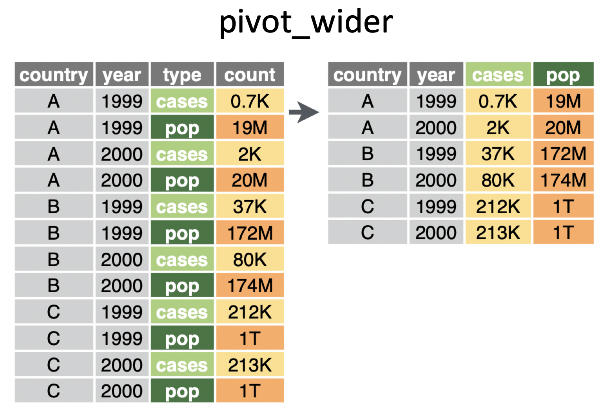
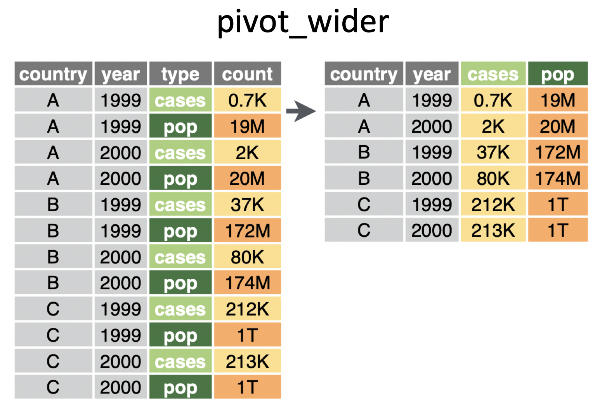

September 15 + 17, 2025
Based on https://www.effectivedatastorytelling.com/post/a-deeper-dive-into-lego-bricks-and-data-stories, original source: https://www.linkedin.com/learning/instructors/bill-shander
pivotingimage credit: https://www.garrickadenbuie.com/project/tidyexplain/
pivot_longer() makes the data frame “longer” – many columns into a few columns (more rows):pivot_longer(data,cols,names_to=,value_to=)
pivot_wider() makes the data frame “wider” – a few columns into many columns (fewer rows):pivot_wider(data,names_from=,values_from=)

pivot_longerpivot_longer will be demonstrated using datasets from GapMinder.
litF represents country, year, and female literacy rate.
library(googlesheets4)
gs4_deauth()
litF <- read_sheet("https://docs.google.com/spreadsheets/d/1hDinTIRHQIaZg1RUn6Z_6mo12PtKwEPFIz_mJVF6P5I/pub?gid=0")
litF |>
gt::gt()| Adult (15+) literacy rate (%). Female | 1975 | 1976 | 1977 | 1978 | 1979 | 1980 | 1981 | 1982 | 1983 | 1984 | 1985 | 1986 | 1987 | 1988 | 1989 | 1990 | 1991 | 1992 | 1993 | 1994 | 1995 | 1996 | 1997 | 1998 | 1999 | 2000 | 2001 | 2002 | 2003 | 2004 | 2005 | 2006 | 2007 | 2008 | 2009 | 2010 | 2011 |
|---|---|---|---|---|---|---|---|---|---|---|---|---|---|---|---|---|---|---|---|---|---|---|---|---|---|---|---|---|---|---|---|---|---|---|---|---|---|
| Afghanistan | NA | NA | NA | NA | 4.987460 | NA | NA | NA | NA | NA | NA | NA | NA | NA | NA | NA | NA | NA | NA | NA | NA | NA | NA | NA | NA | NA | NA | NA | NA | NA | NA | NA | NA | NA | NA | NA | 13.00000 |
| Albania | NA | NA | NA | NA | NA | NA | NA | NA | NA | NA | NA | NA | NA | NA | NA | NA | NA | NA | NA | NA | NA | NA | NA | NA | NA | NA | 98.252274 | NA | NA | NA | NA | NA | NA | 94.68181 | NA | NA | 95.69148 |
| Algeria | NA | NA | NA | NA | NA | NA | NA | NA | NA | NA | NA | NA | 35.83992 | NA | NA | NA | NA | NA | NA | NA | NA | NA | NA | NA | NA | NA | NA | 60.07508 | NA | NA | NA | 63.91879 | NA | NA | NA | NA | NA |
| Andorra | NA | NA | NA | NA | NA | NA | NA | NA | NA | NA | NA | NA | NA | NA | NA | NA | NA | NA | NA | NA | NA | NA | NA | NA | NA | NA | NA | NA | NA | NA | NA | NA | NA | NA | NA | NA | NA |
| Angola | NA | NA | NA | NA | NA | NA | NA | NA | NA | NA | NA | NA | NA | NA | NA | NA | NA | NA | NA | NA | NA | NA | NA | NA | NA | NA | 54.194488 | NA | NA | NA | NA | NA | NA | NA | NA | NA | 58.60846 |
| Anguilla | NA | NA | NA | NA | NA | NA | NA | NA | NA | 95.71493 | NA | NA | NA | NA | NA | NA | NA | NA | NA | NA | NA | NA | NA | NA | NA | NA | NA | NA | NA | NA | NA | NA | NA | NA | NA | NA | NA |
| Antigua and Barbuda | NA | NA | NA | NA | NA | NA | NA | NA | NA | NA | NA | NA | NA | NA | NA | NA | NA | NA | NA | NA | NA | NA | NA | NA | NA | NA | 99.420000 | NA | NA | NA | NA | NA | NA | NA | NA | NA | 99.42000 |
| Argentina | NA | NA | NA | NA | NA | 93.58089 | NA | NA | NA | NA | NA | NA | NA | NA | NA | NA | 96.041358 | NA | NA | NA | NA | NA | NA | NA | NA | NA | 97.193411 | NA | NA | NA | NA | NA | NA | NA | NA | NA | 97.89042 |
| Armenia | NA | NA | NA | NA | NA | NA | NA | NA | NA | NA | NA | NA | NA | NA | 98.15014 | NA | NA | NA | NA | NA | NA | NA | NA | NA | NA | NA | 99.161066 | NA | NA | NA | NA | NA | NA | NA | NA | NA | 99.45376 |
| Aruba | NA | NA | NA | NA | NA | NA | NA | NA | NA | NA | NA | NA | NA | NA | NA | NA | NA | NA | NA | NA | NA | NA | NA | NA | NA | 97.07136 | NA | NA | NA | NA | NA | NA | NA | NA | NA | 96.71978 | NA |
| Australia | NA | NA | NA | NA | NA | NA | NA | NA | NA | NA | NA | NA | NA | NA | NA | NA | NA | NA | NA | NA | NA | NA | NA | NA | NA | NA | NA | NA | NA | NA | NA | NA | NA | NA | NA | NA | NA |
| Austria | NA | NA | NA | NA | NA | NA | NA | NA | NA | NA | NA | NA | NA | NA | NA | NA | NA | NA | NA | NA | NA | NA | NA | NA | NA | NA | NA | NA | NA | NA | NA | NA | NA | NA | NA | NA | NA |
| Azerbaijan | NA | NA | NA | NA | NA | NA | NA | NA | NA | NA | NA | NA | NA | NA | NA | NA | NA | NA | NA | NA | NA | NA | NA | NA | 98.17478 | NA | NA | NA | NA | NA | NA | NA | 99.39788 | NA | 99.68215 | NA | NA |
| Bahamas | NA | NA | NA | NA | NA | NA | NA | NA | NA | NA | NA | NA | NA | NA | NA | NA | NA | NA | NA | NA | NA | NA | NA | NA | NA | NA | NA | NA | NA | NA | NA | NA | NA | NA | NA | NA | NA |
| Bahrain | NA | NA | NA | NA | NA | NA | 58.591092 | NA | NA | NA | NA | NA | NA | NA | NA | NA | 76.932319 | NA | NA | NA | NA | NA | NA | NA | NA | NA | 83.557418 | NA | NA | NA | NA | NA | NA | NA | NA | 91.61258 | NA |
| Bangladesh | NA | NA | NA | NA | NA | NA | 17.971629 | NA | NA | NA | NA | NA | NA | NA | NA | NA | 25.838980 | NA | NA | NA | NA | NA | NA | NA | NA | NA | 40.823350 | NA | NA | NA | NA | NA | NA | NA | NA | NA | 53.41050 |
| Barbados | NA | NA | NA | NA | NA | NA | NA | NA | NA | NA | NA | NA | NA | NA | NA | NA | NA | NA | NA | NA | NA | NA | NA | NA | NA | NA | NA | NA | NA | NA | NA | NA | NA | NA | NA | NA | NA |
| Belarus | NA | NA | NA | NA | NA | NA | NA | NA | NA | NA | NA | NA | NA | NA | 96.62822 | NA | NA | NA | NA | NA | NA | NA | NA | NA | 99.41972 | NA | NA | NA | NA | NA | NA | NA | NA | NA | 99.49399 | NA | NA |
| Belgium | NA | NA | NA | NA | NA | NA | NA | NA | NA | NA | NA | NA | NA | NA | NA | NA | NA | NA | NA | NA | NA | NA | NA | NA | NA | NA | NA | NA | NA | NA | NA | NA | NA | NA | NA | NA | NA |
| Belize | NA | NA | NA | NA | NA | NA | NA | NA | NA | NA | NA | NA | NA | NA | NA | NA | 70.328394 | NA | NA | NA | NA | NA | NA | NA | NA | NA | NA | NA | NA | NA | NA | NA | NA | NA | NA | NA | NA |
| Benin | NA | NA | NA | NA | 9.539080 | NA | NA | NA | NA | NA | NA | NA | NA | NA | NA | NA | NA | 16.56524 | NA | NA | NA | NA | NA | NA | NA | NA | NA | 23.30014 | NA | NA | NA | 18.44291 | NA | NA | NA | NA | NA |
| Bermuda | NA | NA | NA | NA | NA | NA | NA | NA | NA | NA | NA | NA | NA | NA | NA | NA | NA | NA | NA | NA | NA | NA | NA | NA | NA | NA | NA | NA | NA | NA | NA | NA | NA | NA | NA | NA | NA |
| Bhutan | NA | NA | NA | NA | NA | NA | NA | NA | NA | NA | NA | NA | NA | NA | NA | NA | NA | NA | NA | NA | NA | NA | NA | NA | NA | NA | NA | NA | NA | NA | 38.68066 | NA | NA | NA | NA | NA | NA |
| Bolivia | NA | 51.374645 | NA | NA | NA | NA | NA | NA | NA | NA | NA | NA | NA | NA | NA | NA | NA | 72.31322 | NA | NA | NA | NA | NA | NA | NA | NA | 80.654383 | NA | NA | NA | NA | NA | 85.98594 | 86.83175 | 86.82146 | NA | NA |
| Bosnia and Herzegovina | NA | NA | NA | NA | NA | NA | NA | NA | NA | NA | NA | NA | NA | NA | NA | NA | NA | NA | NA | NA | NA | NA | NA | NA | NA | 94.35994 | NA | NA | NA | NA | NA | NA | NA | NA | NA | NA | 96.69526 |
| Botswana | NA | NA | NA | NA | NA | NA | NA | NA | NA | NA | NA | NA | NA | NA | NA | NA | 71.299236 | NA | NA | NA | NA | NA | NA | NA | NA | NA | NA | NA | 81.80795 | NA | NA | NA | NA | NA | NA | NA | 85.56156 |
| Brazil | NA | NA | NA | NA | NA | 72.85315 | NA | NA | NA | NA | NA | NA | NA | NA | NA | NA | NA | NA | NA | NA | NA | NA | NA | NA | NA | 86.50005 | NA | NA | NA | 88.80613 | NA | 89.85559 | 90.22801 | 90.21955 | 90.41122 | 90.68170 | NA |
| British Virgin Islands | NA | NA | NA | NA | NA | NA | NA | NA | NA | NA | NA | NA | NA | NA | NA | NA | NA | NA | NA | NA | NA | NA | NA | NA | NA | NA | NA | NA | NA | NA | NA | NA | NA | NA | NA | NA | NA |
| Brunei | NA | NA | NA | NA | NA | NA | 68.982584 | NA | NA | NA | NA | NA | NA | NA | NA | NA | 82.461356 | NA | NA | NA | NA | NA | NA | NA | NA | NA | 90.161545 | NA | NA | NA | NA | NA | NA | NA | NA | NA | 93.92081 |
| Bulgaria | NA | NA | NA | NA | NA | NA | NA | NA | NA | NA | NA | NA | NA | NA | NA | NA | NA | NA | NA | NA | NA | NA | NA | NA | NA | NA | 97.706486 | NA | NA | NA | NA | NA | NA | NA | NA | NA | 97.98390 |
| Burkina Faso | 3.182766 | NA | NA | NA | NA | NA | NA | NA | NA | NA | NA | NA | NA | NA | NA | NA | 8.225427 | NA | NA | NA | NA | 8.05798 | NA | NA | NA | NA | NA | NA | 15.18877 | NA | 16.62224 | NA | 21.57957 | NA | NA | NA | NA |
| Burundi | NA | NA | NA | NA | 11.983568 | NA | NA | NA | NA | NA | NA | NA | NA | NA | NA | 27.52930 | NA | NA | NA | NA | NA | NA | NA | NA | NA | 52.23776 | NA | NA | NA | NA | NA | NA | NA | 84.59147 | NA | NA | NA |
| Cambodia | NA | NA | NA | NA | NA | NA | NA | NA | NA | NA | NA | NA | NA | NA | NA | NA | NA | NA | NA | NA | NA | NA | NA | 56.99250 | NA | NA | NA | NA | NA | 64.05099 | NA | NA | NA | 70.85820 | 65.93125 | NA | NA |
| Cameroon | NA | 29.116129 | NA | NA | NA | NA | NA | NA | NA | NA | NA | NA | NA | NA | NA | NA | NA | NA | NA | NA | NA | NA | NA | NA | NA | 58.72176 | NA | NA | NA | NA | NA | NA | 63.02206 | NA | NA | 64.79950 | NA |
| Canada | NA | NA | NA | NA | NA | NA | NA | NA | NA | NA | NA | NA | NA | NA | NA | NA | NA | NA | NA | NA | NA | NA | NA | NA | NA | NA | NA | NA | NA | NA | NA | NA | NA | NA | NA | NA | NA |
| Cape Verde | NA | NA | NA | NA | NA | NA | NA | NA | NA | NA | NA | NA | NA | NA | NA | 52.99862 | NA | NA | NA | NA | NA | NA | NA | NA | NA | NA | NA | NA | NA | 74.06926 | NA | NA | NA | NA | NA | NA | 80.25824 |
| Cayman Islands | NA | NA | NA | NA | NA | NA | NA | NA | NA | NA | NA | NA | NA | NA | NA | NA | NA | NA | NA | NA | NA | NA | NA | NA | NA | NA | NA | NA | NA | NA | NA | NA | 99.02148 | NA | NA | NA | NA |
| Central African Rep. | 8.399576 | NA | NA | NA | NA | NA | NA | NA | NA | NA | NA | NA | NA | 20.33688 | NA | NA | NA | NA | NA | NA | NA | NA | NA | NA | NA | 35.29090 | NA | NA | NA | NA | NA | NA | NA | NA | NA | NA | 44.17747 |
| Chad | NA | NA | NA | NA | NA | NA | NA | NA | NA | NA | NA | NA | NA | NA | NA | NA | NA | NA | 4.591826 | NA | NA | NA | NA | NA | NA | 12.79642 | NA | NA | NA | 17.98058 | NA | NA | NA | NA | NA | NA | 25.39826 |
| Chile | NA | NA | NA | NA | NA | NA | NA | 90.80012 | NA | NA | NA | NA | NA | NA | NA | NA | NA | 94.03671 | NA | NA | NA | NA | NA | NA | NA | NA | NA | 95.64093 | NA | NA | NA | NA | NA | 98.69557 | 98.49128 | NA | NA |
| China | NA | NA | NA | NA | NA | NA | NA | 51.13681 | NA | NA | NA | NA | NA | NA | NA | 68.07208 | NA | NA | NA | NA | NA | NA | NA | NA | NA | 86.52660 | NA | NA | NA | NA | NA | NA | NA | NA | NA | 92.71123 | NA |
| Colombia | NA | NA | NA | NA | NA | NA | NA | NA | NA | NA | NA | NA | NA | NA | NA | NA | NA | NA | 81.235482 | NA | NA | 91.31400 | NA | NA | NA | NA | NA | NA | NA | 92.71463 | 92.91125 | 92.22060 | 92.84562 | 93.43537 | 93.41513 | 93.48679 | 93.66714 |
| Comoros | NA | NA | NA | NA | NA | 40.31762 | NA | NA | NA | NA | NA | NA | NA | NA | NA | NA | NA | NA | NA | NA | NA | NA | NA | NA | NA | 63.45902 | NA | NA | NA | NA | NA | NA | NA | NA | NA | NA | 70.57002 |
| Congo, Dem. Rep. | NA | NA | NA | NA | NA | NA | NA | NA | NA | NA | NA | NA | NA | NA | NA | NA | NA | NA | NA | NA | NA | NA | NA | NA | NA | NA | 54.060896 | NA | NA | NA | NA | NA | 46.10425 | NA | NA | NA | NA |
| Congo, Rep. | NA | NA | NA | NA | NA | NA | NA | NA | NA | NA | NA | NA | NA | NA | NA | NA | NA | NA | NA | NA | NA | NA | NA | NA | NA | NA | NA | NA | NA | NA | NA | NA | NA | NA | NA | NA | NA |
| Cook Islands | NA | NA | NA | NA | NA | NA | NA | NA | NA | NA | NA | NA | NA | NA | NA | NA | NA | NA | NA | NA | NA | NA | NA | NA | NA | NA | NA | NA | NA | NA | NA | NA | NA | NA | NA | NA | NA |
| Costa Rica | NA | NA | NA | NA | NA | NA | NA | NA | NA | 92.57713 | NA | NA | NA | NA | NA | NA | NA | NA | NA | NA | NA | NA | NA | NA | NA | 95.08079 | NA | NA | NA | NA | NA | NA | NA | NA | NA | NA | 96.47886 |
| Cote d'Ivoire | NA | NA | NA | NA | NA | NA | NA | NA | NA | NA | NA | NA | NA | 23.43378 | NA | NA | NA | NA | NA | NA | NA | NA | NA | 28.47667 | NA | 38.61451 | NA | NA | NA | NA | NA | NA | NA | NA | NA | NA | 47.58359 |
| Croatia | NA | NA | NA | NA | NA | NA | NA | NA | NA | NA | NA | NA | NA | NA | NA | NA | 94.817222 | NA | NA | NA | NA | NA | NA | NA | NA | NA | 97.083898 | NA | NA | NA | NA | NA | NA | NA | NA | NA | 98.31105 |
| Cuba | NA | NA | NA | NA | NA | NA | NA | NA | NA | NA | NA | NA | NA | NA | NA | NA | NA | NA | NA | NA | NA | NA | NA | NA | NA | NA | NA | 99.79092 | NA | NA | NA | NA | NA | NA | NA | NA | 99.82679 |
| Cyprus | NA | NA | NA | NA | NA | NA | NA | NA | NA | NA | NA | NA | NA | NA | NA | NA | NA | 91.00178 | NA | NA | NA | NA | NA | NA | NA | NA | 95.079665 | NA | NA | NA | NA | NA | NA | NA | NA | NA | 98.11623 |
| Czech Rep. | NA | NA | NA | NA | NA | NA | NA | NA | NA | NA | NA | NA | NA | NA | NA | NA | NA | NA | NA | NA | NA | NA | NA | NA | NA | NA | NA | NA | NA | NA | NA | NA | NA | NA | NA | NA | NA |
| Denmark | NA | NA | NA | NA | NA | NA | NA | NA | NA | NA | NA | NA | NA | NA | NA | NA | NA | NA | NA | NA | NA | NA | NA | NA | NA | NA | NA | NA | NA | NA | NA | NA | NA | NA | NA | NA | NA |
| Djibouti | NA | NA | NA | NA | NA | NA | NA | NA | NA | NA | NA | NA | NA | NA | NA | NA | NA | NA | NA | NA | NA | NA | NA | NA | NA | NA | NA | NA | NA | NA | NA | NA | NA | NA | NA | NA | NA |
| Dominica | NA | NA | NA | NA | NA | NA | NA | NA | NA | NA | NA | NA | NA | NA | NA | NA | NA | NA | NA | NA | NA | NA | NA | NA | NA | NA | NA | NA | NA | NA | NA | NA | NA | NA | NA | NA | NA |
| Dominican Rep. | NA | NA | NA | NA | NA | NA | 72.536085 | NA | NA | NA | NA | NA | NA | NA | NA | NA | NA | NA | NA | NA | NA | NA | NA | NA | NA | NA | NA | 87.17709 | NA | NA | NA | NA | 88.27717 | NA | NA | 89.69730 | 90.22552 |
| Ecuador | NA | NA | NA | NA | NA | NA | NA | 80.40523 | NA | NA | NA | NA | NA | NA | NA | 86.19333 | NA | NA | NA | NA | NA | NA | NA | NA | NA | NA | 89.697087 | NA | NA | NA | NA | NA | 81.68059 | NA | 81.45120 | 90.47011 | 90.22082 |
| Egypt | NA | 22.438008 | NA | NA | NA | NA | NA | NA | NA | NA | NA | 31.40419 | NA | NA | NA | NA | NA | NA | NA | NA | NA | 43.59531 | NA | NA | NA | NA | NA | NA | NA | NA | 59.35558 | 57.81191 | NA | NA | NA | 63.51581 | 64.63623 |
| El Salvador | NA | NA | NA | NA | NA | NA | NA | NA | NA | NA | NA | NA | NA | NA | NA | NA | NA | 71.28053 | NA | NA | NA | NA | NA | NA | NA | NA | NA | NA | NA | 78.35865 | NA | 81.00382 | 79.66213 | 81.35950 | 81.81795 | 82.30802 | NA |
| Equatorial Guinea | NA | NA | NA | NA | NA | NA | NA | NA | NA | NA | NA | NA | NA | NA | NA | NA | NA | NA | NA | NA | NA | NA | NA | NA | NA | 81.62300 | NA | NA | NA | NA | NA | NA | NA | NA | NA | NA | 91.07868 |
| Eritrea | NA | NA | NA | NA | NA | NA | NA | NA | NA | NA | NA | NA | NA | NA | NA | NA | NA | NA | NA | NA | NA | NA | NA | NA | NA | NA | NA | 40.22442 | NA | NA | NA | NA | NA | NA | NA | NA | 59.03992 |
| Estonia | NA | NA | NA | NA | NA | NA | NA | NA | NA | NA | NA | NA | NA | NA | 99.60148 | NA | NA | NA | NA | NA | NA | NA | NA | NA | NA | 99.76006 | NA | NA | NA | NA | NA | NA | NA | NA | NA | NA | 99.81971 |
| Ethiopia | NA | NA | NA | NA | NA | NA | NA | NA | NA | NA | NA | NA | NA | NA | NA | NA | NA | NA | NA | 18.51498 | NA | NA | NA | NA | NA | NA | NA | NA | NA | 22.80000 | 17.97720 | NA | 28.92164 | NA | NA | NA | NA |
| Fiji | NA | NA | NA | NA | NA | NA | NA | NA | NA | NA | NA | NA | NA | NA | NA | NA | NA | NA | NA | NA | NA | NA | NA | NA | NA | NA | NA | NA | NA | NA | NA | NA | NA | NA | NA | NA | NA |
| Finland | NA | NA | NA | NA | NA | NA | NA | NA | NA | NA | NA | NA | NA | NA | NA | NA | NA | NA | NA | NA | NA | NA | NA | NA | NA | NA | NA | NA | NA | NA | NA | NA | NA | NA | NA | NA | NA |
| France | NA | NA | NA | NA | NA | NA | NA | NA | NA | NA | NA | NA | NA | NA | NA | NA | NA | NA | NA | NA | NA | NA | NA | NA | NA | NA | NA | NA | NA | NA | NA | NA | NA | NA | NA | NA | NA |
| Gabon | NA | NA | NA | NA | NA | NA | NA | NA | NA | NA | NA | NA | NA | NA | NA | NA | NA | NA | 65.326310 | NA | NA | NA | NA | NA | NA | NA | NA | NA | NA | 79.30927 | NA | NA | NA | NA | NA | NA | 85.63833 |
| Gambia | NA | NA | NA | NA | NA | NA | NA | NA | NA | NA | NA | NA | NA | NA | NA | NA | NA | NA | NA | NA | NA | NA | NA | NA | NA | 25.06155 | NA | NA | NA | NA | NA | NA | NA | NA | NA | NA | 41.88712 |
| Georgia | NA | NA | NA | NA | NA | NA | NA | NA | NA | NA | NA | NA | NA | NA | NA | NA | NA | NA | NA | NA | NA | NA | NA | NA | NA | NA | NA | 99.55285 | NA | NA | NA | NA | NA | NA | NA | NA | 99.68613 |
| Germany | NA | NA | NA | NA | NA | NA | NA | NA | NA | NA | NA | NA | NA | NA | NA | NA | NA | NA | NA | NA | NA | NA | NA | NA | NA | NA | NA | NA | NA | NA | NA | NA | NA | NA | NA | NA | NA |
| Ghana | NA | NA | NA | NA | NA | NA | NA | NA | NA | NA | NA | NA | NA | NA | NA | NA | NA | NA | NA | NA | NA | NA | NA | NA | NA | 49.79196 | NA | NA | NA | NA | NA | NA | NA | NA | NA | 65.29469 | NA |
| Gibraltar | NA | NA | NA | NA | NA | NA | NA | NA | NA | NA | NA | NA | NA | NA | NA | NA | NA | NA | NA | NA | NA | NA | NA | NA | NA | NA | NA | NA | NA | NA | NA | NA | NA | NA | NA | NA | NA |
| Greece | NA | NA | NA | NA | NA | NA | 85.319987 | NA | NA | NA | NA | NA | NA | NA | NA | NA | 89.353296 | NA | NA | NA | NA | NA | NA | NA | NA | NA | 94.239412 | NA | NA | NA | NA | NA | NA | NA | NA | NA | 96.27898 |
| Grenada | NA | NA | NA | NA | NA | NA | NA | NA | NA | NA | NA | NA | NA | NA | NA | NA | NA | NA | NA | NA | NA | NA | NA | NA | NA | NA | NA | NA | NA | NA | NA | NA | NA | NA | NA | NA | NA |
| Guatemala | NA | NA | NA | NA | NA | NA | NA | NA | NA | NA | NA | NA | NA | NA | NA | NA | NA | NA | NA | 57.29266 | NA | NA | NA | NA | NA | NA | NA | 63.34138 | NA | NA | NA | NA | NA | NA | NA | NA | 71.08082 |
| Guinea | NA | NA | NA | NA | NA | NA | NA | NA | NA | NA | NA | NA | NA | NA | NA | NA | NA | NA | NA | NA | NA | 9.74307 | NA | NA | NA | NA | NA | NA | 18.23868 | NA | NA | NA | NA | NA | NA | 12.19197 | NA |
| Guinea-Bissau | NA | NA | NA | NA | 8.588262 | NA | NA | NA | NA | NA | NA | NA | NA | NA | NA | NA | NA | NA | NA | NA | NA | NA | NA | NA | NA | 27.49421 | NA | NA | NA | NA | NA | NA | NA | NA | NA | NA | 42.06704 |
| Guyana | NA | NA | NA | NA | NA | NA | NA | NA | NA | NA | NA | NA | NA | NA | NA | NA | NA | NA | NA | NA | NA | NA | NA | NA | NA | NA | NA | NA | NA | NA | NA | NA | NA | NA | 87.25198 | NA | NA |
| Haiti | NA | NA | NA | NA | NA | NA | NA | 32.52496 | NA | NA | NA | NA | NA | NA | NA | NA | NA | NA | NA | NA | NA | NA | NA | NA | NA | NA | NA | NA | 54.86147 | NA | NA | 44.59945 | NA | NA | NA | NA | NA |
| Holy See | NA | NA | NA | NA | NA | NA | NA | NA | NA | NA | NA | NA | NA | NA | NA | NA | NA | NA | NA | NA | NA | NA | NA | NA | NA | NA | NA | NA | NA | NA | NA | NA | NA | NA | NA | NA | NA |
| Honduras | NA | NA | NA | NA | NA | NA | NA | NA | NA | NA | NA | NA | NA | NA | NA | NA | NA | NA | NA | NA | NA | NA | NA | NA | NA | NA | 80.223602 | NA | NA | NA | NA | NA | 83.45277 | NA | NA | 84.72503 | 84.93035 |
| Hong Kong, China | NA | NA | NA | NA | NA | NA | NA | NA | NA | NA | NA | NA | NA | NA | NA | NA | NA | NA | NA | NA | NA | NA | NA | NA | NA | NA | NA | NA | NA | NA | NA | NA | NA | NA | NA | NA | NA |
| Hungary | NA | NA | NA | NA | NA | 98.45413 | NA | NA | NA | NA | NA | NA | NA | NA | NA | NA | NA | NA | NA | 98.71310 | NA | NA | NA | NA | NA | NA | NA | NA | NA | 98.85411 | NA | NA | NA | NA | NA | NA | 98.93870 |
| Iceland | NA | NA | NA | NA | NA | NA | NA | NA | NA | NA | NA | NA | NA | NA | NA | NA | NA | NA | NA | NA | NA | NA | NA | NA | NA | NA | NA | NA | NA | NA | NA | NA | NA | NA | NA | NA | NA |
| India | NA | NA | NA | NA | NA | NA | 25.676252 | NA | NA | NA | NA | NA | NA | NA | NA | NA | 33.729527 | NA | NA | NA | NA | NA | NA | NA | NA | NA | 47.842099 | NA | NA | NA | NA | 50.82376 | NA | NA | NA | NA | NA |
| Indonesia | NA | NA | NA | NA | NA | 57.69463 | NA | NA | NA | NA | NA | NA | NA | NA | NA | 75.27012 | NA | NA | NA | NA | NA | NA | NA | NA | NA | NA | NA | NA | NA | 86.79959 | NA | 88.78698 | NA | 89.10139 | 89.67712 | NA | 90.06870 |
| Iran | NA | 24.423083 | NA | NA | NA | NA | NA | NA | NA | NA | NA | 41.03395 | NA | NA | NA | NA | 56.156417 | NA | NA | NA | NA | 66.06776 | NA | NA | NA | NA | NA | 70.40000 | NA | NA | 76.80264 | 77.24002 | NA | 80.65532 | NA | NA | NA |
| Iraq | NA | NA | NA | NA | NA | NA | NA | NA | NA | NA | NA | NA | NA | NA | NA | NA | NA | NA | NA | NA | NA | NA | NA | NA | NA | 64.16950 | NA | NA | NA | NA | NA | NA | NA | NA | NA | NA | 71.20716 |
| Ireland | NA | NA | NA | NA | NA | NA | NA | NA | NA | NA | NA | NA | NA | NA | NA | NA | NA | NA | NA | NA | NA | NA | NA | NA | NA | NA | NA | NA | NA | NA | NA | NA | NA | NA | NA | NA | NA |
| Israel | NA | NA | NA | NA | NA | NA | NA | NA | 88.67472 | NA | NA | NA | NA | NA | NA | NA | NA | NA | NA | NA | NA | NA | NA | NA | NA | NA | NA | NA | NA | NA | NA | NA | NA | NA | NA | NA | NA |
| Italy | NA | NA | NA | NA | NA | NA | 95.536669 | NA | NA | NA | NA | NA | NA | NA | NA | NA | NA | NA | NA | NA | NA | NA | NA | NA | NA | NA | 98.042153 | NA | NA | NA | NA | NA | NA | NA | NA | NA | 98.74161 |
| Jamaica | NA | NA | NA | NA | NA | NA | NA | NA | NA | NA | NA | NA | NA | NA | NA | NA | NA | NA | NA | NA | NA | NA | NA | NA | 85.87208 | NA | NA | NA | NA | NA | NA | NA | NA | NA | NA | NA | 91.76553 |
| Japan | NA | NA | NA | NA | NA | NA | NA | NA | NA | NA | NA | NA | NA | NA | NA | NA | NA | NA | NA | NA | NA | NA | NA | NA | NA | NA | NA | NA | NA | NA | NA | NA | NA | NA | NA | NA | NA |
| Jordan | NA | NA | NA | NA | 52.110613 | NA | NA | NA | NA | NA | NA | NA | NA | NA | NA | NA | NA | NA | NA | NA | NA | NA | NA | NA | NA | NA | NA | NA | 84.71392 | NA | 87.00581 | NA | 88.90331 | NA | NA | 89.20774 | 93.93346 |
| Kazakhstan | NA | NA | NA | NA | NA | NA | NA | NA | NA | NA | NA | NA | NA | NA | 96.13877 | NA | NA | NA | NA | NA | NA | NA | NA | NA | 99.28990 | NA | NA | NA | NA | NA | NA | NA | NA | NA | 99.68429 | NA | NA |
| Kenya | NA | NA | NA | NA | NA | NA | NA | NA | NA | NA | NA | NA | NA | NA | NA | NA | NA | NA | NA | NA | NA | NA | NA | NA | NA | 77.89298 | NA | NA | NA | NA | NA | NA | 66.86312 | NA | NA | NA | NA |
| Kiribati | NA | NA | NA | NA | NA | NA | NA | NA | NA | NA | NA | NA | NA | NA | NA | NA | NA | NA | NA | NA | NA | NA | NA | NA | NA | NA | NA | NA | NA | NA | NA | NA | NA | NA | NA | NA | NA |
| Korea, Dem. Rep. | NA | NA | NA | NA | NA | NA | NA | NA | NA | NA | NA | NA | NA | NA | NA | NA | NA | NA | NA | NA | NA | NA | NA | NA | NA | NA | NA | NA | NA | NA | NA | NA | NA | 99.99762 | NA | NA | NA |
| Korea, Rep. | NA | NA | NA | NA | NA | NA | NA | NA | NA | NA | NA | NA | NA | NA | NA | NA | NA | NA | NA | NA | NA | NA | NA | NA | NA | NA | NA | NA | NA | NA | NA | NA | NA | NA | NA | NA | NA |
| Kuwait | 48.015214 | NA | NA | NA | NA | 59.11050 | NA | NA | NA | NA | 68.84937 | NA | NA | NA | NA | NA | NA | NA | NA | NA | 74.14872 | NA | NA | NA | NA | NA | NA | NA | NA | NA | 91.04250 | 90.82863 | 91.50349 | 91.79302 | NA | NA | NA |
| Kyrgyzstan | NA | NA | NA | NA | NA | NA | NA | NA | NA | NA | NA | NA | NA | NA | NA | NA | NA | NA | NA | NA | NA | NA | NA | NA | 98.13063 | NA | NA | NA | NA | NA | NA | NA | NA | NA | 98.98121 | NA | NA |
| Laos | NA | NA | NA | NA | NA | NA | NA | NA | NA | NA | NA | NA | NA | NA | NA | NA | NA | NA | NA | NA | 47.90236 | NA | NA | NA | NA | 58.46070 | 60.902520 | NA | NA | NA | 63.22699 | NA | NA | NA | NA | NA | NA |
| Latvia | NA | NA | NA | NA | NA | NA | NA | NA | NA | NA | NA | NA | NA | NA | 99.20255 | NA | NA | NA | NA | NA | NA | NA | NA | NA | NA | 99.70973 | NA | NA | NA | NA | NA | NA | NA | NA | NA | NA | 99.79728 |
| Lebanon | NA | NA | NA | NA | NA | NA | NA | NA | NA | NA | NA | NA | NA | NA | NA | NA | NA | NA | NA | NA | NA | NA | NA | NA | NA | NA | NA | NA | NA | NA | NA | NA | 85.96778 | NA | NA | NA | NA |
| Lesotho | NA | NA | NA | NA | NA | NA | NA | NA | NA | NA | NA | NA | NA | NA | NA | NA | NA | NA | NA | NA | NA | NA | NA | NA | NA | 92.04645 | NA | NA | NA | NA | NA | NA | NA | NA | 84.96396 | NA | NA |
| Liberia | NA | NA | NA | NA | NA | NA | NA | NA | NA | 19.30279 | NA | NA | NA | NA | NA | NA | NA | NA | NA | 32.01852 | NA | NA | NA | NA | NA | NA | NA | NA | NA | 47.87633 | NA | NA | 27.03491 | NA | NA | NA | NA |
| Libya | NA | NA | NA | NA | NA | NA | NA | NA | NA | 42.31355 | NA | NA | NA | NA | NA | NA | NA | NA | NA | 64.95931 | NA | NA | NA | NA | NA | NA | NA | NA | NA | 78.19782 | NA | NA | NA | NA | NA | NA | 83.32303 |
| Liechtenstein | NA | NA | NA | NA | NA | NA | NA | NA | NA | NA | NA | NA | NA | NA | NA | NA | NA | NA | NA | NA | NA | NA | NA | NA | NA | NA | NA | NA | NA | NA | NA | NA | NA | NA | NA | NA | NA |
| Lithuania | NA | NA | NA | NA | NA | NA | NA | NA | NA | NA | NA | NA | NA | NA | 97.78159 | NA | NA | NA | NA | NA | NA | NA | NA | NA | NA | NA | 99.647943 | NA | NA | NA | NA | NA | NA | NA | NA | NA | 99.72063 |
| Luxembourg | NA | NA | NA | NA | NA | NA | NA | NA | NA | NA | NA | NA | NA | NA | NA | NA | NA | NA | NA | NA | NA | NA | NA | NA | NA | NA | NA | NA | NA | NA | NA | NA | NA | NA | NA | NA | NA |
| Macao, China | NA | NA | NA | NA | NA | NA | 86.215884 | NA | NA | NA | NA | NA | NA | NA | NA | NA | NA | NA | NA | NA | NA | NA | NA | NA | NA | NA | 87.774972 | NA | NA | NA | NA | 90.72359 | NA | NA | NA | NA | 93.73191 |
| Macedonia, FYR | NA | NA | NA | NA | NA | NA | NA | NA | NA | NA | NA | NA | NA | NA | NA | NA | NA | NA | NA | 90.92802 | NA | NA | NA | NA | NA | NA | NA | 94.05607 | NA | NA | NA | NA | NA | NA | NA | NA | 96.04252 |
| Madagascar | NA | NA | NA | NA | NA | NA | NA | NA | NA | NA | NA | NA | NA | NA | NA | NA | NA | NA | NA | NA | NA | NA | NA | NA | NA | 65.27857 | NA | NA | NA | NA | NA | NA | NA | NA | 61.64141 | NA | NA |
| Malawi | NA | NA | NA | NA | NA | NA | NA | NA | NA | NA | NA | NA | 33.52302 | NA | NA | NA | NA | NA | NA | NA | NA | NA | NA | 53.99712 | NA | NA | NA | NA | NA | NA | NA | NA | NA | NA | NA | 51.25197 | NA |
| Malaysia | NA | NA | NA | NA | NA | 61.24850 | NA | NA | NA | NA | NA | NA | NA | NA | NA | NA | 77.283088 | NA | NA | NA | NA | NA | NA | NA | NA | 85.35422 | NA | NA | NA | NA | NA | NA | NA | NA | NA | 90.74768 | NA |
| Maldives | NA | NA | 82.17816 | NA | NA | NA | NA | NA | NA | NA | 92.35901 | NA | NA | NA | NA | 96.14601 | NA | NA | NA | NA | 96.44298 | NA | NA | NA | NA | 96.44298 | NA | NA | NA | NA | NA | 98.42985 | NA | NA | NA | NA | NA |
| Mali | NA | 5.735281 | NA | NA | NA | NA | NA | NA | NA | NA | NA | NA | NA | NA | NA | NA | NA | NA | NA | NA | NA | NA | NA | 11.89343 | NA | NA | NA | NA | 15.90000 | NA | NA | 18.19091 | NA | NA | NA | 20.28793 | 24.56741 |
| Malta | NA | NA | NA | NA | NA | NA | NA | NA | NA | NA | 88.29275 | NA | NA | NA | NA | NA | NA | NA | NA | NA | 89.24264 | NA | NA | NA | NA | NA | NA | NA | NA | NA | 93.50425 | NA | NA | NA | NA | NA | NA |
| Marshall Islands | NA | NA | NA | NA | NA | NA | NA | NA | NA | NA | NA | NA | NA | NA | NA | NA | NA | NA | NA | NA | NA | NA | NA | NA | NA | NA | NA | NA | NA | NA | NA | NA | NA | NA | NA | NA | NA |
| Mauritania | NA | NA | NA | NA | NA | NA | NA | NA | NA | NA | NA | NA | NA | NA | NA | NA | NA | NA | NA | NA | NA | NA | NA | NA | NA | 43.41736 | NA | NA | NA | NA | NA | NA | NA | NA | NA | NA | 51.97767 |
| Mauritius | NA | NA | NA | NA | NA | NA | NA | NA | NA | NA | NA | NA | NA | NA | NA | 74.66089 | NA | NA | NA | NA | NA | NA | NA | NA | NA | 80.50003 | NA | NA | NA | NA | NA | NA | NA | NA | NA | NA | 86.66407 |
| Mexico | NA | NA | NA | NA | NA | 79.89100 | NA | NA | NA | NA | NA | NA | NA | NA | NA | 84.95591 | NA | NA | NA | NA | NA | NA | NA | NA | NA | 88.68204 | NA | 88.72863 | NA | 89.63102 | 90.21041 | 89.83451 | 91.35555 | 91.45361 | 92.11625 | 91.85342 | 92.33828 |
| Micronesia, Fed. Sts. | NA | NA | NA | NA | NA | NA | NA | NA | NA | NA | NA | NA | NA | NA | NA | NA | NA | NA | NA | NA | NA | NA | NA | NA | NA | NA | NA | NA | NA | NA | NA | NA | NA | NA | NA | NA | NA |
| Moldova | NA | NA | NA | NA | NA | NA | NA | NA | NA | NA | NA | NA | NA | NA | 94.44448 | NA | NA | NA | NA | NA | NA | NA | NA | NA | NA | 95.49230 | NA | NA | NA | NA | NA | NA | NA | NA | NA | NA | 98.48289 |
| Monaco | NA | NA | NA | NA | NA | NA | NA | NA | NA | NA | NA | NA | NA | NA | NA | NA | NA | NA | NA | NA | NA | NA | NA | NA | NA | NA | NA | NA | NA | NA | NA | NA | NA | NA | NA | NA | NA |
| Mongolia | NA | NA | NA | NA | NA | NA | NA | NA | NA | NA | NA | NA | NA | NA | NA | NA | NA | NA | NA | NA | NA | NA | NA | NA | NA | 97.52880 | NA | NA | NA | NA | NA | NA | NA | NA | NA | NA | 97.87714 |
| Montenegro | NA | NA | NA | NA | NA | NA | NA | NA | NA | NA | NA | NA | NA | NA | NA | NA | NA | NA | NA | NA | NA | NA | NA | NA | NA | NA | NA | NA | NA | NA | NA | NA | NA | NA | NA | NA | 97.58914 |
| Montserrat | NA | NA | NA | NA | NA | NA | NA | NA | NA | NA | NA | NA | NA | NA | NA | NA | NA | NA | NA | NA | NA | NA | NA | NA | NA | NA | NA | NA | NA | NA | NA | NA | NA | NA | NA | NA | NA |
| Morocco | NA | NA | NA | NA | NA | NA | NA | 17.51487 | NA | NA | NA | NA | NA | NA | NA | NA | NA | NA | NA | 28.72542 | NA | NA | NA | NA | NA | NA | NA | NA | NA | 39.61956 | NA | NA | NA | 42.58785 | 43.92108 | NA | 57.63999 |
| Mozambique | NA | NA | NA | NA | NA | 12.14632 | NA | NA | NA | NA | NA | NA | NA | NA | NA | NA | NA | NA | NA | NA | NA | NA | 24.96420 | NA | NA | NA | NA | NA | 33.19396 | NA | NA | NA | NA | NA | 36.45228 | NA | NA |
| Myanmar | NA | NA | NA | NA | NA | NA | NA | NA | 71.63087 | NA | NA | NA | NA | NA | NA | NA | NA | NA | NA | NA | NA | NA | NA | NA | NA | 86.41518 | NA | NA | NA | NA | NA | NA | NA | NA | NA | NA | 90.37064 |
| Namibia | NA | NA | NA | NA | NA | NA | NA | NA | NA | NA | NA | NA | NA | NA | NA | NA | 73.986597 | NA | NA | NA | NA | NA | NA | NA | NA | NA | 83.490088 | NA | NA | NA | NA | NA | 78.35098 | NA | NA | NA | NA |
| Nauru | NA | NA | NA | NA | NA | NA | NA | NA | NA | NA | NA | NA | NA | NA | NA | NA | NA | NA | NA | NA | NA | NA | NA | NA | NA | NA | NA | NA | NA | NA | NA | NA | NA | NA | NA | NA | NA |
| Nepal | NA | NA | NA | NA | NA | NA | 9.153116 | NA | NA | NA | NA | NA | NA | NA | NA | NA | 17.381793 | NA | NA | NA | NA | NA | NA | NA | NA | NA | 34.886764 | NA | NA | NA | NA | NA | NA | NA | NA | NA | 46.70610 |
| Netherlands | NA | NA | NA | NA | NA | NA | NA | NA | NA | NA | NA | NA | NA | NA | NA | NA | NA | NA | NA | NA | NA | NA | NA | NA | NA | NA | NA | NA | NA | NA | NA | NA | NA | NA | NA | NA | NA |
| Netherlands Antilles | NA | NA | NA | NA | NA | NA | NA | NA | NA | NA | NA | NA | NA | NA | NA | NA | NA | 95.01091 | NA | NA | NA | NA | NA | NA | NA | NA | NA | NA | NA | NA | NA | NA | NA | NA | NA | NA | 96.53381 |
| New Zealand | NA | NA | NA | NA | NA | NA | NA | NA | NA | NA | NA | NA | NA | NA | NA | NA | NA | NA | NA | NA | NA | NA | NA | NA | NA | NA | NA | NA | NA | NA | NA | NA | NA | NA | NA | NA | NA |
| Nicaragua | NA | NA | NA | NA | NA | NA | NA | NA | NA | NA | NA | NA | NA | NA | NA | NA | NA | NA | NA | NA | NA | NA | NA | NA | NA | NA | 76.601656 | NA | NA | NA | 77.91604 | NA | NA | NA | NA | NA | NA |
| Niger | NA | NA | NA | NA | NA | NA | NA | NA | NA | NA | NA | NA | NA | NA | NA | NA | NA | NA | NA | NA | NA | NA | NA | NA | NA | NA | 9.398724 | NA | NA | NA | 15.08414 | NA | NA | NA | NA | NA | NA |
| Nigeria | NA | NA | NA | NA | NA | NA | NA | NA | NA | NA | NA | NA | NA | NA | NA | NA | 43.729197 | NA | NA | NA | NA | NA | NA | NA | NA | NA | NA | NA | 43.32205 | NA | NA | NA | NA | 41.38676 | NA | NA | NA |
| Niue | NA | NA | NA | NA | NA | NA | NA | NA | NA | NA | NA | NA | NA | NA | NA | NA | NA | NA | NA | NA | NA | NA | NA | NA | NA | NA | NA | NA | NA | NA | NA | NA | NA | NA | NA | NA | NA |
| Norway | NA | NA | NA | NA | NA | NA | NA | NA | NA | NA | NA | NA | NA | NA | NA | NA | NA | NA | NA | NA | NA | NA | NA | NA | NA | NA | NA | NA | NA | NA | NA | NA | NA | NA | NA | NA | NA |
| Oman | NA | NA | NA | NA | NA | NA | NA | NA | NA | NA | NA | NA | NA | NA | NA | NA | NA | NA | NA | NA | NA | NA | NA | NA | NA | NA | NA | NA | 73.53171 | NA | NA | NA | NA | 80.87226 | NA | 81.80323 | NA |
| Pakistan | NA | NA | NA | NA | NA | NA | 14.771552 | NA | NA | NA | NA | NA | NA | NA | NA | NA | NA | NA | NA | NA | NA | NA | NA | 29.04384 | NA | NA | NA | NA | NA | NA | 35.36752 | 39.61323 | NA | 40.08118 | 40.31462 | NA | NA |
| Palau | NA | NA | NA | NA | NA | 90.50324 | NA | NA | NA | NA | NA | NA | NA | NA | NA | NA | NA | NA | NA | NA | NA | NA | NA | NA | NA | NA | NA | NA | NA | NA | NA | NA | NA | NA | NA | NA | NA |
| Panama | NA | NA | NA | NA | NA | 88.04653 | NA | NA | NA | NA | NA | NA | NA | NA | NA | 88.21485 | NA | NA | NA | NA | NA | NA | NA | NA | NA | 91.24718 | NA | NA | NA | NA | NA | NA | NA | NA | NA | 93.48526 | NA |
| Papua New Guinea | NA | NA | NA | NA | NA | NA | NA | NA | NA | NA | NA | NA | NA | NA | NA | NA | NA | NA | NA | NA | NA | NA | NA | NA | NA | 50.91774 | NA | NA | NA | NA | NA | NA | NA | NA | NA | NA | 59.40146 |
| Paraguay | NA | NA | NA | NA | NA | NA | NA | 75.85298 | NA | NA | NA | NA | NA | NA | NA | NA | NA | 88.55871 | NA | NA | NA | NA | NA | NA | NA | NA | NA | NA | NA | NA | NA | NA | 93.45327 | 92.49443 | 93.14401 | 92.92574 | NA |
| Peru | NA | NA | NA | NA | NA | NA | 73.858337 | NA | NA | NA | NA | NA | NA | NA | NA | NA | NA | NA | 81.658753 | NA | NA | NA | NA | NA | NA | NA | NA | NA | NA | 82.06262 | 82.45437 | 83.45487 | 84.64688 | NA | NA | NA | NA |
| Philippines | NA | NA | NA | NA | NA | 82.76215 | NA | NA | NA | NA | NA | NA | NA | NA | NA | 93.18072 | NA | NA | NA | NA | NA | NA | NA | NA | NA | 92.65491 | NA | NA | 93.56453 | NA | NA | NA | NA | 95.82563 | NA | NA | NA |
| Poland | NA | NA | NA | 98.25198 | NA | NA | NA | NA | NA | NA | NA | NA | NA | NA | NA | NA | NA | NA | NA | 99.11849 | NA | NA | NA | NA | NA | NA | NA | NA | NA | 99.42229 | NA | NA | NA | NA | NA | NA | 99.58486 |
| Portugal | NA | NA | NA | NA | NA | NA | 74.607990 | NA | NA | NA | NA | NA | NA | NA | NA | NA | 84.658214 | NA | NA | NA | NA | NA | NA | NA | NA | NA | NA | NA | NA | NA | NA | NA | NA | NA | NA | NA | 93.95712 |
| Puerto Rico | NA | NA | NA | NA | NA | 85.85034 | NA | NA | NA | NA | NA | NA | NA | NA | NA | 89.73096 | NA | NA | NA | NA | NA | NA | NA | NA | NA | NA | NA | NA | NA | 90.95798 | NA | NA | NA | NA | NA | NA | 90.91396 |
| Qatar | NA | NA | NA | NA | NA | NA | NA | NA | NA | NA | NA | 72.45895 | NA | NA | NA | NA | NA | NA | NA | NA | NA | NA | 80.88868 | NA | NA | NA | NA | NA | NA | 88.60922 | NA | NA | 90.43612 | 92.66382 | 92.91018 | 95.40186 | NA |
| Romania | NA | NA | NA | NA | NA | NA | NA | NA | NA | NA | NA | NA | NA | NA | NA | NA | NA | 94.98269 | NA | NA | NA | NA | NA | NA | NA | NA | NA | 96.26632 | NA | NA | NA | NA | NA | NA | NA | NA | 97.14531 |
| Russia | NA | NA | NA | NA | NA | NA | NA | NA | NA | NA | NA | NA | NA | NA | 96.75817 | NA | NA | NA | NA | NA | NA | NA | NA | NA | NA | NA | NA | 99.22836 | NA | NA | NA | NA | NA | NA | NA | 99.64778 | NA |
| Rwanda | NA | NA | NA | 26.57358 | NA | NA | NA | NA | NA | NA | NA | NA | NA | NA | NA | NA | NA | NA | NA | NA | NA | NA | NA | NA | NA | 59.75034 | NA | NA | NA | NA | NA | NA | NA | NA | NA | 61.54861 | NA |
| Saint Kitts and Nevis | NA | NA | NA | NA | NA | NA | NA | NA | NA | NA | NA | NA | NA | NA | NA | NA | NA | NA | NA | NA | NA | NA | NA | NA | NA | NA | NA | NA | NA | NA | NA | NA | NA | NA | NA | NA | NA |
| Saint Lucia | NA | NA | NA | NA | NA | NA | NA | NA | NA | NA | NA | NA | NA | NA | NA | NA | NA | NA | NA | NA | NA | NA | NA | NA | NA | NA | NA | NA | NA | NA | NA | NA | NA | NA | NA | NA | NA |
| Saint Vincent and the Grenadines | NA | NA | NA | NA | NA | NA | NA | NA | NA | NA | NA | NA | NA | NA | NA | NA | NA | NA | NA | NA | NA | NA | NA | NA | NA | NA | NA | NA | NA | NA | NA | NA | NA | NA | NA | NA | NA |
| Samoa | NA | NA | NA | NA | NA | NA | NA | NA | NA | NA | NA | NA | NA | NA | NA | NA | 97.421739 | NA | NA | NA | NA | NA | NA | NA | NA | NA | NA | NA | NA | 98.24641 | NA | NA | NA | NA | NA | NA | 98.61721 |
| San Marino | NA | NA | NA | NA | NA | NA | NA | NA | NA | NA | NA | NA | NA | NA | NA | NA | NA | NA | NA | NA | NA | NA | NA | NA | NA | NA | NA | NA | NA | NA | NA | NA | NA | NA | NA | NA | NA |
| Sao Tome and Principe | NA | NA | NA | NA | NA | NA | 42.363383 | NA | NA | NA | NA | NA | NA | NA | NA | NA | 61.920478 | NA | NA | NA | NA | NA | NA | NA | NA | NA | 77.949235 | NA | NA | NA | NA | NA | NA | 60.08303 | NA | NA | NA |
| Saudi Arabia | NA | NA | NA | NA | NA | NA | NA | NA | NA | NA | NA | NA | NA | NA | NA | NA | NA | 57.27784 | NA | NA | NA | NA | NA | NA | NA | 69.29119 | NA | NA | NA | 76.33516 | NA | NA | NA | NA | NA | NA | 82.23673 |
| Senegal | NA | NA | NA | NA | NA | NA | NA | NA | NA | NA | NA | NA | NA | 17.86327 | NA | NA | NA | NA | NA | NA | NA | NA | NA | NA | NA | NA | NA | 29.24734 | NA | NA | NA | 32.98758 | NA | NA | 38.66625 | NA | NA |
| Serbia | NA | NA | NA | NA | NA | NA | NA | NA | NA | NA | NA | NA | NA | NA | NA | NA | NA | NA | NA | NA | NA | NA | NA | NA | NA | NA | NA | NA | NA | NA | NA | NA | NA | NA | NA | NA | 96.87049 |
| Seychelles | NA | NA | NA | NA | NA | NA | NA | NA | NA | NA | NA | NA | 85.48930 | NA | NA | NA | NA | NA | NA | 88.58660 | NA | NA | NA | NA | NA | NA | NA | 92.25898 | NA | NA | NA | NA | NA | NA | NA | NA | 92.25898 |
| Sierra Leone | NA | NA | NA | NA | NA | NA | NA | NA | NA | NA | NA | NA | NA | NA | NA | NA | NA | NA | NA | NA | NA | NA | NA | NA | NA | NA | NA | NA | NA | 24.15893 | NA | NA | NA | NA | NA | NA | 32.62891 |
| Singapore | NA | NA | NA | NA | NA | 73.96854 | NA | NA | NA | NA | NA | NA | NA | NA | NA | 83.02685 | NA | NA | NA | NA | NA | NA | NA | NA | NA | 88.64518 | NA | NA | NA | NA | NA | NA | NA | NA | NA | 93.77481 | NA |
| Slovak Republic | NA | NA | NA | NA | NA | NA | NA | NA | NA | NA | NA | NA | NA | NA | NA | NA | NA | NA | NA | NA | NA | NA | NA | NA | NA | NA | NA | NA | NA | NA | NA | NA | NA | NA | NA | NA | NA |
| Slovenia | NA | NA | NA | NA | NA | NA | NA | NA | NA | NA | NA | NA | NA | NA | NA | NA | 99.453752 | NA | NA | NA | NA | NA | NA | NA | NA | NA | NA | NA | NA | 99.61597 | NA | NA | NA | NA | NA | NA | 99.67143 |
| Solomon Islands | NA | NA | NA | NA | NA | NA | NA | NA | NA | NA | NA | NA | NA | NA | NA | NA | NA | NA | NA | NA | NA | NA | NA | NA | NA | NA | NA | NA | NA | NA | NA | NA | NA | NA | NA | NA | NA |
| Somalia | NA | NA | NA | NA | NA | NA | NA | NA | NA | NA | NA | NA | NA | NA | NA | NA | NA | NA | NA | NA | NA | NA | NA | NA | NA | NA | NA | NA | NA | NA | NA | NA | NA | NA | NA | NA | NA |
| South Africa | NA | NA | NA | NA | NA | 74.80719 | NA | NA | NA | NA | NA | NA | NA | NA | NA | NA | NA | NA | NA | NA | NA | 80.92863 | NA | NA | NA | NA | NA | NA | NA | NA | NA | NA | 87.04310 | NA | NA | NA | 92.18371 |
| Spain | NA | NA | NA | NA | NA | NA | 89.936922 | NA | NA | NA | NA | NA | NA | NA | NA | NA | 95.050996 | NA | NA | NA | NA | NA | NA | NA | NA | NA | NA | NA | NA | NA | 96.92515 | NA | 97.26032 | 96.88684 | 96.92597 | 97.00450 | NA |
| Sri Lanka | NA | NA | NA | NA | NA | NA | 82.021974 | NA | NA | NA | NA | NA | NA | NA | NA | NA | NA | NA | NA | NA | NA | NA | NA | NA | NA | NA | 89.135764 | NA | NA | NA | NA | 89.09135 | NA | 89.07347 | NA | 89.95868 | NA |
| Sudan | NA | NA | NA | NA | NA | NA | NA | NA | NA | NA | NA | NA | NA | NA | NA | NA | NA | NA | NA | NA | NA | NA | NA | NA | NA | 52.14640 | NA | NA | NA | NA | NA | NA | NA | NA | NA | NA | 63.16023 |
| Suriname | NA | NA | NA | NA | NA | NA | NA | NA | NA | NA | NA | NA | NA | NA | NA | NA | NA | NA | NA | NA | NA | NA | NA | NA | NA | NA | NA | NA | NA | 87.19744 | NA | NA | NA | 93.76537 | NA | 94.00354 | NA |
| Swaziland | NA | 53.665959 | NA | NA | NA | NA | NA | NA | NA | NA | NA | 65.22288 | NA | NA | NA | NA | NA | NA | NA | NA | NA | NA | NA | NA | NA | 80.32875 | NA | NA | NA | NA | NA | NA | NA | NA | NA | NA | 87.32746 |
| Sweden | NA | NA | NA | NA | NA | NA | NA | NA | NA | NA | NA | NA | NA | NA | NA | NA | NA | NA | NA | NA | NA | NA | NA | NA | NA | NA | NA | NA | NA | NA | NA | NA | NA | NA | NA | NA | NA |
| Switzerland | NA | NA | NA | NA | NA | NA | NA | NA | NA | NA | NA | NA | NA | NA | NA | NA | NA | NA | NA | NA | NA | NA | NA | NA | NA | NA | NA | NA | NA | NA | NA | NA | NA | NA | NA | NA | NA |
| Syria | NA | NA | NA | NA | NA | NA | 37.059159 | NA | NA | NA | NA | NA | NA | NA | NA | NA | NA | NA | NA | NA | NA | NA | NA | NA | NA | NA | NA | 74.24044 | NA | 73.62656 | NA | NA | NA | NA | NA | NA | 77.74985 |
| Tajikistan | NA | NA | NA | NA | NA | NA | NA | NA | NA | NA | NA | NA | NA | NA | 96.64180 | NA | NA | NA | NA | NA | NA | NA | NA | NA | NA | 99.22174 | NA | NA | NA | NA | NA | NA | NA | NA | NA | NA | 99.61533 |
| Tanzania | NA | NA | NA | NA | NA | NA | NA | NA | NA | NA | NA | NA | NA | 48.08802 | NA | NA | NA | NA | NA | NA | NA | NA | NA | NA | NA | NA | NA | 62.17232 | NA | NA | NA | NA | NA | NA | NA | 60.75262 | NA |
| Thailand | NA | NA | NA | NA | NA | 83.89335 | NA | NA | NA | NA | NA | NA | NA | NA | NA | NA | NA | NA | NA | NA | NA | NA | NA | NA | NA | 90.51602 | NA | NA | NA | NA | 91.52955 | NA | NA | NA | NA | NA | NA |
| Timor-Leste | NA | NA | NA | NA | NA | NA | NA | NA | NA | NA | NA | NA | NA | NA | NA | NA | NA | NA | NA | NA | NA | NA | NA | NA | NA | NA | 30.000000 | NA | NA | NA | NA | NA | 42.50000 | NA | NA | 52.95900 | NA |
| Togo | NA | NA | NA | NA | NA | NA | NA | NA | NA | NA | NA | NA | NA | NA | NA | NA | NA | NA | NA | NA | NA | NA | NA | NA | NA | 38.45329 | NA | NA | NA | NA | NA | 44.37663 | NA | NA | 43.60690 | NA | 47.97739 |
| Tokelau | NA | NA | NA | NA | NA | NA | NA | NA | NA | NA | NA | NA | NA | NA | NA | NA | NA | NA | NA | NA | NA | NA | NA | NA | NA | NA | NA | NA | NA | NA | NA | NA | NA | NA | NA | NA | NA |
| Tonga | NA | 99.525535 | NA | NA | NA | NA | NA | NA | NA | NA | NA | NA | NA | NA | NA | NA | NA | NA | NA | NA | NA | 98.97555 | NA | NA | NA | NA | NA | NA | NA | NA | NA | 99.08251 | NA | NA | NA | NA | NA |
| Trinidad and Tobago | NA | NA | NA | NA | NA | 93.46417 | NA | NA | NA | NA | NA | NA | NA | NA | NA | 95.66179 | NA | NA | NA | NA | NA | NA | NA | NA | NA | NA | NA | NA | NA | 97.81030 | NA | NA | NA | NA | NA | NA | 98.48690 |
| Tunisia | NA | NA | NA | NA | NA | NA | NA | NA | NA | 35.76757 | NA | NA | NA | NA | NA | NA | NA | NA | NA | 48.24096 | NA | NA | NA | NA | NA | NA | NA | NA | NA | 65.34786 | NA | NA | 68.50938 | 70.96418 | NA | 71.08821 | NA |
| Turkey | 45.098921 | NA | NA | NA | NA | 49.80641 | NA | NA | NA | NA | 64.23172 | NA | NA | NA | NA | 68.51966 | NA | NA | NA | NA | NA | NA | NA | NA | NA | NA | NA | NA | NA | 79.58169 | 80.54895 | 80.38516 | 81.26383 | NA | 85.34716 | 88.07317 | 90.31010 |
| Turkmenistan | NA | NA | NA | NA | NA | NA | NA | NA | NA | NA | NA | NA | NA | NA | NA | NA | NA | NA | NA | NA | 98.26177 | NA | NA | NA | NA | NA | NA | NA | NA | NA | NA | NA | NA | NA | NA | NA | 99.49422 |
| Turks and Caicos Islands | NA | NA | NA | NA | NA | NA | NA | NA | NA | NA | NA | NA | NA | NA | NA | NA | NA | NA | NA | NA | NA | NA | NA | NA | NA | NA | NA | NA | NA | NA | NA | NA | NA | NA | NA | NA | NA |
| Tuvalu | NA | NA | NA | NA | NA | NA | NA | NA | NA | NA | NA | NA | NA | NA | NA | NA | NA | NA | NA | NA | NA | NA | NA | NA | NA | NA | NA | NA | NA | NA | NA | NA | NA | NA | NA | NA | NA |
| Uganda | NA | NA | NA | NA | NA | NA | NA | NA | NA | NA | NA | NA | NA | NA | NA | NA | 44.826692 | NA | NA | NA | NA | NA | NA | NA | NA | NA | NA | 58.90988 | NA | NA | NA | 62.07897 | NA | NA | NA | 64.59145 | NA |
| Ukraine | NA | NA | NA | NA | NA | NA | NA | NA | NA | NA | NA | NA | NA | NA | NA | NA | NA | NA | NA | NA | NA | NA | NA | NA | NA | NA | 99.171572 | NA | NA | NA | NA | NA | NA | NA | NA | NA | 99.66040 |
| United Arab Emirates | 38.124870 | NA | NA | NA | NA | NA | NA | NA | NA | NA | 68.66128 | NA | NA | NA | NA | NA | NA | NA | NA | NA | NA | NA | NA | NA | NA | NA | NA | NA | NA | NA | 91.47475 | NA | NA | NA | NA | NA | NA |
| United Kingdom | NA | NA | NA | NA | NA | NA | NA | NA | NA | NA | NA | NA | NA | NA | NA | NA | NA | NA | NA | NA | NA | NA | NA | NA | NA | NA | NA | NA | NA | NA | NA | NA | NA | NA | NA | NA | NA |
| United States | NA | NA | NA | NA | NA | NA | NA | NA | NA | NA | NA | NA | NA | NA | NA | NA | NA | NA | NA | NA | NA | NA | NA | NA | NA | NA | NA | NA | NA | NA | NA | NA | NA | NA | NA | NA | NA |
| Uruguay | 94.304522 | NA | NA | NA | NA | NA | NA | NA | NA | NA | 95.88154 | NA | NA | NA | NA | NA | NA | NA | NA | NA | NA | 97.27096 | NA | NA | NA | NA | NA | NA | NA | NA | NA | 98.08436 | 98.24193 | 98.46366 | 98.60602 | 98.49095 | NA |
| Uzbekistan | NA | NA | NA | NA | NA | NA | NA | NA | NA | NA | NA | NA | NA | NA | NA | NA | NA | NA | NA | NA | NA | NA | NA | NA | NA | 98.13858 | NA | NA | NA | NA | NA | NA | NA | NA | NA | NA | 99.23196 |
| Vanuatu | NA | NA | NA | NA | 47.782592 | NA | NA | NA | NA | NA | NA | NA | NA | NA | NA | NA | NA | NA | NA | 65.45371 | NA | NA | NA | NA | NA | NA | NA | NA | NA | 76.04636 | NA | NA | NA | NA | NA | NA | 81.55354 |
| Venezuela | NA | NA | NA | NA | NA | NA | 83.004664 | NA | NA | NA | NA | NA | NA | NA | NA | 89.00485 | NA | NA | NA | NA | NA | NA | NA | NA | NA | NA | 92.715979 | NA | NA | NA | NA | NA | 94.92964 | NA | 95.35040 | NA | NA |
| West Bank and Gaza | NA | NA | NA | NA | NA | NA | NA | NA | NA | NA | NA | NA | NA | NA | NA | NA | NA | NA | NA | NA | NA | NA | 79.72662 | NA | NA | NA | NA | NA | NA | 87.95174 | NA | 89.75692 | 90.46518 | 90.90285 | 91.70453 | 92.17280 | 92.61618 |
| Vietnam | NA | NA | NA | NA | 78.140390 | NA | NA | NA | NA | NA | NA | NA | NA | NA | 82.82939 | NA | NA | NA | NA | NA | NA | NA | NA | NA | 86.92008 | 86.61011 | NA | NA | NA | NA | NA | NA | NA | NA | NA | NA | 91.38346 |
| Yemen, Rep. | NA | NA | NA | NA | NA | NA | NA | NA | NA | NA | NA | NA | NA | NA | NA | NA | NA | NA | NA | 17.05956 | NA | NA | NA | NA | NA | NA | NA | NA | NA | 35.48549 | NA | NA | NA | NA | NA | NA | 48.53905 |
| Zambia | NA | NA | NA | NA | NA | NA | NA | NA | NA | NA | NA | NA | NA | NA | NA | 57.35772 | NA | NA | NA | NA | NA | NA | NA | NA | 59.80285 | NA | NA | 61.83928 | NA | NA | NA | NA | 51.78697 | NA | NA | NA | NA |
| Zimbabwe | NA | NA | NA | NA | NA | NA | NA | 71.85393 | NA | NA | NA | NA | NA | NA | NA | NA | NA | 78.51702 | NA | NA | NA | NA | NA | NA | NA | NA | NA | NA | NA | NA | NA | NA | NA | NA | NA | NA | 80.06566 |
| Abkhazia | NA | NA | NA | NA | NA | NA | NA | NA | NA | NA | NA | NA | NA | NA | NA | NA | NA | NA | NA | NA | NA | NA | NA | NA | NA | NA | NA | NA | NA | NA | NA | NA | NA | NA | NA | NA | NA |
| Akrotiri and Dhekelia | NA | NA | NA | NA | NA | NA | NA | NA | NA | NA | NA | NA | NA | NA | NA | NA | NA | NA | NA | NA | NA | NA | NA | NA | NA | NA | NA | NA | NA | NA | NA | NA | NA | NA | NA | NA | NA |
| American Samoa | NA | NA | NA | NA | NA | NA | NA | NA | NA | NA | NA | NA | NA | NA | NA | NA | NA | NA | NA | NA | NA | NA | NA | NA | NA | NA | NA | NA | NA | NA | NA | NA | NA | NA | NA | NA | NA |
| Channel Islands | NA | NA | NA | NA | NA | NA | NA | NA | NA | NA | NA | NA | NA | NA | NA | NA | NA | NA | NA | NA | NA | NA | NA | NA | NA | NA | NA | NA | NA | NA | NA | NA | NA | NA | NA | NA | NA |
| Christmas Island | NA | NA | NA | NA | NA | NA | NA | NA | NA | NA | NA | NA | NA | NA | NA | NA | NA | NA | NA | NA | NA | NA | NA | NA | NA | NA | NA | NA | NA | NA | NA | NA | NA | NA | NA | NA | NA |
| Cocos Island | NA | NA | NA | NA | NA | NA | NA | NA | NA | NA | NA | NA | NA | NA | NA | NA | NA | NA | NA | NA | NA | NA | NA | NA | NA | NA | NA | NA | NA | NA | NA | NA | NA | NA | NA | NA | NA |
| Czechoslovakia | NA | NA | NA | NA | NA | NA | NA | NA | NA | NA | NA | NA | NA | NA | NA | NA | NA | NA | NA | NA | NA | NA | NA | NA | NA | NA | NA | NA | NA | NA | NA | NA | NA | NA | NA | NA | NA |
| East Germany | NA | NA | NA | NA | NA | NA | NA | NA | NA | NA | NA | NA | NA | NA | NA | NA | NA | NA | NA | NA | NA | NA | NA | NA | NA | NA | NA | NA | NA | NA | NA | NA | NA | NA | NA | NA | NA |
| Eritrea and Ethiopia | NA | NA | NA | NA | NA | NA | NA | NA | NA | NA | NA | NA | NA | NA | NA | NA | NA | NA | NA | NA | NA | NA | NA | NA | NA | NA | NA | NA | NA | NA | NA | NA | NA | NA | NA | NA | NA |
| Faeroe Islands | NA | NA | NA | NA | NA | NA | NA | NA | NA | NA | NA | NA | NA | NA | NA | NA | NA | NA | NA | NA | NA | NA | NA | NA | NA | NA | NA | NA | NA | NA | NA | NA | NA | NA | NA | NA | NA |
| Falkland Islands (Malvinas) | NA | NA | NA | NA | NA | NA | NA | NA | NA | NA | NA | NA | NA | NA | NA | NA | NA | NA | NA | NA | NA | NA | NA | NA | NA | NA | NA | NA | NA | NA | NA | NA | NA | NA | NA | NA | NA |
| French Guiana | NA | NA | NA | NA | NA | NA | NA | NA | NA | NA | NA | NA | NA | NA | NA | NA | NA | NA | NA | NA | NA | NA | NA | NA | NA | NA | NA | NA | NA | NA | NA | NA | NA | NA | NA | NA | NA |
| French Polynesia | NA | NA | NA | NA | NA | NA | NA | NA | NA | NA | NA | NA | NA | NA | NA | NA | NA | NA | NA | NA | NA | NA | NA | NA | NA | NA | NA | NA | NA | NA | NA | NA | NA | NA | NA | NA | NA |
| Greenland | NA | NA | NA | NA | NA | NA | NA | NA | NA | NA | NA | NA | NA | NA | NA | NA | NA | NA | NA | NA | NA | NA | NA | NA | NA | NA | NA | NA | NA | NA | NA | NA | NA | NA | NA | NA | NA |
| Guadeloupe | NA | NA | NA | NA | NA | NA | NA | NA | NA | NA | NA | NA | NA | NA | NA | NA | NA | NA | NA | NA | NA | NA | NA | NA | NA | NA | NA | NA | NA | NA | NA | NA | NA | NA | NA | NA | NA |
| Guam | NA | NA | NA | NA | NA | NA | NA | NA | NA | NA | NA | NA | NA | NA | NA | NA | NA | NA | NA | NA | NA | NA | NA | NA | NA | NA | NA | NA | NA | NA | NA | NA | NA | NA | NA | NA | NA |
| Guernsey | NA | NA | NA | NA | NA | NA | NA | NA | NA | NA | NA | NA | NA | NA | NA | NA | NA | NA | NA | NA | NA | NA | NA | NA | NA | NA | NA | NA | NA | NA | NA | NA | NA | NA | NA | NA | NA |
| Isle of Man | NA | NA | NA | NA | NA | NA | NA | NA | NA | NA | NA | NA | NA | NA | NA | NA | NA | NA | NA | NA | NA | NA | NA | NA | NA | NA | NA | NA | NA | NA | NA | NA | NA | NA | NA | NA | NA |
| Jersey | NA | NA | NA | NA | NA | NA | NA | NA | NA | NA | NA | NA | NA | NA | NA | NA | NA | NA | NA | NA | NA | NA | NA | NA | NA | NA | NA | NA | NA | NA | NA | NA | NA | NA | NA | NA | NA |
| Korea, United | NA | NA | NA | NA | NA | NA | NA | NA | NA | NA | NA | NA | NA | NA | NA | NA | NA | NA | NA | NA | NA | NA | NA | NA | NA | NA | NA | NA | NA | NA | NA | NA | NA | NA | NA | NA | NA |
| Kosovo | NA | NA | NA | NA | NA | NA | NA | NA | NA | NA | NA | NA | NA | NA | NA | NA | NA | NA | NA | NA | NA | NA | NA | NA | NA | NA | NA | NA | NA | NA | NA | NA | NA | NA | NA | NA | NA |
| Martinique | NA | NA | NA | NA | NA | NA | NA | NA | NA | NA | NA | NA | NA | NA | NA | NA | NA | NA | NA | NA | NA | NA | NA | NA | NA | NA | NA | NA | NA | NA | NA | NA | NA | NA | NA | NA | NA |
| Mayotte | NA | NA | NA | NA | NA | NA | NA | NA | NA | NA | NA | NA | NA | NA | NA | NA | NA | NA | NA | NA | NA | NA | NA | NA | NA | NA | NA | NA | NA | NA | NA | NA | NA | NA | NA | NA | NA |
| New Caledonia | NA | NA | NA | NA | NA | NA | NA | NA | NA | NA | NA | NA | NA | NA | NA | NA | NA | NA | NA | NA | NA | NA | NA | NA | NA | NA | NA | NA | NA | NA | NA | NA | NA | NA | NA | NA | NA |
| Ngorno-Karabakh | NA | NA | NA | NA | NA | NA | NA | NA | NA | NA | NA | NA | NA | NA | NA | NA | NA | NA | NA | NA | NA | NA | NA | NA | NA | NA | NA | NA | NA | NA | NA | NA | NA | NA | NA | NA | NA |
| Norfolk Island | NA | NA | NA | NA | NA | NA | NA | NA | NA | NA | NA | NA | NA | NA | NA | NA | NA | NA | NA | NA | NA | NA | NA | NA | NA | NA | NA | NA | NA | NA | NA | NA | NA | NA | NA | NA | NA |
| Northern Cyprus | NA | NA | NA | NA | NA | NA | NA | NA | NA | NA | NA | NA | NA | NA | NA | NA | NA | NA | NA | NA | NA | NA | NA | NA | NA | NA | NA | NA | NA | NA | NA | NA | NA | NA | NA | NA | NA |
| Northern Mariana Islands | NA | NA | NA | NA | NA | NA | NA | NA | NA | NA | NA | NA | NA | NA | NA | NA | NA | NA | NA | NA | NA | NA | NA | NA | NA | NA | NA | NA | NA | NA | NA | NA | NA | NA | NA | NA | NA |
| Pitcairn | NA | NA | NA | NA | NA | NA | NA | NA | NA | NA | NA | NA | NA | NA | NA | NA | NA | NA | NA | NA | NA | NA | NA | NA | NA | NA | NA | NA | NA | NA | NA | NA | NA | NA | NA | NA | NA |
| Reunion | NA | NA | NA | NA | NA | NA | NA | NA | NA | NA | NA | NA | NA | NA | NA | NA | NA | NA | NA | NA | NA | NA | NA | NA | NA | NA | NA | NA | NA | NA | NA | NA | NA | NA | NA | NA | NA |
| Saint Barthélemy | NA | NA | NA | NA | NA | NA | NA | NA | NA | NA | NA | NA | NA | NA | NA | NA | NA | NA | NA | NA | NA | NA | NA | NA | NA | NA | NA | NA | NA | NA | NA | NA | NA | NA | NA | NA | NA |
| Saint Helena | NA | NA | NA | NA | NA | NA | NA | NA | NA | NA | NA | NA | NA | NA | NA | NA | NA | NA | NA | NA | NA | NA | NA | NA | NA | NA | NA | NA | NA | NA | NA | NA | NA | NA | NA | NA | NA |
| Saint Martin | NA | NA | NA | NA | NA | NA | NA | NA | NA | NA | NA | NA | NA | NA | NA | NA | NA | NA | NA | NA | NA | NA | NA | NA | NA | NA | NA | NA | NA | NA | NA | NA | NA | NA | NA | NA | NA |
| Saint-Pierre-et-Miquelon | NA | NA | NA | NA | NA | NA | NA | NA | NA | NA | NA | NA | NA | NA | NA | NA | NA | NA | NA | NA | NA | NA | NA | NA | NA | NA | NA | NA | NA | NA | NA | NA | NA | NA | NA | NA | NA |
| Serbia and Montenegro | NA | NA | NA | NA | NA | NA | NA | NA | NA | NA | NA | NA | NA | NA | NA | NA | NA | NA | NA | NA | NA | NA | NA | NA | NA | NA | NA | NA | NA | NA | NA | NA | NA | NA | NA | NA | NA |
| Serbia excluding Kosovo | NA | NA | NA | NA | NA | NA | NA | NA | NA | NA | NA | NA | NA | NA | NA | NA | NA | NA | NA | NA | NA | NA | NA | NA | NA | NA | NA | NA | NA | NA | NA | NA | NA | NA | NA | NA | NA |
| Somaliland | NA | NA | NA | NA | NA | NA | NA | NA | NA | NA | NA | NA | NA | NA | NA | NA | NA | NA | NA | NA | NA | NA | NA | NA | NA | NA | NA | NA | NA | NA | NA | NA | NA | NA | NA | NA | NA |
| South Ossetia | NA | NA | NA | NA | NA | NA | NA | NA | NA | NA | NA | NA | NA | NA | NA | NA | NA | NA | NA | NA | NA | NA | NA | NA | NA | NA | NA | NA | NA | NA | NA | NA | NA | NA | NA | NA | NA |
| South Sudan | NA | NA | NA | NA | NA | NA | NA | NA | NA | NA | NA | NA | NA | NA | NA | NA | NA | NA | NA | NA | NA | NA | NA | NA | NA | NA | NA | NA | NA | NA | NA | NA | NA | NA | NA | NA | NA |
| Svalbard | NA | NA | NA | NA | NA | NA | NA | NA | NA | NA | NA | NA | NA | NA | NA | NA | NA | NA | NA | NA | NA | NA | NA | NA | NA | NA | NA | NA | NA | NA | NA | NA | NA | NA | NA | NA | NA |
| Taiwan | NA | NA | NA | NA | NA | NA | NA | NA | NA | NA | NA | NA | NA | NA | NA | NA | NA | NA | NA | NA | NA | NA | NA | NA | NA | NA | NA | NA | NA | NA | NA | NA | NA | NA | NA | NA | NA |
| Transnistria | NA | NA | NA | NA | NA | NA | NA | NA | NA | NA | NA | NA | NA | NA | NA | NA | NA | NA | NA | NA | NA | NA | NA | NA | NA | NA | NA | NA | NA | NA | NA | NA | NA | NA | NA | NA | NA |
| USSR | NA | NA | NA | NA | NA | NA | NA | NA | NA | NA | NA | NA | NA | NA | NA | NA | NA | NA | NA | NA | NA | NA | NA | NA | NA | NA | NA | NA | NA | NA | NA | NA | NA | NA | NA | NA | NA |
| Wallis et Futuna | NA | NA | NA | NA | NA | NA | NA | NA | NA | NA | NA | NA | NA | NA | NA | NA | NA | NA | NA | NA | NA | NA | NA | NA | NA | NA | NA | NA | NA | NA | NA | NA | NA | NA | NA | NA | NA |
| West Germany | NA | NA | NA | NA | NA | NA | NA | NA | NA | NA | NA | NA | NA | NA | NA | NA | NA | NA | NA | NA | NA | NA | NA | NA | NA | NA | NA | NA | NA | NA | NA | NA | NA | NA | NA | NA | NA |
| Western Sahara | NA | NA | NA | NA | NA | NA | NA | NA | NA | NA | NA | NA | NA | NA | NA | NA | NA | NA | NA | NA | NA | NA | NA | NA | NA | NA | NA | NA | NA | NA | NA | NA | NA | NA | NA | NA | NA |
| Virgin Islands (U.S.) | NA | NA | NA | NA | NA | NA | NA | NA | NA | NA | NA | NA | NA | NA | NA | NA | NA | NA | NA | NA | NA | NA | NA | NA | NA | NA | NA | NA | NA | NA | NA | NA | NA | NA | NA | NA | NA |
| Yemen Arab Republic (Former) | NA | NA | NA | NA | NA | NA | NA | NA | NA | NA | NA | NA | NA | NA | NA | NA | NA | NA | NA | NA | NA | NA | NA | NA | NA | NA | NA | NA | NA | NA | NA | NA | NA | NA | NA | NA | NA |
| Yemen Democratic (Former) | NA | NA | NA | NA | NA | NA | NA | NA | NA | NA | NA | NA | NA | NA | NA | NA | NA | NA | NA | NA | NA | NA | NA | NA | NA | NA | NA | NA | NA | NA | NA | NA | NA | NA | NA | NA | NA |
| Yugoslavia | NA | NA | NA | NA | NA | NA | NA | NA | NA | NA | NA | NA | NA | NA | NA | NA | NA | NA | NA | NA | NA | NA | NA | NA | NA | NA | NA | NA | NA | NA | NA | NA | NA | NA | NA | NA | NA |
| Åland | NA | NA | NA | NA | NA | NA | NA | NA | NA | NA | NA | NA | NA | NA | NA | NA | NA | NA | NA | NA | NA | NA | NA | NA | NA | NA | NA | NA | NA | NA | NA | NA | NA | NA | NA | NA | NA |
pivot_longerlitF <- litF |>
rename(country = starts_with("Adult")) |>
pivot_longer(cols = -country,
names_to = "year",
values_to = "litRateF") |>
filter(!is.na(litRateF))
litF |>
gt::gt()| country | year | litRateF |
|---|---|---|
| Afghanistan | 1979 | 4.987460 |
| Afghanistan | 2011 | 13.000000 |
| Albania | 2001 | 98.252274 |
| Albania | 2008 | 94.681814 |
| Albania | 2011 | 95.691480 |
| Algeria | 1987 | 35.839915 |
| Algeria | 2002 | 60.075082 |
| Algeria | 2006 | 63.918785 |
| Angola | 2001 | 54.194488 |
| Angola | 2011 | 58.608460 |
| Anguilla | 1984 | 95.714930 |
| Antigua and Barbuda | 2001 | 99.420000 |
| Antigua and Barbuda | 2011 | 99.420000 |
| Argentina | 1980 | 93.580894 |
| Argentina | 1991 | 96.041358 |
| Argentina | 2001 | 97.193411 |
| Argentina | 2011 | 97.890420 |
| Armenia | 1989 | 98.150136 |
| Armenia | 2001 | 99.161066 |
| Armenia | 2011 | 99.453760 |
| Aruba | 2000 | 97.071360 |
| Aruba | 2010 | 96.719777 |
| Azerbaijan | 1999 | 98.174785 |
| Azerbaijan | 2007 | 99.397876 |
| Azerbaijan | 2009 | 99.682152 |
| Bahrain | 1981 | 58.591092 |
| Bahrain | 1991 | 76.932319 |
| Bahrain | 2001 | 83.557418 |
| Bahrain | 2010 | 91.612576 |
| Bangladesh | 1981 | 17.971629 |
| Bangladesh | 1991 | 25.838980 |
| Bangladesh | 2001 | 40.823350 |
| Bangladesh | 2011 | 53.410500 |
| Belarus | 1989 | 96.628221 |
| Belarus | 1999 | 99.419719 |
| Belarus | 2009 | 99.493993 |
| Belize | 1991 | 70.328394 |
| Benin | 1979 | 9.539080 |
| Benin | 1992 | 16.565239 |
| Benin | 2002 | 23.300138 |
| Benin | 2006 | 18.442914 |
| Bhutan | 2005 | 38.680657 |
| Bolivia | 1976 | 51.374645 |
| Bolivia | 1992 | 72.313217 |
| Bolivia | 2001 | 80.654383 |
| Bolivia | 2007 | 85.985939 |
| Bolivia | 2008 | 86.831754 |
| Bolivia | 2009 | 86.821457 |
| Bosnia and Herzegovina | 2000 | 94.359945 |
| Bosnia and Herzegovina | 2011 | 96.695260 |
| Botswana | 1991 | 71.299236 |
| Botswana | 2003 | 81.807948 |
| Botswana | 2011 | 85.561560 |
| Brazil | 1980 | 72.853148 |
| Brazil | 2000 | 86.500048 |
| Brazil | 2004 | 88.806127 |
| Brazil | 2006 | 89.855592 |
| Brazil | 2007 | 90.228007 |
| Brazil | 2008 | 90.219555 |
| Brazil | 2009 | 90.411217 |
| Brazil | 2010 | 90.681695 |
| Brunei | 1981 | 68.982584 |
| Brunei | 1991 | 82.461356 |
| Brunei | 2001 | 90.161545 |
| Brunei | 2011 | 93.920810 |
| Bulgaria | 2001 | 97.706486 |
| Bulgaria | 2011 | 97.983897 |
| Burkina Faso | 1975 | 3.182766 |
| Burkina Faso | 1991 | 8.225427 |
| Burkina Faso | 1996 | 8.057980 |
| Burkina Faso | 2003 | 15.188768 |
| Burkina Faso | 2005 | 16.622242 |
| Burkina Faso | 2007 | 21.579565 |
| Burundi | 1979 | 11.983568 |
| Burundi | 1990 | 27.529298 |
| Burundi | 2000 | 52.237762 |
| Burundi | 2008 | 84.591468 |
| Cambodia | 1998 | 56.992504 |
| Cambodia | 2004 | 64.050990 |
| Cambodia | 2008 | 70.858199 |
| Cambodia | 2009 | 65.931248 |
| Cameroon | 1976 | 29.116129 |
| Cameroon | 2000 | 58.721762 |
| Cameroon | 2007 | 63.022058 |
| Cameroon | 2010 | 64.799498 |
| Cape Verde | 1990 | 52.998616 |
| Cape Verde | 2004 | 74.069260 |
| Cape Verde | 2011 | 80.258240 |
| Cayman Islands | 2007 | 99.021477 |
| Central African Rep. | 1975 | 8.399576 |
| Central African Rep. | 1988 | 20.336880 |
| Central African Rep. | 2000 | 35.290904 |
| Central African Rep. | 2011 | 44.177470 |
| Chad | 1993 | 4.591826 |
| Chad | 2000 | 12.796419 |
| Chad | 2004 | 17.980583 |
| Chad | 2011 | 25.398260 |
| Chile | 1982 | 90.800121 |
| Chile | 1992 | 94.036714 |
| Chile | 2002 | 95.640927 |
| Chile | 2008 | 98.695573 |
| Chile | 2009 | 98.491277 |
| China | 1982 | 51.136808 |
| China | 1990 | 68.072077 |
| China | 2000 | 86.526595 |
| China | 2010 | 92.711235 |
| Colombia | 1993 | 81.235482 |
| Colombia | 1996 | 91.314000 |
| Colombia | 2004 | 92.714627 |
| Colombia | 2005 | 92.911248 |
| Colombia | 2006 | 92.220596 |
| Colombia | 2007 | 92.845624 |
| Colombia | 2008 | 93.435373 |
| Colombia | 2009 | 93.415130 |
| Colombia | 2010 | 93.486789 |
| Colombia | 2011 | 93.667138 |
| Comoros | 1980 | 40.317616 |
| Comoros | 2000 | 63.459016 |
| Comoros | 2011 | 70.570020 |
| Congo, Dem. Rep. | 2001 | 54.060896 |
| Congo, Dem. Rep. | 2007 | 46.104254 |
| Costa Rica | 1984 | 92.577129 |
| Costa Rica | 2000 | 95.080791 |
| Costa Rica | 2011 | 96.478860 |
| Cote d'Ivoire | 1988 | 23.433782 |
| Cote d'Ivoire | 1998 | 28.476671 |
| Cote d'Ivoire | 2000 | 38.614513 |
| Cote d'Ivoire | 2011 | 47.583590 |
| Croatia | 1991 | 94.817222 |
| Croatia | 2001 | 97.083898 |
| Croatia | 2011 | 98.311050 |
| Cuba | 2002 | 99.790922 |
| Cuba | 2011 | 99.826790 |
| Cyprus | 1992 | 91.001781 |
| Cyprus | 2001 | 95.079665 |
| Cyprus | 2011 | 98.116229 |
| Dominican Rep. | 1981 | 72.536085 |
| Dominican Rep. | 2002 | 87.177093 |
| Dominican Rep. | 2007 | 88.277171 |
| Dominican Rep. | 2010 | 89.697297 |
| Dominican Rep. | 2011 | 90.225520 |
| Ecuador | 1982 | 80.405227 |
| Ecuador | 1990 | 86.193333 |
| Ecuador | 2001 | 89.697087 |
| Ecuador | 2007 | 81.680587 |
| Ecuador | 2009 | 81.451195 |
| Ecuador | 2010 | 90.470106 |
| Ecuador | 2011 | 90.220825 |
| Egypt | 1976 | 22.438008 |
| Egypt | 1986 | 31.404191 |
| Egypt | 1996 | 43.595306 |
| Egypt | 2005 | 59.355576 |
| Egypt | 2006 | 57.811914 |
| Egypt | 2010 | 63.515813 |
| Egypt | 2011 | 64.636235 |
| El Salvador | 1992 | 71.280532 |
| El Salvador | 2004 | 78.358650 |
| El Salvador | 2006 | 81.003825 |
| El Salvador | 2007 | 79.662128 |
| El Salvador | 2008 | 81.359502 |
| El Salvador | 2009 | 81.817946 |
| El Salvador | 2010 | 82.308023 |
| Equatorial Guinea | 2000 | 81.622999 |
| Equatorial Guinea | 2011 | 91.078680 |
| Eritrea | 2002 | 40.224423 |
| Eritrea | 2011 | 59.039920 |
| Estonia | 1989 | 99.601483 |
| Estonia | 2000 | 99.760061 |
| Estonia | 2011 | 99.819710 |
| Ethiopia | 1994 | 18.514981 |
| Ethiopia | 2004 | 22.800000 |
| Ethiopia | 2005 | 17.977197 |
| Ethiopia | 2007 | 28.921636 |
| Gabon | 1993 | 65.326310 |
| Gabon | 2004 | 79.309270 |
| Gabon | 2011 | 85.638330 |
| Gambia | 2000 | 25.061546 |
| Gambia | 2011 | 41.887120 |
| Georgia | 2002 | 99.552854 |
| Georgia | 2011 | 99.686130 |
| Ghana | 2000 | 49.791962 |
| Ghana | 2010 | 65.294686 |
| Greece | 1981 | 85.319987 |
| Greece | 1991 | 89.353296 |
| Greece | 2001 | 94.239412 |
| Greece | 2011 | 96.278980 |
| Guatemala | 1994 | 57.292661 |
| Guatemala | 2002 | 63.341381 |
| Guatemala | 2011 | 71.080820 |
| Guinea | 1996 | 9.743070 |
| Guinea | 2003 | 18.238683 |
| Guinea | 2010 | 12.191970 |
| Guinea-Bissau | 1979 | 8.588262 |
| Guinea-Bissau | 2000 | 27.494212 |
| Guinea-Bissau | 2011 | 42.067040 |
| Guyana | 2009 | 87.251977 |
| Haiti | 1982 | 32.524956 |
| Haiti | 2003 | 54.861468 |
| Haiti | 2006 | 44.599454 |
| Honduras | 2001 | 80.223602 |
| Honduras | 2007 | 83.452774 |
| Honduras | 2010 | 84.725034 |
| Honduras | 2011 | 84.930350 |
| Hungary | 1980 | 98.454130 |
| Hungary | 1994 | 98.713100 |
| Hungary | 2004 | 98.854110 |
| Hungary | 2011 | 98.938700 |
| India | 1981 | 25.676252 |
| India | 1991 | 33.729527 |
| India | 2001 | 47.842099 |
| India | 2006 | 50.823756 |
| Indonesia | 1980 | 57.694628 |
| Indonesia | 1990 | 75.270119 |
| Indonesia | 2004 | 86.799589 |
| Indonesia | 2006 | 88.786984 |
| Indonesia | 2008 | 89.101391 |
| Indonesia | 2009 | 89.677117 |
| Indonesia | 2011 | 90.068697 |
| Iran | 1976 | 24.423083 |
| Iran | 1986 | 41.033950 |
| Iran | 1991 | 56.156417 |
| Iran | 1996 | 66.067764 |
| Iran | 2002 | 70.400000 |
| Iran | 2005 | 76.802638 |
| Iran | 2006 | 77.240018 |
| Iran | 2008 | 80.655322 |
| Iraq | 2000 | 64.169502 |
| Iraq | 2011 | 71.207160 |
| Israel | 1983 | 88.674717 |
| Italy | 1981 | 95.536669 |
| Italy | 2001 | 98.042153 |
| Italy | 2011 | 98.741610 |
| Jamaica | 1999 | 85.872082 |
| Jamaica | 2011 | 91.765530 |
| Jordan | 1979 | 52.110613 |
| Jordan | 2003 | 84.713925 |
| Jordan | 2005 | 87.005809 |
| Jordan | 2007 | 88.903312 |
| Jordan | 2010 | 89.207744 |
| Jordan | 2011 | 93.933457 |
| Kazakhstan | 1989 | 96.138771 |
| Kazakhstan | 1999 | 99.289895 |
| Kazakhstan | 2009 | 99.684290 |
| Kenya | 2000 | 77.892980 |
| Kenya | 2007 | 66.863118 |
| Korea, Dem. Rep. | 2008 | 99.997615 |
| Kuwait | 1975 | 48.015214 |
| Kuwait | 1980 | 59.110502 |
| Kuwait | 1985 | 68.849366 |
| Kuwait | 1995 | 74.148717 |
| Kuwait | 2005 | 91.042500 |
| Kuwait | 2006 | 90.828634 |
| Kuwait | 2007 | 91.503495 |
| Kuwait | 2008 | 91.793021 |
| Kyrgyzstan | 1999 | 98.130627 |
| Kyrgyzstan | 2009 | 98.981213 |
| Laos | 1995 | 47.902362 |
| Laos | 2000 | 58.460699 |
| Laos | 2001 | 60.902520 |
| Laos | 2005 | 63.226986 |
| Latvia | 1989 | 99.202551 |
| Latvia | 2000 | 99.709731 |
| Latvia | 2011 | 99.797280 |
| Lebanon | 2007 | 85.967782 |
| Lesotho | 2000 | 92.046453 |
| Lesotho | 2009 | 84.963959 |
| Liberia | 1984 | 19.302791 |
| Liberia | 1994 | 32.018520 |
| Liberia | 2004 | 47.876330 |
| Liberia | 2007 | 27.034907 |
| Libya | 1984 | 42.313554 |
| Libya | 1994 | 64.959310 |
| Libya | 2004 | 78.197820 |
| Libya | 2011 | 83.323030 |
| Lithuania | 1989 | 97.781588 |
| Lithuania | 2001 | 99.647943 |
| Lithuania | 2011 | 99.720630 |
| Macao, China | 1981 | 86.215884 |
| Macao, China | 2001 | 87.774972 |
| Macao, China | 2006 | 90.723589 |
| Macao, China | 2011 | 93.731906 |
| Macedonia, FYR | 1994 | 90.928024 |
| Macedonia, FYR | 2002 | 94.056068 |
| Macedonia, FYR | 2011 | 96.042520 |
| Madagascar | 2000 | 65.278572 |
| Madagascar | 2009 | 61.641406 |
| Malawi | 1987 | 33.523022 |
| Malawi | 1998 | 53.997116 |
| Malawi | 2010 | 51.251965 |
| Malaysia | 1980 | 61.248496 |
| Malaysia | 1991 | 77.283088 |
| Malaysia | 2000 | 85.354224 |
| Malaysia | 2010 | 90.747682 |
| Maldives | 1977 | 82.178163 |
| Maldives | 1985 | 92.359012 |
| Maldives | 1990 | 96.146011 |
| Maldives | 1995 | 96.442981 |
| Maldives | 2000 | 96.442981 |
| Maldives | 2006 | 98.429847 |
| Mali | 1976 | 5.735281 |
| Mali | 1998 | 11.893428 |
| Mali | 2003 | 15.900000 |
| Mali | 2006 | 18.190913 |
| Mali | 2010 | 20.287932 |
| Mali | 2011 | 24.567414 |
| Malta | 1985 | 88.292746 |
| Malta | 1995 | 89.242644 |
| Malta | 2005 | 93.504251 |
| Mauritania | 2000 | 43.417359 |
| Mauritania | 2011 | 51.977670 |
| Mauritius | 1990 | 74.660887 |
| Mauritius | 2000 | 80.500029 |
| Mauritius | 2011 | 86.664070 |
| Mexico | 1980 | 79.890999 |
| Mexico | 1990 | 84.955907 |
| Mexico | 2000 | 88.682040 |
| Mexico | 2002 | 88.728630 |
| Mexico | 2004 | 89.631020 |
| Mexico | 2005 | 90.210413 |
| Mexico | 2006 | 89.834511 |
| Mexico | 2007 | 91.355551 |
| Mexico | 2008 | 91.453608 |
| Mexico | 2009 | 92.116246 |
| Mexico | 2010 | 91.853422 |
| Mexico | 2011 | 92.338282 |
| Moldova | 1989 | 94.444478 |
| Moldova | 2000 | 95.492298 |
| Moldova | 2011 | 98.482890 |
| Mongolia | 2000 | 97.528800 |
| Mongolia | 2011 | 97.877140 |
| Montenegro | 2011 | 97.589140 |
| Morocco | 1982 | 17.514867 |
| Morocco | 1994 | 28.725419 |
| Morocco | 2004 | 39.619556 |
| Morocco | 2008 | 42.587848 |
| Morocco | 2009 | 43.921080 |
| Morocco | 2011 | 57.639991 |
| Mozambique | 1980 | 12.146315 |
| Mozambique | 1997 | 24.964204 |
| Mozambique | 2003 | 33.193959 |
| Mozambique | 2009 | 36.452282 |
| Myanmar | 1983 | 71.630874 |
| Myanmar | 2000 | 86.415182 |
| Myanmar | 2011 | 90.370640 |
| Namibia | 1991 | 73.986597 |
| Namibia | 2001 | 83.490088 |
| Namibia | 2007 | 78.350978 |
| Nepal | 1981 | 9.153116 |
| Nepal | 1991 | 17.381793 |
| Nepal | 2001 | 34.886764 |
| Nepal | 2011 | 46.706098 |
| Netherlands Antilles | 1992 | 95.010912 |
| Netherlands Antilles | 2011 | 96.533810 |
| Nicaragua | 2001 | 76.601656 |
| Nicaragua | 2005 | 77.916042 |
| Niger | 2001 | 9.398724 |
| Niger | 2005 | 15.084138 |
| Nigeria | 1991 | 43.729197 |
| Nigeria | 2003 | 43.322054 |
| Nigeria | 2008 | 41.386756 |
| Oman | 2003 | 73.531714 |
| Oman | 2008 | 80.872258 |
| Oman | 2010 | 81.803227 |
| Pakistan | 1981 | 14.771552 |
| Pakistan | 1998 | 29.043839 |
| Pakistan | 2005 | 35.367520 |
| Pakistan | 2006 | 39.613234 |
| Pakistan | 2008 | 40.081179 |
| Pakistan | 2009 | 40.314619 |
| Palau | 1980 | 90.503238 |
| Panama | 1980 | 88.046528 |
| Panama | 1990 | 88.214846 |
| Panama | 2000 | 91.247179 |
| Panama | 2010 | 93.485262 |
| Papua New Guinea | 2000 | 50.917736 |
| Papua New Guinea | 2011 | 59.401460 |
| Paraguay | 1982 | 75.852982 |
| Paraguay | 1992 | 88.558712 |
| Paraguay | 2007 | 93.453270 |
| Paraguay | 2008 | 92.494428 |
| Paraguay | 2009 | 93.144014 |
| Paraguay | 2010 | 92.925745 |
| Peru | 1981 | 73.858337 |
| Peru | 1993 | 81.658753 |
| Peru | 2004 | 82.062620 |
| Peru | 2005 | 82.454367 |
| Peru | 2006 | 83.454865 |
| Peru | 2007 | 84.646878 |
| Philippines | 1980 | 82.762148 |
| Philippines | 1990 | 93.180725 |
| Philippines | 2000 | 92.654907 |
| Philippines | 2003 | 93.564533 |
| Philippines | 2008 | 95.825633 |
| Poland | 1978 | 98.251980 |
| Poland | 1994 | 99.118490 |
| Poland | 2004 | 99.422290 |
| Poland | 2011 | 99.584860 |
| Portugal | 1981 | 74.607990 |
| Portugal | 1991 | 84.658214 |
| Portugal | 2011 | 93.957120 |
| Puerto Rico | 1980 | 85.850339 |
| Puerto Rico | 1990 | 89.730961 |
| Puerto Rico | 2004 | 90.957980 |
| Puerto Rico | 2011 | 90.913960 |
| Qatar | 1986 | 72.458947 |
| Qatar | 1997 | 80.888683 |
| Qatar | 2004 | 88.609219 |
| Qatar | 2007 | 90.436121 |
| Qatar | 2008 | 92.663825 |
| Qatar | 2009 | 92.910178 |
| Qatar | 2010 | 95.401856 |
| Romania | 1992 | 94.982691 |
| Romania | 2002 | 96.266316 |
| Romania | 2011 | 97.145310 |
| Russia | 1989 | 96.758170 |
| Russia | 2002 | 99.228357 |
| Russia | 2010 | 99.647776 |
| Rwanda | 1978 | 26.573577 |
| Rwanda | 2000 | 59.750337 |
| Rwanda | 2010 | 61.548613 |
| Samoa | 1991 | 97.421739 |
| Samoa | 2004 | 98.246410 |
| Samoa | 2011 | 98.617210 |
| Sao Tome and Principe | 1981 | 42.363383 |
| Sao Tome and Principe | 1991 | 61.920478 |
| Sao Tome and Principe | 2001 | 77.949235 |
| Sao Tome and Principe | 2008 | 60.083026 |
| Saudi Arabia | 1992 | 57.277841 |
| Saudi Arabia | 2000 | 69.291193 |
| Saudi Arabia | 2004 | 76.335155 |
| Saudi Arabia | 2011 | 82.236730 |
| Senegal | 1988 | 17.863266 |
| Senegal | 2002 | 29.247343 |
| Senegal | 2006 | 32.987585 |
| Senegal | 2009 | 38.666249 |
| Serbia | 2011 | 96.870490 |
| Seychelles | 1987 | 85.489304 |
| Seychelles | 1994 | 88.586598 |
| Seychelles | 2002 | 92.258980 |
| Seychelles | 2011 | 92.258980 |
| Sierra Leone | 2004 | 24.158927 |
| Sierra Leone | 2011 | 32.628910 |
| Singapore | 1980 | 73.968537 |
| Singapore | 1990 | 83.026848 |
| Singapore | 2000 | 88.645175 |
| Singapore | 2010 | 93.774814 |
| Slovenia | 1991 | 99.453752 |
| Slovenia | 2004 | 99.615970 |
| Slovenia | 2011 | 99.671430 |
| South Africa | 1980 | 74.807189 |
| South Africa | 1996 | 80.928629 |
| South Africa | 2007 | 87.043102 |
| South Africa | 2011 | 92.183714 |
| Spain | 1981 | 89.936922 |
| Spain | 1991 | 95.050996 |
| Spain | 2005 | 96.925155 |
| Spain | 2007 | 97.260323 |
| Spain | 2008 | 96.886839 |
| Spain | 2009 | 96.925968 |
| Spain | 2010 | 97.004504 |
| Sri Lanka | 1981 | 82.021974 |
| Sri Lanka | 2001 | 89.135764 |
| Sri Lanka | 2006 | 89.091352 |
| Sri Lanka | 2008 | 89.073472 |
| Sri Lanka | 2010 | 89.958678 |
| Sudan | 2000 | 52.146397 |
| Sudan | 2011 | 63.160230 |
| Suriname | 2004 | 87.197436 |
| Suriname | 2008 | 93.765371 |
| Suriname | 2010 | 94.003541 |
| Swaziland | 1976 | 53.665959 |
| Swaziland | 1986 | 65.222882 |
| Swaziland | 2000 | 80.328752 |
| Swaziland | 2011 | 87.327460 |
| Syria | 1981 | 37.059159 |
| Syria | 2002 | 74.240440 |
| Syria | 2004 | 73.626561 |
| Syria | 2011 | 77.749850 |
| Tajikistan | 1989 | 96.641803 |
| Tajikistan | 2000 | 99.221736 |
| Tajikistan | 2011 | 99.615330 |
| Tanzania | 1988 | 48.088024 |
| Tanzania | 2002 | 62.172318 |
| Tanzania | 2010 | 60.752618 |
| Thailand | 1980 | 83.893354 |
| Thailand | 2000 | 90.516017 |
| Thailand | 2005 | 91.529549 |
| Timor-Leste | 2001 | 30.000000 |
| Timor-Leste | 2007 | 42.500000 |
| Timor-Leste | 2010 | 52.959000 |
| Togo | 2000 | 38.453292 |
| Togo | 2006 | 44.376626 |
| Togo | 2009 | 43.606898 |
| Togo | 2011 | 47.977387 |
| Tonga | 1976 | 99.525535 |
| Tonga | 1996 | 98.975550 |
| Tonga | 2006 | 99.082511 |
| Trinidad and Tobago | 1980 | 93.464165 |
| Trinidad and Tobago | 1990 | 95.661794 |
| Trinidad and Tobago | 2004 | 97.810300 |
| Trinidad and Tobago | 2011 | 98.486900 |
| Tunisia | 1984 | 35.767567 |
| Tunisia | 1994 | 48.240960 |
| Tunisia | 2004 | 65.347859 |
| Tunisia | 2007 | 68.509379 |
| Tunisia | 2008 | 70.964177 |
| Tunisia | 2010 | 71.088212 |
| Turkey | 1975 | 45.098921 |
| Turkey | 1980 | 49.806407 |
| Turkey | 1985 | 64.231724 |
| Turkey | 1990 | 68.519655 |
| Turkey | 2004 | 79.581693 |
| Turkey | 2005 | 80.548953 |
| Turkey | 2006 | 80.385161 |
| Turkey | 2007 | 81.263827 |
| Turkey | 2009 | 85.347157 |
| Turkey | 2010 | 88.073171 |
| Turkey | 2011 | 90.310105 |
| Turkmenistan | 1995 | 98.261765 |
| Turkmenistan | 2011 | 99.494220 |
| Uganda | 1991 | 44.826692 |
| Uganda | 2002 | 58.909883 |
| Uganda | 2006 | 62.078969 |
| Uganda | 2010 | 64.591451 |
| Ukraine | 2001 | 99.171572 |
| Ukraine | 2011 | 99.660400 |
| United Arab Emirates | 1975 | 38.124870 |
| United Arab Emirates | 1985 | 68.661283 |
| United Arab Emirates | 2005 | 91.474749 |
| Uruguay | 1975 | 94.304522 |
| Uruguay | 1985 | 95.881538 |
| Uruguay | 1996 | 97.270960 |
| Uruguay | 2006 | 98.084359 |
| Uruguay | 2007 | 98.241933 |
| Uruguay | 2008 | 98.463660 |
| Uruguay | 2009 | 98.606016 |
| Uruguay | 2010 | 98.490953 |
| Uzbekistan | 2000 | 98.138584 |
| Uzbekistan | 2011 | 99.231960 |
| Vanuatu | 1979 | 47.782592 |
| Vanuatu | 1994 | 65.453710 |
| Vanuatu | 2004 | 76.046360 |
| Vanuatu | 2011 | 81.553540 |
| Venezuela | 1981 | 83.004664 |
| Venezuela | 1990 | 89.004855 |
| Venezuela | 2001 | 92.715979 |
| Venezuela | 2007 | 94.929643 |
| Venezuela | 2009 | 95.350398 |
| West Bank and Gaza | 1997 | 79.726622 |
| West Bank and Gaza | 2004 | 87.951736 |
| West Bank and Gaza | 2006 | 89.756918 |
| West Bank and Gaza | 2007 | 90.465184 |
| West Bank and Gaza | 2008 | 90.902854 |
| West Bank and Gaza | 2009 | 91.704532 |
| West Bank and Gaza | 2010 | 92.172796 |
| West Bank and Gaza | 2011 | 92.616180 |
| Vietnam | 1979 | 78.140390 |
| Vietnam | 1989 | 82.829392 |
| Vietnam | 1999 | 86.920080 |
| Vietnam | 2000 | 86.610113 |
| Vietnam | 2011 | 91.383460 |
| Yemen, Rep. | 1994 | 17.059565 |
| Yemen, Rep. | 2004 | 35.485490 |
| Yemen, Rep. | 2011 | 48.539050 |
| Zambia | 1990 | 57.357722 |
| Zambia | 1999 | 59.802846 |
| Zambia | 2002 | 61.839278 |
| Zambia | 2007 | 51.786967 |
| Zimbabwe | 1982 | 71.853928 |
| Zimbabwe | 1992 | 78.517018 |
| Zimbabwe | 2011 | 80.065659 |
pivot_longerGDP represents country, year, and gdp (in fixed 2000 US$).
GDP <- read_sheet("https://docs.google.com/spreadsheets/d/1RctTQmKB0hzbm1E8rGcufYdMshRdhmYdeL29nXqmvsc/pub?gid=0")
GDP <- GDP |>
rename(country = starts_with("Income")) |>
pivot_longer(cols = -country,
names_to = "year",
values_to = "gdp") |>
filter(!is.na(gdp))
GDP |>
gt::gt()| country | year | gdp |
|---|---|---|
| Albania | 1980 | 1060.68460 |
| Albania | 1981 | 1099.51270 |
| Albania | 1982 | 1110.51226 |
| Albania | 1983 | 1101.33565 |
| Albania | 1984 | 1065.23535 |
| Albania | 1985 | 1059.86574 |
| Albania | 1986 | 1091.56056 |
| Albania | 1987 | 1054.24780 |
| Albania | 1988 | 1013.62901 |
| Albania | 1989 | 1092.47457 |
| Albania | 1990 | 977.76553 |
| Albania | 1991 | 687.99187 |
| Albania | 1992 | 643.28585 |
| Albania | 1993 | 714.24143 |
| Albania | 1994 | 784.58315 |
| Albania | 1995 | 899.78294 |
| Albania | 1996 | 990.65320 |
| Albania | 1997 | 895.56097 |
| Albania | 1998 | 1013.51432 |
| Albania | 1999 | 1118.17151 |
| Albania | 2000 | 1200.13744 |
| Albania | 2001 | 1281.84280 |
| Albania | 2002 | 1313.72273 |
| Albania | 2003 | 1381.04083 |
| Albania | 2004 | 1454.02285 |
| Albania | 2005 | 1525.72359 |
| Albania | 2006 | 1594.49507 |
| Albania | 2007 | 1681.61391 |
| Albania | 2008 | 1804.41942 |
| Albania | 2009 | 1857.35295 |
| Albania | 2010 | 1915.42446 |
| Albania | 2011 | 1965.70723 |
| Algeria | 1960 | 1280.38483 |
| Algeria | 1961 | 1085.41461 |
| Algeria | 1962 | 855.94799 |
| Algeria | 1963 | 1128.41578 |
| Algeria | 1964 | 1170.32390 |
| Algeria | 1965 | 1215.01578 |
| Algeria | 1966 | 1127.61429 |
| Algeria | 1967 | 1200.55822 |
| Algeria | 1968 | 1291.86398 |
| Algeria | 1969 | 1359.49100 |
| Algeria | 1970 | 1436.12977 |
| Algeria | 1971 | 1235.66380 |
| Algeria | 1972 | 1527.64637 |
| Algeria | 1973 | 1538.30643 |
| Algeria | 1974 | 1603.34962 |
| Algeria | 1975 | 1632.29602 |
| Algeria | 1976 | 1714.07005 |
| Algeria | 1977 | 1747.66513 |
| Algeria | 1978 | 1848.43751 |
| Algeria | 1979 | 1923.29062 |
| Algeria | 1980 | 1876.07564 |
| Algeria | 1981 | 1869.62128 |
| Algeria | 1982 | 1924.61409 |
| Algeria | 1983 | 1963.36510 |
| Algeria | 1984 | 2008.47218 |
| Algeria | 1985 | 2020.08722 |
| Algeria | 1986 | 1969.76422 |
| Algeria | 1987 | 1902.06110 |
| Algeria | 1988 | 1833.15288 |
| Algeria | 1989 | 1864.71258 |
| Algeria | 1990 | 1832.74337 |
| Algeria | 1991 | 1766.66084 |
| Algeria | 1992 | 1755.97370 |
| Algeria | 1993 | 1680.37986 |
| Algeria | 1994 | 1630.38151 |
| Algeria | 1995 | 1660.00419 |
| Algeria | 1996 | 1698.33382 |
| Algeria | 1997 | 1690.23754 |
| Algeria | 1998 | 1750.65090 |
| Algeria | 1999 | 1781.14246 |
| Algeria | 2000 | 1794.40523 |
| Algeria | 2001 | 1814.41513 |
| Algeria | 2002 | 1871.92199 |
| Algeria | 2003 | 1971.51280 |
| Algeria | 2004 | 2043.13571 |
| Algeria | 2005 | 2115.18603 |
| Algeria | 2006 | 2124.95775 |
| Algeria | 2007 | 2155.48523 |
| Algeria | 2008 | 2173.78790 |
| Algeria | 2009 | 2192.70398 |
| Algeria | 2010 | 2231.98025 |
| Algeria | 2011 | 2255.22548 |
| Andorra | 1970 | 18256.27007 |
| Andorra | 1971 | 18142.98509 |
| Andorra | 1972 | 18646.94486 |
| Andorra | 1973 | 19135.29663 |
| Andorra | 1974 | 19304.37348 |
| Andorra | 1975 | 18607.40954 |
| Andorra | 1976 | 18511.40113 |
| Andorra | 1977 | 18394.46205 |
| Andorra | 1978 | 18038.59978 |
| Andorra | 1979 | 17379.32803 |
| Andorra | 1980 | 17013.69849 |
| Andorra | 1981 | 16169.02170 |
| Andorra | 1982 | 15514.65763 |
| Andorra | 1983 | 14976.59061 |
| Andorra | 1984 | 14554.76284 |
| Andorra | 1985 | 14354.90656 |
| Andorra | 1986 | 14444.46206 |
| Andorra | 1987 | 14983.63217 |
| Andorra | 1988 | 15517.49469 |
| Andorra | 1989 | 15947.49017 |
| Andorra | 1990 | 16070.06577 |
| Andorra | 1991 | 15813.10160 |
| Andorra | 1992 | 15194.45922 |
| Andorra | 1993 | 14318.18901 |
| Andorra | 1994 | 14092.42408 |
| Andorra | 1995 | 14125.59342 |
| Andorra | 1996 | 14662.73640 |
| Andorra | 1997 | 16071.64491 |
| Andorra | 1998 | 16755.22069 |
| Andorra | 1999 | 17513.17824 |
| Andorra | 2000 | 17539.44200 |
| Andorra | 2001 | 19085.36406 |
| Andorra | 2002 | 19430.05478 |
| Andorra | 2003 | 19834.63262 |
| Andorra | 2004 | 20254.34629 |
| Andorra | 2005 | 20737.94512 |
| Andorra | 2006 | 21595.39548 |
| Andorra | 2007 | 21495.80508 |
| Andorra | 2008 | 21943.33990 |
| Angola | 1985 | 362.47670 |
| Angola | 1986 | 362.35414 |
| Angola | 1987 | 381.15752 |
| Angola | 1988 | 392.77281 |
| Angola | 1989 | 384.42360 |
| Angola | 1990 | 372.79451 |
| Angola | 1991 | 357.31085 |
| Angola | 1992 | 322.09297 |
| Angola | 1993 | 234.66941 |
| Angola | 1994 | 235.20500 |
| Angola | 1995 | 251.89796 |
| Angola | 1996 | 272.29119 |
| Angola | 1997 | 286.00455 |
| Angola | 1998 | 297.42128 |
| Angola | 1999 | 298.57348 |
| Angola | 2000 | 298.40584 |
| Angola | 2001 | 297.90168 |
| Angola | 2002 | 329.56559 |
| Angola | 2003 | 328.77800 |
| Angola | 2004 | 353.23147 |
| Angola | 2005 | 404.27030 |
| Angola | 2006 | 473.13634 |
| Angola | 2007 | 562.98768 |
| Angola | 2008 | 622.56688 |
| Angola | 2009 | 619.81858 |
| Angola | 2010 | 623.24527 |
| Angola | 2011 | 629.95531 |
| Antigua and Barbuda | 1977 | 3815.95369 |
| Antigua and Barbuda | 1978 | 3962.54093 |
| Antigua and Barbuda | 1979 | 4254.01537 |
| Antigua and Barbuda | 1980 | 4639.18769 |
| Antigua and Barbuda | 1981 | 4869.47943 |
| Antigua and Barbuda | 1982 | 4936.89236 |
| Antigua and Barbuda | 1983 | 5244.92903 |
| Antigua and Barbuda | 1984 | 5850.65611 |
| Antigua and Barbuda | 1985 | 6422.81186 |
| Antigua and Barbuda | 1986 | 7360.34616 |
| Antigua and Barbuda | 1987 | 8097.65208 |
| Antigua and Barbuda | 1988 | 8651.25071 |
| Antigua and Barbuda | 1989 | 9220.86108 |
| Antigua and Barbuda | 1990 | 9454.02125 |
| Antigua and Barbuda | 1991 | 9561.69317 |
| Antigua and Barbuda | 1992 | 9484.40312 |
| Antigua and Barbuda | 1993 | 9775.60140 |
| Antigua and Barbuda | 1994 | 10136.69964 |
| Antigua and Barbuda | 1995 | 9466.09534 |
| Antigua and Barbuda | 1996 | 9844.76197 |
| Antigua and Barbuda | 1997 | 10058.48732 |
| Antigua and Barbuda | 1998 | 10237.41099 |
| Antigua and Barbuda | 1999 | 9863.38799 |
| Antigua and Barbuda | 2000 | 10143.36808 |
| Antigua and Barbuda | 2001 | 9639.57767 |
| Antigua and Barbuda | 2002 | 9753.30831 |
| Antigua and Barbuda | 2003 | 10241.68484 |
| Antigua and Barbuda | 2004 | 10599.28467 |
| Antigua and Barbuda | 2005 | 11102.93216 |
| Antigua and Barbuda | 2006 | 12452.28204 |
| Antigua and Barbuda | 2007 | 13495.12747 |
| Antigua and Barbuda | 2008 | 13352.16854 |
| Antigua and Barbuda | 2009 | 11645.63491 |
| Antigua and Barbuda | 2010 | 10614.79432 |
| Antigua and Barbuda | 2011 | 9977.95707 |
| Argentina | 1960 | 5251.87675 |
| Argentina | 1961 | 5448.30363 |
| Argentina | 1962 | 5316.57897 |
| Argentina | 1963 | 4956.21652 |
| Argentina | 1964 | 5375.46371 |
| Argentina | 1965 | 5855.61156 |
| Argentina | 1966 | 5733.31195 |
| Argentina | 1967 | 5833.05231 |
| Argentina | 1968 | 6028.12433 |
| Argentina | 1969 | 6515.36426 |
| Argentina | 1970 | 6611.23420 |
| Argentina | 1971 | 6872.75834 |
| Argentina | 1972 | 6867.51079 |
| Argentina | 1973 | 6940.16863 |
| Argentina | 1974 | 7200.90831 |
| Argentina | 1975 | 7081.66069 |
| Argentina | 1976 | 6830.30772 |
| Argentina | 1977 | 7193.56503 |
| Argentina | 1978 | 6767.81221 |
| Argentina | 1979 | 7349.62394 |
| Argentina | 1980 | 7540.68526 |
| Argentina | 1981 | 7004.45874 |
| Argentina | 1982 | 6556.34759 |
| Argentina | 1983 | 6707.05686 |
| Argentina | 1984 | 6751.82011 |
| Argentina | 1985 | 6146.15545 |
| Argentina | 1986 | 6531.92642 |
| Argentina | 1987 | 6623.37451 |
| Argentina | 1988 | 6360.58862 |
| Argentina | 1989 | 5800.05698 |
| Argentina | 1990 | 5581.96234 |
| Argentina | 1991 | 6203.44566 |
| Argentina | 1992 | 6851.75259 |
| Argentina | 1993 | 7162.09342 |
| Argentina | 1994 | 7483.56092 |
| Argentina | 1995 | 7179.93883 |
| Argentina | 1996 | 7484.00402 |
| Argentina | 1997 | 7994.11555 |
| Argentina | 1998 | 8205.47459 |
| Argentina | 1999 | 7839.51494 |
| Argentina | 2000 | 7695.59407 |
| Argentina | 2001 | 7283.06292 |
| Argentina | 2002 | 6428.39384 |
| Argentina | 2003 | 6933.15559 |
| Argentina | 2004 | 7492.24951 |
| Argentina | 2005 | 8107.97536 |
| Argentina | 2006 | 8717.17630 |
| Argentina | 2007 | 9388.68852 |
| Argentina | 2008 | 9935.83425 |
| Argentina | 2009 | 9933.22902 |
| Argentina | 2010 | 10749.31922 |
| Argentina | 2011 | 11601.63022 |
| Armenia | 1990 | 795.37891 |
| Armenia | 1991 | 708.84754 |
| Armenia | 1992 | 419.97658 |
| Armenia | 1993 | 392.06086 |
| Armenia | 1994 | 423.25774 |
| Armenia | 1995 | 461.91936 |
| Armenia | 1996 | 496.87291 |
| Armenia | 1997 | 519.49089 |
| Armenia | 1998 | 562.02761 |
| Armenia | 1999 | 584.04544 |
| Armenia | 2000 | 621.42483 |
| Armenia | 2001 | 683.09678 |
| Armenia | 2002 | 774.36998 |
| Armenia | 2003 | 883.24570 |
| Armenia | 2004 | 975.04682 |
| Armenia | 2005 | 1109.03379 |
| Armenia | 2006 | 1253.81330 |
| Armenia | 2007 | 1424.19056 |
| Armenia | 2008 | 1520.03393 |
| Armenia | 2009 | 1302.45698 |
| Armenia | 2010 | 1326.71086 |
| Armenia | 2011 | 1384.08516 |
| Aruba | 1987 | 12995.83203 |
| Aruba | 1988 | 15394.32469 |
| Aruba | 1989 | 16791.73153 |
| Aruba | 1990 | 18467.96227 |
| Aruba | 1991 | 18465.43608 |
| Aruba | 1992 | 18178.83714 |
| Aruba | 1993 | 17789.11366 |
| Aruba | 1994 | 17827.54038 |
| Aruba | 1995 | 18952.47289 |
| Aruba | 1996 | 18550.77411 |
| Aruba | 1997 | 19503.05297 |
| Aruba | 1998 | 20408.19595 |
| Aruba | 1999 | 20269.25648 |
| Aruba | 2000 | 20589.77183 |
| Aruba | 2001 | 19983.97746 |
| Aruba | 2002 | 19009.17065 |
| Aruba | 2003 | 18853.12990 |
| Australia | 1960 | 9407.68508 |
| Australia | 1961 | 9451.54630 |
| Australia | 1962 | 9351.02327 |
| Australia | 1963 | 9749.12856 |
| Australia | 1964 | 10231.14447 |
| Australia | 1965 | 10633.09440 |
| Australia | 1966 | 10635.67791 |
| Australia | 1967 | 11165.70646 |
| Australia | 1968 | 11533.02832 |
| Australia | 1969 | 12091.75533 |
| Australia | 1970 | 12708.91935 |
| Australia | 1971 | 12777.83407 |
| Australia | 1972 | 13034.08135 |
| Australia | 1973 | 13176.58538 |
| Australia | 1974 | 13375.98120 |
| Australia | 1975 | 13375.55956 |
| Australia | 1976 | 13590.09440 |
| Australia | 1977 | 13918.04043 |
| Australia | 1978 | 13879.18525 |
| Australia | 1979 | 14297.38143 |
| Australia | 1980 | 14555.94770 |
| Australia | 1981 | 14814.07307 |
| Australia | 1982 | 15040.84822 |
| Australia | 1983 | 14510.14370 |
| Australia | 1984 | 15027.66949 |
| Australia | 1985 | 15574.44144 |
| Australia | 1986 | 16024.03402 |
| Australia | 1987 | 16195.46821 |
| Australia | 1988 | 16832.69865 |
| Australia | 1989 | 17199.91102 |
| Australia | 1990 | 17553.37684 |
| Australia | 1991 | 17270.32870 |
| Australia | 1992 | 17137.55850 |
| Australia | 1993 | 17669.31990 |
| Australia | 1994 | 18191.16457 |
| Australia | 1995 | 18690.43658 |
| Australia | 1996 | 19183.14039 |
| Australia | 1997 | 19709.66050 |
| Australia | 1998 | 20387.77284 |
| Australia | 1999 | 21154.75805 |
| Australia | 2000 | 21708.03726 |
| Australia | 2001 | 21824.08607 |
| Australia | 2002 | 22402.99102 |
| Australia | 2003 | 22825.57102 |
| Australia | 2004 | 23498.26199 |
| Australia | 2005 | 23929.16440 |
| Australia | 2006 | 24295.08138 |
| Australia | 2007 | 24765.54890 |
| Australia | 2008 | 25190.72063 |
| Australia | 2009 | 25007.69776 |
| Australia | 2010 | 25190.83986 |
| Australia | 2011 | 25306.82494 |
| Austria | 1960 | 7434.18372 |
| Austria | 1961 | 7802.97255 |
| Austria | 1962 | 7960.70727 |
| Austria | 1963 | 8237.06053 |
| Austria | 1964 | 8683.45452 |
| Austria | 1965 | 8927.46070 |
| Austria | 1966 | 9365.30613 |
| Austria | 1967 | 9575.18356 |
| Austria | 1968 | 9951.60718 |
| Austria | 1969 | 10539.69700 |
| Austria | 1970 | 11085.10449 |
| Austria | 1971 | 11600.22295 |
| Austria | 1972 | 12248.95167 |
| Austria | 1973 | 12776.99245 |
| Austria | 1974 | 13258.09388 |
| Austria | 1975 | 13244.96435 |
| Austria | 1976 | 13875.87098 |
| Austria | 1977 | 14575.16601 |
| Austria | 1978 | 14556.24303 |
| Austria | 1979 | 15362.14184 |
| Austria | 1980 | 15628.11853 |
| Austria | 1981 | 15565.82167 |
| Austria | 1982 | 15867.50615 |
| Austria | 1983 | 16365.68683 |
| Austria | 1984 | 16375.10914 |
| Austria | 1985 | 16776.39194 |
| Austria | 1986 | 17151.57949 |
| Austria | 1987 | 17373.35717 |
| Austria | 1988 | 17920.57394 |
| Austria | 1989 | 18533.47580 |
| Austria | 1990 | 19192.07172 |
| Austria | 1991 | 19655.36566 |
| Austria | 1992 | 19847.22018 |
| Austria | 1993 | 19787.92580 |
| Austria | 1994 | 20185.41806 |
| Austria | 1995 | 20692.25631 |
| Austria | 1996 | 21174.05212 |
| Austria | 1997 | 21638.40830 |
| Austria | 1998 | 22432.91072 |
| Austria | 1999 | 23181.69316 |
| Austria | 2000 | 23974.18307 |
| Austria | 2001 | 24087.35538 |
| Austria | 2002 | 24375.11384 |
| Austria | 2003 | 24466.70630 |
| Austria | 2004 | 24945.04777 |
| Austria | 2005 | 25370.46587 |
| Austria | 2006 | 26171.69091 |
| Austria | 2007 | 27036.48733 |
| Austria | 2008 | 27305.92329 |
| Austria | 2009 | 26183.99760 |
| Austria | 2010 | 26642.99386 |
| Austria | 2011 | 27266.40335 |
| Azerbaijan | 1990 | 1250.74006 |
| Azerbaijan | 1991 | 1222.85377 |
| Azerbaijan | 1992 | 932.25687 |
| Azerbaijan | 1993 | 706.09695 |
| Azerbaijan | 1994 | 559.38316 |
| Azerbaijan | 1995 | 487.72636 |
| Azerbaijan | 1996 | 489.10259 |
| Azerbaijan | 1997 | 512.50264 |
| Azerbaijan | 1998 | 558.42742 |
| Azerbaijan | 1999 | 594.51067 |
| Azerbaijan | 2000 | 655.09743 |
| Azerbaijan | 2001 | 714.39569 |
| Azerbaijan | 2002 | 784.24789 |
| Azerbaijan | 2003 | 865.50127 |
| Azerbaijan | 2004 | 945.46917 |
| Azerbaijan | 2005 | 1182.91845 |
| Azerbaijan | 2006 | 1573.64218 |
| Azerbaijan | 2007 | 1945.63755 |
| Azerbaijan | 2008 | 2110.97043 |
| Azerbaijan | 2009 | 2259.88174 |
| Azerbaijan | 2010 | 2344.81093 |
| Azerbaijan | 2011 | 2338.89656 |
| Bahamas | 1960 | 11926.46097 |
| Bahamas | 1961 | 12558.29581 |
| Bahamas | 1962 | 13186.10406 |
| Bahamas | 1963 | 13858.51689 |
| Bahamas | 1964 | 14584.42775 |
| Bahamas | 1965 | 15374.33583 |
| Bahamas | 1966 | 16045.52760 |
| Bahamas | 1967 | 16866.14700 |
| Bahamas | 1968 | 17592.54560 |
| Bahamas | 1969 | 18516.80315 |
| Bahamas | 1970 | 16944.17706 |
| Bahamas | 1971 | 16773.32431 |
| Bahamas | 1972 | 15825.01611 |
| Bahamas | 1973 | 16681.08272 |
| Bahamas | 1974 | 13616.13388 |
| Bahamas | 1975 | 11368.41198 |
| Bahamas | 1976 | 11708.97569 |
| Bahamas | 1977 | 12508.23765 |
| Bahamas | 1978 | 13971.07784 |
| Bahamas | 1979 | 17236.66283 |
| Bahamas | 1980 | 17954.41744 |
| Bahamas | 1981 | 15939.86648 |
| Bahamas | 1982 | 16632.42252 |
| Bahamas | 1983 | 16855.97410 |
| Bahamas | 1984 | 18841.51612 |
| Bahamas | 1985 | 19359.49950 |
| Bahamas | 1986 | 19341.59051 |
| Bahamas | 1987 | 19571.05278 |
| Bahamas | 1988 | 19685.36145 |
| Bahamas | 1989 | 20653.86580 |
| Bahamas | 1990 | 19970.50833 |
| Bahamas | 1991 | 18789.34949 |
| Bahamas | 1992 | 17736.28159 |
| Bahamas | 1993 | 17466.21081 |
| Bahamas | 1994 | 17707.13476 |
| Bahamas | 1995 | 18195.24765 |
| Bahamas | 1996 | 18702.81496 |
| Bahamas | 1997 | 18853.24266 |
| Bahamas | 1998 | 19514.56795 |
| Bahamas | 1999 | 20665.69366 |
| Bahamas | 2000 | 21258.29243 |
| Bahamas | 2001 | 21530.37380 |
| Bahamas | 2002 | 21809.34718 |
| Bahamas | 2003 | 21228.07569 |
| Bahamas | 2004 | 21106.72008 |
| Bahamas | 2005 | 21507.71526 |
| Bahamas | 2006 | 21728.70888 |
| Bahamas | 2007 | 21721.61841 |
| Bahamas | 2008 | 20911.59943 |
| Bahamas | 2009 | 19619.12136 |
| Bahamas | 2010 | 19395.15231 |
| Bahamas | 2011 | 19466.99052 |
| Bahrain | 1980 | 11127.86976 |
| Bahrain | 1981 | 10136.47546 |
| Bahrain | 1982 | 9084.60413 |
| Bahrain | 1983 | 9409.40677 |
| Bahrain | 1984 | 9619.93098 |
| Bahrain | 1985 | 8896.28641 |
| Bahrain | 1986 | 8710.78582 |
| Bahrain | 1987 | 9286.89317 |
| Bahrain | 1988 | 9592.07145 |
| Bahrain | 1989 | 9308.54802 |
| Bahrain | 1990 | 9427.85608 |
| Bahrain | 1991 | 10201.11682 |
| Bahrain | 1992 | 10611.09237 |
| Bahrain | 1993 | 11691.78916 |
| Bahrain | 1994 | 11385.24365 |
| Bahrain | 1995 | 11541.87605 |
| Bahrain | 1996 | 11685.07226 |
| Bahrain | 1997 | 11679.35936 |
| Bahrain | 1998 | 11873.36110 |
| Bahrain | 1999 | 12077.10624 |
| Bahrain | 2000 | 12489.46775 |
| Bahrain | 2001 | 12976.20687 |
| Bahrain | 2002 | 13668.11547 |
| Bahrain | 2003 | 14536.88826 |
| Bahrain | 2004 | 14788.89008 |
| Bahrain | 2005 | 14775.63326 |
| Bahrain | 2006 | 14082.91460 |
| Bahrain | 2007 | 13373.21994 |
| Bahrain | 2008 | 12505.21254 |
| Bahrain | 2009 | 11600.70738 |
| Bahrain | 2010 | 11236.40498 |
| Bangladesh | 1960 | 254.82508 |
| Bangladesh | 1961 | 262.76563 |
| Bangladesh | 1962 | 269.53207 |
| Bangladesh | 1963 | 260.92990 |
| Bangladesh | 1964 | 281.26439 |
| Bangladesh | 1965 | 277.27331 |
| Bangladesh | 1966 | 275.38706 |
| Bangladesh | 1967 | 261.36779 |
| Bangladesh | 1968 | 277.18326 |
| Bangladesh | 1969 | 272.97766 |
| Bangladesh | 1970 | 282.25452 |
| Bangladesh | 1971 | 262.98158 |
| Bangladesh | 1972 | 224.20911 |
| Bangladesh | 1973 | 230.08098 |
| Bangladesh | 1974 | 249.85177 |
| Bangladesh | 1975 | 236.19234 |
| Bangladesh | 1976 | 244.46651 |
| Bangladesh | 1977 | 244.67898 |
| Bangladesh | 1978 | 254.58003 |
| Bangladesh | 1979 | 259.05154 |
| Bangladesh | 1980 | 253.78228 |
| Bangladesh | 1981 | 256.25063 |
| Bangladesh | 1982 | 255.33861 |
| Bangladesh | 1983 | 258.59838 |
| Bangladesh | 1984 | 264.82342 |
| Bangladesh | 1985 | 266.08682 |
| Bangladesh | 1986 | 269.95592 |
| Bangladesh | 1987 | 272.54757 |
| Bangladesh | 1988 | 271.10577 |
| Bangladesh | 1989 | 271.09171 |
| Bangladesh | 1990 | 280.17368 |
| Bangladesh | 1991 | 282.77904 |
| Bangladesh | 1992 | 290.40821 |
| Bangladesh | 1993 | 297.16850 |
| Bangladesh | 1994 | 302.81872 |
| Bangladesh | 1995 | 311.16657 |
| Bangladesh | 1996 | 318.92047 |
| Bangladesh | 1997 | 329.39605 |
| Bangladesh | 1998 | 339.85832 |
| Bangladesh | 1999 | 349.65074 |
| Bangladesh | 2000 | 363.63993 |
| Bangladesh | 2001 | 375.99346 |
| Bangladesh | 2002 | 385.80604 |
| Bangladesh | 2003 | 399.39596 |
| Bangladesh | 2004 | 417.95368 |
| Bangladesh | 2005 | 436.68818 |
| Bangladesh | 2006 | 459.86251 |
| Bangladesh | 2007 | 483.97087 |
| Bangladesh | 2008 | 508.55577 |
| Bangladesh | 2009 | 532.07700 |
| Bangladesh | 2010 | 558.06238 |
| Bangladesh | 2011 | 588.36918 |
| Barbados | 1960 | 3396.94571 |
| Barbados | 1961 | 3646.65478 |
| Barbados | 1962 | 3961.39989 |
| Barbados | 1963 | 3744.02269 |
| Barbados | 1964 | 3915.32559 |
| Barbados | 1965 | 4347.90445 |
| Barbados | 1966 | 4509.68050 |
| Barbados | 1967 | 4978.13129 |
| Barbados | 1968 | 5310.78177 |
| Barbados | 1969 | 5693.65773 |
| Barbados | 1970 | 6210.63034 |
| Barbados | 1971 | 6420.05392 |
| Barbados | 1972 | 6461.31486 |
| Barbados | 1973 | 6504.71086 |
| Barbados | 1974 | 6164.53240 |
| Barbados | 1975 | 6379.77148 |
| Barbados | 1976 | 6351.82920 |
| Barbados | 1977 | 6613.62819 |
| Barbados | 1978 | 7006.11526 |
| Barbados | 1979 | 7527.67208 |
| Barbados | 1980 | 7861.83475 |
| Barbados | 1981 | 7581.70030 |
| Barbados | 1982 | 7170.53953 |
| Barbados | 1983 | 7148.99775 |
| Barbados | 1984 | 7353.51925 |
| Barbados | 1985 | 7356.83354 |
| Barbados | 1986 | 8015.60127 |
| Barbados | 1987 | 8063.65339 |
| Barbados | 1988 | 8533.74312 |
| Barbados | 1989 | 8930.25645 |
| Barbados | 1990 | 8471.08863 |
| Barbados | 1991 | 8197.55478 |
| Barbados | 1992 | 7765.99957 |
| Barbados | 1993 | 7820.32961 |
| Barbados | 1994 | 8107.89161 |
| Barbados | 1995 | 8204.37523 |
| Barbados | 1996 | 8328.88574 |
| Barbados | 1997 | 8833.04760 |
| Barbados | 1998 | 9166.79771 |
| Barbados | 1999 | 9375.65822 |
| Barbados | 2000 | 9565.40123 |
| Barbados | 2001 | 9058.90024 |
| Barbados | 2002 | 8717.53464 |
| Barbados | 2003 | 8873.56808 |
| Barbados | 2004 | 9181.61603 |
| Barbados | 2005 | 9454.34246 |
| Barbados | 2006 | 9757.44343 |
| Barbados | 2007 | 9783.98417 |
| Barbados | 2008 | 9781.35691 |
| Barbados | 2009 | 9243.58705 |
| Belarus | 1990 | 1409.77836 |
| Belarus | 1991 | 1392.17784 |
| Belarus | 1992 | 1255.81855 |
| Belarus | 1993 | 1157.76977 |
| Belarus | 1994 | 1023.51025 |
| Belarus | 1995 | 920.03390 |
| Belarus | 1996 | 948.95992 |
| Belarus | 1997 | 1061.63448 |
| Belarus | 1998 | 1156.29782 |
| Belarus | 1999 | 1199.66285 |
| Belarus | 2000 | 1273.04912 |
| Belarus | 2001 | 1337.84996 |
| Belarus | 2002 | 1411.75674 |
| Belarus | 2003 | 1518.99982 |
| Belarus | 2004 | 1701.45091 |
| Belarus | 2005 | 1871.39367 |
| Belarus | 2006 | 2067.60942 |
| Belarus | 2007 | 2253.46411 |
| Belarus | 2008 | 2510.27848 |
| Belarus | 2009 | 2539.50899 |
| Belarus | 2010 | 2739.95064 |
| Belarus | 2011 | 2890.34567 |
| Belgium | 1960 | 7454.71654 |
| Belgium | 1961 | 7799.88908 |
| Belgium | 1962 | 8173.81846 |
| Belgium | 1963 | 8465.97962 |
| Belgium | 1964 | 8969.63255 |
| Belgium | 1965 | 9205.03559 |
| Belgium | 1966 | 9431.61409 |
| Belgium | 1967 | 9742.06281 |
| Belgium | 1968 | 10110.80421 |
| Belgium | 1969 | 10750.64458 |
| Belgium | 1970 | 11360.19747 |
| Belgium | 1971 | 11791.48609 |
| Belgium | 1972 | 12367.39264 |
| Belgium | 1973 | 13115.30933 |
| Belgium | 1974 | 13670.97581 |
| Belgium | 1975 | 13363.53885 |
| Belgium | 1976 | 14093.74132 |
| Belgium | 1977 | 14164.48890 |
| Belgium | 1978 | 14553.44433 |
| Belgium | 1979 | 14880.76986 |
| Belgium | 1980 | 15524.95964 |
| Belgium | 1981 | 15482.00925 |
| Belgium | 1982 | 15578.35832 |
| Belgium | 1983 | 15628.17983 |
| Belgium | 1984 | 16013.87103 |
| Belgium | 1985 | 16273.53897 |
| Belgium | 1986 | 16564.26086 |
| Belgium | 1987 | 16931.90098 |
| Belgium | 1988 | 17675.34605 |
| Belgium | 1989 | 18222.22107 |
| Belgium | 1990 | 18737.95878 |
| Belgium | 1991 | 19010.66574 |
| Belgium | 1992 | 19223.50264 |
| Belgium | 1993 | 18964.36992 |
| Belgium | 1994 | 19516.10388 |
| Belgium | 1995 | 19939.71072 |
| Belgium | 1996 | 20184.32950 |
| Belgium | 1997 | 20887.61420 |
| Belgium | 1998 | 21245.09101 |
| Belgium | 1999 | 21946.74568 |
| Belgium | 2000 | 22697.01230 |
| Belgium | 2001 | 22801.77672 |
| Belgium | 2002 | 23008.44994 |
| Belgium | 2003 | 23097.21262 |
| Belgium | 2004 | 23750.45981 |
| Belgium | 2005 | 24033.78330 |
| Belgium | 2006 | 24512.41314 |
| Belgium | 2007 | 25034.66692 |
| Belgium | 2008 | 25082.37413 |
| Belgium | 2009 | 24190.59495 |
| Belgium | 2010 | 24550.39655 |
| Belgium | 2011 | 24733.62696 |
| Belize | 1960 | 950.42401 |
| Belize | 1961 | 963.11376 |
| Belize | 1962 | 974.77072 |
| Belize | 1963 | 987.47082 |
| Belize | 1964 | 1003.12106 |
| Belize | 1965 | 1021.89359 |
| Belize | 1966 | 1042.51213 |
| Belize | 1967 | 1067.77505 |
| Belize | 1968 | 1122.14180 |
| Belize | 1969 | 1157.37174 |
| Belize | 1970 | 1193.02891 |
| Belize | 1971 | 1222.44407 |
| Belize | 1972 | 1331.03017 |
| Belize | 1973 | 1385.88494 |
| Belize | 1974 | 1552.02401 |
| Belize | 1975 | 1579.64092 |
| Belize | 1976 | 1546.19208 |
| Belize | 1977 | 1606.72394 |
| Belize | 1978 | 1688.09883 |
| Belize | 1979 | 1765.48426 |
| Belize | 1980 | 1979.79968 |
| Belize | 1981 | 1953.27105 |
| Belize | 1982 | 1897.66205 |
| Belize | 1983 | 1820.56843 |
| Belize | 1984 | 1798.95854 |
| Belize | 1985 | 1772.01230 |
| Belize | 1986 | 1807.39431 |
| Belize | 1987 | 1955.03638 |
| Belize | 1988 | 2080.99664 |
| Belize | 1989 | 2309.73964 |
| Belize | 1990 | 2476.81753 |
| Belize | 1991 | 2666.27384 |
| Belize | 1992 | 2912.12531 |
| Belize | 1993 | 3004.32413 |
| Belize | 1994 | 2923.50315 |
| Belize | 1995 | 2867.58216 |
| Belize | 1996 | 2836.49324 |
| Belize | 1997 | 2834.89380 |
| Belize | 1998 | 2836.13232 |
| Belize | 1999 | 3026.77709 |
| Belize | 2000 | 3329.66373 |
| Belize | 2001 | 3392.85384 |
| Belize | 2002 | 3459.62445 |
| Belize | 2003 | 3664.65161 |
| Belize | 2004 | 3713.23379 |
| Belize | 2005 | 3705.05269 |
| Belize | 2006 | 3754.12286 |
| Belize | 2007 | 3680.91643 |
| Belize | 2008 | 3684.07473 |
| Belize | 2009 | 3561.34595 |
| Belize | 2010 | 3542.36450 |
| Belize | 2011 | 3490.23407 |
| Benin | 1960 | 256.97877 |
| Benin | 1961 | 261.64722 |
| Benin | 1962 | 249.21253 |
| Benin | 1963 | 257.20486 |
| Benin | 1964 | 270.12294 |
| Benin | 1965 | 279.89089 |
| Benin | 1966 | 285.09899 |
| Benin | 1967 | 283.21829 |
| Benin | 1968 | 288.83758 |
| Benin | 1969 | 291.59702 |
| Benin | 1970 | 291.90122 |
| Benin | 1971 | 281.67939 |
| Benin | 1972 | 293.44537 |
| Benin | 1973 | 297.66202 |
| Benin | 1974 | 300.65561 |
| Benin | 1975 | 279.29244 |
| Benin | 1976 | 275.03898 |
| Benin | 1977 | 281.68638 |
| Benin | 1978 | 278.09338 |
| Benin | 1979 | 288.71723 |
| Benin | 1980 | 300.29990 |
| Benin | 1981 | 321.45863 |
| Benin | 1982 | 319.79204 |
| Benin | 1983 | 297.56422 |
| Benin | 1984 | 312.41003 |
| Benin | 1985 | 326.80771 |
| Benin | 1986 | 324.92907 |
| Benin | 1987 | 311.49283 |
| Benin | 1988 | 313.30092 |
| Benin | 1989 | 295.61375 |
| Benin | 1990 | 295.78329 |
| Benin | 1991 | 299.64818 |
| Benin | 1992 | 301.03238 |
| Benin | 1993 | 300.89314 |
| Benin | 1994 | 303.56893 |
| Benin | 1995 | 307.54822 |
| Benin | 1996 | 315.08363 |
| Benin | 1997 | 325.17750 |
| Benin | 1998 | 330.74035 |
| Benin | 1999 | 336.71468 |
| Benin | 2000 | 345.95036 |
| Benin | 2001 | 352.24846 |
| Benin | 2002 | 356.60523 |
| Benin | 2003 | 358.77475 |
| Benin | 2004 | 358.24640 |
| Benin | 2005 | 357.25007 |
| Benin | 2006 | 360.65541 |
| Benin | 2007 | 366.04497 |
| Benin | 2008 | 373.50669 |
| Benin | 2009 | 376.62162 |
| Benin | 2010 | 377.04430 |
| Benin | 2011 | 378.05179 |
| Bermuda | 1960 | 19588.61270 |
| Bermuda | 1961 | 20009.62580 |
| Bermuda | 1962 | 20410.61269 |
| Bermuda | 1963 | 20153.28493 |
| Bermuda | 1964 | 21842.81022 |
| Bermuda | 1965 | 22334.44348 |
| Bermuda | 1966 | 25091.73205 |
| Bermuda | 1967 | 27876.07966 |
| Bermuda | 1968 | 27925.90781 |
| Bermuda | 1969 | 28350.64320 |
| Bermuda | 1970 | 29592.21471 |
| Bermuda | 1971 | 30833.69212 |
| Bermuda | 1972 | 31624.29080 |
| Bermuda | 1973 | 32332.10726 |
| Bermuda | 1974 | 32860.03476 |
| Bermuda | 1975 | 34355.58417 |
| Bermuda | 1976 | 37285.77335 |
| Bermuda | 1977 | 39336.79524 |
| Bermuda | 1978 | 39759.36263 |
| Bermuda | 1979 | 40462.40324 |
| Bermuda | 1980 | 43514.94072 |
| Bermuda | 1981 | 44223.42978 |
| Bermuda | 1982 | 41580.30169 |
| Bermuda | 1983 | 42108.26068 |
| Bermuda | 1984 | 42006.57456 |
| Bermuda | 1985 | 40870.94386 |
| Bermuda | 1986 | 42906.11095 |
| Bermuda | 1987 | 43821.94857 |
| Bermuda | 1988 | 44900.32535 |
| Bermuda | 1989 | 44418.57836 |
| Bermuda | 1990 | 43766.21300 |
| Bermuda | 1991 | 41873.28701 |
| Bermuda | 1992 | 41848.27310 |
| Bermuda | 1993 | 43107.30662 |
| Bermuda | 1994 | 43153.55311 |
| Bermuda | 1995 | 44759.87078 |
| Bermuda | 1996 | 45849.53008 |
| Bermuda | 1997 | 47881.13090 |
| Bermuda | 1998 | 49668.25550 |
| Bermuda | 1999 | 51348.35811 |
| Bermuda | 2000 | 56042.17391 |
| Bermuda | 2001 | 59314.22778 |
| Bermuda | 2002 | 58134.33624 |
| Bermuda | 2003 | 59963.42534 |
| Bermuda | 2004 | 61227.96747 |
| Bermuda | 2005 | 62143.33633 |
| Bermuda | 2006 | 65430.60131 |
| Bermuda | 2007 | 67138.52171 |
| Bermuda | 2008 | 67554.23287 |
| Bermuda | 2009 | 64094.35952 |
| Bermuda | 2010 | 63036.36061 |
| Bhutan | 1980 | 244.55798 |
| Bhutan | 1981 | 271.00907 |
| Bhutan | 1982 | 273.37805 |
| Bhutan | 1983 | 297.07309 |
| Bhutan | 1984 | 302.56742 |
| Bhutan | 1985 | 306.57235 |
| Bhutan | 1986 | 331.72310 |
| Bhutan | 1987 | 412.49015 |
| Bhutan | 1988 | 419.62406 |
| Bhutan | 1989 | 440.83857 |
| Bhutan | 1990 | 484.11002 |
| Bhutan | 1991 | 484.52381 |
| Bhutan | 1992 | 515.52759 |
| Bhutan | 1993 | 538.03918 |
| Bhutan | 1994 | 575.98423 |
| Bhutan | 1995 | 622.47771 |
| Bhutan | 1996 | 654.66429 |
| Bhutan | 1997 | 679.79803 |
| Bhutan | 1998 | 703.63682 |
| Bhutan | 1999 | 739.47124 |
| Bhutan | 2000 | 768.75100 |
| Bhutan | 2001 | 808.07037 |
| Bhutan | 2002 | 868.22132 |
| Bhutan | 2003 | 907.20967 |
| Bhutan | 2004 | 933.83000 |
| Bhutan | 2005 | 974.71093 |
| Bhutan | 2006 | 1017.71873 |
| Bhutan | 2007 | 1175.92639 |
| Bhutan | 2008 | 1208.40331 |
| Bhutan | 2009 | 1267.47634 |
| Bhutan | 2010 | 1392.68625 |
| Bhutan | 2011 | 1445.76000 |
| Bolivia | 1960 | 894.75697 |
| Bolivia | 1961 | 893.32654 |
| Bolivia | 1962 | 922.31606 |
| Bolivia | 1963 | 959.80837 |
| Bolivia | 1964 | 983.40937 |
| Bolivia | 1965 | 1015.38711 |
| Bolivia | 1966 | 1056.89838 |
| Bolivia | 1967 | 1104.19753 |
| Bolivia | 1968 | 947.55436 |
| Bolivia | 1969 | 954.18239 |
| Bolivia | 1970 | 927.09822 |
| Bolivia | 1971 | 950.81614 |
| Bolivia | 1972 | 1001.88265 |
| Bolivia | 1973 | 1033.80858 |
| Bolivia | 1974 | 1038.56496 |
| Bolivia | 1975 | 1087.83343 |
| Bolivia | 1976 | 1110.98164 |
| Bolivia | 1977 | 1138.68580 |
| Bolivia | 1978 | 1134.99732 |
| Bolivia | 1979 | 1110.59325 |
| Bolivia | 1980 | 1071.00132 |
| Bolivia | 1981 | 1050.71617 |
| Bolivia | 1982 | 987.98251 |
| Bolivia | 1983 | 928.22779 |
| Bolivia | 1984 | 906.94577 |
| Bolivia | 1985 | 872.80991 |
| Bolivia | 1986 | 832.05342 |
| Bolivia | 1987 | 834.02046 |
| Bolivia | 1988 | 839.41068 |
| Bolivia | 1989 | 851.82263 |
| Bolivia | 1990 | 871.22608 |
| Bolivia | 1991 | 896.19706 |
| Bolivia | 1992 | 890.01042 |
| Bolivia | 1993 | 906.68197 |
| Bolivia | 1994 | 927.42837 |
| Bolivia | 1995 | 949.15470 |
| Bolivia | 1996 | 968.93104 |
| Bolivia | 1997 | 995.21083 |
| Bolivia | 1998 | 1023.37750 |
| Bolivia | 1999 | 1006.58648 |
| Bolivia | 2000 | 1010.90737 |
| Bolivia | 2001 | 1007.37931 |
| Bolivia | 2002 | 1012.12621 |
| Bolivia | 2003 | 1019.61027 |
| Bolivia | 2004 | 1042.41443 |
| Bolivia | 2005 | 1069.01833 |
| Bolivia | 2006 | 1101.03846 |
| Bolivia | 2007 | 1132.21388 |
| Bolivia | 2008 | 1182.46464 |
| Bolivia | 2009 | 1202.78048 |
| Bolivia | 2010 | 1232.68873 |
| Bolivia | 2011 | 1276.12861 |
| Bosnia and Herzegovina | 1994 | 387.86986 |
| Bosnia and Herzegovina | 1995 | 486.81762 |
| Bosnia and Herzegovina | 1996 | 927.23285 |
| Bosnia and Herzegovina | 1997 | 1223.91028 |
| Bosnia and Herzegovina | 1998 | 1368.22385 |
| Bosnia and Herzegovina | 1999 | 1449.12744 |
| Bosnia and Herzegovina | 2000 | 1490.64283 |
| Bosnia and Herzegovina | 2001 | 1533.53265 |
| Bosnia and Herzegovina | 2002 | 1603.04355 |
| Bosnia and Herzegovina | 2003 | 1664.15333 |
| Bosnia and Herzegovina | 2004 | 1766.30126 |
| Bosnia and Herzegovina | 2005 | 1854.79143 |
| Bosnia and Herzegovina | 2006 | 1969.48274 |
| Bosnia and Herzegovina | 2007 | 2105.57803 |
| Bosnia and Herzegovina | 2008 | 2222.56455 |
| Bosnia and Herzegovina | 2009 | 2161.59983 |
| Bosnia and Herzegovina | 2010 | 2183.25835 |
| Bosnia and Herzegovina | 2011 | 2225.29015 |
| Botswana | 1960 | 237.52222 |
| Botswana | 1961 | 246.68401 |
| Botswana | 1962 | 256.71205 |
| Botswana | 1963 | 265.00969 |
| Botswana | 1964 | 275.67015 |
| Botswana | 1965 | 283.77505 |
| Botswana | 1966 | 293.30599 |
| Botswana | 1967 | 301.66469 |
| Botswana | 1968 | 323.57155 |
| Botswana | 1969 | 361.09075 |
| Botswana | 1970 | 409.65970 |
| Botswana | 1971 | 499.02922 |
| Botswana | 1972 | 610.17575 |
| Botswana | 1973 | 715.57310 |
| Botswana | 1974 | 751.67632 |
| Botswana | 1975 | 785.89810 |
| Botswana | 1976 | 837.15449 |
| Botswana | 1977 | 901.86015 |
| Botswana | 1978 | 991.45338 |
| Botswana | 1979 | 1069.78106 |
| Botswana | 1980 | 1153.96808 |
| Botswana | 1981 | 1213.88156 |
| Botswana | 1982 | 1314.69360 |
| Botswana | 1983 | 1437.67743 |
| Botswana | 1984 | 1509.20752 |
| Botswana | 1985 | 1564.30800 |
| Botswana | 1986 | 1638.16139 |
| Botswana | 1987 | 1775.48571 |
| Botswana | 1988 | 2055.76377 |
| Botswana | 1989 | 2254.25121 |
| Botswana | 1990 | 2335.83437 |
| Botswana | 1991 | 2437.41483 |
| Botswana | 1992 | 2437.70191 |
| Botswana | 1993 | 2416.58946 |
| Botswana | 1994 | 2438.87482 |
| Botswana | 1995 | 2483.29333 |
| Botswana | 1996 | 2559.71767 |
| Botswana | 1997 | 2757.47827 |
| Botswana | 1998 | 2986.00911 |
| Botswana | 1999 | 3078.10168 |
| Botswana | 2000 | 3204.11548 |
| Botswana | 2001 | 3268.35881 |
| Botswana | 2002 | 3516.20792 |
| Botswana | 2003 | 3691.88280 |
| Botswana | 2004 | 3865.86164 |
| Botswana | 2005 | 3880.26689 |
| Botswana | 2006 | 4025.39536 |
| Botswana | 2007 | 4160.66260 |
| Botswana | 2008 | 4223.23415 |
| Botswana | 2009 | 3965.18897 |
| Botswana | 2010 | 4189.68670 |
| Botswana | 2011 | 4377.55574 |
| Brazil | 1960 | 1447.84381 |
| Brazil | 1961 | 1549.41455 |
| Brazil | 1962 | 1581.62542 |
| Brazil | 1963 | 1548.13472 |
| Brazil | 1964 | 1555.61576 |
| Brazil | 1965 | 1558.14856 |
| Brazil | 1966 | 1578.92025 |
| Brazil | 1967 | 1613.13692 |
| Brazil | 1968 | 1751.71552 |
| Brazil | 1969 | 1874.41069 |
| Brazil | 1970 | 1988.92152 |
| Brazil | 1971 | 2160.35304 |
| Brazil | 1972 | 2363.51120 |
| Brazil | 1973 | 2630.91785 |
| Brazil | 1974 | 2802.01627 |
| Brazil | 1975 | 2879.31347 |
| Brazil | 1976 | 3087.58287 |
| Brazil | 1977 | 3154.72055 |
| Brazil | 1978 | 3181.06143 |
| Brazil | 1979 | 3317.53596 |
| Brazil | 1980 | 3536.04587 |
| Brazil | 1981 | 3302.63936 |
| Brazil | 1982 | 3245.57315 |
| Brazil | 1983 | 3064.15363 |
| Brazil | 1984 | 3154.96563 |
| Brazil | 1985 | 3333.99963 |
| Brazil | 1986 | 3527.76124 |
| Brazil | 1987 | 3584.07402 |
| Brazil | 1988 | 3513.99949 |
| Brazil | 1989 | 3564.63619 |
| Brazil | 1990 | 3352.96540 |
| Brazil | 1991 | 3347.81147 |
| Brazil | 1992 | 3279.68640 |
| Brazil | 1993 | 3380.12839 |
| Brazil | 1994 | 3506.54411 |
| Brazil | 1995 | 3606.00592 |
| Brazil | 1996 | 3627.62700 |
| Brazil | 1997 | 3693.27582 |
| Brazil | 1998 | 3639.18167 |
| Brazil | 1999 | 3594.86982 |
| Brazil | 2000 | 3696.14677 |
| Brazil | 2001 | 3692.84018 |
| Brazil | 2002 | 3739.91939 |
| Brazil | 2003 | 3733.99242 |
| Brazil | 2004 | 3899.25536 |
| Brazil | 2005 | 3976.61917 |
| Brazil | 2006 | 4090.55580 |
| Brazil | 2007 | 4297.82385 |
| Brazil | 2008 | 4478.80919 |
| Brazil | 2009 | 4424.75869 |
| Brazil | 2010 | 4716.61413 |
| Brazil | 2011 | 4803.39824 |
| Brunei | 1974 | 23642.85481 |
| Brunei | 1975 | 22733.54730 |
| Brunei | 1976 | 26208.78718 |
| Brunei | 1977 | 27930.67280 |
| Brunei | 1978 | 28704.04441 |
| Brunei | 1979 | 33931.08658 |
| Brunei | 1980 | 30504.46158 |
| Brunei | 1981 | 23693.67508 |
| Brunei | 1982 | 23908.37276 |
| Brunei | 1983 | 23352.96949 |
| Brunei | 1984 | 22844.52382 |
| Brunei | 1985 | 21882.63169 |
| Brunei | 1986 | 20698.96047 |
| Brunei | 1987 | 20530.50365 |
| Brunei | 1988 | 20180.51870 |
| Brunei | 1989 | 19409.33142 |
| Brunei | 1990 | 19075.01748 |
| Brunei | 1991 | 19126.47888 |
| Brunei | 1992 | 19478.09789 |
| Brunei | 1993 | 18997.87973 |
| Brunei | 1994 | 19065.31927 |
| Brunei | 1995 | 19395.52004 |
| Brunei | 1996 | 19445.25163 |
| Brunei | 1997 | 18685.23843 |
| Brunei | 1998 | 18135.12818 |
| Brunei | 1999 | 18253.77631 |
| Brunei | 2000 | 18350.13062 |
| Brunei | 2001 | 18441.34689 |
| Brunei | 2002 | 18749.57707 |
| Brunei | 2003 | 18896.52592 |
| Brunei | 2004 | 18609.15264 |
| Brunei | 2005 | 18311.88135 |
| Brunei | 2006 | 18745.80477 |
| Brunei | 2007 | 18416.90501 |
| Brunei | 2008 | 17722.65838 |
| Brunei | 2009 | 17092.46000 |
| Brunei | 2010 | 17225.31562 |
| Brunei | 2011 | 17301.33869 |
| Bulgaria | 1980 | 1294.03235 |
| Bulgaria | 1981 | 1352.92562 |
| Bulgaria | 1982 | 1380.42105 |
| Bulgaria | 1983 | 1424.21520 |
| Bulgaria | 1984 | 1469.14644 |
| Bulgaria | 1985 | 1508.59234 |
| Bulgaria | 1986 | 1572.48487 |
| Bulgaria | 1987 | 1665.23966 |
| Bulgaria | 1988 | 1845.42010 |
| Bulgaria | 1989 | 1805.71237 |
| Bulgaria | 1990 | 1670.94830 |
| Bulgaria | 1991 | 1545.05790 |
| Bulgaria | 1992 | 1448.16325 |
| Bulgaria | 1993 | 1438.15335 |
| Bulgaria | 1994 | 1469.28014 |
| Bulgaria | 1995 | 1518.05068 |
| Bulgaria | 1996 | 1388.11034 |
| Bulgaria | 1997 | 1373.60564 |
| Bulgaria | 1998 | 1450.02542 |
| Bulgaria | 1999 | 1486.81847 |
| Bulgaria | 2000 | 1579.34824 |
| Bulgaria | 2001 | 1676.43678 |
| Bulgaria | 2002 | 1789.09465 |
| Bulgaria | 2003 | 1898.32999 |
| Bulgaria | 2004 | 2036.55423 |
| Bulgaria | 2005 | 2178.44529 |
| Bulgaria | 2006 | 2332.36313 |
| Bulgaria | 2007 | 2494.35265 |
| Bulgaria | 2008 | 2661.64014 |
| Bulgaria | 2009 | 2527.93838 |
| Bulgaria | 2010 | 2555.17710 |
| Bulgaria | 2011 | 2618.87604 |
| Burkina Faso | 1960 | 122.20784 |
| Burkina Faso | 1961 | 125.22668 |
| Burkina Faso | 1962 | 130.88493 |
| Burkina Faso | 1963 | 127.22947 |
| Burkina Faso | 1964 | 128.04963 |
| Burkina Faso | 1965 | 130.64000 |
| Burkina Faso | 1966 | 129.02976 |
| Burkina Faso | 1967 | 137.84096 |
| Burkina Faso | 1968 | 139.38933 |
| Burkina Faso | 1969 | 139.47578 |
| Burkina Faso | 1970 | 136.92041 |
| Burkina Faso | 1971 | 136.12585 |
| Burkina Faso | 1972 | 136.49921 |
| Burkina Faso | 1973 | 134.33812 |
| Burkina Faso | 1974 | 142.46540 |
| Burkina Faso | 1975 | 143.63516 |
| Burkina Faso | 1976 | 152.52331 |
| Burkina Faso | 1977 | 149.70792 |
| Burkina Faso | 1978 | 153.07652 |
| Burkina Faso | 1979 | 155.03748 |
| Burkina Faso | 1980 | 152.61017 |
| Burkina Faso | 1981 | 155.30590 |
| Burkina Faso | 1982 | 166.02399 |
| Burkina Faso | 1983 | 162.48905 |
| Burkina Faso | 1984 | 155.60798 |
| Burkina Faso | 1985 | 164.58767 |
| Burkina Faso | 1986 | 173.13362 |
| Burkina Faso | 1987 | 168.25771 |
| Burkina Faso | 1988 | 173.36240 |
| Burkina Faso | 1989 | 172.42781 |
| Burkina Faso | 1990 | 166.84128 |
| Burkina Faso | 1991 | 177.11027 |
| Burkina Faso | 1992 | 172.74586 |
| Burkina Faso | 1993 | 173.89084 |
| Burkina Faso | 1994 | 171.39425 |
| Burkina Faso | 1995 | 176.25851 |
| Burkina Faso | 1996 | 190.33202 |
| Burkina Faso | 1997 | 196.81450 |
| Burkina Faso | 1998 | 205.38979 |
| Burkina Faso | 1999 | 214.49628 |
| Burkina Faso | 2000 | 212.37539 |
| Burkina Faso | 2001 | 220.14794 |
| Burkina Faso | 2002 | 223.99523 |
| Burkina Faso | 2003 | 235.14602 |
| Burkina Faso | 2004 | 239.01195 |
| Burkina Faso | 2005 | 252.21472 |
| Burkina Faso | 2006 | 261.48051 |
| Burkina Faso | 2007 | 263.01493 |
| Burkina Faso | 2008 | 270.12486 |
| Burkina Faso | 2009 | 269.97065 |
| Burkina Faso | 2010 | 282.69694 |
| Burkina Faso | 2011 | 285.80303 |
| Burundi | 1960 | 116.00986 |
| Burundi | 1961 | 98.31124 |
| Burundi | 1962 | 105.37297 |
| Burundi | 1963 | 107.83755 |
| Burundi | 1964 | 112.58149 |
| Burundi | 1965 | 114.92065 |
| Burundi | 1966 | 117.92423 |
| Burundi | 1967 | 131.57157 |
| Burundi | 1968 | 128.66999 |
| Burundi | 1969 | 124.65001 |
| Burundi | 1970 | 149.15308 |
| Burundi | 1971 | 151.68016 |
| Burundi | 1972 | 140.88225 |
| Burundi | 1973 | 149.54189 |
| Burundi | 1974 | 147.14454 |
| Burundi | 1975 | 146.31484 |
| Burundi | 1976 | 155.31750 |
| Burundi | 1977 | 169.65621 |
| Burundi | 1978 | 164.14882 |
| Burundi | 1979 | 162.55549 |
| Burundi | 1980 | 159.56320 |
| Burundi | 1981 | 173.61954 |
| Burundi | 1982 | 166.38683 |
| Burundi | 1983 | 166.98764 |
| Burundi | 1984 | 161.81154 |
| Burundi | 1985 | 175.07832 |
| Burundi | 1986 | 175.08004 |
| Burundi | 1987 | 179.05865 |
| Burundi | 1988 | 182.59930 |
| Burundi | 1989 | 180.11128 |
| Burundi | 1990 | 181.94537 |
| Burundi | 1991 | 186.95484 |
| Burundi | 1992 | 185.24941 |
| Burundi | 1993 | 170.81452 |
| Burundi | 1994 | 161.98359 |
| Burundi | 1995 | 147.44837 |
| Burundi | 1996 | 134.47041 |
| Burundi | 1997 | 131.44958 |
| Burundi | 1998 | 136.76371 |
| Burundi | 1999 | 134.08652 |
| Burundi | 2000 | 131.04633 |
| Burundi | 2001 | 131.16203 |
| Burundi | 2002 | 133.77480 |
| Burundi | 2003 | 128.60779 |
| Burundi | 2004 | 130.97902 |
| Burundi | 2005 | 128.29612 |
| Burundi | 2006 | 131.17166 |
| Burundi | 2007 | 133.28688 |
| Burundi | 2008 | 135.86245 |
| Burundi | 2009 | 136.66128 |
| Burundi | 2010 | 138.24824 |
| Burundi | 2011 | 140.81250 |
| Cambodia | 1993 | 209.79545 |
| Cambodia | 1994 | 222.08303 |
| Cambodia | 1995 | 229.89064 |
| Cambodia | 1996 | 236.20808 |
| Cambodia | 1997 | 243.69098 |
| Cambodia | 1998 | 250.45468 |
| Cambodia | 1999 | 274.81977 |
| Cambodia | 2000 | 293.56847 |
| Cambodia | 2001 | 311.98549 |
| Cambodia | 2002 | 327.88750 |
| Cambodia | 2003 | 350.88899 |
| Cambodia | 2004 | 382.19033 |
| Cambodia | 2005 | 427.52925 |
| Cambodia | 2006 | 468.03183 |
| Cambodia | 2007 | 510.01977 |
| Cambodia | 2008 | 538.13346 |
| Cambodia | 2009 | 532.61752 |
| Cambodia | 2010 | 557.97691 |
| Cambodia | 2011 | 590.45211 |
| Cameroon | 1960 | 469.20043 |
| Cameroon | 1961 | 464.75325 |
| Cameroon | 1962 | 468.52386 |
| Cameroon | 1963 | 475.28233 |
| Cameroon | 1964 | 481.00877 |
| Cameroon | 1965 | 479.45590 |
| Cameroon | 1966 | 489.82997 |
| Cameroon | 1967 | 425.96217 |
| Cameroon | 1968 | 441.97647 |
| Cameroon | 1969 | 452.14527 |
| Cameroon | 1970 | 454.34435 |
| Cameroon | 1971 | 458.07844 |
| Cameroon | 1972 | 458.05383 |
| Cameroon | 1973 | 469.72044 |
| Cameroon | 1974 | 505.88219 |
| Cameroon | 1975 | 546.87455 |
| Cameroon | 1976 | 501.78142 |
| Cameroon | 1977 | 553.73157 |
| Cameroon | 1978 | 655.26765 |
| Cameroon | 1979 | 674.07476 |
| Cameroon | 1980 | 641.43183 |
| Cameroon | 1981 | 729.43560 |
| Cameroon | 1982 | 762.12340 |
| Cameroon | 1983 | 791.63233 |
| Cameroon | 1984 | 826.80773 |
| Cameroon | 1985 | 867.92123 |
| Cameroon | 1986 | 899.82756 |
| Cameroon | 1987 | 854.81232 |
| Cameroon | 1988 | 764.95797 |
| Cameroon | 1989 | 729.36700 |
| Cameroon | 1990 | 665.41064 |
| Cameroon | 1991 | 622.23543 |
| Cameroon | 1992 | 586.44311 |
| Cameroon | 1993 | 552.49208 |
| Cameroon | 1994 | 524.68227 |
| Cameroon | 1995 | 528.36405 |
| Cameroon | 1996 | 541.30291 |
| Cameroon | 1997 | 555.51731 |
| Cameroon | 1998 | 570.09673 |
| Cameroon | 1999 | 581.63608 |
| Cameroon | 2000 | 592.37200 |
| Cameroon | 2001 | 605.16108 |
| Cameroon | 2002 | 615.29224 |
| Cameroon | 2003 | 625.78193 |
| Cameroon | 2004 | 634.50937 |
| Cameroon | 2005 | 634.72281 |
| Cameroon | 2006 | 640.76282 |
| Cameroon | 2007 | 647.94454 |
| Cameroon | 2008 | 650.03610 |
| Cameroon | 2009 | 648.48566 |
| Cameroon | 2010 | 653.02869 |
| Cameroon | 2011 | 665.79823 |
| Canada | 1960 | 9374.88282 |
| Canada | 1961 | 9479.82403 |
| Canada | 1962 | 9967.36564 |
| Canada | 1963 | 10290.36200 |
| Canada | 1964 | 10774.65331 |
| Canada | 1965 | 11283.60611 |
| Canada | 1966 | 11804.66776 |
| Canada | 1967 | 11932.16501 |
| Canada | 1968 | 12362.93157 |
| Canada | 1969 | 12837.46788 |
| Canada | 1970 | 12986.31241 |
| Canada | 1971 | 13320.19496 |
| Canada | 1972 | 13823.29238 |
| Canada | 1973 | 14537.58953 |
| Canada | 1974 | 14806.31259 |
| Canada | 1975 | 14793.71474 |
| Canada | 1976 | 15358.40595 |
| Canada | 1977 | 15703.90339 |
| Canada | 1978 | 16161.76834 |
| Canada | 1979 | 16610.16721 |
| Canada | 1980 | 16751.33878 |
| Canada | 1981 | 17124.39055 |
| Canada | 1982 | 16435.46551 |
| Canada | 1983 | 16713.69949 |
| Canada | 1984 | 17516.23999 |
| Canada | 1985 | 18183.73352 |
| Canada | 1986 | 18437.71141 |
| Canada | 1987 | 18971.40746 |
| Canada | 1988 | 19659.67026 |
| Canada | 1989 | 19817.99342 |
| Canada | 1990 | 19561.87934 |
| Canada | 1991 | 18893.80497 |
| Canada | 1992 | 18826.65615 |
| Canada | 1993 | 19057.23091 |
| Canada | 1994 | 19781.71278 |
| Canada | 1995 | 20169.53897 |
| Canada | 1996 | 20276.45211 |
| Canada | 1997 | 20911.11206 |
| Canada | 1998 | 21580.31775 |
| Canada | 1999 | 22586.44127 |
| Canada | 2000 | 23559.50369 |
| Canada | 2001 | 23738.89538 |
| Canada | 2002 | 24214.92928 |
| Canada | 2003 | 24425.87539 |
| Canada | 2004 | 24936.82539 |
| Canada | 2005 | 25437.65134 |
| Canada | 2006 | 25943.73602 |
| Canada | 2007 | 26229.74308 |
| Canada | 2008 | 26101.76407 |
| Canada | 2009 | 25069.86915 |
| Canada | 2010 | 25575.21698 |
| Canada | 2011 | 25933.28833 |
| Cape Verde | 1980 | 559.92066 |
| Cape Verde | 1981 | 601.84699 |
| Cape Verde | 1982 | 607.82077 |
| Cape Verde | 1983 | 650.53608 |
| Cape Verde | 1984 | 660.18202 |
| Cape Verde | 1985 | 704.30707 |
| Cape Verde | 1986 | 715.18187 |
| Cape Verde | 1987 | 738.91402 |
| Cape Verde | 1988 | 776.54343 |
| Cape Verde | 1989 | 811.71413 |
| Cape Verde | 1990 | 804.37650 |
| Cape Verde | 1991 | 798.49331 |
| Cape Verde | 1992 | 802.33643 |
| Cape Verde | 1993 | 837.80683 |
| Cape Verde | 1994 | 871.94614 |
| Cape Verde | 1995 | 913.90446 |
| Cape Verde | 1996 | 952.83525 |
| Cape Verde | 1997 | 1003.94853 |
| Cape Verde | 1998 | 1066.93709 |
| Cape Verde | 1999 | 1171.02752 |
| Cape Verde | 2000 | 1233.25752 |
| Cape Verde | 2001 | 1285.84111 |
| Cape Verde | 2002 | 1330.90878 |
| Cape Verde | 2003 | 1371.15693 |
| Cape Verde | 2004 | 1409.15681 |
| Cape Verde | 2005 | 1481.68668 |
| Cape Verde | 2006 | 1613.58441 |
| Cape Verde | 2007 | 1735.88389 |
| Cape Verde | 2008 | 1827.02130 |
| Cape Verde | 2009 | 1878.47131 |
| Cape Verde | 2010 | 1958.88846 |
| Cape Verde | 2011 | 2038.88010 |
| Central African Republic | 1960 | 355.82276 |
| Central African Republic | 1961 | 367.16535 |
| Central African Republic | 1962 | 347.30105 |
| Central African Republic | 1963 | 338.51469 |
| Central African Republic | 1964 | 338.98373 |
| Central African Republic | 1965 | 335.48947 |
| Central African Republic | 1966 | 330.82318 |
| Central African Republic | 1967 | 339.10456 |
| Central African Republic | 1968 | 336.67689 |
| Central African Republic | 1969 | 353.13052 |
| Central African Republic | 1970 | 354.14397 |
| Central African Republic | 1971 | 351.22153 |
| Central African Republic | 1972 | 344.57421 |
| Central African Republic | 1973 | 344.43429 |
| Central African Republic | 1974 | 359.11820 |
| Central African Republic | 1975 | 353.17714 |
| Central African Republic | 1976 | 364.39676 |
| Central African Republic | 1977 | 369.87580 |
| Central African Republic | 1978 | 365.62249 |
| Central African Republic | 1979 | 347.75760 |
| Central African Republic | 1980 | 323.39662 |
| Central African Republic | 1981 | 309.40269 |
| Central African Republic | 1982 | 323.40402 |
| Central African Republic | 1983 | 288.28196 |
| Central African Republic | 1984 | 306.64638 |
| Central African Republic | 1985 | 310.33812 |
| Central African Republic | 1986 | 313.84129 |
| Central African Republic | 1987 | 291.89007 |
| Central African Republic | 1988 | 290.74252 |
| Central African Republic | 1989 | 290.21257 |
| Central African Republic | 1990 | 277.56808 |
| Central African Republic | 1991 | 269.37376 |
| Central African Republic | 1992 | 245.72741 |
| Central African Republic | 1993 | 240.24979 |
| Central African Republic | 1994 | 245.69038 |
| Central African Republic | 1995 | 257.02819 |
| Central African Republic | 1996 | 241.04344 |
| Central African Republic | 1997 | 248.16717 |
| Central African Republic | 1998 | 254.31432 |
| Central African Republic | 1999 | 258.19754 |
| Central African Republic | 2000 | 247.02818 |
| Central African Republic | 2001 | 244.19195 |
| Central African Republic | 2002 | 238.78620 |
| Central African Republic | 2003 | 218.36314 |
| Central African Republic | 2004 | 217.07553 |
| Central African Republic | 2005 | 218.65614 |
| Central African Republic | 2006 | 223.09745 |
| Central African Republic | 2007 | 227.27062 |
| Central African Republic | 2008 | 227.60299 |
| Central African Republic | 2009 | 227.17491 |
| Central African Republic | 2010 | 229.58140 |
| Central African Republic | 2011 | 232.62325 |
| Chad | 1960 | 253.94417 |
| Chad | 1961 | 252.09369 |
| Chad | 1962 | 259.94716 |
| Chad | 1963 | 250.30506 |
| Chad | 1964 | 238.81615 |
| Chad | 1965 | 235.20168 |
| Chad | 1966 | 226.17652 |
| Chad | 1967 | 223.26321 |
| Chad | 1968 | 217.68329 |
| Chad | 1969 | 227.74357 |
| Chad | 1970 | 226.86246 |
| Chad | 1971 | 216.62758 |
| Chad | 1972 | 213.86118 |
| Chad | 1973 | 191.21214 |
| Chad | 1974 | 196.01272 |
| Chad | 1975 | 208.95842 |
| Chad | 1976 | 210.73175 |
| Chad | 1977 | 211.18477 |
| Chad | 1978 | 206.11363 |
| Chad | 1979 | 158.70652 |
| Chad | 1980 | 145.99746 |
| Chad | 1981 | 144.28757 |
| Chad | 1982 | 148.52370 |
| Chad | 1983 | 167.66706 |
| Chad | 1984 | 166.72076 |
| Chad | 1985 | 197.53153 |
| Chad | 1986 | 183.99861 |
| Chad | 1987 | 174.16213 |
| Chad | 1988 | 194.87451 |
| Chad | 1989 | 198.03532 |
| Chad | 1990 | 183.94412 |
| Chad | 1991 | 193.63507 |
| Chad | 1992 | 202.90541 |
| Chad | 1993 | 165.95738 |
| Chad | 1994 | 177.31876 |
| Chad | 1995 | 174.06647 |
| Chad | 1996 | 172.47504 |
| Chad | 1997 | 176.61103 |
| Chad | 1998 | 182.96235 |
| Chad | 1999 | 175.83318 |
| Chad | 2000 | 168.45000 |
| Chad | 2001 | 181.56049 |
| Chad | 2002 | 189.99011 |
| Chad | 2003 | 210.27628 |
| Chad | 2004 | 271.47408 |
| Chad | 2005 | 308.40090 |
| Chad | 2006 | 299.88009 |
| Chad | 2007 | 292.14346 |
| Chad | 2008 | 283.27503 |
| Chad | 2009 | 272.62550 |
| Chad | 2010 | 300.10615 |
| Chad | 2011 | 301.40171 |
| Channel Islands | 1998 | 40765.90844 |
| Channel Islands | 1999 | 42080.56260 |
| Channel Islands | 2000 | 44310.90232 |
| Channel Islands | 2001 | 43441.71524 |
| Channel Islands | 2002 | 42548.75816 |
| Channel Islands | 2003 | 41008.40348 |
| Channel Islands | 2004 | 40905.62335 |
| Channel Islands | 2005 | 41246.18599 |
| Channel Islands | 2006 | 42994.34591 |
| Channel Islands | 2007 | 45226.03170 |
| Chile | 1960 | 1841.08015 |
| Chile | 1961 | 1867.60909 |
| Chile | 1962 | 1915.33270 |
| Chile | 1963 | 1982.23041 |
| Chile | 1964 | 1986.32701 |
| Chile | 1965 | 1948.83184 |
| Chile | 1966 | 2096.92315 |
| Chile | 1967 | 2128.05403 |
| Chile | 1968 | 2163.99492 |
| Chile | 1969 | 2196.26654 |
| Chile | 1970 | 2201.35147 |
| Chile | 1971 | 2356.71427 |
| Chile | 1972 | 2296.66910 |
| Chile | 1973 | 2146.52576 |
| Chile | 1974 | 2164.77405 |
| Chile | 1975 | 1889.54033 |
| Chile | 1976 | 1925.67926 |
| Chile | 1977 | 2064.23574 |
| Chile | 1978 | 2188.19888 |
| Chile | 1979 | 2345.43174 |
| Chile | 1980 | 2500.26773 |
| Chile | 1981 | 2579.57132 |
| Chile | 1982 | 2277.38844 |
| Chile | 1983 | 2156.14423 |
| Chile | 1984 | 2290.18327 |
| Chile | 1985 | 2412.89698 |
| Chile | 1986 | 2505.82515 |
| Chile | 1987 | 2626.62901 |
| Chile | 1988 | 2771.19008 |
| Chile | 1989 | 3011.17796 |
| Chile | 1990 | 3067.65058 |
| Chile | 1991 | 3252.58105 |
| Chile | 1992 | 3585.43576 |
| Chile | 1993 | 3766.79863 |
| Chile | 1994 | 3912.84956 |
| Chile | 1995 | 4258.23739 |
| Chile | 1996 | 4504.72132 |
| Chile | 1997 | 4734.56415 |
| Chile | 1998 | 4822.81946 |
| Chile | 1999 | 4984.10180 |
| Chile | 2000 | 5144.58925 |
| Chile | 2001 | 5254.01534 |
| Chile | 2002 | 5306.72122 |
| Chile | 2003 | 5455.92675 |
| Chile | 2004 | 5723.69014 |
| Chile | 2005 | 5979.06803 |
| Chile | 2006 | 6190.10940 |
| Chile | 2007 | 6410.80673 |
| Chile | 2008 | 6581.35795 |
| Chile | 2009 | 6451.63113 |
| Chile | 2010 | 6781.69648 |
| Chile | 2011 | 7122.93846 |
| China | 1960 | 105.45899 |
| China | 1961 | 77.66231 |
| China | 1962 | 72.32493 |
| China | 1963 | 77.86737 |
| China | 1964 | 88.13005 |
| China | 1965 | 100.13752 |
| China | 1966 | 107.80508 |
| China | 1967 | 99.08012 |
| China | 1968 | 92.56912 |
| China | 1969 | 105.28851 |
| China | 1970 | 122.29015 |
| China | 1971 | 127.30503 |
| China | 1972 | 128.93498 |
| China | 1973 | 135.98016 |
| China | 1974 | 136.26328 |
| China | 1975 | 145.52481 |
| China | 1976 | 140.99774 |
| China | 1977 | 149.66007 |
| China | 1978 | 164.94815 |
| China | 1979 | 175.13242 |
| China | 1980 | 186.43966 |
| China | 1981 | 193.63816 |
| China | 1982 | 208.17086 |
| China | 1983 | 227.54964 |
| China | 1984 | 258.72023 |
| China | 1985 | 289.67597 |
| China | 1986 | 310.51435 |
| China | 1987 | 341.02129 |
| China | 1988 | 373.49450 |
| China | 1989 | 382.89216 |
| China | 1990 | 391.65295 |
| China | 1991 | 421.88917 |
| China | 1992 | 475.92887 |
| China | 1993 | 536.35726 |
| China | 1994 | 599.80228 |
| China | 1995 | 657.99260 |
| China | 1996 | 716.24512 |
| China | 1997 | 774.88463 |
| China | 1998 | 827.34860 |
| China | 1999 | 882.55232 |
| China | 2000 | 949.17806 |
| China | 2001 | 1020.51999 |
| China | 2002 | 1105.95256 |
| China | 2003 | 1208.99396 |
| China | 2004 | 1323.21993 |
| China | 2005 | 1464.10763 |
| China | 2006 | 1640.86152 |
| China | 2007 | 1864.10270 |
| China | 2008 | 2032.61498 |
| China | 2009 | 2208.40395 |
| China | 2010 | 2426.33247 |
| China | 2011 | 2639.54156 |
| Colombia | 1960 | 1188.25353 |
| Colombia | 1961 | 1214.20110 |
| Colombia | 1962 | 1243.08390 |
| Colombia | 1963 | 1241.81301 |
| Colombia | 1964 | 1285.29718 |
| Colombia | 1965 | 1285.78509 |
| Colombia | 1966 | 1315.35296 |
| Colombia | 1967 | 1331.51277 |
| Colombia | 1968 | 1377.66313 |
| Colombia | 1969 | 1428.12821 |
| Colombia | 1970 | 1488.34837 |
| Colombia | 1971 | 1538.55798 |
| Colombia | 1972 | 1618.11493 |
| Colombia | 1973 | 1688.03791 |
| Colombia | 1974 | 1745.07709 |
| Colombia | 1975 | 1744.17169 |
| Colombia | 1976 | 1786.67989 |
| Colombia | 1977 | 1818.35346 |
| Colombia | 1978 | 1927.24670 |
| Colombia | 1979 | 1984.90918 |
| Colombia | 1980 | 2019.85473 |
| Colombia | 1981 | 2019.66847 |
| Colombia | 1982 | 1993.95000 |
| Colombia | 1983 | 1981.46856 |
| Colombia | 1984 | 2003.99201 |
| Colombia | 1985 | 2022.21197 |
| Colombia | 1986 | 2095.75024 |
| Colombia | 1987 | 2163.12114 |
| Colombia | 1988 | 2205.62890 |
| Colombia | 1989 | 2235.86653 |
| Colombia | 1990 | 2324.84363 |
| Colombia | 1991 | 2332.36188 |
| Colombia | 1992 | 2403.77231 |
| Colombia | 1993 | 2415.20667 |
| Colombia | 1994 | 2509.61573 |
| Colombia | 1995 | 2592.71082 |
| Colombia | 1996 | 2599.00831 |
| Colombia | 1997 | 2641.02163 |
| Colombia | 1998 | 2610.18549 |
| Colombia | 1999 | 2458.02136 |
| Colombia | 2000 | 2511.97467 |
| Colombia | 2001 | 2512.51974 |
| Colombia | 2002 | 2534.33310 |
| Colombia | 2003 | 2592.37627 |
| Colombia | 2004 | 2688.50843 |
| Colombia | 2005 | 2772.21473 |
| Colombia | 2006 | 2913.47983 |
| Colombia | 2007 | 3068.47727 |
| Colombia | 2008 | 3131.17767 |
| Colombia | 2009 | 3137.69533 |
| Colombia | 2010 | 3218.07170 |
| Colombia | 2011 | 3362.46560 |
| Comoros | 1980 | 412.36506 |
| Comoros | 1981 | 413.32491 |
| Comoros | 1982 | 425.18926 |
| Comoros | 1983 | 431.78999 |
| Comoros | 1984 | 436.23453 |
| Comoros | 1985 | 433.58823 |
| Comoros | 1986 | 429.81622 |
| Comoros | 1987 | 425.68059 |
| Comoros | 1988 | 426.34785 |
| Comoros | 1989 | 402.82459 |
| Comoros | 1990 | 413.19815 |
| Comoros | 1991 | 381.57931 |
| Comoros | 1992 | 404.27293 |
| Comoros | 1993 | 406.47369 |
| Comoros | 1994 | 375.73817 |
| Comoros | 1995 | 379.78843 |
| Comoros | 1996 | 365.58509 |
| Comoros | 1997 | 370.74912 |
| Comoros | 1998 | 365.93465 |
| Comoros | 1999 | 363.36985 |
| Comoros | 2000 | 358.95291 |
| Comoros | 2001 | 361.20628 |
| Comoros | 2002 | 366.29992 |
| Comoros | 2003 | 365.44482 |
| Comoros | 2004 | 354.89570 |
| Comoros | 2005 | 360.07079 |
| Comoros | 2006 | 354.83876 |
| Comoros | 2007 | 347.10003 |
| Comoros | 2008 | 341.21599 |
| Comoros | 2009 | 338.29790 |
| Comoros | 2010 | 336.48164 |
| Comoros | 2011 | 335.21924 |
| Congo, Dem. Rep. | 1960 | 324.90317 |
| Congo, Dem. Rep. | 1961 | 282.30170 |
| Congo, Dem. Rep. | 1962 | 333.40127 |
| Congo, Dem. Rep. | 1963 | 341.68033 |
| Congo, Dem. Rep. | 1964 | 324.49323 |
| Congo, Dem. Rep. | 1965 | 318.80163 |
| Congo, Dem. Rep. | 1966 | 330.87698 |
| Congo, Dem. Rep. | 1967 | 318.25775 |
| Congo, Dem. Rep. | 1968 | 322.48030 |
| Congo, Dem. Rep. | 1969 | 342.46212 |
| Congo, Dem. Rep. | 1970 | 331.97206 |
| Congo, Dem. Rep. | 1971 | 342.14796 |
| Congo, Dem. Rep. | 1972 | 333.29148 |
| Congo, Dem. Rep. | 1973 | 350.57570 |
| Congo, Dem. Rep. | 1974 | 351.55841 |
| Congo, Dem. Rep. | 1975 | 324.62015 |
| Congo, Dem. Rep. | 1976 | 298.49291 |
| Congo, Dem. Rep. | 1977 | 291.90244 |
| Congo, Dem. Rep. | 1978 | 268.13840 |
| Congo, Dem. Rep. | 1979 | 261.47156 |
| Congo, Dem. Rep. | 1980 | 259.66613 |
| Congo, Dem. Rep. | 1981 | 258.47654 |
| Congo, Dem. Rep. | 1982 | 250.35264 |
| Congo, Dem. Rep. | 1983 | 247.05086 |
| Congo, Dem. Rep. | 1984 | 253.59842 |
| Congo, Dem. Rep. | 1985 | 247.59070 |
| Congo, Dem. Rep. | 1986 | 251.81074 |
| Congo, Dem. Rep. | 1987 | 250.98229 |
| Congo, Dem. Rep. | 1988 | 244.45555 |
| Congo, Dem. Rep. | 1989 | 233.44093 |
| Congo, Dem. Rep. | 1990 | 210.38885 |
| Congo, Dem. Rep. | 1991 | 185.29209 |
| Congo, Dem. Rep. | 1992 | 159.16152 |
| Congo, Dem. Rep. | 1993 | 132.23284 |
| Congo, Dem. Rep. | 1994 | 122.40252 |
| Congo, Dem. Rep. | 1995 | 119.29555 |
| Congo, Dem. Rep. | 1996 | 114.87467 |
| Congo, Dem. Rep. | 1997 | 105.91015 |
| Congo, Dem. Rep. | 1998 | 101.98132 |
| Congo, Dem. Rep. | 1999 | 95.49728 |
| Congo, Dem. Rep. | 2000 | 86.75451 |
| Congo, Dem. Rep. | 2001 | 82.66194 |
| Congo, Dem. Rep. | 2002 | 83.08186 |
| Congo, Dem. Rep. | 2003 | 85.28262 |
| Congo, Dem. Rep. | 2004 | 88.24305 |
| Congo, Dem. Rep. | 2005 | 92.36726 |
| Congo, Dem. Rep. | 2006 | 94.76974 |
| Congo, Dem. Rep. | 2007 | 97.91018 |
| Congo, Dem. Rep. | 2008 | 101.10385 |
| Congo, Dem. Rep. | 2009 | 101.16901 |
| Congo, Dem. Rep. | 2010 | 105.53174 |
| Congo, Dem. Rep. | 2011 | 109.80930 |
| Congo, Rep. | 1960 | 617.73755 |
| Congo, Rep. | 1961 | 652.34485 |
| Congo, Rep. | 1962 | 668.51663 |
| Congo, Rep. | 1963 | 624.67986 |
| Congo, Rep. | 1964 | 631.19313 |
| Congo, Rep. | 1965 | 636.69744 |
| Congo, Rep. | 1966 | 627.73252 |
| Congo, Rep. | 1967 | 623.35331 |
| Congo, Rep. | 1968 | 652.17803 |
| Congo, Rep. | 1969 | 681.42745 |
| Congo, Rep. | 1970 | 703.66925 |
| Congo, Rep. | 1971 | 735.68796 |
| Congo, Rep. | 1972 | 774.95921 |
| Congo, Rep. | 1973 | 813.29391 |
| Congo, Rep. | 1974 | 850.99671 |
| Congo, Rep. | 1975 | 889.59861 |
| Congo, Rep. | 1976 | 871.61641 |
| Congo, Rep. | 1977 | 770.82809 |
| Congo, Rep. | 1978 | 796.53882 |
| Congo, Rep. | 1979 | 849.78903 |
| Congo, Rep. | 1980 | 970.97363 |
| Congo, Rep. | 1981 | 1108.99900 |
| Congo, Rep. | 1982 | 1330.85475 |
| Congo, Rep. | 1983 | 1367.90597 |
| Congo, Rep. | 1984 | 1421.33251 |
| Congo, Rep. | 1985 | 1364.79265 |
| Congo, Rep. | 1986 | 1235.79496 |
| Congo, Rep. | 1987 | 1204.15414 |
| Congo, Rep. | 1988 | 1192.17118 |
| Congo, Rep. | 1989 | 1190.26164 |
| Congo, Rep. | 1990 | 1170.02459 |
| Congo, Rep. | 1991 | 1166.29938 |
| Congo, Rep. | 1992 | 1165.29866 |
| Congo, Rep. | 1993 | 1123.53420 |
| Congo, Rep. | 1994 | 1033.59324 |
| Congo, Rep. | 1995 | 1045.77594 |
| Congo, Rep. | 1996 | 1060.60012 |
| Congo, Rep. | 1997 | 1024.54252 |
| Congo, Rep. | 1998 | 1033.34947 |
| Congo, Rep. | 1999 | 979.61444 |
| Congo, Rep. | 2000 | 1026.83156 |
| Congo, Rep. | 2001 | 1040.15182 |
| Congo, Rep. | 2002 | 1062.80787 |
| Congo, Rep. | 2003 | 1047.17437 |
| Congo, Rep. | 2004 | 1058.23658 |
| Congo, Rep. | 2005 | 1112.09918 |
| Congo, Rep. | 2006 | 1150.39288 |
| Congo, Rep. | 2007 | 1101.21998 |
| Congo, Rep. | 2008 | 1130.54284 |
| Congo, Rep. | 2009 | 1182.57925 |
| Congo, Rep. | 2010 | 1253.80415 |
| Congo, Rep. | 2011 | 1266.35606 |
| Costa Rica | 1960 | 1797.96646 |
| Costa Rica | 1961 | 1719.66280 |
| Costa Rica | 1962 | 1795.49299 |
| Costa Rica | 1963 | 1817.02628 |
| Costa Rica | 1964 | 1829.66675 |
| Costa Rica | 1965 | 1945.90154 |
| Costa Rica | 1966 | 2035.71387 |
| Costa Rica | 1967 | 2088.61059 |
| Costa Rica | 1968 | 2201.29531 |
| Costa Rica | 1969 | 2262.92864 |
| Costa Rica | 1970 | 2371.55976 |
| Costa Rica | 1971 | 2471.67753 |
| Costa Rica | 1972 | 2612.35817 |
| Costa Rica | 1973 | 2749.96618 |
| Costa Rica | 1974 | 2835.31801 |
| Costa Rica | 1975 | 2825.08616 |
| Costa Rica | 1976 | 2905.86229 |
| Costa Rica | 1977 | 3082.03920 |
| Costa Rica | 1978 | 3187.50085 |
| Costa Rica | 1979 | 3254.09065 |
| Costa Rica | 1980 | 3189.03983 |
| Costa Rica | 1981 | 3031.48171 |
| Costa Rica | 1982 | 2733.29332 |
| Costa Rica | 1983 | 2734.28688 |
| Costa Rica | 1984 | 2824.58088 |
| Costa Rica | 1985 | 2776.89398 |
| Costa Rica | 1986 | 2859.06550 |
| Costa Rica | 1987 | 2974.95965 |
| Costa Rica | 1988 | 3008.20212 |
| Costa Rica | 1989 | 3079.73407 |
| Costa Rica | 1990 | 3119.63256 |
| Costa Rica | 1991 | 3121.37006 |
| Costa Rica | 1992 | 3325.26772 |
| Costa Rica | 1993 | 3486.84692 |
| Costa Rica | 1994 | 3564.27160 |
| Costa Rica | 1995 | 3613.88100 |
| Costa Rica | 1996 | 3555.54250 |
| Costa Rica | 1997 | 3660.07007 |
| Costa Rica | 1998 | 3869.52339 |
| Costa Rica | 1999 | 4088.30441 |
| Costa Rica | 2000 | 4068.82135 |
| Costa Rica | 2001 | 4026.55724 |
| Costa Rica | 2002 | 4061.98073 |
| Costa Rica | 2003 | 4241.88777 |
| Costa Rica | 2004 | 4344.08420 |
| Costa Rica | 2005 | 4521.01195 |
| Costa Rica | 2006 | 4836.67431 |
| Costa Rica | 2007 | 5137.48526 |
| Costa Rica | 2008 | 5196.68914 |
| Costa Rica | 2009 | 5066.96600 |
| Costa Rica | 2010 | 5226.56618 |
| Costa Rica | 2011 | 5367.79988 |
| Cote d'Ivoire | 1960 | 550.69035 |
| Cote d'Ivoire | 1961 | 583.08655 |
| Cote d'Ivoire | 1962 | 567.79027 |
| Cote d'Ivoire | 1963 | 624.84493 |
| Cote d'Ivoire | 1964 | 706.21508 |
| Cote d'Ivoire | 1965 | 657.58915 |
| Cote d'Ivoire | 1966 | 705.24053 |
| Cote d'Ivoire | 1967 | 708.99337 |
| Cote d'Ivoire | 1968 | 766.60510 |
| Cote d'Ivoire | 1969 | 806.01062 |
| Cote d'Ivoire | 1970 | 852.92559 |
| Cote d'Ivoire | 1971 | 894.12280 |
| Cote d'Ivoire | 1972 | 891.88588 |
| Cote d'Ivoire | 1973 | 903.55321 |
| Cote d'Ivoire | 1974 | 900.93669 |
| Cote d'Ivoire | 1975 | 931.75050 |
| Cote d'Ivoire | 1976 | 1004.89384 |
| Cote d'Ivoire | 1977 | 1029.96438 |
| Cote d'Ivoire | 1978 | 1091.20033 |
| Cote d'Ivoire | 1979 | 1067.71347 |
| Cote d'Ivoire | 1980 | 909.00707 |
| Cote d'Ivoire | 1981 | 900.07380 |
| Cote d'Ivoire | 1982 | 863.43116 |
| Cote d'Ivoire | 1983 | 795.23653 |
| Cote d'Ivoire | 1984 | 742.65929 |
| Cote d'Ivoire | 1985 | 746.14948 |
| Cote d'Ivoire | 1986 | 742.08335 |
| Cote d'Ivoire | 1987 | 713.40161 |
| Cote d'Ivoire | 1988 | 696.85952 |
| Cote d'Ivoire | 1989 | 693.30783 |
| Cote d'Ivoire | 1990 | 662.86753 |
| Cote d'Ivoire | 1991 | 641.20729 |
| Cote d'Ivoire | 1992 | 618.80257 |
| Cote d'Ivoire | 1993 | 598.01850 |
| Cote d'Ivoire | 1994 | 584.52539 |
| Cote d'Ivoire | 1995 | 608.12003 |
| Cote d'Ivoire | 1996 | 637.20587 |
| Cote d'Ivoire | 1997 | 656.15843 |
| Cote d'Ivoire | 1998 | 670.61471 |
| Cote d'Ivoire | 1999 | 665.97289 |
| Cote d'Ivoire | 2000 | 628.22811 |
| Cote d'Ivoire | 2001 | 616.52358 |
| Cote d'Ivoire | 2002 | 597.52298 |
| Cote d'Ivoire | 2003 | 578.96713 |
| Cote d'Ivoire | 2004 | 580.16829 |
| Cote d'Ivoire | 2005 | 578.03061 |
| Cote d'Ivoire | 2006 | 572.29713 |
| Cote d'Ivoire | 2007 | 572.09627 |
| Cote d'Ivoire | 2008 | 574.93510 |
| Cote d'Ivoire | 2009 | 585.30449 |
| Cote d'Ivoire | 2010 | 587.54454 |
| Cote d'Ivoire | 2011 | 548.23144 |
| Croatia | 1995 | 3900.57775 |
| Croatia | 1996 | 4292.38737 |
| Croatia | 1997 | 4495.24426 |
| Croatia | 1998 | 4656.41563 |
| Croatia | 1999 | 4554.22835 |
| Croatia | 2000 | 4861.67751 |
| Croatia | 2001 | 5023.53028 |
| Croatia | 2002 | 5268.59143 |
| Croatia | 2003 | 5551.57104 |
| Croatia | 2004 | 5782.06643 |
| Croatia | 2005 | 6025.45548 |
| Croatia | 2006 | 6325.67427 |
| Croatia | 2007 | 6651.74148 |
| Croatia | 2008 | 6793.44909 |
| Croatia | 2009 | 6328.63075 |
| Croatia | 2010 | 6255.23989 |
| Croatia | 2011 | 6270.03572 |
| Cuba | 1970 | 1777.65568 |
| Cuba | 1971 | 1896.65892 |
| Cuba | 1972 | 1954.09254 |
| Cuba | 1973 | 1988.12112 |
| Cuba | 1974 | 1977.82050 |
| Cuba | 1975 | 2137.22258 |
| Cuba | 1976 | 2228.53067 |
| Cuba | 1977 | 2400.24332 |
| Cuba | 1978 | 2538.68939 |
| Cuba | 1979 | 2549.20884 |
| Cuba | 1980 | 2411.27844 |
| Cuba | 1981 | 2871.36985 |
| Cuba | 1982 | 3113.77633 |
| Cuba | 1983 | 3267.93662 |
| Cuba | 1984 | 3508.54396 |
| Cuba | 1985 | 3540.63523 |
| Cuba | 1986 | 3514.02316 |
| Cuba | 1987 | 3395.64315 |
| Cuba | 1988 | 3484.16929 |
| Cuba | 1989 | 3471.96065 |
| Cuba | 1990 | 3338.78508 |
| Cuba | 1991 | 2958.32767 |
| Cuba | 1992 | 2597.94293 |
| Cuba | 1993 | 2198.38268 |
| Cuba | 1994 | 2202.47748 |
| Cuba | 1995 | 2245.63487 |
| Cuba | 1996 | 2410.95738 |
| Cuba | 1997 | 2468.38978 |
| Cuba | 1998 | 2463.46221 |
| Cuba | 1999 | 2607.24643 |
| Cuba | 2000 | 2752.55209 |
| Cuba | 2001 | 2831.00354 |
| Cuba | 2002 | 2862.38565 |
| Cuba | 2003 | 2962.26918 |
| Cuba | 2004 | 3125.70481 |
| Cuba | 2005 | 3469.88520 |
| Cuba | 2006 | 3884.79851 |
| Cuba | 2007 | 4165.60038 |
| Cuba | 2008 | 4337.77695 |
| Cuba | 2009 | 4402.30755 |
| Cuba | 2010 | 4495.05465 |
| Cyprus | 1975 | 3846.25139 |
| Cyprus | 1976 | 4663.38247 |
| Cyprus | 1977 | 5425.75116 |
| Cyprus | 1978 | 5826.08204 |
| Cyprus | 1979 | 6353.59573 |
| Cyprus | 1980 | 6646.53721 |
| Cyprus | 1981 | 6701.62542 |
| Cyprus | 1982 | 7021.59548 |
| Cyprus | 1983 | 7352.66680 |
| Cyprus | 1984 | 7893.65797 |
| Cyprus | 1985 | 8179.03238 |
| Cyprus | 1986 | 8385.25910 |
| Cyprus | 1987 | 8880.59908 |
| Cyprus | 1988 | 9546.71385 |
| Cyprus | 1989 | 10159.56615 |
| Cyprus | 1990 | 10681.76480 |
| Cyprus | 1991 | 10485.78175 |
| Cyprus | 1992 | 11170.27638 |
| Cyprus | 1993 | 10980.08812 |
| Cyprus | 1994 | 11389.88722 |
| Cyprus | 1995 | 11867.54710 |
| Cyprus | 1996 | 11895.83673 |
| Cyprus | 1997 | 12003.84645 |
| Cyprus | 1998 | 12455.57131 |
| Cyprus | 1999 | 12913.95440 |
| Cyprus | 2000 | 13421.65542 |
| Cyprus | 2001 | 13812.27004 |
| Cyprus | 2002 | 13926.54510 |
| Cyprus | 2003 | 13952.06534 |
| Cyprus | 2004 | 14206.95908 |
| Cyprus | 2005 | 14411.32418 |
| Cyprus | 2006 | 14719.25766 |
| Cyprus | 2007 | 15248.86529 |
| Cyprus | 2008 | 15620.66611 |
| Cyprus | 2009 | 15227.17046 |
| Cyprus | 2010 | 15328.33481 |
| Cyprus | 2011 | 15378.16704 |
| Czech Republic | 1990 | 5401.37932 |
| Czech Republic | 1991 | 4785.47199 |
| Czech Republic | 1992 | 4756.37974 |
| Czech Republic | 1993 | 4754.38496 |
| Czech Republic | 1994 | 4890.93740 |
| Czech Republic | 1995 | 5198.40146 |
| Czech Republic | 1996 | 5440.70912 |
| Czech Republic | 1997 | 5400.15979 |
| Czech Republic | 1998 | 5392.51005 |
| Czech Republic | 1999 | 5488.68228 |
| Czech Republic | 2000 | 5724.83747 |
| Czech Republic | 2001 | 5922.82176 |
| Czech Republic | 2002 | 6068.85978 |
| Czech Republic | 2003 | 6295.88499 |
| Czech Republic | 2004 | 6588.89579 |
| Czech Republic | 2005 | 7020.19041 |
| Czech Republic | 2006 | 7488.66902 |
| Czech Republic | 2007 | 7868.31627 |
| Czech Republic | 2008 | 8041.97453 |
| Czech Republic | 2009 | 7633.49348 |
| Czech Republic | 2010 | 7799.50951 |
| Czech Republic | 2011 | 7926.93819 |
| Denmark | 1960 | 11390.66975 |
| Denmark | 1961 | 12032.96040 |
| Denmark | 1962 | 12616.25178 |
| Denmark | 1963 | 12596.99811 |
| Denmark | 1964 | 13655.16097 |
| Denmark | 1965 | 14166.36717 |
| Denmark | 1966 | 14438.24780 |
| Denmark | 1967 | 14815.00155 |
| Denmark | 1968 | 15310.39116 |
| Denmark | 1969 | 16188.61838 |
| Denmark | 1970 | 16392.96976 |
| Denmark | 1971 | 16768.14070 |
| Denmark | 1972 | 17368.57872 |
| Denmark | 1973 | 17912.89592 |
| Denmark | 1974 | 17684.20628 |
| Denmark | 1975 | 17417.91937 |
| Denmark | 1976 | 18432.89087 |
| Denmark | 1977 | 18739.19748 |
| Denmark | 1978 | 19105.99455 |
| Denmark | 1979 | 19811.98194 |
| Denmark | 1980 | 19691.43009 |
| Denmark | 1981 | 19522.33061 |
| Denmark | 1982 | 20262.27005 |
| Denmark | 1983 | 20813.88373 |
| Denmark | 1984 | 21692.26082 |
| Denmark | 1985 | 22556.10850 |
| Denmark | 1986 | 23640.82914 |
| Denmark | 1987 | 23679.36030 |
| Denmark | 1988 | 23634.09096 |
| Denmark | 1989 | 23755.23628 |
| Denmark | 1990 | 24097.90792 |
| Denmark | 1991 | 24348.01403 |
| Denmark | 1992 | 24747.03263 |
| Denmark | 1993 | 24642.62019 |
| Denmark | 1994 | 25916.55271 |
| Denmark | 1995 | 26572.14846 |
| Denmark | 1996 | 27171.14342 |
| Denmark | 1997 | 27923.91653 |
| Denmark | 1998 | 28423.78832 |
| Denmark | 1999 | 29055.26650 |
| Denmark | 2000 | 29980.15547 |
| Denmark | 2001 | 30083.47866 |
| Denmark | 2002 | 30127.21553 |
| Denmark | 2003 | 30160.70124 |
| Denmark | 2004 | 30773.70579 |
| Denmark | 2005 | 31439.43910 |
| Denmark | 2006 | 32400.06061 |
| Denmark | 2007 | 32767.40349 |
| Denmark | 2008 | 32320.10054 |
| Denmark | 2009 | 30326.03845 |
| Denmark | 2010 | 30667.82486 |
| Denmark | 2011 | 30860.12808 |
| Djibouti | 1990 | 1173.82654 |
| Djibouti | 1991 | 1086.23245 |
| Djibouti | 1992 | 1062.65898 |
| Djibouti | 1993 | 977.34474 |
| Djibouti | 1994 | 952.89246 |
| Djibouti | 1995 | 900.10446 |
| Djibouti | 1996 | 839.09204 |
| Djibouti | 1997 | 806.16175 |
| Djibouti | 1998 | 779.80606 |
| Djibouti | 1999 | 771.45433 |
| Djibouti | 2000 | 753.11965 |
| Djibouti | 2001 | 750.42125 |
| Djibouti | 2002 | 754.29439 |
| Djibouti | 2003 | 764.09676 |
| Djibouti | 2004 | 779.24390 |
| Djibouti | 2005 | 789.39389 |
| Djibouti | 2006 | 811.90176 |
| Djibouti | 2007 | 837.27793 |
| Djibouti | 2008 | 869.08548 |
| Djibouti | 2009 | 895.31834 |
| Dominica | 1977 | 2202.69071 |
| Dominica | 1978 | 2434.54366 |
| Dominica | 1979 | 1967.43867 |
| Dominica | 1980 | 2236.36766 |
| Dominica | 1981 | 2504.55691 |
| Dominica | 1982 | 2615.32287 |
| Dominica | 1983 | 2700.77461 |
| Dominica | 1984 | 2867.85606 |
| Dominica | 1985 | 2927.37680 |
| Dominica | 1986 | 3160.96840 |
| Dominica | 1987 | 3429.48791 |
| Dominica | 1988 | 3755.45373 |
| Dominica | 1989 | 3772.61538 |
| Dominica | 1990 | 3988.44216 |
| Dominica | 1991 | 4017.44667 |
| Dominica | 1992 | 4092.76559 |
| Dominica | 1993 | 4148.75917 |
| Dominica | 1994 | 4198.17366 |
| Dominica | 1995 | 4280.23592 |
| Dominica | 1996 | 4404.41973 |
| Dominica | 1997 | 4491.40814 |
| Dominica | 1998 | 4743.58451 |
| Dominica | 1999 | 4679.63835 |
| Dominica | 2000 | 4657.01908 |
| Dominica | 2001 | 4669.03216 |
| Dominica | 2002 | 4579.13804 |
| Dominica | 2003 | 4924.82000 |
| Dominica | 2004 | 5082.32232 |
| Dominica | 2005 | 5052.62409 |
| Dominica | 2006 | 5290.61360 |
| Dominica | 2007 | 5596.62404 |
| Dominica | 2008 | 6071.02325 |
| Dominica | 2009 | 6451.44155 |
| Dominica | 2010 | 6529.52963 |
| Dominica | 2011 | 6518.65988 |
| Dominican Republic | 1960 | 912.46954 |
| Dominican Republic | 1961 | 862.06720 |
| Dominican Republic | 1962 | 976.18870 |
| Dominican Republic | 1963 | 1006.28234 |
| Dominican Republic | 1964 | 1040.43390 |
| Dominican Republic | 1965 | 882.37635 |
| Dominican Republic | 1966 | 970.82119 |
| Dominican Republic | 1967 | 973.36131 |
| Dominican Republic | 1968 | 947.36422 |
| Dominican Republic | 1969 | 1020.71437 |
| Dominican Republic | 1970 | 1173.23560 |
| Dominican Republic | 1971 | 1265.42842 |
| Dominican Republic | 1972 | 1359.81141 |
| Dominican Republic | 1973 | 1495.25444 |
| Dominican Republic | 1974 | 1544.73310 |
| Dominican Republic | 1975 | 1584.62429 |
| Dominican Republic | 1976 | 1650.24638 |
| Dominican Republic | 1977 | 1691.38331 |
| Dominican Republic | 1978 | 1687.35000 |
| Dominican Republic | 1979 | 1723.21894 |
| Dominican Republic | 1980 | 1818.07186 |
| Dominican Republic | 1981 | 1852.91685 |
| Dominican Republic | 1982 | 1842.04440 |
| Dominican Republic | 1983 | 1884.42152 |
| Dominican Republic | 1984 | 1866.13618 |
| Dominican Republic | 1985 | 1787.02097 |
| Dominican Republic | 1986 | 1810.59187 |
| Dominican Republic | 1987 | 1952.02580 |
| Dominican Republic | 1988 | 1952.99360 |
| Dominican Republic | 1989 | 1997.49216 |
| Dominican Republic | 1990 | 1850.69501 |
| Dominican Republic | 1991 | 1831.22132 |
| Dominican Republic | 1992 | 1984.32573 |
| Dominican Republic | 1993 | 2087.09071 |
| Dominican Republic | 1994 | 2095.65584 |
| Dominican Republic | 1995 | 2171.30113 |
| Dominican Republic | 1996 | 2286.15887 |
| Dominican Republic | 1997 | 2428.19528 |
| Dominican Republic | 1998 | 2556.58142 |
| Dominican Republic | 1999 | 2685.20833 |
| Dominican Republic | 2000 | 2792.91770 |
| Dominican Republic | 2001 | 2799.68995 |
| Dominican Republic | 2002 | 2916.78335 |
| Dominican Republic | 2003 | 2865.84728 |
| Dominican Republic | 2004 | 2860.65197 |
| Dominican Republic | 2005 | 3080.31550 |
| Dominican Republic | 2006 | 3360.40866 |
| Dominican Republic | 2007 | 3594.07325 |
| Dominican Republic | 2008 | 3730.90985 |
| Dominican Republic | 2009 | 3807.80979 |
| Dominican Republic | 2010 | 4049.03911 |
| Dominican Republic | 2011 | 4176.34438 |
| Ecuador | 1960 | 820.31111 |
| Ecuador | 1961 | 809.10239 |
| Ecuador | 1962 | 821.46868 |
| Ecuador | 1963 | 828.36767 |
| Ecuador | 1964 | 866.85674 |
| Ecuador | 1965 | 868.04891 |
| Ecuador | 1966 | 841.74306 |
| Ecuador | 1967 | 874.10498 |
| Ecuador | 1968 | 868.15102 |
| Ecuador | 1969 | 888.62555 |
| Ecuador | 1970 | 928.38972 |
| Ecuador | 1971 | 959.72216 |
| Ecuador | 1972 | 974.89988 |
| Ecuador | 1973 | 1099.97189 |
| Ecuador | 1974 | 1157.88392 |
| Ecuador | 1975 | 1218.66367 |
| Ecuador | 1976 | 1274.63529 |
| Ecuador | 1977 | 1267.45608 |
| Ecuador | 1978 | 1315.91146 |
| Ecuador | 1979 | 1346.16997 |
| Ecuador | 1980 | 1367.51729 |
| Ecuador | 1981 | 1375.31471 |
| Ecuador | 1982 | 1331.01871 |
| Ecuador | 1983 | 1263.22899 |
| Ecuador | 1984 | 1277.74053 |
| Ecuador | 1985 | 1281.52585 |
| Ecuador | 1986 | 1300.34287 |
| Ecuador | 1987 | 1241.26048 |
| Ecuador | 1988 | 1312.86439 |
| Ecuador | 1989 | 1294.73961 |
| Ecuador | 1990 | 1299.21120 |
| Ecuador | 1991 | 1336.35283 |
| Ecuador | 1992 | 1327.24929 |
| Ecuador | 1993 | 1303.46989 |
| Ecuador | 1994 | 1337.83342 |
| Ecuador | 1995 | 1336.07995 |
| Ecuador | 1996 | 1344.58676 |
| Ecuador | 1997 | 1376.51619 |
| Ecuador | 1998 | 1383.78763 |
| Ecuador | 1999 | 1276.48647 |
| Ecuador | 2000 | 1291.34161 |
| Ecuador | 2001 | 1337.82290 |
| Ecuador | 2002 | 1382.48460 |
| Ecuador | 2003 | 1403.49299 |
| Ecuador | 2004 | 1501.79690 |
| Ecuador | 2005 | 1562.32686 |
| Ecuador | 2006 | 1610.96734 |
| Ecuador | 2007 | 1618.86800 |
| Ecuador | 2008 | 1710.53306 |
| Ecuador | 2009 | 1692.06720 |
| Ecuador | 2010 | 1728.05216 |
| Ecuador | 2011 | 1837.00858 |
| Egypt | 1960 | 430.36453 |
| Egypt | 1961 | 437.60678 |
| Egypt | 1962 | 455.52968 |
| Egypt | 1963 | 484.04531 |
| Egypt | 1964 | 510.14502 |
| Egypt | 1965 | 543.15551 |
| Egypt | 1966 | 535.15452 |
| Egypt | 1967 | 525.14531 |
| Egypt | 1968 | 526.25958 |
| Egypt | 1969 | 548.69908 |
| Egypt | 1970 | 565.97607 |
| Egypt | 1971 | 572.26259 |
| Egypt | 1972 | 571.03752 |
| Egypt | 1973 | 562.60741 |
| Egypt | 1974 | 564.12457 |
| Egypt | 1975 | 601.16731 |
| Egypt | 1976 | 673.96677 |
| Egypt | 1977 | 743.65936 |
| Egypt | 1978 | 769.04962 |
| Egypt | 1979 | 796.99755 |
| Egypt | 1980 | 856.60079 |
| Egypt | 1981 | 868.05886 |
| Egypt | 1982 | 931.62613 |
| Egypt | 1983 | 976.88754 |
| Egypt | 1984 | 1011.73856 |
| Egypt | 1985 | 1052.84637 |
| Egypt | 1986 | 1054.88802 |
| Egypt | 1987 | 1055.69772 |
| Egypt | 1988 | 1085.77768 |
| Egypt | 1989 | 1114.51320 |
| Egypt | 1990 | 1153.68451 |
| Egypt | 1991 | 1143.81312 |
| Egypt | 1992 | 1173.21007 |
| Egypt | 1993 | 1186.80573 |
| Egypt | 1994 | 1213.50565 |
| Egypt | 1995 | 1248.73270 |
| Egypt | 1996 | 1289.08093 |
| Egypt | 1997 | 1337.00894 |
| Egypt | 1998 | 1367.34265 |
| Egypt | 1999 | 1425.76465 |
| Egypt | 2000 | 1475.84441 |
| Egypt | 2001 | 1500.52274 |
| Egypt | 2002 | 1507.92935 |
| Egypt | 2003 | 1527.27426 |
| Egypt | 2004 | 1560.38394 |
| Egypt | 2005 | 1600.32184 |
| Egypt | 2006 | 1678.95480 |
| Egypt | 2007 | 1765.86943 |
| Egypt | 2008 | 1858.85845 |
| Egypt | 2009 | 1911.96450 |
| Egypt | 2010 | 1975.55003 |
| Egypt | 2011 | 1976.61483 |
| El Salvador | 1960 | 1448.82952 |
| El Salvador | 1961 | 1454.72942 |
| El Salvador | 1962 | 1577.79676 |
| El Salvador | 1963 | 1593.71042 |
| El Salvador | 1964 | 1687.87540 |
| El Salvador | 1965 | 1724.39112 |
| El Salvador | 1966 | 1793.60479 |
| El Salvador | 1967 | 1837.39495 |
| El Salvador | 1968 | 1844.49917 |
| El Salvador | 1969 | 1857.14550 |
| El Salvador | 1970 | 1861.49408 |
| El Salvador | 1971 | 1882.63898 |
| El Salvador | 1972 | 1946.63242 |
| El Salvador | 1973 | 1990.62900 |
| El Salvador | 1974 | 2047.06660 |
| El Salvador | 1975 | 2059.49806 |
| El Salvador | 1976 | 2117.43672 |
| El Salvador | 1977 | 2215.46804 |
| El Salvador | 1978 | 2289.13826 |
| El Salvador | 1979 | 2154.45931 |
| El Salvador | 1980 | 1869.27772 |
| El Salvador | 1981 | 1648.01129 |
| El Salvador | 1982 | 1521.74468 |
| El Salvador | 1983 | 1523.92489 |
| El Salvador | 1984 | 1523.85351 |
| El Salvador | 1985 | 1513.30242 |
| El Salvador | 1986 | 1496.86732 |
| El Salvador | 1987 | 1515.34718 |
| El Salvador | 1988 | 1524.36423 |
| El Salvador | 1989 | 1518.81152 |
| El Salvador | 1990 | 1570.04653 |
| El Salvador | 1991 | 1602.01894 |
| El Salvador | 1992 | 1696.18596 |
| El Salvador | 1993 | 1793.28802 |
| El Salvador | 1994 | 1875.00008 |
| El Salvador | 1995 | 1970.70036 |
| El Salvador | 1996 | 1984.25094 |
| El Salvador | 1997 | 2051.60425 |
| El Salvador | 1998 | 2114.40797 |
| El Salvador | 1999 | 2175.12098 |
| El Salvador | 2000 | 2211.02246 |
| El Salvador | 2001 | 2239.11865 |
| El Salvador | 2002 | 2283.02065 |
| El Salvador | 2003 | 2327.64422 |
| El Salvador | 2004 | 2362.74767 |
| El Salvador | 2005 | 2438.14365 |
| El Salvador | 2006 | 2523.52360 |
| El Salvador | 2007 | 2609.08992 |
| El Salvador | 2008 | 2629.93790 |
| El Salvador | 2009 | 2534.80597 |
| El Salvador | 2010 | 2555.88768 |
| El Salvador | 2011 | 2579.11561 |
| Equatorial Guinea | 1985 | 621.47673 |
| Equatorial Guinea | 1986 | 578.34691 |
| Equatorial Guinea | 1987 | 581.48919 |
| Equatorial Guinea | 1988 | 578.48133 |
| Equatorial Guinea | 1989 | 554.60614 |
| Equatorial Guinea | 1990 | 554.98286 |
| Equatorial Guinea | 1991 | 530.71920 |
| Equatorial Guinea | 1992 | 567.93029 |
| Equatorial Guinea | 1993 | 583.42537 |
| Equatorial Guinea | 1994 | 592.81714 |
| Equatorial Guinea | 1995 | 655.13963 |
| Equatorial Guinea | 1996 | 818.69000 |
| Equatorial Guinea | 1997 | 1356.51614 |
| Equatorial Guinea | 1998 | 1601.03901 |
| Equatorial Guinea | 1999 | 2192.89131 |
| Equatorial Guinea | 2000 | 2388.34862 |
| Equatorial Guinea | 2001 | 3779.94009 |
| Equatorial Guinea | 2002 | 4375.25886 |
| Equatorial Guinea | 2003 | 4832.68804 |
| Equatorial Guinea | 2004 | 6467.83244 |
| Equatorial Guinea | 2005 | 6888.76703 |
| Equatorial Guinea | 2006 | 6774.47815 |
| Equatorial Guinea | 2007 | 7994.38639 |
| Equatorial Guinea | 2008 | 8603.11169 |
| Equatorial Guinea | 2009 | 8750.17737 |
| Equatorial Guinea | 2010 | 8465.56906 |
| Equatorial Guinea | 2011 | 8875.13821 |
| Eritrea | 1992 | 134.92036 |
| Eritrea | 1993 | 153.24096 |
| Eritrea | 1994 | 185.43890 |
| Eritrea | 1995 | 189.16959 |
| Eritrea | 1996 | 203.48493 |
| Eritrea | 1997 | 214.82834 |
| Eritrea | 1998 | 212.69848 |
| Eritrea | 1999 | 206.01936 |
| Eritrea | 2000 | 172.75716 |
| Eritrea | 2001 | 201.49933 |
| Eritrea | 2002 | 199.12032 |
| Eritrea | 2003 | 185.81250 |
| Eritrea | 2004 | 180.97370 |
| Eritrea | 2005 | 178.67382 |
| Eritrea | 2006 | 170.87774 |
| Eritrea | 2007 | 167.79922 |
| Eritrea | 2008 | 146.80840 |
| Eritrea | 2009 | 147.99800 |
| Eritrea | 2010 | 146.77663 |
| Eritrea | 2011 | 154.80966 |
| Estonia | 1995 | 2857.30984 |
| Estonia | 1996 | 3070.57377 |
| Estonia | 1997 | 3470.31618 |
| Estonia | 1998 | 3742.41023 |
| Estonia | 1999 | 3760.74839 |
| Estonia | 2000 | 4143.92719 |
| Estonia | 2001 | 4421.71260 |
| Estonia | 2002 | 4730.72459 |
| Estonia | 2003 | 5117.24162 |
| Estonia | 2004 | 5459.03869 |
| Estonia | 2005 | 5956.41926 |
| Estonia | 2006 | 6570.33014 |
| Estonia | 2007 | 7072.43586 |
| Estonia | 2008 | 6783.90338 |
| Estonia | 2009 | 5831.01055 |
| Estonia | 2010 | 6025.71339 |
| Estonia | 2011 | 6525.54127 |
| Ethiopia | 1981 | 140.66849 |
| Ethiopia | 1982 | 138.01335 |
| Ethiopia | 1983 | 144.79477 |
| Ethiopia | 1984 | 136.18842 |
| Ethiopia | 1985 | 117.15367 |
| Ethiopia | 1986 | 124.41276 |
| Ethiopia | 1987 | 137.17809 |
| Ethiopia | 1988 | 133.48689 |
| Ethiopia | 1989 | 128.71665 |
| Ethiopia | 1990 | 127.88813 |
| Ethiopia | 1991 | 114.80418 |
| Ethiopia | 1992 | 101.33816 |
| Ethiopia | 1993 | 110.85959 |
| Ethiopia | 1994 | 110.71517 |
| Ethiopia | 1995 | 113.87153 |
| Ethiopia | 1996 | 124.24812 |
| Ethiopia | 1997 | 124.52476 |
| Ethiopia | 1998 | 116.94601 |
| Ethiopia | 1999 | 119.72011 |
| Ethiopia | 2000 | 123.68092 |
| Ethiopia | 2001 | 130.51344 |
| Ethiopia | 2002 | 129.15713 |
| Ethiopia | 2003 | 123.25367 |
| Ethiopia | 2004 | 136.61873 |
| Ethiopia | 2005 | 149.19187 |
| Ethiopia | 2006 | 161.59290 |
| Ethiopia | 2007 | 176.10740 |
| Ethiopia | 2008 | 190.86322 |
| Ethiopia | 2009 | 203.20990 |
| Ethiopia | 2010 | 218.65864 |
| Ethiopia | 2011 | 229.67695 |
| Faeroe Islands | 2000 | 23224.09863 |
| Fiji | 1960 | 1111.12730 |
| Fiji | 1961 | 1111.30736 |
| Fiji | 1962 | 1111.98162 |
| Fiji | 1963 | 1143.00663 |
| Fiji | 1964 | 1160.83667 |
| Fiji | 1965 | 1096.77145 |
| Fiji | 1966 | 1068.10730 |
| Fiji | 1967 | 1181.96497 |
| Fiji | 1968 | 1247.45711 |
| Fiji | 1969 | 1252.78439 |
| Fiji | 1970 | 1382.42519 |
| Fiji | 1971 | 1446.87472 |
| Fiji | 1972 | 1523.04791 |
| Fiji | 1973 | 1665.25019 |
| Fiji | 1974 | 1674.48376 |
| Fiji | 1975 | 1650.64261 |
| Fiji | 1976 | 1664.25825 |
| Fiji | 1977 | 1730.89808 |
| Fiji | 1978 | 1731.06766 |
| Fiji | 1979 | 1904.58261 |
| Fiji | 1980 | 1833.57711 |
| Fiji | 1981 | 1902.59685 |
| Fiji | 1982 | 1742.66609 |
| Fiji | 1983 | 1631.65320 |
| Fiji | 1984 | 1730.79138 |
| Fiji | 1985 | 1624.80094 |
| Fiji | 1986 | 1734.07522 |
| Fiji | 1987 | 1612.40488 |
| Fiji | 1988 | 1625.30203 |
| Fiji | 1989 | 1742.22247 |
| Fiji | 1990 | 1833.18436 |
| Fiji | 1991 | 1767.01745 |
| Fiji | 1992 | 1851.80099 |
| Fiji | 1993 | 1864.72927 |
| Fiji | 1994 | 1932.33180 |
| Fiji | 1995 | 1955.29386 |
| Fiji | 1996 | 2025.48405 |
| Fiji | 1997 | 1959.81460 |
| Fiji | 1998 | 1966.64641 |
| Fiji | 1999 | 2123.15951 |
| Fiji | 2000 | 2074.74732 |
| Fiji | 2001 | 2108.28928 |
| Fiji | 2002 | 2171.60738 |
| Fiji | 2003 | 2190.63191 |
| Fiji | 2004 | 2301.77048 |
| Fiji | 2005 | 2308.15826 |
| Fiji | 2006 | 2335.32125 |
| Fiji | 2007 | 2295.43830 |
| Fiji | 2008 | 2296.09836 |
| Fiji | 2009 | 2243.81904 |
| Fiji | 2010 | 2218.14696 |
| Fiji | 2011 | 2242.68926 |
| Finland | 1960 | 7306.04115 |
| Finland | 1961 | 7806.35631 |
| Finland | 1962 | 7984.65728 |
| Finland | 1963 | 8188.86268 |
| Finland | 1964 | 8570.04219 |
| Finland | 1965 | 8994.46402 |
| Finland | 1966 | 9173.44009 |
| Finland | 1967 | 9321.77727 |
| Finland | 1968 | 9493.76464 |
| Finland | 1969 | 10410.56839 |
| Finland | 1970 | 11007.46695 |
| Finland | 1971 | 11252.69389 |
| Finland | 1972 | 12051.20233 |
| Finland | 1973 | 12819.82547 |
| Finland | 1974 | 13165.63493 |
| Finland | 1975 | 13343.90089 |
| Finland | 1976 | 13349.55224 |
| Finland | 1977 | 13344.14487 |
| Finland | 1978 | 13694.37881 |
| Finland | 1979 | 14632.23762 |
| Finland | 1980 | 15372.87969 |
| Finland | 1981 | 15504.38506 |
| Finland | 1982 | 15887.87324 |
| Finland | 1983 | 16271.03092 |
| Finland | 1984 | 16687.27239 |
| Finland | 1985 | 17166.60394 |
| Finland | 1986 | 17562.96619 |
| Finland | 1987 | 18124.43227 |
| Finland | 1988 | 19015.40367 |
| Finland | 1989 | 19908.95772 |
| Finland | 1990 | 19921.02316 |
| Finland | 1991 | 18623.78039 |
| Finland | 1992 | 17874.02535 |
| Finland | 1993 | 17643.54519 |
| Finland | 1994 | 18209.53220 |
| Finland | 1995 | 18858.96271 |
| Finland | 1996 | 19468.15567 |
| Finland | 1997 | 20614.91289 |
| Finland | 1998 | 21594.65366 |
| Finland | 1999 | 22386.62957 |
| Finland | 2000 | 23529.53846 |
| Finland | 2001 | 24012.15877 |
| Finland | 2002 | 24393.37625 |
| Finland | 2003 | 24825.00902 |
| Finland | 2004 | 25774.06477 |
| Finland | 2005 | 26435.02344 |
| Finland | 2006 | 27495.24136 |
| Finland | 2007 | 28839.22241 |
| Finland | 2008 | 28789.54385 |
| Finland | 2009 | 26205.68832 |
| Finland | 2010 | 26953.22055 |
| Finland | 2011 | 27570.48520 |
| France | 1960 | 7499.89477 |
| France | 1961 | 7809.49052 |
| France | 1962 | 8215.26494 |
| France | 1963 | 8534.02848 |
| France | 1964 | 8970.91838 |
| France | 1965 | 9289.06636 |
| France | 1966 | 9674.39936 |
| France | 1967 | 10039.63302 |
| France | 1968 | 10386.01969 |
| France | 1969 | 11029.23720 |
| France | 1970 | 11572.96622 |
| France | 1971 | 12093.53183 |
| France | 1972 | 12540.90377 |
| France | 1973 | 13265.17128 |
| France | 1974 | 13787.34561 |
| France | 1975 | 13546.39505 |
| France | 1976 | 14065.37599 |
| France | 1977 | 14502.01334 |
| France | 1978 | 15005.48142 |
| France | 1979 | 15459.34685 |
| France | 1980 | 15641.97106 |
| France | 1981 | 15716.90473 |
| France | 1982 | 16011.14006 |
| France | 1983 | 16117.64077 |
| France | 1984 | 16265.14010 |
| France | 1985 | 16432.99036 |
| France | 1986 | 16708.21534 |
| France | 1987 | 17009.83132 |
| France | 1988 | 17704.04983 |
| France | 1989 | 18346.29154 |
| France | 1990 | 18731.66202 |
| France | 1991 | 18836.73334 |
| France | 1992 | 19029.93463 |
| France | 1993 | 18822.69755 |
| France | 1994 | 19166.19677 |
| France | 1995 | 19478.17581 |
| France | 1996 | 19606.05309 |
| France | 1997 | 19952.90591 |
| France | 1998 | 20539.07007 |
| France | 1999 | 21146.39522 |
| France | 2000 | 21774.99299 |
| France | 2001 | 22014.02474 |
| France | 2002 | 22057.63515 |
| France | 2003 | 22098.99175 |
| France | 2004 | 22495.24481 |
| France | 2005 | 22734.23332 |
| France | 2006 | 23133.35113 |
| France | 2007 | 23516.22317 |
| France | 2008 | 23366.40262 |
| France | 2009 | 22508.76261 |
| France | 2010 | 22758.15413 |
| France | 2011 | 23016.84778 |
| French Polynesia | 1965 | 8675.78182 |
| French Polynesia | 1966 | 9178.65682 |
| French Polynesia | 1967 | 8434.02201 |
| French Polynesia | 1968 | 9348.35593 |
| French Polynesia | 1969 | 8779.49851 |
| French Polynesia | 1970 | 8621.10135 |
| French Polynesia | 1971 | 9342.46512 |
| French Polynesia | 1972 | 8624.45308 |
| French Polynesia | 1973 | 9012.61134 |
| French Polynesia | 1974 | 10312.11243 |
| French Polynesia | 1975 | 9508.80002 |
| French Polynesia | 1976 | 9976.66012 |
| French Polynesia | 1977 | 9876.98847 |
| French Polynesia | 1978 | 10528.88795 |
| French Polynesia | 1979 | 10616.85167 |
| French Polynesia | 1980 | 10354.35076 |
| French Polynesia | 1981 | 10907.30370 |
| French Polynesia | 1982 | 11649.57828 |
| French Polynesia | 1983 | 11933.70736 |
| French Polynesia | 1984 | 12236.91491 |
| French Polynesia | 1985 | 12563.19400 |
| French Polynesia | 1986 | 13280.73025 |
| French Polynesia | 1987 | 13886.10086 |
| French Polynesia | 1988 | 13895.81956 |
| French Polynesia | 1989 | 13998.87896 |
| French Polynesia | 1990 | 14003.26486 |
| French Polynesia | 1991 | 14388.88115 |
| French Polynesia | 1992 | 14231.76756 |
| French Polynesia | 1993 | 13970.47762 |
| French Polynesia | 1994 | 13810.09188 |
| French Polynesia | 1995 | 13608.05196 |
| French Polynesia | 1996 | 13377.72367 |
| French Polynesia | 1997 | 13359.16224 |
| French Polynesia | 1998 | 13908.59784 |
| French Polynesia | 1999 | 14194.82261 |
| French Polynesia | 2000 | 14507.54146 |
| Gabon | 1960 | 1826.70651 |
| Gabon | 1961 | 2085.02665 |
| Gabon | 1962 | 2226.70799 |
| Gabon | 1963 | 2346.71394 |
| Gabon | 1964 | 2436.36034 |
| Gabon | 1965 | 2619.83744 |
| Gabon | 1966 | 2716.90853 |
| Gabon | 1967 | 2805.37257 |
| Gabon | 1968 | 2847.88768 |
| Gabon | 1969 | 3040.43483 |
| Gabon | 1970 | 3253.23642 |
| Gabon | 1971 | 3519.17574 |
| Gabon | 1972 | 3832.34811 |
| Gabon | 1973 | 4120.78893 |
| Gabon | 1974 | 5602.70920 |
| Gabon | 1975 | 6506.09955 |
| Gabon | 1976 | 8594.75191 |
| Gabon | 1977 | 7315.26476 |
| Gabon | 1978 | 5406.89662 |
| Gabon | 1979 | 5283.28437 |
| Gabon | 1980 | 5265.34312 |
| Gabon | 1981 | 5373.96344 |
| Gabon | 1982 | 5054.61203 |
| Gabon | 1983 | 5179.04357 |
| Gabon | 1984 | 5400.01266 |
| Gabon | 1985 | 5113.41563 |
| Gabon | 1986 | 4917.13728 |
| Gabon | 1987 | 3949.07869 |
| Gabon | 1988 | 4318.82822 |
| Gabon | 1989 | 4541.66439 |
| Gabon | 1990 | 4626.78153 |
| Gabon | 1991 | 4753.10675 |
| Gabon | 1992 | 4459.12340 |
| Gabon | 1993 | 4489.09584 |
| Gabon | 1994 | 4513.86584 |
| Gabon | 1995 | 4600.58429 |
| Gabon | 1996 | 4635.67094 |
| Gabon | 1997 | 4772.77850 |
| Gabon | 1998 | 4814.99840 |
| Gabon | 1999 | 4279.79590 |
| Gabon | 2000 | 4102.62460 |
| Gabon | 2001 | 4097.56142 |
| Gabon | 2002 | 3999.95393 |
| Gabon | 2003 | 4015.10733 |
| Gabon | 2004 | 3988.36289 |
| Gabon | 2005 | 4029.26527 |
| Gabon | 2006 | 3999.64222 |
| Gabon | 2007 | 4143.33458 |
| Gabon | 2008 | 4161.43160 |
| Gabon | 2009 | 4027.56735 |
| Gabon | 2010 | 4213.88156 |
| Gabon | 2011 | 4333.81104 |
| Gambia | 1966 | 495.25177 |
| Gambia | 1967 | 485.18991 |
| Gambia | 1968 | 519.88553 |
| Gambia | 1969 | 519.61690 |
| Gambia | 1970 | 536.95153 |
| Gambia | 1971 | 520.95869 |
| Gambia | 1972 | 505.77592 |
| Gambia | 1973 | 534.50681 |
| Gambia | 1974 | 547.55789 |
| Gambia | 1975 | 596.06365 |
| Gambia | 1976 | 620.50910 |
| Gambia | 1977 | 622.79366 |
| Gambia | 1978 | 642.27721 |
| Gambia | 1979 | 613.84961 |
| Gambia | 1980 | 630.47667 |
| Gambia | 1981 | 628.43870 |
| Gambia | 1982 | 600.74921 |
| Gambia | 1983 | 640.41741 |
| Gambia | 1984 | 635.85016 |
| Gambia | 1985 | 603.27026 |
| Gambia | 1986 | 599.08158 |
| Gambia | 1987 | 584.64258 |
| Gambia | 1988 | 582.18858 |
| Gambia | 1989 | 589.46346 |
| Gambia | 1990 | 586.29705 |
| Gambia | 1991 | 583.32104 |
| Gambia | 1992 | 584.07333 |
| Gambia | 1993 | 584.27279 |
| Gambia | 1994 | 568.90047 |
| Gambia | 1995 | 558.01280 |
| Gambia | 1996 | 554.60019 |
| Gambia | 1997 | 565.73269 |
| Gambia | 1998 | 569.33543 |
| Gambia | 1999 | 588.83477 |
| Gambia | 2000 | 603.59535 |
| Gambia | 2001 | 620.15347 |
| Gambia | 2002 | 582.39970 |
| Gambia | 2003 | 604.06816 |
| Gambia | 2004 | 627.75998 |
| Gambia | 2005 | 603.98929 |
| Gambia | 2006 | 593.57518 |
| Gambia | 2007 | 598.08227 |
| Gambia | 2008 | 615.08359 |
| Gambia | 2009 | 636.99051 |
| Gambia | 2010 | 660.24383 |
| Gambia | 2011 | 614.91209 |
| Georgia | 1965 | 859.81664 |
| Georgia | 1966 | 914.09677 |
| Georgia | 1967 | 961.74780 |
| Georgia | 1968 | 995.53540 |
| Georgia | 1969 | 1033.38911 |
| Georgia | 1970 | 1190.76557 |
| Georgia | 1971 | 1207.52841 |
| Georgia | 1972 | 1183.93709 |
| Georgia | 1973 | 1249.63467 |
| Georgia | 1974 | 1347.95030 |
| Georgia | 1975 | 1436.79883 |
| Georgia | 1976 | 1513.45573 |
| Georgia | 1977 | 1606.84192 |
| Georgia | 1978 | 1716.16756 |
| Georgia | 1979 | 1829.13731 |
| Georgia | 1980 | 1896.78790 |
| Georgia | 1981 | 1980.38749 |
| Georgia | 1982 | 2002.99503 |
| Georgia | 1983 | 2070.88162 |
| Georgia | 1984 | 2164.70366 |
| Georgia | 1985 | 2251.84760 |
| Georgia | 1986 | 2049.46853 |
| Georgia | 1987 | 2058.67731 |
| Georgia | 1988 | 2151.63853 |
| Georgia | 1989 | 1991.58573 |
| Georgia | 1990 | 1697.52496 |
| Georgia | 1991 | 1329.95827 |
| Georgia | 1992 | 727.15326 |
| Georgia | 1993 | 510.16135 |
| Georgia | 1994 | 461.75876 |
| Georgia | 1995 | 486.53430 |
| Georgia | 1996 | 554.84452 |
| Georgia | 1997 | 624.64324 |
| Georgia | 1998 | 650.39596 |
| Georgia | 1999 | 674.28673 |
| Georgia | 2000 | 691.99771 |
| Georgia | 2001 | 730.52570 |
| Georgia | 2002 | 775.71274 |
| Georgia | 2003 | 867.08400 |
| Georgia | 2004 | 920.12505 |
| Georgia | 2005 | 998.53385 |
| Georgia | 2006 | 1083.08988 |
| Georgia | 2007 | 1219.44832 |
| Georgia | 2008 | 1249.00462 |
| Georgia | 2009 | 1194.46088 |
| Georgia | 2010 | 1257.17988 |
| Georgia | 2011 | 1334.64677 |
| Germany | 1970 | 11895.36571 |
| Germany | 1971 | 12245.52367 |
| Germany | 1972 | 12711.15676 |
| Germany | 1973 | 13276.55120 |
| Germany | 1974 | 13389.50283 |
| Germany | 1975 | 13323.03275 |
| Germany | 1976 | 14042.50478 |
| Germany | 1977 | 14545.42826 |
| Germany | 1978 | 14996.07205 |
| Germany | 1979 | 15611.56053 |
| Germany | 1980 | 15798.69536 |
| Germany | 1981 | 15858.13677 |
| Germany | 1982 | 15810.55319 |
| Germany | 1983 | 16101.31467 |
| Germany | 1984 | 16613.17340 |
| Germany | 1985 | 17037.95290 |
| Germany | 1986 | 17419.69421 |
| Germany | 1987 | 17636.83063 |
| Germany | 1988 | 18219.35112 |
| Germany | 1989 | 18783.45503 |
| Germany | 1990 | 19600.84319 |
| Germany | 1991 | 20452.54296 |
| Germany | 1992 | 20685.68998 |
| Germany | 1993 | 20344.21755 |
| Germany | 1994 | 20774.89183 |
| Germany | 1995 | 21061.29653 |
| Germany | 1996 | 21166.48499 |
| Germany | 1997 | 21502.72144 |
| Germany | 1998 | 21899.75290 |
| Germany | 1999 | 22295.09966 |
| Germany | 2000 | 22945.70885 |
| Germany | 2001 | 23254.03991 |
| Germany | 2002 | 23217.33203 |
| Germany | 2003 | 23117.36188 |
| Germany | 2004 | 23390.86265 |
| Germany | 2005 | 23564.38517 |
| Germany | 2006 | 24463.84647 |
| Germany | 2007 | 25297.38539 |
| Germany | 2008 | 25620.07539 |
| Germany | 2009 | 24368.19561 |
| Germany | 2010 | 25420.27572 |
| Germany | 2011 | 26206.54827 |
| Ghana | 1960 | 282.10844 |
| Ghana | 1961 | 282.71558 |
| Ghana | 1962 | 285.26400 |
| Ghana | 1963 | 288.97372 |
| Ghana | 1964 | 287.16674 |
| Ghana | 1965 | 283.74987 |
| Ghana | 1966 | 265.58514 |
| Ghana | 1967 | 268.25398 |
| Ghana | 1968 | 264.04845 |
| Ghana | 1969 | 274.18598 |
| Ghana | 1970 | 293.99635 |
| Ghana | 1971 | 301.36603 |
| Ghana | 1972 | 285.64613 |
| Ghana | 1973 | 285.54328 |
| Ghana | 1974 | 297.03484 |
| Ghana | 1975 | 254.06721 |
| Ghana | 1976 | 240.34167 |
| Ghana | 1977 | 241.70664 |
| Ghana | 1978 | 257.91616 |
| Ghana | 1979 | 246.64448 |
| Ghana | 1980 | 241.94624 |
| Ghana | 1981 | 226.75891 |
| Ghana | 1982 | 204.18288 |
| Ghana | 1983 | 188.14867 |
| Ghana | 1984 | 197.48677 |
| Ghana | 1985 | 200.93645 |
| Ghana | 1986 | 205.16777 |
| Ghana | 1987 | 209.06568 |
| Ghana | 1988 | 214.96518 |
| Ghana | 1989 | 219.90760 |
| Ghana | 1990 | 221.07167 |
| Ghana | 1991 | 226.28233 |
| Ghana | 1992 | 228.45880 |
| Ghana | 1993 | 232.85128 |
| Ghana | 1994 | 234.00645 |
| Ghana | 1995 | 237.29359 |
| Ghana | 1996 | 242.05830 |
| Ghana | 1997 | 246.19785 |
| Ghana | 1998 | 251.76529 |
| Ghana | 1999 | 256.73995 |
| Ghana | 2000 | 259.99069 |
| Ghana | 2001 | 263.96155 |
| Ghana | 2002 | 269.22856 |
| Ghana | 2003 | 276.40520 |
| Ghana | 2004 | 284.84915 |
| Ghana | 2005 | 294.40802 |
| Ghana | 2006 | 305.75111 |
| Ghana | 2007 | 317.73636 |
| Ghana | 2008 | 336.35184 |
| Ghana | 2009 | 341.55229 |
| Ghana | 2010 | 360.32406 |
| Ghana | 2011 | 402.69533 |
| Greece | 1960 | 3385.66018 |
| Greece | 1961 | 3733.42555 |
| Greece | 1962 | 3768.16149 |
| Greece | 1963 | 4134.74052 |
| Greece | 1964 | 4459.99959 |
| Greece | 1965 | 4856.14257 |
| Greece | 1966 | 5114.43718 |
| Greece | 1967 | 5351.02454 |
| Greece | 1968 | 5670.61321 |
| Greece | 1969 | 6209.25720 |
| Greece | 1970 | 6687.94287 |
| Greece | 1971 | 7181.13365 |
| Greece | 1972 | 7859.49166 |
| Greece | 1973 | 8457.01802 |
| Greece | 1974 | 7883.45579 |
| Greece | 1975 | 8307.03835 |
| Greece | 1976 | 8739.42653 |
| Greece | 1977 | 8880.15771 |
| Greece | 1978 | 9401.00312 |
| Greece | 1979 | 9589.25422 |
| Greece | 1980 | 9559.82487 |
| Greece | 1981 | 9327.28585 |
| Greece | 1982 | 9164.96753 |
| Greece | 1983 | 9013.52541 |
| Greece | 1984 | 9149.05924 |
| Greece | 1985 | 9342.31436 |
| Greece | 1986 | 9359.66659 |
| Greece | 1987 | 9117.70764 |
| Greece | 1988 | 9474.18970 |
| Greece | 1989 | 9783.02267 |
| Greece | 1990 | 9718.09984 |
| Greece | 1991 | 9922.26695 |
| Greece | 1992 | 9882.29036 |
| Greece | 1993 | 9635.28819 |
| Greece | 1994 | 9746.49908 |
| Greece | 1995 | 9875.02481 |
| Greece | 1996 | 10037.32849 |
| Greece | 1997 | 10337.45326 |
| Greece | 1998 | 10627.60307 |
| Greece | 1999 | 10942.82720 |
| Greece | 2000 | 11396.23262 |
| Greece | 2001 | 11839.32069 |
| Greece | 2002 | 12204.59990 |
| Greece | 2003 | 12887.77317 |
| Greece | 2004 | 13404.22954 |
| Greece | 2005 | 13657.70934 |
| Greece | 2006 | 14352.83954 |
| Greece | 2007 | 14801.55423 |
| Greece | 2008 | 14711.61049 |
| Greece | 2009 | 14192.63181 |
| Greece | 2010 | 13452.02377 |
| Greece | 2011 | 12509.01415 |
| Greenland | 1970 | 9242.24634 |
| Greenland | 1971 | 10272.25482 |
| Greenland | 1972 | 10658.40503 |
| Greenland | 1973 | 11221.19102 |
| Greenland | 1974 | 11741.68746 |
| Greenland | 1975 | 11793.74113 |
| Greenland | 1976 | 12471.41091 |
| Greenland | 1977 | 13654.09712 |
| Greenland | 1978 | 14534.46952 |
| Greenland | 1979 | 15118.02102 |
| Greenland | 1980 | 16233.29089 |
| Greenland | 1981 | 16084.95391 |
| Greenland | 1982 | 15224.79077 |
| Greenland | 1983 | 15569.74967 |
| Greenland | 1984 | 14595.21340 |
| Greenland | 1985 | 14986.68235 |
| Greenland | 1986 | 15960.33365 |
| Greenland | 1987 | 16653.91254 |
| Greenland | 1988 | 17362.47976 |
| Greenland | 1989 | 18351.30287 |
| Greenland | 1990 | 16113.20256 |
| Greenland | 1991 | 16123.91966 |
| Greenland | 1992 | 15355.04674 |
| Greenland | 1993 | 14609.42377 |
| Greenland | 1994 | 15391.29173 |
| Greenland | 1995 | 15879.34929 |
| Greenland | 1996 | 16093.40442 |
| Greenland | 1997 | 16300.64434 |
| Greenland | 1998 | 17533.93458 |
| Greenland | 1999 | 17775.53203 |
| Greenland | 2000 | 19004.00345 |
| Greenland | 2001 | 19193.94163 |
| Greenland | 2002 | 18920.57019 |
| Greenland | 2003 | 18796.94306 |
| Greenland | 2004 | 19248.84588 |
| Greenland | 2005 | 19621.61859 |
| Greenland | 2006 | 20556.63474 |
| Greenland | 2007 | 21773.92503 |
| Greenland | 2008 | 21937.29475 |
| Greenland | 2009 | 20751.89342 |
| Grenada | 1977 | 2012.46449 |
| Grenada | 1978 | 2148.19880 |
| Grenada | 1979 | 2290.28826 |
| Grenada | 1980 | 2269.10822 |
| Grenada | 1981 | 2248.79984 |
| Grenada | 1982 | 2295.86551 |
| Grenada | 1983 | 2291.88460 |
| Grenada | 1984 | 2341.57931 |
| Grenada | 1985 | 2493.67152 |
| Grenada | 1986 | 2692.96841 |
| Grenada | 1987 | 3016.31959 |
| Grenada | 1988 | 3161.69190 |
| Grenada | 1989 | 3395.00971 |
| Grenada | 1990 | 3593.24314 |
| Grenada | 1991 | 3669.36860 |
| Grenada | 1992 | 3630.42557 |
| Grenada | 1993 | 3495.04211 |
| Grenada | 1994 | 3551.46143 |
| Grenada | 1995 | 3609.49488 |
| Grenada | 1996 | 3735.65786 |
| Grenada | 1997 | 3894.98827 |
| Grenada | 1998 | 4142.41516 |
| Grenada | 1999 | 5036.58312 |
| Grenada | 2000 | 5154.11788 |
| Grenada | 2001 | 5035.77310 |
| Grenada | 2002 | 5208.03530 |
| Grenada | 2003 | 5696.61986 |
| Grenada | 2004 | 5623.71877 |
| Grenada | 2005 | 6366.45500 |
| Grenada | 2006 | 6102.63913 |
| Grenada | 2007 | 6443.53633 |
| Grenada | 2008 | 6487.66739 |
| Grenada | 2009 | 6036.87577 |
| Grenada | 2010 | 6011.84562 |
| Grenada | 2011 | 6047.20080 |
| Guatemala | 1960 | 959.15654 |
| Guatemala | 1961 | 973.55303 |
| Guatemala | 1962 | 980.96078 |
| Guatemala | 1963 | 1045.78023 |
| Guatemala | 1964 | 1064.99125 |
| Guatemala | 1965 | 1081.82205 |
| Guatemala | 1966 | 1111.15886 |
| Guatemala | 1967 | 1126.26681 |
| Guatemala | 1968 | 1192.63245 |
| Guatemala | 1969 | 1216.01816 |
| Guatemala | 1970 | 1251.19352 |
| Guatemala | 1971 | 1285.64438 |
| Guatemala | 1972 | 1342.82430 |
| Guatemala | 1973 | 1395.61655 |
| Guatemala | 1974 | 1445.68288 |
| Guatemala | 1975 | 1436.25422 |
| Guatemala | 1976 | 1504.15297 |
| Guatemala | 1977 | 1582.46071 |
| Guatemala | 1978 | 1621.99216 |
| Guatemala | 1979 | 1658.01772 |
| Guatemala | 1980 | 1679.02244 |
| Guatemala | 1981 | 1648.77140 |
| Guatemala | 1982 | 1551.58619 |
| Guatemala | 1983 | 1474.67823 |
| Guatemala | 1984 | 1446.19155 |
| Guatemala | 1985 | 1403.33784 |
| Guatemala | 1986 | 1372.78324 |
| Guatemala | 1987 | 1389.06604 |
| Guatemala | 1988 | 1410.61769 |
| Guatemala | 1989 | 1433.24470 |
| Guatemala | 1990 | 1444.30924 |
| Guatemala | 1991 | 1463.04875 |
| Guatemala | 1992 | 1498.70484 |
| Guatemala | 1993 | 1521.82566 |
| Guatemala | 1994 | 1547.02757 |
| Guatemala | 1995 | 1586.72193 |
| Guatemala | 1996 | 1596.86309 |
| Guatemala | 1997 | 1629.17316 |
| Guatemala | 1998 | 1671.98083 |
| Guatemala | 1999 | 1696.56565 |
| Guatemala | 2000 | 1716.68534 |
| Guatemala | 2001 | 1714.68340 |
| Guatemala | 2002 | 1737.56038 |
| Guatemala | 2003 | 1737.62110 |
| Guatemala | 2004 | 1748.14967 |
| Guatemala | 2005 | 1760.79986 |
| Guatemala | 2006 | 1810.29533 |
| Guatemala | 2007 | 1877.75147 |
| Guatemala | 2008 | 1892.33261 |
| Guatemala | 2009 | 1855.82285 |
| Guatemala | 2010 | 1862.66726 |
| Guatemala | 2011 | 1886.42362 |
| Guinea | 1986 | 339.60206 |
| Guinea | 1987 | 342.37193 |
| Guinea | 1988 | 354.03570 |
| Guinea | 1989 | 355.42049 |
| Guinea | 1990 | 354.50492 |
| Guinea | 1991 | 344.37146 |
| Guinea | 1992 | 334.59155 |
| Guinea | 1993 | 330.74904 |
| Guinea | 1994 | 325.94825 |
| Guinea | 1995 | 326.73925 |
| Guinea | 1996 | 330.80076 |
| Guinea | 1997 | 340.25141 |
| Guinea | 1998 | 346.97806 |
| Guinea | 1999 | 355.23549 |
| Guinea | 2000 | 358.96291 |
| Guinea | 2001 | 366.47986 |
| Guinea | 2002 | 379.46822 |
| Guinea | 2003 | 378.09786 |
| Guinea | 2004 | 380.61808 |
| Guinea | 2005 | 385.43020 |
| Guinea | 2006 | 388.16313 |
| Guinea | 2007 | 387.75163 |
| Guinea | 2008 | 398.99903 |
| Guinea | 2009 | 389.64290 |
| Guinea | 2010 | 388.41815 |
| Guinea | 2011 | 394.11566 |
| Guinea-Bissau | 1970 | 172.55893 |
| Guinea-Bissau | 1971 | 162.85756 |
| Guinea-Bissau | 1972 | 169.09563 |
| Guinea-Bissau | 1973 | 166.00639 |
| Guinea-Bissau | 1974 | 167.88480 |
| Guinea-Bissau | 1975 | 174.67684 |
| Guinea-Bissau | 1976 | 176.42215 |
| Guinea-Bissau | 1977 | 157.35064 |
| Guinea-Bissau | 1978 | 171.14949 |
| Guinea-Bissau | 1979 | 168.41454 |
| Guinea-Bissau | 1980 | 137.24187 |
| Guinea-Bissau | 1981 | 158.09662 |
| Guinea-Bissau | 1982 | 161.32117 |
| Guinea-Bissau | 1983 | 153.05855 |
| Guinea-Bissau | 1984 | 164.15587 |
| Guinea-Bissau | 1985 | 167.97036 |
| Guinea-Bissau | 1986 | 163.53576 |
| Guinea-Bissau | 1987 | 165.05976 |
| Guinea-Bissau | 1988 | 169.27406 |
| Guinea-Bissau | 1989 | 176.04606 |
| Guinea-Bissau | 1990 | 183.07837 |
| Guinea-Bissau | 1991 | 188.56940 |
| Guinea-Bissau | 1992 | 186.78916 |
| Guinea-Bissau | 1993 | 186.84232 |
| Guinea-Bissau | 1994 | 188.93409 |
| Guinea-Bissau | 1995 | 193.32308 |
| Guinea-Bissau | 1996 | 211.51669 |
| Guinea-Bissau | 1997 | 220.89494 |
| Guinea-Bissau | 1998 | 155.76755 |
| Guinea-Bissau | 1999 | 164.69996 |
| Guinea-Bissau | 2000 | 173.66269 |
| Guinea-Bissau | 2001 | 170.68075 |
| Guinea-Bissau | 2002 | 155.52883 |
| Guinea-Bissau | 2003 | 151.57980 |
| Guinea-Bissau | 2004 | 151.93370 |
| Guinea-Bissau | 2005 | 154.10613 |
| Guinea-Bissau | 2006 | 154.26317 |
| Guinea-Bissau | 2007 | 155.99480 |
| Guinea-Bissau | 2008 | 157.74551 |
| Guinea-Bissau | 2009 | 159.14723 |
| Guinea-Bissau | 2010 | 161.29329 |
| Guinea-Bissau | 2011 | 166.34665 |
| Guyana | 1960 | 688.85617 |
| Guyana | 1961 | 701.52525 |
| Guyana | 1962 | 690.46299 |
| Guyana | 1963 | 589.85985 |
| Guyana | 1964 | 639.73311 |
| Guyana | 1965 | 688.66920 |
| Guyana | 1966 | 705.49989 |
| Guyana | 1967 | 716.50294 |
| Guyana | 1968 | 705.83453 |
| Guyana | 1969 | 738.88108 |
| Guyana | 1970 | 757.00448 |
| Guyana | 1971 | 770.88072 |
| Guyana | 1972 | 739.20076 |
| Guyana | 1973 | 744.20749 |
| Guyana | 1974 | 797.28205 |
| Guyana | 1975 | 859.26282 |
| Guyana | 1976 | 865.11532 |
| Guyana | 1977 | 834.21589 |
| Guyana | 1978 | 811.60268 |
| Guyana | 1979 | 791.37938 |
| Guyana | 1980 | 802.91638 |
| Guyana | 1981 | 816.26061 |
| Guyana | 1982 | 712.33095 |
| Guyana | 1983 | 669.22661 |
| Guyana | 1984 | 641.38404 |
| Guyana | 1985 | 662.77197 |
| Guyana | 1986 | 662.64009 |
| Guyana | 1987 | 674.41692 |
| Guyana | 1988 | 654.63275 |
| Guyana | 1989 | 626.24652 |
| Guyana | 1990 | 609.91442 |
| Guyana | 1991 | 647.74051 |
| Guyana | 1992 | 698.30677 |
| Guyana | 1993 | 754.31565 |
| Guyana | 1994 | 816.75714 |
| Guyana | 1995 | 855.80235 |
| Guyana | 1996 | 921.98881 |
| Guyana | 1997 | 978.38996 |
| Guyana | 1998 | 960.73219 |
| Guyana | 1999 | 987.86102 |
| Guyana | 2000 | 972.12789 |
| Guyana | 2001 | 990.99169 |
| Guyana | 2002 | 997.76510 |
| Guyana | 2003 | 983.85033 |
| Guyana | 2004 | 1012.40708 |
| Guyana | 2005 | 989.28047 |
| Guyana | 2006 | 1037.12754 |
| Guyana | 2007 | 1107.35197 |
| Guyana | 2008 | 1126.97164 |
| Guyana | 2009 | 1162.15268 |
| Guyana | 2010 | 1210.56956 |
| Haiti | 1991 | 513.43824 |
| Haiti | 1992 | 476.39300 |
| Haiti | 1993 | 441.60211 |
| Haiti | 1994 | 381.20050 |
| Haiti | 1995 | 410.80048 |
| Haiti | 1996 | 419.57460 |
| Haiti | 1997 | 422.75528 |
| Haiti | 1998 | 424.02606 |
| Haiti | 1999 | 427.61105 |
| Haiti | 2000 | 423.86889 |
| Haiti | 2001 | 412.45708 |
| Haiti | 2002 | 404.78002 |
| Haiti | 2003 | 399.97359 |
| Haiti | 2004 | 380.18023 |
| Haiti | 2005 | 381.41805 |
| Haiti | 2006 | 384.58552 |
| Haiti | 2007 | 392.09423 |
| Haiti | 2008 | 390.20998 |
| Haiti | 2009 | 396.23361 |
| Haiti | 2010 | 369.93547 |
| Haiti | 2011 | 385.57938 |
| Honduras | 1960 | 751.19580 |
| Honduras | 1961 | 740.48339 |
| Honduras | 1962 | 757.50587 |
| Honduras | 1963 | 759.08839 |
| Honduras | 1964 | 775.07184 |
| Honduras | 1965 | 819.97723 |
| Honduras | 1966 | 839.86008 |
| Honduras | 1967 | 866.36014 |
| Honduras | 1968 | 899.62280 |
| Honduras | 1969 | 882.05586 |
| Honduras | 1970 | 889.83917 |
| Honduras | 1971 | 900.29907 |
| Honduras | 1972 | 925.87733 |
| Honduras | 1973 | 970.56128 |
| Honduras | 1974 | 930.97012 |
| Honduras | 1975 | 922.73472 |
| Honduras | 1976 | 988.84657 |
| Honduras | 1977 | 1057.96072 |
| Honduras | 1978 | 1127.67001 |
| Honduras | 1979 | 1143.61071 |
| Honduras | 1980 | 1115.74206 |
| Honduras | 1981 | 1109.06402 |
| Honduras | 1982 | 1060.54257 |
| Honduras | 1983 | 1019.20493 |
| Honduras | 1984 | 1031.76548 |
| Honduras | 1985 | 1043.06673 |
| Honduras | 1986 | 1019.63004 |
| Honduras | 1987 | 1049.57353 |
| Honduras | 1988 | 1066.31510 |
| Honduras | 1989 | 1080.87805 |
| Honduras | 1990 | 1051.78592 |
| Honduras | 1991 | 1056.27818 |
| Honduras | 1992 | 1085.76335 |
| Honduras | 1993 | 1123.30526 |
| Honduras | 1994 | 1080.77062 |
| Honduras | 1995 | 1097.56752 |
| Honduras | 1996 | 1110.82555 |
| Honduras | 1997 | 1140.51488 |
| Honduras | 1998 | 1148.53349 |
| Honduras | 1999 | 1103.30454 |
| Honduras | 2000 | 1142.70966 |
| Honduras | 2001 | 1149.94924 |
| Honduras | 2002 | 1169.13051 |
| Honduras | 2003 | 1197.91477 |
| Honduras | 2004 | 1247.32345 |
| Honduras | 2005 | 1296.62418 |
| Honduras | 2006 | 1354.49704 |
| Honduras | 2007 | 1409.97905 |
| Honduras | 2008 | 1440.68005 |
| Honduras | 2009 | 1382.13161 |
| Honduras | 2010 | 1392.31583 |
| Honduras | 2011 | 1414.07249 |
| Hong Kong, China | 1965 | 5488.82577 |
| Hong Kong, China | 1966 | 5538.07529 |
| Hong Kong, China | 1967 | 5486.45405 |
| Hong Kong, China | 1968 | 5553.63991 |
| Hong Kong, China | 1969 | 6085.69033 |
| Hong Kong, China | 1970 | 6486.33845 |
| Hong Kong, China | 1971 | 6810.92813 |
| Hong Kong, China | 1972 | 7390.65015 |
| Hong Kong, China | 1973 | 8067.34282 |
| Hong Kong, China | 1974 | 8085.66235 |
| Hong Kong, China | 1975 | 7893.43148 |
| Hong Kong, China | 1976 | 9054.88509 |
| Hong Kong, China | 1977 | 9971.62331 |
| Hong Kong, China | 1978 | 10601.53900 |
| Hong Kong, China | 1979 | 11197.68583 |
| Hong Kong, China | 1980 | 12004.70252 |
| Hong Kong, China | 1981 | 12812.02973 |
| Hong Kong, China | 1982 | 12986.75898 |
| Hong Kong, China | 1983 | 13555.44286 |
| Hong Kong, China | 1984 | 14761.60321 |
| Hong Kong, China | 1985 | 14714.44717 |
| Hong Kong, China | 1986 | 16138.98215 |
| Hong Kong, China | 1987 | 18085.62401 |
| Hong Kong, China | 1988 | 19495.63699 |
| Hong Kong, China | 1989 | 19734.06034 |
| Hong Kong, China | 1990 | 20424.27245 |
| Hong Kong, China | 1991 | 21410.58959 |
| Hong Kong, China | 1992 | 22555.35372 |
| Hong Kong, China | 1993 | 23546.10108 |
| Hong Kong, China | 1994 | 24411.37474 |
| Hong Kong, China | 1995 | 24500.83898 |
| Hong Kong, China | 1996 | 24435.19094 |
| Hong Kong, China | 1997 | 25468.41275 |
| Hong Kong, China | 1998 | 23770.93183 |
| Hong Kong, China | 1999 | 24135.16510 |
| Hong Kong, China | 2000 | 25756.66378 |
| Hong Kong, China | 2001 | 25710.93403 |
| Hong Kong, China | 2002 | 26021.38854 |
| Hong Kong, China | 2003 | 26869.67462 |
| Hong Kong, China | 2004 | 28980.43778 |
| Hong Kong, China | 2005 | 30985.89814 |
| Hong Kong, China | 2006 | 32952.71213 |
| Hong Kong, China | 2007 | 34734.54725 |
| Hong Kong, China | 2008 | 35210.31049 |
| Hong Kong, China | 2009 | 34216.93042 |
| Hong Kong, China | 2010 | 36207.70622 |
| Hong Kong, China | 2011 | 37958.23146 |
| Hungary | 1960 | 1050.36996 |
| Hungary | 1961 | 1094.76419 |
| Hungary | 1962 | 1157.80299 |
| Hungary | 1963 | 1220.61778 |
| Hungary | 1964 | 1273.95983 |
| Hungary | 1965 | 1809.22774 |
| Hungary | 1966 | 1937.24651 |
| Hungary | 1967 | 2074.80412 |
| Hungary | 1968 | 2168.14824 |
| Hungary | 1969 | 2308.09392 |
| Hungary | 1970 | 2407.41404 |
| Hungary | 1971 | 2549.36758 |
| Hungary | 1972 | 2696.82770 |
| Hungary | 1973 | 2873.63281 |
| Hungary | 1974 | 3029.62494 |
| Hungary | 1975 | 3198.59590 |
| Hungary | 1976 | 3295.56375 |
| Hungary | 1977 | 3529.59064 |
| Hungary | 1978 | 3672.20445 |
| Hungary | 1979 | 3764.54351 |
| Hungary | 1980 | 3769.61801 |
| Hungary | 1981 | 3877.42053 |
| Hungary | 1982 | 3989.93294 |
| Hungary | 1983 | 4024.82118 |
| Hungary | 1984 | 4140.07877 |
| Hungary | 1985 | 4137.11797 |
| Hungary | 1986 | 4207.79211 |
| Hungary | 1987 | 4385.61226 |
| Hungary | 1988 | 4389.47280 |
| Hungary | 1989 | 4470.21377 |
| Hungary | 1990 | 4358.70432 |
| Hungary | 1991 | 3840.58311 |
| Hungary | 1992 | 3724.35802 |
| Hungary | 1993 | 3707.12671 |
| Hungary | 1994 | 3821.60902 |
| Hungary | 1995 | 3883.93632 |
| Hungary | 1996 | 3896.87281 |
| Hungary | 1997 | 4026.83941 |
| Hungary | 1998 | 4200.63373 |
| Hungary | 1999 | 4347.25384 |
| Hungary | 2000 | 4542.72072 |
| Hungary | 2001 | 4722.17501 |
| Hungary | 2002 | 4949.03373 |
| Hungary | 2003 | 5154.33510 |
| Hungary | 2004 | 5413.57266 |
| Hungary | 2005 | 5639.39460 |
| Hungary | 2006 | 5868.30170 |
| Hungary | 2007 | 5884.14096 |
| Hungary | 2008 | 5947.15831 |
| Hungary | 2009 | 5551.42634 |
| Hungary | 2010 | 5633.99099 |
| Hungary | 2011 | 5745.98153 |
| Iceland | 1960 | 10109.90857 |
| Iceland | 1961 | 9906.40793 |
| Iceland | 1962 | 10532.96370 |
| Iceland | 1963 | 11411.19546 |
| Iceland | 1964 | 12321.77975 |
| Iceland | 1965 | 13002.84732 |
| Iceland | 1966 | 13901.35006 |
| Iceland | 1967 | 13505.51266 |
| Iceland | 1968 | 12592.68463 |
| Iceland | 1969 | 12772.47105 |
| Iceland | 1970 | 13653.09117 |
| Iceland | 1971 | 15311.96879 |
| Iceland | 1972 | 16021.59528 |
| Iceland | 1973 | 16855.72945 |
| Iceland | 1974 | 17578.13238 |
| Iceland | 1975 | 17466.89433 |
| Iceland | 1976 | 18324.96380 |
| Iceland | 1977 | 19793.74323 |
| Iceland | 1978 | 20821.52042 |
| Iceland | 1979 | 21620.97236 |
| Iceland | 1980 | 22622.90280 |
| Iceland | 1981 | 23320.26153 |
| Iceland | 1982 | 23506.41371 |
| Iceland | 1983 | 22698.21981 |
| Iceland | 1984 | 23385.39562 |
| Iceland | 1985 | 23965.92239 |
| Iceland | 1986 | 25282.81640 |
| Iceland | 1987 | 27144.43317 |
| Iceland | 1988 | 26698.62716 |
| Iceland | 1989 | 26438.18194 |
| Iceland | 1990 | 26540.14492 |
| Iceland | 1991 | 26175.64080 |
| Iceland | 1992 | 24976.65735 |
| Iceland | 1993 | 25048.71550 |
| Iceland | 1994 | 25728.69306 |
| Iceland | 1995 | 25619.33420 |
| Iceland | 1996 | 26700.68499 |
| Iceland | 1997 | 27783.99974 |
| Iceland | 1998 | 29224.42406 |
| Iceland | 1999 | 30055.27261 |
| Iceland | 2000 | 30928.67564 |
| Iceland | 2001 | 31717.14596 |
| Iceland | 2002 | 31478.98220 |
| Iceland | 2003 | 32022.78398 |
| Iceland | 2004 | 34230.18336 |
| Iceland | 2005 | 36128.59244 |
| Iceland | 2006 | 36952.19207 |
| Iceland | 2007 | 38185.33368 |
| Iceland | 2008 | 37927.11904 |
| Iceland | 2009 | 35310.97441 |
| Iceland | 2010 | 33943.11853 |
| Iceland | 2011 | 34706.19047 |
| India | 1960 | 180.96173 |
| India | 1961 | 183.95821 |
| India | 1962 | 185.53869 |
| India | 1963 | 192.65807 |
| India | 1964 | 202.75164 |
| India | 1965 | 193.28706 |
| India | 1966 | 189.09834 |
| India | 1967 | 199.53856 |
| India | 1968 | 201.83291 |
| India | 1969 | 210.31243 |
| India | 1970 | 216.23572 |
| India | 1971 | 214.83225 |
| India | 1972 | 208.77304 |
| India | 1973 | 210.69156 |
| India | 1974 | 208.24879 |
| India | 1975 | 222.00893 |
| India | 1976 | 220.42320 |
| India | 1977 | 230.87382 |
| India | 1978 | 238.34826 |
| India | 1979 | 220.59855 |
| India | 1980 | 230.00854 |
| India | 1981 | 238.23057 |
| India | 1982 | 240.90968 |
| India | 1983 | 252.65169 |
| India | 1984 | 256.45344 |
| India | 1985 | 263.96052 |
| India | 1986 | 270.51328 |
| India | 1987 | 275.15139 |
| India | 1988 | 295.19700 |
| India | 1989 | 306.17173 |
| India | 1990 | 316.42858 |
| India | 1991 | 313.27451 |
| India | 1992 | 323.85750 |
| India | 1993 | 332.60568 |
| India | 1994 | 347.95104 |
| India | 1995 | 367.27716 |
| India | 1996 | 387.74152 |
| India | 1997 | 396.18444 |
| India | 1998 | 413.28705 |
| India | 1999 | 440.56931 |
| India | 2000 | 450.41511 |
| India | 2001 | 464.97426 |
| India | 2002 | 475.45706 |
| India | 2003 | 505.24894 |
| India | 2004 | 536.60488 |
| India | 2005 | 577.65673 |
| India | 2006 | 621.89941 |
| India | 2007 | 673.00469 |
| India | 2008 | 689.27320 |
| India | 2009 | 735.63185 |
| India | 2010 | 794.80126 |
| India | 2011 | 837.74640 |
| Indonesia | 1960 | 200.64815 |
| Indonesia | 1961 | 207.74792 |
| Indonesia | 1962 | 206.54965 |
| Indonesia | 1963 | 196.92908 |
| Indonesia | 1964 | 198.66879 |
| Indonesia | 1965 | 195.52844 |
| Indonesia | 1966 | 196.03265 |
| Indonesia | 1967 | 193.22307 |
| Indonesia | 1968 | 210.99328 |
| Indonesia | 1969 | 221.03481 |
| Indonesia | 1970 | 233.02971 |
| Indonesia | 1971 | 243.08404 |
| Indonesia | 1972 | 255.71202 |
| Indonesia | 1973 | 273.77445 |
| Indonesia | 1974 | 289.12970 |
| Indonesia | 1975 | 299.58483 |
| Indonesia | 1976 | 309.95241 |
| Indonesia | 1977 | 328.80885 |
| Indonesia | 1978 | 350.75380 |
| Indonesia | 1979 | 367.02587 |
| Indonesia | 1980 | 390.00965 |
| Indonesia | 1981 | 412.34137 |
| Indonesia | 1982 | 407.68969 |
| Indonesia | 1983 | 432.57700 |
| Indonesia | 1984 | 453.85971 |
| Indonesia | 1985 | 460.11058 |
| Indonesia | 1986 | 478.01985 |
| Indonesia | 1987 | 493.86475 |
| Indonesia | 1988 | 515.69450 |
| Indonesia | 1989 | 552.63690 |
| Indonesia | 1990 | 592.09607 |
| Indonesia | 1991 | 634.27100 |
| Indonesia | 1992 | 669.14304 |
| Indonesia | 1993 | 706.50880 |
| Indonesia | 1994 | 748.32351 |
| Indonesia | 1995 | 799.30993 |
| Indonesia | 1996 | 848.24711 |
| Indonesia | 1997 | 875.95922 |
| Indonesia | 1998 | 750.81120 |
| Indonesia | 1999 | 746.79278 |
| Indonesia | 2000 | 773.31097 |
| Indonesia | 2001 | 791.07645 |
| Indonesia | 2002 | 816.01641 |
| Indonesia | 2003 | 844.18349 |
| Indonesia | 2004 | 875.72916 |
| Indonesia | 2005 | 914.59990 |
| Indonesia | 2006 | 953.93553 |
| Indonesia | 2007 | 1003.36443 |
| Indonesia | 2008 | 1052.43339 |
| Indonesia | 2009 | 1089.72401 |
| Indonesia | 2010 | 1145.38543 |
| Indonesia | 2011 | 1206.99107 |
| Iran | 1965 | 965.05949 |
| Iran | 1966 | 1037.55296 |
| Iran | 1967 | 1117.21827 |
| Iran | 1968 | 1223.33695 |
| Iran | 1969 | 1344.65712 |
| Iran | 1970 | 1438.30640 |
| Iran | 1971 | 1583.05701 |
| Iran | 1972 | 1793.57466 |
| Iran | 1973 | 1843.46797 |
| Iran | 1974 | 1962.05068 |
| Iran | 1975 | 2016.28961 |
| Iran | 1976 | 2303.84456 |
| Iran | 1977 | 2204.42046 |
| Iran | 1978 | 1974.66660 |
| Iran | 1979 | 1772.98158 |
| Iran | 1980 | 1485.01407 |
| Iran | 1981 | 1357.30301 |
| Iran | 1982 | 1477.01185 |
| Iran | 1983 | 1601.64439 |
| Iran | 1984 | 1518.00697 |
| Iran | 1985 | 1492.49274 |
| Iran | 1986 | 1306.17612 |
| Iran | 1987 | 1241.64750 |
| Iran | 1988 | 1123.95475 |
| Iran | 1989 | 1157.05691 |
| Iran | 1990 | 1281.08281 |
| Iran | 1991 | 1411.53250 |
| Iran | 1992 | 1445.85246 |
| Iran | 1993 | 1401.63214 |
| Iran | 1994 | 1376.09847 |
| Iran | 1995 | 1390.18136 |
| Iran | 1996 | 1462.97841 |
| Iran | 1997 | 1484.66602 |
| Iran | 1998 | 1496.90982 |
| Iran | 1999 | 1498.67052 |
| Iran | 2000 | 1550.09061 |
| Iran | 2001 | 1583.43797 |
| Iran | 2002 | 1679.66440 |
| Iran | 2003 | 1776.72849 |
| Iran | 2004 | 1844.52057 |
| Iran | 2005 | 1906.59005 |
| Iran | 2006 | 1994.64719 |
| Iran | 2007 | 2125.03025 |
| Iran | 2008 | 2148.23042 |
| Iran | 2009 | 2161.54651 |
| Iraq | 1997 | 723.23844 |
| Iraq | 1998 | 945.90763 |
| Iraq | 1999 | 1145.35643 |
| Iraq | 2000 | 1063.48147 |
| Iraq | 2001 | 968.43376 |
| Iraq | 2002 | 870.55042 |
| Iraq | 2003 | 498.22457 |
| Iraq | 2004 | 711.63264 |
| Iraq | 2005 | 688.96667 |
| Iraq | 2006 | 710.20872 |
| Iraq | 2007 | 699.70556 |
| Iraq | 2008 | 743.69134 |
| Iraq | 2009 | 752.18335 |
| Iraq | 2010 | 736.27212 |
| Iraq | 2011 | 786.32719 |
| Ireland | 1970 | 7377.49545 |
| Ireland | 1971 | 7544.70255 |
| Ireland | 1972 | 7915.81568 |
| Ireland | 1973 | 8157.66161 |
| Ireland | 1974 | 8365.45395 |
| Ireland | 1975 | 8694.42071 |
| Ireland | 1976 | 8683.64843 |
| Ireland | 1977 | 9270.29079 |
| Ireland | 1978 | 9796.53680 |
| Ireland | 1979 | 9963.95108 |
| Ireland | 1980 | 10153.25351 |
| Ireland | 1981 | 10368.73585 |
| Ireland | 1982 | 10505.70907 |
| Ireland | 1983 | 10406.00913 |
| Ireland | 1984 | 10792.03880 |
| Ireland | 1985 | 11107.24557 |
| Ireland | 1986 | 11054.64570 |
| Ireland | 1987 | 11568.93441 |
| Ireland | 1988 | 12224.70535 |
| Ireland | 1989 | 12986.79835 |
| Ireland | 1990 | 14074.44359 |
| Ireland | 1991 | 14263.78695 |
| Ireland | 1992 | 14640.43757 |
| Ireland | 1993 | 14959.68558 |
| Ireland | 1994 | 15758.49856 |
| Ireland | 1995 | 17188.38855 |
| Ireland | 1996 | 18664.80744 |
| Ireland | 1997 | 20495.91046 |
| Ireland | 1998 | 21865.41711 |
| Ireland | 1999 | 23764.16285 |
| Ireland | 2000 | 25629.65010 |
| Ireland | 2001 | 26433.75372 |
| Ireland | 2002 | 27518.57409 |
| Ireland | 2003 | 28200.07667 |
| Ireland | 2004 | 28937.33143 |
| Ireland | 2005 | 29825.53296 |
| Ireland | 2006 | 30669.37259 |
| Ireland | 2007 | 31543.60253 |
| Ireland | 2008 | 30130.64042 |
| Ireland | 2009 | 27814.12448 |
| Ireland | 2010 | 27599.29658 |
| Ireland | 2011 | 27715.52837 |
| Isle of Man | 1984 | 8217.08211 |
| Isle of Man | 1985 | 8220.90535 |
| Isle of Man | 1986 | 9674.76228 |
| Isle of Man | 1987 | 10436.36643 |
| Isle of Man | 1988 | 11421.01685 |
| Isle of Man | 1989 | 11963.03467 |
| Isle of Man | 1990 | 12278.15208 |
| Isle of Man | 1991 | 12360.94567 |
| Isle of Man | 1992 | 12398.50938 |
| Isle of Man | 1993 | 12685.09339 |
| Isle of Man | 1994 | 13148.81622 |
| Isle of Man | 1995 | 13624.51345 |
| Isle of Man | 1996 | 14529.84389 |
| Isle of Man | 1997 | 15579.28241 |
| Isle of Man | 1998 | 17438.75745 |
| Isle of Man | 1999 | 19559.68807 |
| Isle of Man | 2000 | 20359.46252 |
| Isle of Man | 2001 | 21239.97037 |
| Isle of Man | 2002 | 22294.27994 |
| Isle of Man | 2003 | 23526.41327 |
| Isle of Man | 2004 | 24572.13434 |
| Isle of Man | 2005 | 25831.91622 |
| Isle of Man | 2006 | 27612.48388 |
| Isle of Man | 2007 | 29462.26492 |
| Israel | 1960 | 5824.52441 |
| Israel | 1961 | 6266.68815 |
| Israel | 1962 | 6578.00333 |
| Israel | 1963 | 7018.34162 |
| Israel | 1964 | 7281.56713 |
| Israel | 1965 | 7671.00356 |
| Israel | 1966 | 7472.46988 |
| Israel | 1967 | 7371.03778 |
| Israel | 1968 | 8390.94358 |
| Israel | 1969 | 9284.13041 |
| Israel | 1970 | 9637.61375 |
| Israel | 1971 | 10387.55200 |
| Israel | 1972 | 11510.28914 |
| Israel | 1973 | 11423.28869 |
| Israel | 1974 | 11846.87948 |
| Israel | 1975 | 11963.66968 |
| Israel | 1976 | 11853.48997 |
| Israel | 1977 | 11590.10340 |
| Israel | 1978 | 11895.40780 |
| Israel | 1979 | 12322.42677 |
| Israel | 1980 | 12856.71785 |
| Israel | 1981 | 13252.01950 |
| Israel | 1982 | 13240.70242 |
| Israel | 1983 | 13458.49244 |
| Israel | 1984 | 13403.80135 |
| Israel | 1985 | 13623.54055 |
| Israel | 1986 | 14057.12776 |
| Israel | 1987 | 14826.09890 |
| Israel | 1988 | 14877.61551 |
| Israel | 1989 | 14754.48205 |
| Israel | 1990 | 15282.68784 |
| Israel | 1991 | 15498.20512 |
| Israel | 1992 | 15814.39991 |
| Israel | 1993 | 16255.31103 |
| Israel | 1994 | 16937.80936 |
| Israel | 1995 | 17568.40398 |
| Israel | 1996 | 18054.29086 |
| Israel | 1997 | 18202.49628 |
| Israel | 1998 | 18523.47738 |
| Israel | 1999 | 18663.73882 |
| Israel | 2000 | 19859.30215 |
| Israel | 2001 | 19353.34454 |
| Israel | 2002 | 18858.29173 |
| Israel | 2003 | 18800.92652 |
| Israel | 2004 | 19366.33583 |
| Israel | 2005 | 19967.98088 |
| Israel | 2006 | 20715.56805 |
| Israel | 2007 | 21469.53451 |
| Israel | 2008 | 21941.10572 |
| Israel | 2009 | 21602.21001 |
| Israel | 2010 | 22239.05126 |
| Israel | 2011 | 22859.67589 |
| Italy | 1960 | 5847.45818 |
| Italy | 1961 | 6285.22339 |
| Italy | 1962 | 6630.12362 |
| Italy | 1963 | 6951.15769 |
| Italy | 1964 | 7087.08985 |
| Italy | 1965 | 7257.32502 |
| Italy | 1966 | 7632.10514 |
| Italy | 1967 | 8120.99318 |
| Italy | 1968 | 8597.98740 |
| Italy | 1969 | 9070.80616 |
| Italy | 1970 | 9502.12387 |
| Italy | 1971 | 9629.85906 |
| Italy | 1972 | 9928.72074 |
| Italy | 1973 | 10564.33818 |
| Italy | 1974 | 11072.69559 |
| Italy | 1975 | 10776.70208 |
| Italy | 1976 | 11487.13673 |
| Italy | 1977 | 11731.33344 |
| Italy | 1978 | 12068.36719 |
| Italy | 1979 | 12750.61902 |
| Italy | 1980 | 13160.82813 |
| Italy | 1981 | 13256.01150 |
| Italy | 1982 | 13300.97920 |
| Italy | 1983 | 13451.61161 |
| Italy | 1984 | 13882.43755 |
| Italy | 1985 | 14266.75637 |
| Italy | 1986 | 14673.98195 |
| Italy | 1987 | 15140.82445 |
| Italy | 1988 | 15768.26659 |
| Italy | 1989 | 16290.33214 |
| Italy | 1990 | 16599.92009 |
| Italy | 1991 | 16843.63607 |
| Italy | 1992 | 16972.62591 |
| Italy | 1993 | 16817.59766 |
| Italy | 1994 | 17175.84873 |
| Italy | 1995 | 17671.40672 |
| Italy | 1996 | 17866.89937 |
| Italy | 1997 | 18190.67114 |
| Italy | 1998 | 18448.79289 |
| Italy | 1999 | 18713.35397 |
| Italy | 2000 | 19388.27875 |
| Italy | 2001 | 19737.24069 |
| Italy | 2002 | 19763.83911 |
| Italy | 2003 | 19601.25524 |
| Italy | 2004 | 19744.88756 |
| Italy | 2005 | 19781.95853 |
| Italy | 2006 | 20102.23023 |
| Italy | 2007 | 20291.22664 |
| Italy | 2008 | 19903.45694 |
| Italy | 2009 | 18697.21979 |
| Italy | 2010 | 18944.41381 |
| Italy | 2011 | 18937.24998 |
| Jamaica | 1966 | 2761.25853 |
| Jamaica | 1967 | 2778.83718 |
| Jamaica | 1968 | 2906.53118 |
| Jamaica | 1969 | 3033.24969 |
| Jamaica | 1970 | 3355.42759 |
| Jamaica | 1971 | 3389.61227 |
| Jamaica | 1972 | 3938.66896 |
| Jamaica | 1973 | 3663.77398 |
| Jamaica | 1974 | 3456.21781 |
| Jamaica | 1975 | 3400.87517 |
| Jamaica | 1976 | 3134.72376 |
| Jamaica | 1977 | 3021.14993 |
| Jamaica | 1978 | 2989.17998 |
| Jamaica | 1979 | 2923.99391 |
| Jamaica | 1980 | 2719.61139 |
| Jamaica | 1981 | 2753.56965 |
| Jamaica | 1982 | 2762.25927 |
| Jamaica | 1983 | 2763.86380 |
| Jamaica | 1984 | 2674.56662 |
| Jamaica | 1985 | 2560.79316 |
| Jamaica | 1986 | 2581.41336 |
| Jamaica | 1987 | 2766.53426 |
| Jamaica | 1988 | 2869.40456 |
| Jamaica | 1989 | 3051.28021 |
| Jamaica | 1990 | 3159.36257 |
| Jamaica | 1991 | 3290.13625 |
| Jamaica | 1992 | 3330.93912 |
| Jamaica | 1993 | 3617.77163 |
| Jamaica | 1994 | 3639.52304 |
| Jamaica | 1995 | 3695.01263 |
| Jamaica | 1996 | 3646.80824 |
| Jamaica | 1997 | 3570.86642 |
| Jamaica | 1998 | 3456.52383 |
| Jamaica | 1999 | 3468.98069 |
| Jamaica | 2000 | 3479.05675 |
| Jamaica | 2001 | 3505.00205 |
| Japan | 1960 | 7774.71022 |
| Japan | 1961 | 8486.96647 |
| Japan | 1962 | 9157.32331 |
| Japan | 1963 | 9832.73038 |
| Japan | 1964 | 10867.04914 |
| Japan | 1965 | 11376.55711 |
| Japan | 1966 | 12472.45608 |
| Japan | 1967 | 13726.06266 |
| Japan | 1968 | 15442.80396 |
| Japan | 1969 | 17014.33887 |
| Japan | 1970 | 16650.83844 |
| Japan | 1971 | 17210.26629 |
| Japan | 1972 | 18398.72118 |
| Japan | 1973 | 19712.75463 |
| Japan | 1974 | 19103.05411 |
| Japan | 1975 | 19380.83543 |
| Japan | 1976 | 20002.72790 |
| Japan | 1977 | 20680.65741 |
| Japan | 1978 | 21574.81726 |
| Japan | 1979 | 22567.07906 |
| Japan | 1980 | 23021.72563 |
| Japan | 1981 | 23806.76747 |
| Japan | 1982 | 24444.20174 |
| Japan | 1983 | 25021.26962 |
| Japan | 1984 | 25972.89455 |
| Japan | 1985 | 27449.51885 |
| Japan | 1986 | 28055.17380 |
| Japan | 1987 | 29064.22236 |
| Japan | 1988 | 31008.77531 |
| Japan | 1989 | 32540.50169 |
| Japan | 1990 | 34236.71426 |
| Japan | 1991 | 35265.24153 |
| Japan | 1992 | 35465.92544 |
| Japan | 1993 | 35439.01601 |
| Japan | 1994 | 35623.48851 |
| Japan | 1995 | 36177.03484 |
| Japan | 1996 | 37026.22945 |
| Japan | 1997 | 37518.58086 |
| Japan | 1998 | 36674.24535 |
| Japan | 1999 | 36531.78124 |
| Japan | 2000 | 37291.70616 |
| Japan | 2001 | 37342.14473 |
| Japan | 2002 | 37363.28744 |
| Japan | 2003 | 37911.68993 |
| Japan | 2004 | 38793.62160 |
| Japan | 2005 | 39295.30620 |
| Japan | 2006 | 39965.85551 |
| Japan | 2007 | 40837.26664 |
| Japan | 2008 | 40433.00131 |
| Japan | 2009 | 38242.02429 |
| Japan | 2010 | 39971.78745 |
| Japan | 2011 | 39578.07441 |
| Jordan | 1975 | 1118.72464 |
| Jordan | 1976 | 1341.56023 |
| Jordan | 1977 | 1377.25071 |
| Jordan | 1978 | 1605.11933 |
| Jordan | 1979 | 1686.25907 |
| Jordan | 1980 | 1931.68134 |
| Jordan | 1981 | 1945.67496 |
| Jordan | 1982 | 2007.45480 |
| Jordan | 1983 | 1967.26114 |
| Jordan | 1984 | 2057.32384 |
| Jordan | 1985 | 2053.80971 |
| Jordan | 1986 | 2117.76995 |
| Jordan | 1987 | 2100.99395 |
| Jordan | 1988 | 1990.73395 |
| Jordan | 1989 | 1662.04898 |
| Jordan | 1990 | 1617.88033 |
| Jordan | 1991 | 1473.12345 |
| Jordan | 1992 | 1660.04344 |
| Jordan | 1993 | 1660.01853 |
| Jordan | 1994 | 1676.30520 |
| Jordan | 1995 | 1723.08955 |
| Jordan | 1996 | 1706.16772 |
| Jordan | 1997 | 1709.60361 |
| Jordan | 1998 | 1708.13311 |
| Jordan | 1999 | 1734.70048 |
| Jordan | 2000 | 1764.22989 |
| Jordan | 2001 | 1811.87199 |
| Jordan | 2002 | 1870.85907 |
| Jordan | 2003 | 1901.46936 |
| Jordan | 2004 | 2015.04863 |
| Jordan | 2005 | 2129.78042 |
| Jordan | 2006 | 2250.27421 |
| Jordan | 2007 | 2380.50934 |
| Jordan | 2008 | 2497.53932 |
| Jordan | 2009 | 2577.48041 |
| Jordan | 2010 | 2579.38245 |
| Jordan | 2011 | 2588.66896 |
| Kazakhstan | 1990 | 1611.71255 |
| Kazakhstan | 1991 | 1425.48654 |
| Kazakhstan | 1992 | 1350.87229 |
| Kazakhstan | 1993 | 1234.75480 |
| Kazakhstan | 1994 | 1094.94709 |
| Kazakhstan | 1995 | 1022.92965 |
| Kazakhstan | 1996 | 1043.73314 |
| Kazakhstan | 1997 | 1078.38076 |
| Kazakhstan | 1998 | 1076.31023 |
| Kazakhstan | 1999 | 1115.94969 |
| Kazakhstan | 2000 | 1229.00096 |
| Kazakhstan | 2001 | 1397.29043 |
| Kazakhstan | 2002 | 1534.16160 |
| Kazakhstan | 2003 | 1671.20707 |
| Kazakhstan | 2004 | 1818.95882 |
| Kazakhstan | 2005 | 1977.73937 |
| Kazakhstan | 2006 | 2166.32330 |
| Kazakhstan | 2007 | 2332.29493 |
| Kazakhstan | 2008 | 2380.08530 |
| Kazakhstan | 2009 | 2345.86415 |
| Kazakhstan | 2010 | 2481.67528 |
| Kazakhstan | 2011 | 2629.91141 |
| Kenya | 1960 | 261.11918 |
| Kenya | 1961 | 233.44524 |
| Kenya | 1962 | 247.60109 |
| Kenya | 1963 | 260.88779 |
| Kenya | 1964 | 265.15652 |
| Kenya | 1965 | 261.81747 |
| Kenya | 1966 | 290.66128 |
| Kenya | 1967 | 290.60951 |
| Kenya | 1968 | 303.41731 |
| Kenya | 1969 | 316.55161 |
| Kenya | 1970 | 291.49500 |
| Kenya | 1971 | 343.75795 |
| Kenya | 1972 | 388.30131 |
| Kenya | 1973 | 396.54018 |
| Kenya | 1974 | 397.81409 |
| Kenya | 1975 | 386.77652 |
| Kenya | 1976 | 380.71400 |
| Kenya | 1977 | 401.46291 |
| Kenya | 1978 | 413.43267 |
| Kenya | 1979 | 428.44917 |
| Kenya | 1980 | 435.55579 |
| Kenya | 1981 | 435.07806 |
| Kenya | 1982 | 425.09376 |
| Kenya | 1983 | 414.59269 |
| Kenya | 1984 | 406.27312 |
| Kenya | 1985 | 408.28258 |
| Kenya | 1986 | 421.86523 |
| Kenya | 1987 | 431.12191 |
| Kenya | 1988 | 441.97938 |
| Kenya | 1989 | 446.96137 |
| Kenya | 1990 | 450.17182 |
| Kenya | 1991 | 441.70924 |
| Kenya | 1992 | 424.14093 |
| Kenya | 1993 | 412.39697 |
| Kenya | 1994 | 410.60191 |
| Kenya | 1995 | 416.45738 |
| Kenya | 1996 | 421.94420 |
| Kenya | 1997 | 412.91631 |
| Kenya | 1998 | 415.70717 |
| Kenya | 1999 | 414.60006 |
| Kenya | 2000 | 406.52306 |
| Kenya | 2001 | 411.07133 |
| Kenya | 2002 | 402.62883 |
| Kenya | 2003 | 403.67889 |
| Kenya | 2004 | 413.31828 |
| Kenya | 2005 | 426.51749 |
| Kenya | 2006 | 442.02131 |
| Kenya | 2007 | 461.01937 |
| Kenya | 2008 | 456.25049 |
| Kenya | 2009 | 456.77154 |
| Kenya | 2010 | 470.57709 |
| Kenya | 2011 | 478.21949 |
| Kiribati | 1970 | 1217.66403 |
| Kiribati | 1971 | 1169.53517 |
| Kiribati | 1972 | 1289.63145 |
| Kiribati | 1973 | 1534.59882 |
| Kiribati | 1974 | 2194.07868 |
| Kiribati | 1975 | 2272.75618 |
| Kiribati | 1976 | 1641.06943 |
| Kiribati | 1977 | 1539.29706 |
| Kiribati | 1978 | 1526.75006 |
| Kiribati | 1979 | 1323.24884 |
| Kiribati | 1980 | 720.26996 |
| Kiribati | 1981 | 680.61068 |
| Kiribati | 1982 | 710.62612 |
| Kiribati | 1983 | 756.82170 |
| Kiribati | 1984 | 730.58503 |
| Kiribati | 1985 | 681.46624 |
| Kiribati | 1986 | 676.98424 |
| Kiribati | 1987 | 642.15260 |
| Kiribati | 1988 | 743.23786 |
| Kiribati | 1989 | 665.46726 |
| Kiribati | 1990 | 670.26385 |
| Kiribati | 1991 | 629.77095 |
| Kiribati | 1992 | 640.19124 |
| Kiribati | 1993 | 653.95427 |
| Kiribati | 1994 | 677.31916 |
| Kiribati | 1995 | 661.54344 |
| Kiribati | 1996 | 691.41758 |
| Kiribati | 1997 | 718.19455 |
| Kiribati | 1998 | 783.57625 |
| Kiribati | 1999 | 771.06436 |
| Kiribati | 2000 | 812.28208 |
| Kiribati | 2001 | 773.13886 |
| Kiribati | 2002 | 805.95392 |
| Kiribati | 2003 | 826.78676 |
| Kiribati | 2004 | 819.33797 |
| Kiribati | 2005 | 785.37368 |
| Kiribati | 2006 | 769.21944 |
| Kiribati | 2007 | 773.01880 |
| Kiribati | 2008 | 743.14371 |
| Kiribati | 2009 | 714.61506 |
| Kiribati | 2010 | 713.56250 |
| Kiribati | 2011 | 715.29061 |
| South Korea | 1960 | 1153.70996 |
| South Korea | 1961 | 1180.01013 |
| South Korea | 1962 | 1176.47829 |
| South Korea | 1963 | 1255.23713 |
| South Korea | 1964 | 1316.34885 |
| South Korea | 1965 | 1351.03061 |
| South Korea | 1966 | 1486.77180 |
| South Korea | 1967 | 1541.54643 |
| South Korea | 1968 | 1683.82096 |
| South Korea | 1969 | 1879.80003 |
| South Korea | 1970 | 1993.64830 |
| South Korea | 1971 | 2113.43658 |
| South Korea | 1972 | 2163.40861 |
| South Korea | 1973 | 2375.96155 |
| South Korea | 1974 | 2497.22858 |
| South Korea | 1975 | 2595.12526 |
| South Korea | 1976 | 2824.02731 |
| South Korea | 1977 | 3058.24926 |
| South Korea | 1978 | 3292.15977 |
| South Korea | 1979 | 3462.54924 |
| South Korea | 1980 | 3358.22902 |
| South Korea | 1981 | 3510.04774 |
| South Korea | 1982 | 3709.39755 |
| South Korea | 1983 | 4048.95323 |
| South Korea | 1984 | 4323.28207 |
| South Korea | 1985 | 4572.11299 |
| South Korea | 1986 | 5011.19808 |
| South Korea | 1987 | 5515.28572 |
| South Korea | 1988 | 6044.02873 |
| South Korea | 1989 | 6390.01258 |
| South Korea | 1990 | 6895.46706 |
| South Korea | 1991 | 7473.61103 |
| South Korea | 1992 | 7841.15440 |
| South Korea | 1993 | 8247.87679 |
| South Korea | 1994 | 8872.01007 |
| South Korea | 1995 | 9548.01484 |
| South Korea | 1996 | 10119.29924 |
| South Korea | 1997 | 10491.08182 |
| South Korea | 1998 | 9701.67292 |
| South Korea | 1999 | 10546.81217 |
| South Korea | 2000 | 11346.66499 |
| South Korea | 2001 | 11710.57982 |
| South Korea | 2002 | 12478.06366 |
| South Korea | 2003 | 12764.27199 |
| South Korea | 2004 | 13303.82000 |
| South Korea | 2005 | 13801.82945 |
| South Korea | 2006 | 14446.35860 |
| South Korea | 2007 | 15113.35278 |
| South Korea | 2008 | 15349.84987 |
| South Korea | 2009 | 15325.94024 |
| South Korea | 2010 | 16219.38807 |
| South Korea | 2011 | 16684.21278 |
| Kosovo | 2000 | 1087.76240 |
| Kosovo | 2001 | 1380.23758 |
| Kosovo | 2002 | 1369.63208 |
| Kosovo | 2003 | 1442.88692 |
| Kosovo | 2004 | 1479.57288 |
| Kosovo | 2005 | 1535.40890 |
| Kosovo | 2006 | 1614.51344 |
| Kosovo | 2007 | 1702.49720 |
| Kosovo | 2008 | 1805.40982 |
| Kosovo | 2009 | 1842.90541 |
| Kosovo | 2010 | 1899.45989 |
| Kosovo | 2011 | 1973.73274 |
| Kuwait | 1995 | 21085.45971 |
| Kuwait | 1996 | 21210.33041 |
| Kuwait | 1997 | 21078.64108 |
| Kuwait | 1998 | 20798.95413 |
| Kuwait | 1999 | 19398.22222 |
| Kuwait | 2000 | 19434.40002 |
| Kuwait | 2001 | 18905.85819 |
| Kuwait | 2002 | 18906.40295 |
| Kuwait | 2003 | 21586.83197 |
| Kuwait | 2004 | 23107.46608 |
| Kuwait | 2005 | 24715.55216 |
| Kuwait | 2006 | 25034.04790 |
| Kuwait | 2007 | 25100.02810 |
| Kuwait | 2008 | 25308.08492 |
| Kuwait | 2009 | 23116.34061 |
| Kuwait | 2010 | 23114.58667 |
| Kuwait | 2011 | 24286.11580 |
| Kyrgyz Republic | 1986 | 398.05844 |
| Kyrgyz Republic | 1987 | 403.44579 |
| Kyrgyz Republic | 1988 | 448.71087 |
| Kyrgyz Republic | 1989 | 451.68834 |
| Kyrgyz Republic | 1990 | 468.34666 |
| Kyrgyz Republic | 1991 | 424.57624 |
| Kyrgyz Republic | 1992 | 361.41388 |
| Kyrgyz Republic | 1993 | 305.45380 |
| Kyrgyz Republic | 1994 | 244.18942 |
| Kyrgyz Republic | 1995 | 228.65096 |
| Kyrgyz Republic | 1996 | 241.25244 |
| Kyrgyz Republic | 1997 | 261.33354 |
| Kyrgyz Republic | 1998 | 262.81583 |
| Kyrgyz Republic | 1999 | 268.40534 |
| Kyrgyz Republic | 2000 | 279.62027 |
| Kyrgyz Republic | 2001 | 291.71933 |
| Kyrgyz Republic | 2002 | 289.00373 |
| Kyrgyz Republic | 2003 | 306.09543 |
| Kyrgyz Republic | 2004 | 323.66386 |
| Kyrgyz Republic | 2005 | 319.47206 |
| Kyrgyz Republic | 2006 | 325.86287 |
| Kyrgyz Republic | 2007 | 350.34411 |
| Kyrgyz Republic | 2008 | 376.18703 |
| Kyrgyz Republic | 2009 | 382.40033 |
| Kyrgyz Republic | 2010 | 376.08402 |
| Kyrgyz Republic | 2011 | 393.19147 |
| Lao | 1984 | 206.45976 |
| Lao | 1985 | 211.15367 |
| Lao | 1986 | 215.51510 |
| Lao | 1987 | 206.64970 |
| Lao | 1988 | 196.91988 |
| Lao | 1989 | 218.62681 |
| Lao | 1990 | 226.79406 |
| Lao | 1991 | 229.95986 |
| Lao | 1992 | 236.05495 |
| Lao | 1993 | 243.28339 |
| Lao | 1994 | 256.33999 |
| Lao | 1995 | 267.66197 |
| Lao | 1996 | 279.62576 |
| Lao | 1997 | 292.37154 |
| Lao | 1998 | 297.78233 |
| Lao | 1999 | 313.41447 |
| Lao | 2000 | 325.59310 |
| Lao | 2001 | 338.47220 |
| Lao | 2002 | 352.77982 |
| Lao | 2003 | 368.46312 |
| Lao | 2004 | 386.00909 |
| Lao | 2005 | 407.24429 |
| Lao | 2006 | 435.66458 |
| Lao | 2007 | 461.66329 |
| Lao | 2008 | 490.29753 |
| Lao | 2009 | 519.30519 |
| Lao | 2010 | 555.51946 |
| Lao | 2011 | 591.85818 |
| Latvia | 1965 | 1558.05442 |
| Latvia | 1966 | 1610.39436 |
| Latvia | 1967 | 1784.94003 |
| Latvia | 1968 | 1889.23071 |
| Latvia | 1969 | 1959.06276 |
| Latvia | 1970 | 2101.86367 |
| Latvia | 1971 | 2248.10606 |
| Latvia | 1972 | 2344.53443 |
| Latvia | 1973 | 2459.54537 |
| Latvia | 1974 | 2556.61291 |
| Latvia | 1975 | 2711.31016 |
| Latvia | 1976 | 2846.47275 |
| Latvia | 1977 | 2920.94926 |
| Latvia | 1978 | 3001.37065 |
| Latvia | 1979 | 3082.81262 |
| Latvia | 1980 | 3201.32506 |
| Latvia | 1981 | 3326.56721 |
| Latvia | 1982 | 3389.06660 |
| Latvia | 1983 | 3545.04571 |
| Latvia | 1984 | 3725.55725 |
| Latvia | 1985 | 3687.35301 |
| Latvia | 1986 | 3829.75208 |
| Latvia | 1987 | 3879.47223 |
| Latvia | 1988 | 4035.93316 |
| Latvia | 1989 | 4243.77151 |
| Latvia | 1990 | 3912.24540 |
| Latvia | 1991 | 3435.70585 |
| Latvia | 1992 | 2364.53801 |
| Latvia | 1993 | 2291.45693 |
| Latvia | 1994 | 2381.16268 |
| Latvia | 1995 | 2392.53741 |
| Latvia | 1996 | 2511.36488 |
| Latvia | 1997 | 2746.61723 |
| Latvia | 1998 | 2903.58361 |
| Latvia | 1999 | 3064.87117 |
| Latvia | 2000 | 3300.93466 |
| Latvia | 2001 | 3593.66525 |
| Latvia | 2002 | 3853.07711 |
| Latvia | 2003 | 4153.93409 |
| Latvia | 2004 | 4538.84778 |
| Latvia | 2005 | 5046.86247 |
| Latvia | 2006 | 5695.36145 |
| Latvia | 2007 | 6296.22712 |
| Latvia | 2008 | 6055.66481 |
| Latvia | 2009 | 4993.18119 |
| Latvia | 2010 | 5011.20155 |
| Latvia | 2011 | 5330.56799 |
| Lebanon | 1988 | 4304.22284 |
| Lebanon | 1989 | 2461.62753 |
| Lebanon | 1990 | 3066.72932 |
| Lebanon | 1991 | 4129.43197 |
| Lebanon | 1992 | 4170.90961 |
| Lebanon | 1993 | 4299.35241 |
| Lebanon | 1994 | 4484.61287 |
| Lebanon | 1995 | 4642.36002 |
| Lebanon | 1996 | 4775.77882 |
| Lebanon | 1997 | 4591.05170 |
| Lebanon | 1998 | 4694.88593 |
| Lebanon | 1999 | 4615.52805 |
| Lebanon | 2000 | 4612.19867 |
| Lebanon | 2001 | 4718.17350 |
| Lebanon | 2002 | 4794.64997 |
| Lebanon | 2003 | 4865.70502 |
| Lebanon | 2004 | 5147.69067 |
| Lebanon | 2005 | 5129.40177 |
| Lebanon | 2006 | 5103.49018 |
| Lebanon | 2007 | 5436.65189 |
| Lebanon | 2008 | 5895.08221 |
| Lebanon | 2009 | 6350.33024 |
| Lebanon | 2010 | 6745.65991 |
| Lebanon | 2011 | 6896.23091 |
| Lesotho | 1960 | 132.22583 |
| Lesotho | 1961 | 132.37928 |
| Lesotho | 1962 | 149.95927 |
| Lesotho | 1963 | 162.83666 |
| Lesotho | 1964 | 172.96520 |
| Lesotho | 1965 | 173.31416 |
| Lesotho | 1966 | 169.24498 |
| Lesotho | 1967 | 183.97632 |
| Lesotho | 1968 | 179.60375 |
| Lesotho | 1969 | 178.68700 |
| Lesotho | 1970 | 178.87327 |
| Lesotho | 1971 | 184.22385 |
| Lesotho | 1972 | 180.13154 |
| Lesotho | 1973 | 222.98118 |
| Lesotho | 1974 | 242.08653 |
| Lesotho | 1975 | 204.54011 |
| Lesotho | 1976 | 221.59830 |
| Lesotho | 1977 | 263.06546 |
| Lesotho | 1978 | 303.12069 |
| Lesotho | 1979 | 303.65270 |
| Lesotho | 1980 | 287.52699 |
| Lesotho | 1981 | 281.90267 |
| Lesotho | 1982 | 281.54766 |
| Lesotho | 1983 | 265.60327 |
| Lesotho | 1984 | 286.08787 |
| Lesotho | 1985 | 293.51408 |
| Lesotho | 1986 | 288.87526 |
| Lesotho | 1987 | 262.90870 |
| Lesotho | 1988 | 280.72990 |
| Lesotho | 1989 | 294.33157 |
| Lesotho | 1990 | 307.69188 |
| Lesotho | 1991 | 309.26571 |
| Lesotho | 1992 | 326.15647 |
| Lesotho | 1993 | 330.93878 |
| Lesotho | 1994 | 343.42387 |
| Lesotho | 1995 | 343.10633 |
| Lesotho | 1996 | 352.32711 |
| Lesotho | 1997 | 357.40441 |
| Lesotho | 1998 | 369.93401 |
| Lesotho | 1999 | 364.91955 |
| Lesotho | 2000 | 379.77562 |
| Lesotho | 2001 | 390.60060 |
| Lesotho | 2002 | 390.59985 |
| Lesotho | 2003 | 403.81579 |
| Lesotho | 2004 | 409.28153 |
| Lesotho | 2005 | 416.53601 |
| Lesotho | 2006 | 430.35133 |
| Lesotho | 2007 | 446.32042 |
| Lesotho | 2008 | 465.69375 |
| Lesotho | 2009 | 474.16772 |
| Lesotho | 2010 | 495.66164 |
| Lesotho | 2011 | 518.98413 |
| Liberia | 1960 | 608.02543 |
| Liberia | 1961 | 608.15676 |
| Liberia | 1962 | 601.59572 |
| Liberia | 1963 | 600.36736 |
| Liberia | 1964 | 615.77118 |
| Liberia | 1965 | 629.16893 |
| Liberia | 1966 | 660.45328 |
| Liberia | 1967 | 686.88983 |
| Liberia | 1968 | 700.89646 |
| Liberia | 1969 | 732.10591 |
| Liberia | 1970 | 759.95076 |
| Liberia | 1971 | 775.59301 |
| Liberia | 1972 | 785.55236 |
| Liberia | 1973 | 746.49914 |
| Liberia | 1974 | 759.92274 |
| Liberia | 1975 | 712.54925 |
| Liberia | 1976 | 729.03475 |
| Liberia | 1977 | 719.82686 |
| Liberia | 1978 | 733.05698 |
| Liberia | 1979 | 734.50051 |
| Liberia | 1980 | 682.40032 |
| Liberia | 1981 | 645.52583 |
| Liberia | 1982 | 608.24472 |
| Liberia | 1983 | 577.91413 |
| Liberia | 1984 | 551.97404 |
| Liberia | 1985 | 539.39013 |
| Liberia | 1986 | 527.98645 |
| Liberia | 1987 | 524.74390 |
| Liberia | 1988 | 519.39496 |
| Liberia | 1989 | 386.27218 |
| Liberia | 1990 | 192.01454 |
| Liberia | 1991 | 167.51493 |
| Liberia | 1992 | 110.70914 |
| Liberia | 1993 | 75.06433 |
| Liberia | 1994 | 58.45993 |
| Liberia | 1995 | 54.50519 |
| Liberia | 1996 | 58.08325 |
| Liberia | 1997 | 111.86020 |
| Liberia | 1998 | 134.78610 |
| Liberia | 1999 | 155.25653 |
| Liberia | 2000 | 185.81340 |
| Liberia | 2001 | 219.76895 |
| Liberia | 2002 | 284.36511 |
| Liberia | 2003 | 188.40308 |
| Liberia | 2004 | 175.57891 |
| Liberia | 2005 | 186.80108 |
| Liberia | 2006 | 196.95099 |
| Liberia | 2007 | 217.13653 |
| Liberia | 2008 | 228.11231 |
| Liberia | 2009 | 247.49826 |
| Liberia | 2010 | 263.70560 |
| Liberia | 2011 | 279.22041 |
| Libya | 1999 | 6366.40293 |
| Libya | 2000 | 6479.71252 |
| Libya | 2001 | 6084.62853 |
| Libya | 2002 | 5891.72123 |
| Libya | 2003 | 6529.36090 |
| Libya | 2004 | 6681.91263 |
| Libya | 2005 | 7194.62173 |
| Libya | 2006 | 7458.76645 |
| Libya | 2007 | 7736.54427 |
| Libya | 2008 | 7865.25438 |
| Libya | 2009 | 7885.46804 |
| Liechtenstein | 1970 | 32622.11206 |
| Liechtenstein | 1971 | 32495.67745 |
| Liechtenstein | 1972 | 32447.18017 |
| Liechtenstein | 1973 | 32452.21485 |
| Liechtenstein | 1974 | 32477.17062 |
| Liechtenstein | 1975 | 32500.34807 |
| Liechtenstein | 1976 | 33504.54266 |
| Liechtenstein | 1977 | 34539.91287 |
| Liechtenstein | 1978 | 35609.02501 |
| Liechtenstein | 1979 | 36719.00802 |
| Liechtenstein | 1980 | 37874.39217 |
| Liechtenstein | 1981 | 39097.85229 |
| Liechtenstein | 1982 | 37898.79060 |
| Liechtenstein | 1983 | 37543.87223 |
| Liechtenstein | 1984 | 38591.08105 |
| Liechtenstein | 1985 | 40723.64189 |
| Liechtenstein | 1986 | 41781.44111 |
| Liechtenstein | 1987 | 45037.38546 |
| Liechtenstein | 1988 | 46959.86859 |
| Liechtenstein | 1989 | 48438.15950 |
| Liechtenstein | 1990 | 48888.63365 |
| Liechtenstein | 1991 | 49118.48924 |
| Liechtenstein | 1992 | 50223.91280 |
| Liechtenstein | 1993 | 51714.99560 |
| Liechtenstein | 1994 | 54551.23254 |
| Liechtenstein | 1995 | 57024.68607 |
| Liechtenstein | 1996 | 60209.33431 |
| Liechtenstein | 1997 | 63781.81195 |
| Liechtenstein | 1998 | 67918.18130 |
| Liechtenstein | 1999 | 74111.48558 |
| Liechtenstein | 2000 | 75606.20320 |
| Liechtenstein | 2001 | 74180.37242 |
| Liechtenstein | 2002 | 72597.82664 |
| Liechtenstein | 2003 | 70395.67093 |
| Liechtenstein | 2004 | 71777.36546 |
| Liechtenstein | 2005 | 74525.01466 |
| Liechtenstein | 2006 | 80275.88488 |
| Liechtenstein | 2007 | 82308.43696 |
| Liechtenstein | 2008 | 83186.91152 |
| Liechtenstein | 2009 | 81647.10003 |
| Lithuania | 1990 | 4290.78013 |
| Lithuania | 1991 | 4040.37071 |
| Lithuania | 1992 | 3184.88596 |
| Lithuania | 1993 | 2680.75850 |
| Lithuania | 1994 | 2435.80025 |
| Lithuania | 1995 | 2535.38065 |
| Lithuania | 1996 | 2687.13504 |
| Lithuania | 1997 | 2909.22705 |
| Lithuania | 1998 | 3153.93232 |
| Lithuania | 1999 | 3142.29863 |
| Lithuania | 2000 | 3267.34744 |
| Lithuania | 2001 | 3505.70277 |
| Lithuania | 2002 | 3759.51624 |
| Lithuania | 2003 | 4162.57865 |
| Lithuania | 2004 | 4492.77140 |
| Lithuania | 2005 | 4873.50423 |
| Lithuania | 2006 | 5287.13655 |
| Lithuania | 2007 | 5839.14560 |
| Lithuania | 2008 | 6041.40902 |
| Lithuania | 2009 | 5179.58164 |
| Lithuania | 2010 | 5332.53061 |
| Lithuania | 2011 | 5793.28978 |
| Luxembourg | 1960 | 13702.91200 |
| Luxembourg | 1961 | 14098.63110 |
| Luxembourg | 1962 | 14116.20888 |
| Luxembourg | 1963 | 14450.75305 |
| Luxembourg | 1964 | 15413.83461 |
| Luxembourg | 1965 | 15127.46998 |
| Luxembourg | 1966 | 15185.05726 |
| Luxembourg | 1967 | 15167.99777 |
| Luxembourg | 1968 | 15762.37749 |
| Luxembourg | 1969 | 17249.59136 |
| Luxembourg | 1970 | 17466.69322 |
| Luxembourg | 1971 | 17762.36885 |
| Luxembourg | 1972 | 18706.07015 |
| Luxembourg | 1973 | 20038.46000 |
| Luxembourg | 1974 | 20612.02061 |
| Luxembourg | 1975 | 19048.29480 |
| Luxembourg | 1976 | 19434.61321 |
| Luxembourg | 1977 | 19705.44245 |
| Luxembourg | 1978 | 20471.66642 |
| Luxembourg | 1979 | 20902.82908 |
| Luxembourg | 1980 | 21003.69501 |
| Luxembourg | 1981 | 20826.49357 |
| Luxembourg | 1982 | 21044.81661 |
| Luxembourg | 1983 | 21668.11224 |
| Luxembourg | 1984 | 22985.06770 |
| Luxembourg | 1985 | 23581.12705 |
| Luxembourg | 1986 | 25819.34721 |
| Luxembourg | 1987 | 26666.08424 |
| Luxembourg | 1988 | 28713.80110 |
| Luxembourg | 1989 | 31222.04114 |
| Luxembourg | 1990 | 32473.98605 |
| Luxembourg | 1991 | 34811.59628 |
| Luxembourg | 1992 | 34977.32639 |
| Luxembourg | 1993 | 35960.61550 |
| Luxembourg | 1994 | 36829.65055 |
| Luxembourg | 1995 | 36836.02214 |
| Luxembourg | 1996 | 36888.60393 |
| Luxembourg | 1997 | 38592.16632 |
| Luxembourg | 1998 | 40589.27007 |
| Luxembourg | 1999 | 43416.66048 |
| Luxembourg | 2000 | 46453.24578 |
| Luxembourg | 2001 | 47059.30298 |
| Luxembourg | 2002 | 48473.59546 |
| Luxembourg | 2003 | 48685.68121 |
| Luxembourg | 2004 | 50096.42191 |
| Luxembourg | 2005 | 51927.36096 |
| Luxembourg | 2006 | 53628.23455 |
| Luxembourg | 2007 | 56285.27685 |
| Luxembourg | 2008 | 54881.98403 |
| Luxembourg | 2009 | 51678.20312 |
| Luxembourg | 2010 | 52222.57667 |
| Luxembourg | 2011 | 52056.01781 |
| Macao, China | 1982 | 10028.38084 |
| Macao, China | 1983 | 10594.62361 |
| Macao, China | 1984 | 11008.99817 |
| Macao, China | 1985 | 10616.43523 |
| Macao, China | 1986 | 10851.41843 |
| Macao, China | 1987 | 11887.07245 |
| Macao, China | 1988 | 12307.15750 |
| Macao, China | 1989 | 12458.48966 |
| Macao, China | 1990 | 13033.75616 |
| Macao, China | 1991 | 13158.10771 |
| Macao, China | 1992 | 14577.02034 |
| Macao, China | 1993 | 15044.12439 |
| Macao, China | 1994 | 15422.24854 |
| Macao, China | 1995 | 15670.47860 |
| Macao, China | 1996 | 15361.73198 |
| Macao, China | 1997 | 15083.07103 |
| Macao, China | 1998 | 14169.15475 |
| Macao, China | 1999 | 13605.60248 |
| Macao, China | 2000 | 14128.87518 |
| Macao, China | 2001 | 14261.29034 |
| Macao, China | 2002 | 15212.88810 |
| Macao, China | 2003 | 16755.03051 |
| Macao, China | 2004 | 20776.99739 |
| Macao, China | 2005 | 22024.05015 |
| Macao, China | 2006 | 24595.65317 |
| Macao, China | 2007 | 27440.57214 |
| Macao, China | 2008 | 27656.90664 |
| Macao, China | 2009 | 27459.57241 |
| Macao, China | 2010 | 34083.96421 |
| Macao, China | 2011 | 40258.80862 |
| Macedonia, FYR | 1990 | 2059.41859 |
| Macedonia, FYR | 1991 | 1918.85110 |
| Macedonia, FYR | 1992 | 1782.22755 |
| Macedonia, FYR | 1993 | 1640.55537 |
| Macedonia, FYR | 1994 | 1603.85184 |
| Macedonia, FYR | 1995 | 1578.21368 |
| Macedonia, FYR | 1996 | 1588.98254 |
| Macedonia, FYR | 1997 | 1603.97280 |
| Macedonia, FYR | 1998 | 1650.33584 |
| Macedonia, FYR | 1999 | 1714.39767 |
| Macedonia, FYR | 2000 | 1785.32679 |
| Macedonia, FYR | 2001 | 1698.62995 |
| Macedonia, FYR | 2002 | 1707.89228 |
| Macedonia, FYR | 2003 | 1751.17665 |
| Macedonia, FYR | 2004 | 1827.50444 |
| Macedonia, FYR | 2005 | 1902.29652 |
| Macedonia, FYR | 2006 | 1993.12215 |
| Macedonia, FYR | 2007 | 2110.68574 |
| Macedonia, FYR | 2008 | 2210.19828 |
| Macedonia, FYR | 2009 | 2185.33885 |
| Macedonia, FYR | 2010 | 2220.04388 |
| Macedonia, FYR | 2011 | 2283.79802 |
| Madagascar | 1960 | 409.11683 |
| Madagascar | 1961 | 407.65200 |
| Madagascar | 1962 | 406.97214 |
| Madagascar | 1963 | 393.48474 |
| Madagascar | 1964 | 399.14386 |
| Madagascar | 1965 | 387.61135 |
| Madagascar | 1966 | 385.85946 |
| Madagascar | 1967 | 397.07401 |
| Madagascar | 1968 | 413.53477 |
| Madagascar | 1969 | 417.99266 |
| Madagascar | 1970 | 428.65089 |
| Madagascar | 1971 | 433.78699 |
| Madagascar | 1972 | 416.87956 |
| Madagascar | 1973 | 395.05993 |
| Madagascar | 1974 | 392.07467 |
| Madagascar | 1975 | 386.19361 |
| Madagascar | 1976 | 364.05953 |
| Madagascar | 1977 | 362.37136 |
| Madagascar | 1978 | 343.03601 |
| Madagascar | 1979 | 366.68587 |
| Madagascar | 1980 | 359.94369 |
| Madagascar | 1981 | 316.75814 |
| Madagascar | 1982 | 303.27623 |
| Madagascar | 1983 | 298.42518 |
| Madagascar | 1984 | 295.85896 |
| Madagascar | 1985 | 291.49859 |
| Madagascar | 1986 | 289.22871 |
| Madagascar | 1987 | 284.56443 |
| Madagascar | 1988 | 285.95089 |
| Madagascar | 1989 | 289.08688 |
| Madagascar | 1990 | 289.49411 |
| Madagascar | 1991 | 263.29058 |
| Madagascar | 1992 | 258.53769 |
| Madagascar | 1993 | 256.07212 |
| Madagascar | 1994 | 248.15625 |
| Madagascar | 1995 | 244.69400 |
| Madagascar | 1996 | 242.23920 |
| Madagascar | 1997 | 243.38220 |
| Madagascar | 1998 | 245.08112 |
| Madagascar | 1999 | 248.55211 |
| Madagascar | 2000 | 252.38252 |
| Madagascar | 2001 | 259.42940 |
| Madagascar | 2002 | 219.72028 |
| Madagascar | 2003 | 234.00829 |
| Madagascar | 2004 | 238.99611 |
| Madagascar | 2005 | 242.61607 |
| Madagascar | 2006 | 247.32223 |
| Madagascar | 2007 | 255.09415 |
| Madagascar | 2008 | 265.36636 |
| Madagascar | 2009 | 245.94615 |
| Madagascar | 2010 | 242.68582 |
| Madagascar | 2011 | 238.17275 |
| Malawi | 1960 | 98.63485 |
| Malawi | 1961 | 103.74616 |
| Malawi | 1962 | 101.99653 |
| Malawi | 1963 | 98.18028 |
| Malawi | 1964 | 98.36037 |
| Malawi | 1965 | 109.03000 |
| Malawi | 1966 | 120.44609 |
| Malawi | 1967 | 126.00861 |
| Malawi | 1968 | 120.43640 |
| Malawi | 1969 | 124.13126 |
| Malawi | 1970 | 121.24227 |
| Malawi | 1971 | 136.78232 |
| Malawi | 1972 | 140.89335 |
| Malawi | 1973 | 139.63598 |
| Malawi | 1974 | 144.90554 |
| Malawi | 1975 | 148.80315 |
| Malawi | 1976 | 151.13140 |
| Malawi | 1977 | 153.27531 |
| Malawi | 1978 | 162.65466 |
| Malawi | 1979 | 164.44572 |
| Malawi | 1980 | 160.22321 |
| Malawi | 1981 | 147.74079 |
| Malawi | 1982 | 147.79103 |
| Malawi | 1983 | 149.33219 |
| Malawi | 1984 | 152.23020 |
| Malawi | 1985 | 152.59902 |
| Malawi | 1986 | 144.46486 |
| Malawi | 1987 | 138.37188 |
| Malawi | 1988 | 134.67835 |
| Malawi | 1989 | 129.93539 |
| Malawi | 1990 | 132.50554 |
| Malawi | 1991 | 141.02478 |
| Malawi | 1992 | 129.36024 |
| Malawi | 1993 | 141.31536 |
| Malawi | 1994 | 126.18834 |
| Malawi | 1995 | 145.64107 |
| Malawi | 1996 | 153.39094 |
| Malawi | 1997 | 155.37389 |
| Malawi | 1998 | 156.96576 |
| Malawi | 1999 | 157.15180 |
| Malawi | 2000 | 155.27154 |
| Malawi | 2001 | 143.70015 |
| Malawi | 2002 | 142.39145 |
| Malawi | 2003 | 146.36574 |
| Malawi | 2004 | 149.43297 |
| Malawi | 2005 | 149.48433 |
| Malawi | 2006 | 148.25700 |
| Malawi | 2007 | 157.62137 |
| Malawi | 2008 | 165.69651 |
| Malawi | 2009 | 175.19962 |
| Malawi | 2010 | 180.90230 |
| Malawi | 2011 | 182.87548 |
| Malaysia | 1960 | 812.61583 |
| Malaysia | 1961 | 846.51271 |
| Malaysia | 1962 | 871.76348 |
| Malaysia | 1963 | 905.71982 |
| Malaysia | 1964 | 924.62791 |
| Malaysia | 1965 | 966.28844 |
| Malaysia | 1966 | 1012.76615 |
| Malaysia | 1967 | 1023.95197 |
| Malaysia | 1968 | 1077.49423 |
| Malaysia | 1969 | 1102.05699 |
| Malaysia | 1970 | 1139.28777 |
| Malaysia | 1971 | 1175.35719 |
| Malaysia | 1972 | 1254.42727 |
| Malaysia | 1973 | 1367.73717 |
| Malaysia | 1974 | 1446.40236 |
| Malaysia | 1975 | 1424.16739 |
| Malaysia | 1976 | 1552.59590 |
| Malaysia | 1977 | 1635.18009 |
| Malaysia | 1978 | 1704.36180 |
| Malaysia | 1979 | 1820.60731 |
| Malaysia | 1980 | 1909.61807 |
| Malaysia | 1981 | 1992.32596 |
| Malaysia | 1982 | 2057.94124 |
| Malaysia | 1983 | 2130.40189 |
| Malaysia | 1984 | 2234.91007 |
| Malaysia | 1985 | 2149.41736 |
| Malaysia | 1986 | 2112.89028 |
| Malaysia | 1987 | 2162.54071 |
| Malaysia | 1988 | 2308.56839 |
| Malaysia | 1989 | 2445.90929 |
| Malaysia | 1990 | 2592.51705 |
| Malaysia | 1991 | 2764.20061 |
| Malaysia | 1992 | 2932.01729 |
| Malaysia | 1993 | 3140.82577 |
| Malaysia | 1994 | 3344.56780 |
| Malaysia | 1995 | 3581.94630 |
| Malaysia | 1996 | 3842.63776 |
| Malaysia | 1997 | 4022.84360 |
| Malaysia | 1998 | 3636.47310 |
| Malaysia | 1999 | 3767.63701 |
| Malaysia | 2000 | 4005.55632 |
| Malaysia | 2001 | 3933.93508 |
| Malaysia | 2002 | 4052.87875 |
| Malaysia | 2003 | 4194.26080 |
| Malaysia | 2004 | 4385.96954 |
| Malaysia | 2005 | 4529.60125 |
| Malaysia | 2006 | 4695.22973 |
| Malaysia | 2007 | 4905.12137 |
| Malaysia | 2008 | 5057.82666 |
| Malaysia | 2009 | 4901.54710 |
| Malaysia | 2010 | 5168.68602 |
| Malaysia | 2011 | 5345.21341 |
| Maldives | 1995 | 1689.96559 |
| Maldives | 1996 | 1805.37114 |
| Maldives | 1997 | 1954.40206 |
| Maldives | 1998 | 2106.19630 |
| Maldives | 1999 | 2218.61732 |
| Maldives | 2000 | 2284.97396 |
| Maldives | 2001 | 2325.14865 |
| Maldives | 2002 | 2427.82451 |
| Maldives | 2003 | 2728.91492 |
| Maldives | 2004 | 3023.91117 |
| Maldives | 2005 | 2721.81492 |
| Maldives | 2006 | 3209.46932 |
| Maldives | 2007 | 3500.11103 |
| Maldives | 2008 | 3874.82554 |
| Maldives | 2009 | 3642.54375 |
| Maldives | 2010 | 3800.48829 |
| Maldives | 2011 | 4030.63587 |
| Mali | 1967 | 163.49993 |
| Mali | 1968 | 167.05343 |
| Mali | 1969 | 164.84780 |
| Mali | 1970 | 172.12686 |
| Mali | 1971 | 173.54595 |
| Mali | 1972 | 180.43484 |
| Mali | 1973 | 174.57820 |
| Mali | 1974 | 168.75900 |
| Mali | 1975 | 184.93483 |
| Mali | 1976 | 206.33283 |
| Mali | 1977 | 215.49885 |
| Mali | 1978 | 208.51169 |
| Mali | 1979 | 225.91843 |
| Mali | 1980 | 211.98857 |
| Mali | 1981 | 198.54995 |
| Mali | 1982 | 185.39056 |
| Mali | 1983 | 190.25356 |
| Mali | 1984 | 194.67512 |
| Mali | 1985 | 169.48341 |
| Mali | 1986 | 180.86000 |
| Mali | 1987 | 177.31713 |
| Mali | 1988 | 177.36564 |
| Mali | 1989 | 195.09480 |
| Mali | 1990 | 187.95819 |
| Mali | 1991 | 186.93295 |
| Mali | 1992 | 197.71571 |
| Mali | 1993 | 188.56646 |
| Mali | 1994 | 185.28893 |
| Mali | 1995 | 191.57991 |
| Mali | 1996 | 192.49009 |
| Mali | 1997 | 199.98446 |
| Mali | 1998 | 206.25896 |
| Mali | 1999 | 213.98479 |
| Mali | 2000 | 214.46659 |
| Mali | 2001 | 233.30203 |
| Mali | 2002 | 235.66090 |
| Mali | 2003 | 245.46208 |
| Mali | 2004 | 243.12532 |
| Mali | 2005 | 249.99193 |
| Mali | 2006 | 255.18216 |
| Mali | 2007 | 258.03051 |
| Mali | 2008 | 262.70281 |
| Mali | 2009 | 266.24215 |
| Mali | 2010 | 273.25380 |
| Mali | 2011 | 272.30938 |
| Malta | 1970 | 2074.14353 |
| Malta | 1971 | 2124.69174 |
| Malta | 1972 | 2250.59689 |
| Malta | 1973 | 2345.84917 |
| Malta | 1974 | 2583.03144 |
| Malta | 1975 | 3065.67784 |
| Malta | 1976 | 3569.15857 |
| Malta | 1977 | 3988.43050 |
| Malta | 1978 | 4387.67494 |
| Malta | 1979 | 4799.08483 |
| Malta | 1980 | 5083.81709 |
| Malta | 1981 | 5213.70129 |
| Malta | 1982 | 5219.63633 |
| Malta | 1983 | 5115.06527 |
| Malta | 1984 | 5162.19047 |
| Malta | 1985 | 5203.42866 |
| Malta | 1986 | 5316.02045 |
| Malta | 1987 | 5496.55581 |
| Malta | 1988 | 5910.32335 |
| Malta | 1989 | 6331.80686 |
| Malta | 1990 | 6664.64446 |
| Malta | 1991 | 7011.20238 |
| Malta | 1992 | 7268.30976 |
| Malta | 1993 | 7522.27224 |
| Malta | 1994 | 7877.44601 |
| Malta | 1995 | 8320.71784 |
| Malta | 1996 | 8582.79497 |
| Malta | 1997 | 8972.62225 |
| Malta | 1998 | 9375.55574 |
| Malta | 1999 | 9770.35550 |
| Malta | 2000 | 10377.03732 |
| Malta | 2001 | 9912.98969 |
| Malta | 2002 | 10116.00482 |
| Malta | 2003 | 10062.96130 |
| Malta | 2004 | 9945.30172 |
| Malta | 2005 | 10244.27105 |
| Malta | 2006 | 10405.84596 |
| Malta | 2007 | 10781.04969 |
| Malta | 2008 | 11172.28154 |
| Malta | 2009 | 10822.30802 |
| Malta | 2010 | 11062.23272 |
| Malta | 2011 | 11213.53700 |
| Marshall Islands | 1981 | 1814.21051 |
| Marshall Islands | 1982 | 1819.74774 |
| Marshall Islands | 1983 | 2007.97010 |
| Marshall Islands | 1984 | 1990.22451 |
| Marshall Islands | 1985 | 1779.77158 |
| Marshall Islands | 1986 | 2113.50800 |
| Marshall Islands | 1987 | 2204.78313 |
| Marshall Islands | 1988 | 2273.26177 |
| Marshall Islands | 1989 | 2149.51777 |
| Marshall Islands | 1990 | 2137.68973 |
| Marshall Islands | 1991 | 2087.43527 |
| Marshall Islands | 1992 | 2195.72249 |
| Marshall Islands | 1993 | 2296.39194 |
| Marshall Islands | 1994 | 2406.12400 |
| Marshall Islands | 1995 | 2581.13041 |
| Marshall Islands | 1996 | 2298.03340 |
| Marshall Islands | 1997 | 2137.10206 |
| Marshall Islands | 1998 | 2067.00117 |
| Marshall Islands | 1999 | 2011.64145 |
| Marshall Islands | 2000 | 2127.48546 |
| Marshall Islands | 2001 | 2242.19258 |
| Marshall Islands | 2002 | 2303.71857 |
| Marshall Islands | 2003 | 2310.92084 |
| Marshall Islands | 2004 | 2310.70694 |
| Marshall Islands | 2005 | 2368.14883 |
| Marshall Islands | 2006 | 2404.73643 |
| Marshall Islands | 2007 | 2464.99065 |
| Marshall Islands | 2008 | 2399.43828 |
| Marshall Islands | 2009 | 2344.61500 |
| Marshall Islands | 2010 | 2437.28245 |
| Marshall Islands | 2011 | 2522.82476 |
| Mauritania | 1960 | 373.87685 |
| Mauritania | 1961 | 419.93304 |
| Mauritania | 1962 | 411.19768 |
| Mauritania | 1963 | 391.79900 |
| Mauritania | 1964 | 486.34274 |
| Mauritania | 1965 | 549.09641 |
| Mauritania | 1966 | 535.06656 |
| Mauritania | 1967 | 538.77001 |
| Mauritania | 1968 | 577.18333 |
| Mauritania | 1969 | 568.01018 |
| Mauritania | 1970 | 618.08851 |
| Mauritania | 1971 | 611.49164 |
| Mauritania | 1972 | 589.53975 |
| Mauritania | 1973 | 546.24345 |
| Mauritania | 1974 | 594.93353 |
| Mauritania | 1975 | 548.05022 |
| Mauritania | 1976 | 577.70097 |
| Mauritania | 1977 | 550.51262 |
| Mauritania | 1978 | 532.00077 |
| Mauritania | 1979 | 541.53316 |
| Mauritania | 1980 | 543.84932 |
| Mauritania | 1981 | 546.64910 |
| Mauritania | 1982 | 518.77790 |
| Mauritania | 1983 | 523.10129 |
| Mauritania | 1984 | 492.28482 |
| Mauritania | 1985 | 493.33511 |
| Mauritania | 1986 | 507.72295 |
| Mauritania | 1987 | 503.89700 |
| Mauritania | 1988 | 499.30014 |
| Mauritania | 1989 | 509.53737 |
| Mauritania | 1990 | 487.30704 |
| Mauritania | 1991 | 482.73786 |
| Mauritania | 1992 | 478.45333 |
| Mauritania | 1993 | 492.68014 |
| Mauritania | 1994 | 464.41881 |
| Mauritania | 1995 | 495.87165 |
| Mauritania | 1996 | 510.12004 |
| Mauritania | 1997 | 475.82487 |
| Mauritania | 1998 | 483.39066 |
| Mauritania | 1999 | 505.98776 |
| Mauritania | 2000 | 489.51164 |
| Mauritania | 2001 | 485.09644 |
| Mauritania | 2002 | 474.37678 |
| Mauritania | 2003 | 488.49191 |
| Mauritania | 2004 | 502.18703 |
| Mauritania | 2005 | 532.37466 |
| Mauritania | 2006 | 616.10635 |
| Mauritania | 2007 | 609.93440 |
| Mauritania | 2008 | 615.56273 |
| Mauritania | 2009 | 593.22210 |
| Mauritania | 2010 | 609.17117 |
| Mauritania | 2011 | 623.37438 |
| Mauritius | 1976 | 1627.27019 |
| Mauritius | 1977 | 1705.83205 |
| Mauritius | 1978 | 1742.70216 |
| Mauritius | 1979 | 1775.57359 |
| Mauritius | 1980 | 1572.82451 |
| Mauritius | 1981 | 1643.00645 |
| Mauritius | 1982 | 1712.99361 |
| Mauritius | 1983 | 1702.29976 |
| Mauritius | 1984 | 1767.39385 |
| Mauritius | 1985 | 1877.71749 |
| Mauritius | 1986 | 2043.18976 |
| Mauritius | 1987 | 2207.44402 |
| Mauritius | 1988 | 2339.05764 |
| Mauritius | 1989 | 2424.67662 |
| Mauritius | 1990 | 2574.74349 |
| Mauritius | 1991 | 2660.07477 |
| Mauritius | 1992 | 2796.28242 |
| Mauritius | 1993 | 2903.76111 |
| Mauritius | 1994 | 2981.82375 |
| Mauritius | 1995 | 3083.05000 |
| Mauritius | 1996 | 3222.20138 |
| Mauritius | 1997 | 3363.08947 |
| Mauritius | 1998 | 3529.93977 |
| Mauritius | 1999 | 3576.34429 |
| Mauritius | 2000 | 3861.03854 |
| Mauritius | 2001 | 3917.47004 |
| Mauritius | 2002 | 3966.16260 |
| Mauritius | 2003 | 4068.78671 |
| Mauritius | 2004 | 4265.67969 |
| Mauritius | 2005 | 4284.35874 |
| Mauritius | 2006 | 4419.91226 |
| Mauritius | 2007 | 4650.98538 |
| Mauritius | 2008 | 4875.99274 |
| Mauritius | 2009 | 4998.39006 |
| Mauritius | 2010 | 5180.96787 |
| Mauritius | 2011 | 5370.83161 |
| Mexico | 1960 | 2455.95246 |
| Mexico | 1961 | 2496.59806 |
| Mexico | 1962 | 2531.23803 |
| Mexico | 1963 | 2652.43898 |
| Mexico | 1964 | 2878.95550 |
| Mexico | 1965 | 2977.54133 |
| Mexico | 1966 | 3068.06785 |
| Mexico | 1967 | 3156.06777 |
| Mexico | 1968 | 3356.69012 |
| Mexico | 1969 | 3373.13602 |
| Mexico | 1970 | 3488.71502 |
| Mexico | 1971 | 3513.38590 |
| Mexico | 1972 | 3689.33052 |
| Mexico | 1973 | 3860.86448 |
| Mexico | 1974 | 3963.77578 |
| Mexico | 1975 | 4070.89802 |
| Mexico | 1976 | 4131.04749 |
| Mexico | 1977 | 4153.55317 |
| Mexico | 1978 | 4405.42267 |
| Mexico | 1979 | 4710.96832 |
| Mexico | 1980 | 5024.44480 |
| Mexico | 1981 | 5345.37535 |
| Mexico | 1982 | 5203.01489 |
| Mexico | 1983 | 4887.02255 |
| Mexico | 1984 | 4965.13390 |
| Mexico | 1985 | 4993.46835 |
| Mexico | 1986 | 4709.20889 |
| Mexico | 1987 | 4698.82476 |
| Mexico | 1988 | 4660.37178 |
| Mexico | 1989 | 4758.72902 |
| Mexico | 1990 | 4902.64499 |
| Mexico | 1991 | 5013.47679 |
| Mexico | 1992 | 5100.45046 |
| Mexico | 1993 | 5107.36417 |
| Mexico | 1994 | 5242.02183 |
| Mexico | 1995 | 4831.81940 |
| Mexico | 1996 | 4994.34330 |
| Mexico | 1997 | 5244.28972 |
| Mexico | 1998 | 5413.09119 |
| Mexico | 1999 | 5536.46920 |
| Mexico | 2000 | 5816.61448 |
| Mexico | 2001 | 5728.96766 |
| Mexico | 2002 | 5702.90371 |
| Mexico | 2003 | 5709.41956 |
| Mexico | 2004 | 5868.91974 |
| Mexico | 2005 | 5982.65384 |
| Mexico | 2006 | 6211.92723 |
| Mexico | 2007 | 6333.08239 |
| Mexico | 2008 | 6327.01318 |
| Mexico | 2009 | 5875.62000 |
| Mexico | 2010 | 6124.70957 |
| Mexico | 2011 | 6288.25324 |
| Micronesia, Fed. Sts. | 1986 | 1861.10197 |
| Micronesia, Fed. Sts. | 1987 | 1839.77401 |
| Micronesia, Fed. Sts. | 1988 | 1845.60988 |
| Micronesia, Fed. Sts. | 1989 | 1868.75901 |
| Micronesia, Fed. Sts. | 1990 | 1894.10546 |
| Micronesia, Fed. Sts. | 1991 | 1984.71542 |
| Micronesia, Fed. Sts. | 1992 | 2012.00150 |
| Micronesia, Fed. Sts. | 1993 | 2124.09087 |
| Micronesia, Fed. Sts. | 1994 | 2071.90987 |
| Micronesia, Fed. Sts. | 1995 | 2189.55200 |
| Micronesia, Fed. Sts. | 1996 | 2108.23109 |
| Micronesia, Fed. Sts. | 1997 | 1979.56213 |
| Micronesia, Fed. Sts. | 1998 | 2044.55055 |
| Micronesia, Fed. Sts. | 1999 | 2079.95493 |
| Micronesia, Fed. Sts. | 2000 | 2177.58908 |
| Micronesia, Fed. Sts. | 2001 | 2211.77391 |
| Micronesia, Fed. Sts. | 2002 | 2215.99611 |
| Micronesia, Fed. Sts. | 2003 | 2244.02122 |
| Micronesia, Fed. Sts. | 2004 | 2159.52961 |
| Micronesia, Fed. Sts. | 2005 | 2196.24720 |
| Micronesia, Fed. Sts. | 2006 | 2185.26907 |
| Micronesia, Fed. Sts. | 2007 | 2134.36883 |
| Micronesia, Fed. Sts. | 2008 | 2074.55499 |
| Micronesia, Fed. Sts. | 2009 | 2088.66359 |
| Micronesia, Fed. Sts. | 2010 | 2134.03716 |
| Micronesia, Fed. Sts. | 2011 | 2168.46476 |
| Moldova | 1980 | 825.60420 |
| Moldova | 1981 | 812.08274 |
| Moldova | 1982 | 898.17968 |
| Moldova | 1983 | 927.67394 |
| Moldova | 1984 | 949.05658 |
| Moldova | 1985 | 890.28276 |
| Moldova | 1986 | 952.15682 |
| Moldova | 1987 | 955.64446 |
| Moldova | 1988 | 964.64729 |
| Moldova | 1989 | 1007.13559 |
| Moldova | 1990 | 978.97504 |
| Moldova | 1991 | 820.12009 |
| Moldova | 1992 | 580.99483 |
| Moldova | 1993 | 574.64262 |
| Moldova | 1994 | 398.26047 |
| Moldova | 1995 | 394.70440 |
| Moldova | 1996 | 374.92971 |
| Moldova | 1997 | 381.77098 |
| Moldova | 1998 | 357.62858 |
| Moldova | 1999 | 346.01597 |
| Moldova | 2000 | 354.00167 |
| Moldova | 2001 | 376.43644 |
| Moldova | 2002 | 406.73943 |
| Moldova | 2003 | 434.80714 |
| Moldova | 2004 | 468.18449 |
| Moldova | 2005 | 504.53007 |
| Moldova | 2006 | 530.09471 |
| Moldova | 2007 | 547.67377 |
| Moldova | 2008 | 591.32346 |
| Moldova | 2009 | 556.60788 |
| Moldova | 2010 | 596.68661 |
| Moldova | 2011 | 635.50647 |
| Monaco | 1970 | 50458.24756 |
| Monaco | 1971 | 52478.16721 |
| Monaco | 1972 | 54207.35513 |
| Monaco | 1973 | 57001.73469 |
| Monaco | 1974 | 58842.07457 |
| Monaco | 1975 | 57688.28475 |
| Monaco | 1976 | 59786.41863 |
| Monaco | 1977 | 61568.19927 |
| Monaco | 1978 | 63665.04130 |
| Monaco | 1979 | 65442.48397 |
| Monaco | 1980 | 65841.19610 |
| Monaco | 1981 | 65491.66675 |
| Monaco | 1982 | 65911.38231 |
| Monaco | 1983 | 65414.04368 |
| Monaco | 1984 | 65093.17090 |
| Monaco | 1985 | 64977.97348 |
| Monaco | 1986 | 65418.23129 |
| Monaco | 1987 | 65942.13769 |
| Monaco | 1988 | 67895.89206 |
| Monaco | 1989 | 69661.31777 |
| Monaco | 1990 | 70463.65961 |
| Monaco | 1991 | 70192.94813 |
| Monaco | 1992 | 70222.06249 |
| Monaco | 1993 | 68695.22837 |
| Monaco | 1994 | 69311.89485 |
| Monaco | 1995 | 69836.00825 |
| Monaco | 1996 | 69618.47390 |
| Monaco | 1997 | 70151.54957 |
| Monaco | 1998 | 71618.37019 |
| Monaco | 1999 | 73141.26468 |
| Monaco | 2000 | 75382.44663 |
| Monaco | 2001 | 76677.97416 |
| Monaco | 2002 | 77348.89874 |
| Monaco | 2003 | 78229.93981 |
| Monaco | 2004 | 80255.75389 |
| Monaco | 2005 | 81827.95612 |
| Monaco | 2006 | 85942.67113 |
| Monaco | 2007 | 98397.08986 |
| Monaco | 2008 | 108111.21279 |
| Monaco | 2009 | 105147.43770 |
| Mongolia | 1981 | 425.98445 |
| Mongolia | 1982 | 450.06330 |
| Mongolia | 1983 | 464.45491 |
| Mongolia | 1984 | 479.40096 |
| Mongolia | 1985 | 493.30891 |
| Mongolia | 1986 | 524.53201 |
| Mongolia | 1987 | 527.22969 |
| Mongolia | 1988 | 538.97626 |
| Mongolia | 1989 | 547.85663 |
| Mongolia | 1990 | 519.83797 |
| Mongolia | 1991 | 467.41530 |
| Mongolia | 1992 | 419.36646 |
| Mongolia | 1993 | 402.61352 |
| Mongolia | 1994 | 408.12796 |
| Mongolia | 1995 | 430.80825 |
| Mongolia | 1996 | 436.79344 |
| Mongolia | 1997 | 449.89640 |
| Mongolia | 1998 | 460.74327 |
| Mongolia | 1999 | 470.52289 |
| Mongolia | 2000 | 471.47333 |
| Mongolia | 2001 | 480.77971 |
| Mongolia | 2002 | 498.55087 |
| Mongolia | 2003 | 527.82177 |
| Mongolia | 2004 | 577.10446 |
| Mongolia | 2005 | 610.97706 |
| Mongolia | 2006 | 653.80747 |
| Mongolia | 2007 | 709.72342 |
| Mongolia | 2008 | 760.44246 |
| Mongolia | 2009 | 738.56169 |
| Mongolia | 2010 | 772.93306 |
| Mongolia | 2011 | 893.99245 |
| Montenegro | 1997 | 1563.36611 |
| Montenegro | 1998 | 1648.24133 |
| Montenegro | 1999 | 1501.81045 |
| Montenegro | 2000 | 1555.91252 |
| Montenegro | 2001 | 1578.78510 |
| Montenegro | 2002 | 1613.14569 |
| Montenegro | 2003 | 1656.35704 |
| Montenegro | 2004 | 1730.85865 |
| Montenegro | 2005 | 1804.05255 |
| Montenegro | 2006 | 1958.15441 |
| Montenegro | 2007 | 2164.61163 |
| Montenegro | 2008 | 2309.47197 |
| Montenegro | 2009 | 2173.51396 |
| Montenegro | 2010 | 2224.12984 |
| Montenegro | 2011 | 2292.50303 |
| Morocco | 1960 | 646.07105 |
| Morocco | 1961 | 613.32397 |
| Morocco | 1962 | 671.57839 |
| Morocco | 1963 | 685.35613 |
| Morocco | 1964 | 675.36048 |
| Morocco | 1965 | 669.29133 |
| Morocco | 1966 | 640.82868 |
| Morocco | 1967 | 685.10393 |
| Morocco | 1968 | 731.66285 |
| Morocco | 1969 | 771.12553 |
| Morocco | 1970 | 786.25758 |
| Morocco | 1971 | 809.44516 |
| Morocco | 1972 | 809.16248 |
| Morocco | 1973 | 818.18921 |
| Morocco | 1974 | 843.59570 |
| Morocco | 1975 | 885.63547 |
| Morocco | 1976 | 957.58492 |
| Morocco | 1977 | 990.74526 |
| Morocco | 1978 | 987.72749 |
| Morocco | 1979 | 1008.90780 |
| Morocco | 1980 | 1018.71660 |
| Morocco | 1981 | 964.54737 |
| Morocco | 1982 | 1029.26439 |
| Morocco | 1983 | 996.55203 |
| Morocco | 1984 | 1013.15360 |
| Morocco | 1985 | 1050.89703 |
| Morocco | 1986 | 1111.68876 |
| Morocco | 1987 | 1059.47755 |
| Morocco | 1988 | 1145.25761 |
| Morocco | 1989 | 1148.89678 |
| Morocco | 1990 | 1172.39561 |
| Morocco | 1991 | 1230.42382 |
| Morocco | 1992 | 1160.35428 |
| Morocco | 1993 | 1129.62298 |
| Morocco | 1994 | 1226.90646 |
| Morocco | 1995 | 1128.76708 |
| Morocco | 1996 | 1248.15535 |
| Morocco | 1997 | 1203.19265 |
| Morocco | 1998 | 1277.77879 |
| Morocco | 1999 | 1267.80105 |
| Morocco | 2000 | 1271.81109 |
| Morocco | 2001 | 1351.26722 |
| Morocco | 2002 | 1379.68584 |
| Morocco | 2003 | 1450.12272 |
| Morocco | 2004 | 1502.88317 |
| Morocco | 2005 | 1530.85072 |
| Morocco | 2006 | 1632.13420 |
| Morocco | 2007 | 1658.85540 |
| Morocco | 2008 | 1733.53386 |
| Morocco | 2009 | 1797.40725 |
| Morocco | 2010 | 1844.35103 |
| Morocco | 2011 | 1908.30442 |
| Mozambique | 1980 | 202.72136 |
| Mozambique | 1981 | 207.79089 |
| Mozambique | 1982 | 189.05298 |
| Mozambique | 1983 | 156.16127 |
| Mozambique | 1984 | 143.72872 |
| Mozambique | 1985 | 143.68861 |
| Mozambique | 1986 | 139.86526 |
| Mozambique | 1987 | 160.65601 |
| Mozambique | 1988 | 174.20758 |
| Mozambique | 1989 | 184.95024 |
| Mozambique | 1990 | 184.46973 |
| Mozambique | 1991 | 189.03857 |
| Mozambique | 1992 | 173.74141 |
| Mozambique | 1993 | 181.96110 |
| Mozambique | 1994 | 187.27721 |
| Mozambique | 1995 | 186.00901 |
| Mozambique | 1996 | 193.93804 |
| Mozambique | 1997 | 208.09550 |
| Mozambique | 1998 | 224.75936 |
| Mozambique | 1999 | 236.96983 |
| Mozambique | 2000 | 233.43927 |
| Mozambique | 2001 | 254.35695 |
| Mozambique | 2002 | 269.45221 |
| Mozambique | 2003 | 278.13612 |
| Mozambique | 2004 | 292.27871 |
| Mozambique | 2005 | 312.16193 |
| Mozambique | 2006 | 323.77370 |
| Mozambique | 2007 | 339.06381 |
| Mozambique | 2008 | 353.76110 |
| Mozambique | 2009 | 367.52176 |
| Mozambique | 2010 | 383.58326 |
| Mozambique | 2011 | 401.56527 |
| Namibia | 1980 | 2263.39622 |
| Namibia | 1981 | 2235.44420 |
| Namibia | 1982 | 2179.84856 |
| Namibia | 1983 | 2091.40519 |
| Namibia | 1984 | 2029.25935 |
| Namibia | 1985 | 1974.08163 |
| Namibia | 1986 | 1988.73810 |
| Namibia | 1987 | 1972.39001 |
| Namibia | 1988 | 1903.36817 |
| Namibia | 1989 | 1857.54930 |
| Namibia | 1990 | 1831.05893 |
| Namibia | 1991 | 1912.61801 |
| Namibia | 1992 | 1986.00354 |
| Namibia | 1993 | 1889.24115 |
| Namibia | 1994 | 1969.55321 |
| Namibia | 1995 | 1991.60186 |
| Namibia | 1996 | 1995.28225 |
| Namibia | 1997 | 2019.01987 |
| Namibia | 1998 | 2026.84204 |
| Namibia | 1999 | 2040.34680 |
| Namibia | 2000 | 2061.62097 |
| Namibia | 2001 | 2042.26309 |
| Namibia | 2002 | 2099.89412 |
| Namibia | 2003 | 2150.84065 |
| Namibia | 2004 | 2373.42847 |
| Namibia | 2005 | 2390.59879 |
| Namibia | 2006 | 2512.92720 |
| Namibia | 2007 | 2598.51265 |
| Namibia | 2008 | 2635.61212 |
| Namibia | 2009 | 2575.44391 |
| Namibia | 2010 | 2695.87833 |
| Namibia | 2011 | 2749.27448 |
| Nepal | 1960 | 139.08101 |
| Nepal | 1961 | 139.20229 |
| Nepal | 1962 | 139.27243 |
| Nepal | 1963 | 139.25920 |
| Nepal | 1964 | 146.87409 |
| Nepal | 1965 | 142.24279 |
| Nepal | 1966 | 149.16985 |
| Nepal | 1967 | 143.77333 |
| Nepal | 1968 | 141.66850 |
| Nepal | 1969 | 144.78732 |
| Nepal | 1970 | 145.24973 |
| Nepal | 1971 | 140.31003 |
| Nepal | 1972 | 141.41284 |
| Nepal | 1973 | 137.52417 |
| Nepal | 1974 | 142.87073 |
| Nepal | 1975 | 141.60206 |
| Nepal | 1976 | 144.40238 |
| Nepal | 1977 | 145.29906 |
| Nepal | 1978 | 148.16497 |
| Nepal | 1979 | 148.13518 |
| Nepal | 1980 | 141.31974 |
| Nepal | 1981 | 149.52944 |
| Nepal | 1982 | 151.54996 |
| Nepal | 1983 | 143.59615 |
| Nepal | 1984 | 153.81190 |
| Nepal | 1985 | 159.44293 |
| Nepal | 1986 | 162.82495 |
| Nepal | 1987 | 161.71486 |
| Nepal | 1988 | 170.07429 |
| Nepal | 1989 | 173.23705 |
| Nepal | 1990 | 176.92641 |
| Nepal | 1991 | 183.64008 |
| Nepal | 1992 | 186.52016 |
| Nepal | 1993 | 188.95291 |
| Nepal | 1994 | 199.45169 |
| Nepal | 1995 | 201.29778 |
| Nepal | 1996 | 206.82379 |
| Nepal | 1997 | 211.96113 |
| Nepal | 1998 | 213.06596 |
| Nepal | 1999 | 217.14228 |
| Nepal | 2000 | 225.16868 |
| Nepal | 2001 | 230.50176 |
| Nepal | 2002 | 225.52014 |
| Nepal | 2003 | 229.20834 |
| Nepal | 2004 | 234.78333 |
| Nepal | 2005 | 237.10985 |
| Nepal | 2006 | 241.04698 |
| Nepal | 2007 | 244.53726 |
| Nepal | 2008 | 254.69425 |
| Nepal | 2009 | 261.46918 |
| Nepal | 2010 | 269.24519 |
| Nepal | 2011 | 274.87286 |
| Netherlands | 1960 | 8562.93611 |
| Netherlands | 1961 | 8476.02252 |
| Netherlands | 1962 | 8927.99259 |
| Netherlands | 1963 | 9127.67887 |
| Netherlands | 1964 | 9751.65322 |
| Netherlands | 1965 | 10450.06487 |
| Netherlands | 1966 | 10597.29274 |
| Netherlands | 1967 | 11031.12197 |
| Netherlands | 1968 | 11617.61050 |
| Netherlands | 1969 | 12222.20686 |
| Netherlands | 1970 | 12759.17567 |
| Netherlands | 1971 | 13154.39029 |
| Netherlands | 1972 | 13348.44830 |
| Netherlands | 1973 | 14004.21649 |
| Netherlands | 1974 | 14486.25445 |
| Netherlands | 1975 | 14375.36205 |
| Netherlands | 1976 | 14945.81912 |
| Netherlands | 1977 | 15142.65945 |
| Netherlands | 1978 | 15400.55054 |
| Netherlands | 1979 | 15603.85386 |
| Netherlands | 1980 | 15984.14637 |
| Netherlands | 1981 | 15750.46568 |
| Netherlands | 1982 | 15483.87483 |
| Netherlands | 1983 | 15744.56424 |
| Netherlands | 1984 | 16162.33112 |
| Netherlands | 1985 | 16502.21441 |
| Netherlands | 1986 | 16868.25522 |
| Netherlands | 1987 | 17085.26786 |
| Netherlands | 1988 | 17559.44573 |
| Netherlands | 1989 | 18225.89395 |
| Netherlands | 1990 | 18858.00124 |
| Netherlands | 1991 | 19166.32186 |
| Netherlands | 1992 | 19346.48928 |
| Netherlands | 1993 | 19453.72947 |
| Netherlands | 1994 | 19909.36695 |
| Netherlands | 1995 | 20428.58654 |
| Netherlands | 1996 | 21027.24752 |
| Netherlands | 1997 | 21814.30431 |
| Netherlands | 1998 | 22530.81727 |
| Netherlands | 1999 | 23429.80294 |
| Netherlands | 2000 | 24179.73141 |
| Netherlands | 2001 | 24460.06539 |
| Netherlands | 2002 | 24322.98355 |
| Netherlands | 2003 | 24289.73919 |
| Netherlands | 2004 | 24746.84398 |
| Netherlands | 2005 | 25194.34122 |
| Netherlands | 2006 | 26007.67914 |
| Netherlands | 2007 | 26968.61770 |
| Netherlands | 2008 | 27348.47436 |
| Netherlands | 2009 | 26210.30536 |
| Netherlands | 2010 | 26501.04582 |
| Netherlands | 2011 | 26634.86005 |
| New Caledonia | 1965 | 7553.99485 |
| New Caledonia | 1966 | 7083.41631 |
| New Caledonia | 1967 | 7258.53731 |
| New Caledonia | 1968 | 8032.85003 |
| New Caledonia | 1969 | 8968.04824 |
| New Caledonia | 1970 | 11295.56088 |
| New Caledonia | 1971 | 11489.35347 |
| New Caledonia | 1972 | 11328.59581 |
| New Caledonia | 1973 | 9639.77285 |
| New Caledonia | 1974 | 10471.32014 |
| New Caledonia | 1975 | 10816.00204 |
| New Caledonia | 1976 | 10804.56668 |
| New Caledonia | 1977 | 10831.77420 |
| New Caledonia | 1978 | 11760.26152 |
| New Caledonia | 1979 | 10059.84158 |
| New Caledonia | 1980 | 9908.47626 |
| New Caledonia | 1981 | 9150.89074 |
| New Caledonia | 1982 | 9338.08751 |
| New Caledonia | 1983 | 9094.68092 |
| New Caledonia | 1984 | 8937.75691 |
| New Caledonia | 1985 | 9194.42363 |
| New Caledonia | 1986 | 9043.37206 |
| New Caledonia | 1987 | 9391.08558 |
| New Caledonia | 1988 | 12406.20836 |
| New Caledonia | 1989 | 13394.33030 |
| New Caledonia | 1990 | 13562.65255 |
| New Caledonia | 1991 | 13882.88130 |
| New Caledonia | 1992 | 13595.22649 |
| New Caledonia | 1993 | 13293.25724 |
| New Caledonia | 1994 | 13242.90540 |
| New Caledonia | 1995 | 13601.45546 |
| New Caledonia | 1996 | 13385.23144 |
| New Caledonia | 1997 | 13339.56718 |
| New Caledonia | 1998 | 12701.14853 |
| New Caledonia | 1999 | 12557.35066 |
| New Caledonia | 2000 | 12579.59511 |
| New Zealand | 1977 | 10108.80510 |
| New Zealand | 1978 | 10128.74119 |
| New Zealand | 1979 | 10365.82802 |
| New Zealand | 1980 | 10426.73034 |
| New Zealand | 1981 | 10855.63354 |
| New Zealand | 1982 | 10811.46864 |
| New Zealand | 1983 | 10966.71981 |
| New Zealand | 1984 | 11418.25346 |
| New Zealand | 1985 | 11436.54888 |
| New Zealand | 1986 | 11697.77172 |
| New Zealand | 1987 | 11773.48133 |
| New Zealand | 1988 | 11723.58094 |
| New Zealand | 1989 | 11730.75238 |
| New Zealand | 1990 | 11627.10652 |
| New Zealand | 1991 | 10933.83710 |
| New Zealand | 1992 | 10941.83261 |
| New Zealand | 1993 | 11507.24613 |
| New Zealand | 1994 | 11955.70046 |
| New Zealand | 1995 | 12291.83756 |
| New Zealand | 1996 | 12534.37977 |
| New Zealand | 1997 | 12589.61470 |
| New Zealand | 1998 | 12531.64223 |
| New Zealand | 1999 | 13111.00320 |
| New Zealand | 2000 | 13375.78052 |
| New Zealand | 2001 | 13774.32360 |
| New Zealand | 2002 | 14202.16315 |
| New Zealand | 2003 | 14529.66965 |
| New Zealand | 2004 | 14853.26600 |
| New Zealand | 2005 | 15171.59429 |
| New Zealand | 2006 | 15103.23038 |
| New Zealand | 2007 | 15392.50271 |
| New Zealand | 2008 | 15011.18385 |
| New Zealand | 2009 | 14778.16393 |
| New Zealand | 2010 | 14629.21810 |
| New Zealand | 2011 | 14646.42094 |
| Nicaragua | 1960 | 1186.47894 |
| Nicaragua | 1961 | 1235.36090 |
| Nicaragua | 1962 | 1338.59829 |
| Nicaragua | 1963 | 1428.32408 |
| Nicaragua | 1964 | 1540.42045 |
| Nicaragua | 1965 | 1629.62647 |
| Nicaragua | 1966 | 1633.60660 |
| Nicaragua | 1967 | 1695.64800 |
| Nicaragua | 1968 | 1667.31120 |
| Nicaragua | 1969 | 1718.42260 |
| Nicaragua | 1970 | 1689.46972 |
| Nicaragua | 1971 | 1692.84346 |
| Nicaragua | 1972 | 1678.36525 |
| Nicaragua | 1973 | 1732.27905 |
| Nicaragua | 1974 | 1918.53458 |
| Nicaragua | 1975 | 1857.93639 |
| Nicaragua | 1976 | 1896.03491 |
| Nicaragua | 1977 | 1993.38383 |
| Nicaragua | 1978 | 1782.94776 |
| Nicaragua | 1979 | 1272.90488 |
| Nicaragua | 1980 | 1293.98905 |
| Nicaragua | 1981 | 1325.73099 |
| Nicaragua | 1982 | 1279.41649 |
| Nicaragua | 1983 | 1303.46725 |
| Nicaragua | 1984 | 1250.98904 |
| Nicaragua | 1985 | 1171.44022 |
| Nicaragua | 1986 | 1133.63958 |
| Nicaragua | 1987 | 1101.83738 |
| Nicaragua | 1988 | 944.70852 |
| Nicaragua | 1989 | 909.03405 |
| Nicaragua | 1990 | 888.06897 |
| Nicaragua | 1991 | 865.70760 |
| Nicaragua | 1992 | 848.12147 |
| Nicaragua | 1993 | 824.41545 |
| Nicaragua | 1994 | 832.09330 |
| Nicaragua | 1995 | 862.04525 |
| Nicaragua | 1996 | 898.11808 |
| Nicaragua | 1997 | 916.00917 |
| Nicaragua | 1998 | 933.16500 |
| Nicaragua | 1999 | 982.25547 |
| Nicaragua | 2000 | 1006.62731 |
| Nicaragua | 2001 | 1021.34819 |
| Nicaragua | 2002 | 1015.03361 |
| Nicaragua | 2003 | 1027.13129 |
| Nicaragua | 2004 | 1068.01336 |
| Nicaragua | 2005 | 1099.72135 |
| Nicaragua | 2006 | 1130.95644 |
| Nicaragua | 2007 | 1172.86014 |
| Nicaragua | 2008 | 1191.47858 |
| Nicaragua | 2009 | 1158.87831 |
| Nicaragua | 2010 | 1179.18334 |
| Nicaragua | 2011 | 1221.49197 |
| Niger | 1960 | 313.91018 |
| Niger | 1961 | 318.89543 |
| Niger | 1962 | 341.53923 |
| Niger | 1963 | 362.82856 |
| Niger | 1964 | 352.62946 |
| Niger | 1965 | 365.93423 |
| Niger | 1966 | 353.79762 |
| Niger | 1967 | 343.78561 |
| Niger | 1968 | 334.92598 |
| Niger | 1969 | 307.22564 |
| Niger | 1970 | 307.30221 |
| Niger | 1971 | 315.23496 |
| Niger | 1972 | 290.21733 |
| Niger | 1973 | 233.72587 |
| Niger | 1974 | 246.82733 |
| Niger | 1975 | 232.93696 |
| Niger | 1976 | 227.66381 |
| Niger | 1977 | 238.16976 |
| Niger | 1978 | 262.40468 |
| Niger | 1979 | 273.09974 |
| Niger | 1980 | 259.48515 |
| Niger | 1981 | 253.83628 |
| Niger | 1982 | 250.89676 |
| Niger | 1983 | 232.48240 |
| Niger | 1984 | 188.11707 |
| Niger | 1985 | 197.11902 |
| Niger | 1986 | 203.90978 |
| Niger | 1987 | 198.42291 |
| Niger | 1988 | 206.14660 |
| Niger | 1989 | 202.05472 |
| Niger | 1990 | 193.49796 |
| Niger | 1991 | 192.21917 |
| Niger | 1992 | 173.98791 |
| Niger | 1993 | 170.77584 |
| Niger | 1994 | 171.74687 |
| Niger | 1995 | 170.32906 |
| Niger | 1996 | 170.19472 |
| Niger | 1997 | 168.90684 |
| Niger | 1998 | 180.10440 |
| Niger | 1999 | 172.92736 |
| Niger | 2000 | 164.64895 |
| Niger | 2001 | 170.33112 |
| Niger | 2002 | 169.47404 |
| Niger | 2003 | 172.38694 |
| Niger | 2004 | 166.66443 |
| Niger | 2005 | 168.17375 |
| Niger | 2006 | 171.76448 |
| Niger | 2007 | 171.42110 |
| Niger | 2008 | 179.83114 |
| Niger | 2009 | 171.99639 |
| Niger | 2010 | 179.29323 |
| Niger | 2011 | 177.05872 |
| Nigeria | 1960 | 279.50050 |
| Nigeria | 1961 | 274.14743 |
| Nigeria | 1962 | 279.30473 |
| Nigeria | 1963 | 296.72265 |
| Nigeria | 1964 | 304.65191 |
| Nigeria | 1965 | 312.57016 |
| Nigeria | 1966 | 292.73008 |
| Nigeria | 1967 | 241.19666 |
| Nigeria | 1968 | 232.85887 |
| Nigeria | 1969 | 282.62251 |
| Nigeria | 1970 | 345.08309 |
| Nigeria | 1971 | 384.89924 |
| Nigeria | 1972 | 388.28998 |
| Nigeria | 1973 | 399.09302 |
| Nigeria | 1974 | 432.12804 |
| Nigeria | 1975 | 398.36370 |
| Nigeria | 1976 | 421.90791 |
| Nigeria | 1977 | 433.99602 |
| Nigeria | 1978 | 396.68531 |
| Nigeria | 1979 | 411.06796 |
| Nigeria | 1980 | 416.34006 |
| Nigeria | 1981 | 352.07893 |
| Nigeria | 1982 | 342.34386 |
| Nigeria | 1983 | 316.22817 |
| Nigeria | 1984 | 293.59686 |
| Nigeria | 1985 | 314.06970 |
| Nigeria | 1986 | 313.81501 |
| Nigeria | 1987 | 303.66352 |
| Nigeria | 1988 | 325.20482 |
| Nigeria | 1989 | 339.81767 |
| Nigeria | 1990 | 358.55374 |
| Nigeria | 1991 | 366.46131 |
| Nigeria | 1992 | 368.10390 |
| Nigeria | 1993 | 367.28467 |
| Nigeria | 1994 | 359.02605 |
| Nigeria | 1995 | 359.43155 |
| Nigeria | 1996 | 366.22011 |
| Nigeria | 1997 | 367.46008 |
| Nigeria | 1998 | 365.75256 |
| Nigeria | 1999 | 361.20193 |
| Nigeria | 2000 | 371.76808 |
| Nigeria | 2001 | 374.16866 |
| Nigeria | 2002 | 370.81073 |
| Nigeria | 2003 | 399.06199 |
| Nigeria | 2004 | 430.57974 |
| Nigeria | 2005 | 442.71793 |
| Nigeria | 2006 | 458.63492 |
| Nigeria | 2007 | 476.21417 |
| Nigeria | 2008 | 492.26699 |
| Nigeria | 2009 | 513.50034 |
| Nigeria | 2010 | 540.68521 |
| Nigeria | 2011 | 565.99480 |
| Norway | 1960 | 10695.36321 |
| Norway | 1961 | 11276.38808 |
| Norway | 1962 | 11500.92865 |
| Norway | 1963 | 11846.33136 |
| Norway | 1964 | 12346.17472 |
| Norway | 1965 | 12898.09416 |
| Norway | 1966 | 13280.03272 |
| Norway | 1967 | 13993.29207 |
| Norway | 1968 | 14189.74105 |
| Norway | 1969 | 14708.60907 |
| Norway | 1970 | 14893.97936 |
| Norway | 1971 | 15620.75384 |
| Norway | 1972 | 16318.38020 |
| Norway | 1973 | 16930.39991 |
| Norway | 1974 | 17468.19256 |
| Norway | 1975 | 18245.06453 |
| Norway | 1976 | 19211.61650 |
| Norway | 1977 | 19922.43342 |
| Norway | 1978 | 20611.39113 |
| Norway | 1979 | 21436.45188 |
| Norway | 1980 | 22330.13757 |
| Norway | 1981 | 22597.81785 |
| Norway | 1982 | 22543.11642 |
| Norway | 1983 | 23337.44563 |
| Norway | 1984 | 24643.33056 |
| Norway | 1985 | 25885.10626 |
| Norway | 1986 | 26834.34480 |
| Norway | 1987 | 27184.47301 |
| Norway | 1988 | 26991.89658 |
| Norway | 1989 | 27148.84541 |
| Norway | 1990 | 27576.87467 |
| Norway | 1991 | 28298.09714 |
| Norway | 1992 | 29126.48798 |
| Norway | 1993 | 29760.45012 |
| Norway | 1994 | 31086.28675 |
| Norway | 1995 | 32219.95618 |
| Norway | 1996 | 33691.88676 |
| Norway | 1997 | 35316.75083 |
| Norway | 1998 | 36048.93156 |
| Norway | 1999 | 36528.21443 |
| Norway | 2000 | 37472.67167 |
| Norway | 2001 | 38025.49900 |
| Norway | 2002 | 38389.08411 |
| Norway | 2003 | 38539.90181 |
| Norway | 2004 | 39830.41204 |
| Norway | 2005 | 40584.24403 |
| Norway | 2006 | 41245.80863 |
| Norway | 2007 | 41904.21021 |
| Norway | 2008 | 41399.70903 |
| Norway | 2009 | 40199.34622 |
| Norway | 2010 | 39970.29253 |
| Norway | 2011 | 40034.85063 |
| Oman | 1960 | 966.52432 |
| Oman | 1961 | 955.11437 |
| Oman | 1962 | 1120.73458 |
| Oman | 1963 | 1142.95120 |
| Oman | 1964 | 1115.21728 |
| Oman | 1965 | 1091.50003 |
| Oman | 1966 | 1117.94479 |
| Oman | 1967 | 1807.05952 |
| Oman | 1968 | 3191.59813 |
| Oman | 1969 | 3887.36959 |
| Oman | 1970 | 4282.05764 |
| Oman | 1971 | 4170.29997 |
| Oman | 1972 | 4411.61028 |
| Oman | 1973 | 3633.40638 |
| Oman | 1974 | 3876.82731 |
| Oman | 1975 | 4598.21829 |
| Oman | 1976 | 5264.92393 |
| Oman | 1977 | 5038.65022 |
| Oman | 1978 | 4589.88649 |
| Oman | 1979 | 4525.90811 |
| Oman | 1980 | 4535.62801 |
| Oman | 1981 | 5017.77450 |
| Oman | 1982 | 5294.22211 |
| Oman | 1983 | 5851.68917 |
| Oman | 1984 | 6490.81047 |
| Oman | 1985 | 7059.81007 |
| Oman | 1986 | 6901.13437 |
| Oman | 1987 | 6411.02800 |
| Oman | 1988 | 6548.38233 |
| Oman | 1989 | 7050.86476 |
| Oman | 1990 | 6773.15452 |
| Oman | 1991 | 6893.10015 |
| Oman | 1992 | 7162.82398 |
| Oman | 1993 | 7300.88253 |
| Oman | 1994 | 7343.32919 |
| Oman | 1995 | 7539.61864 |
| Oman | 1996 | 7677.39060 |
| Oman | 1997 | 8112.81030 |
| Oman | 1998 | 8340.05733 |
| Oman | 1999 | 8342.81346 |
| Oman | 2000 | 8774.93385 |
| Oman | 2001 | 9369.33441 |
| Oman | 2002 | 9511.05587 |
| Oman | 2003 | 9404.44431 |
| Oman | 2004 | 9550.96319 |
| Oman | 2005 | 9723.21689 |
| Oman | 2006 | 10006.30307 |
| Oman | 2007 | 10392.28594 |
| Oman | 2008 | 11385.63980 |
| Oman | 2009 | 11191.81101 |
| Oman | 2010 | 11345.42955 |
| Oman | 2011 | 11701.49655 |
| Pakistan | 1960 | 187.46512 |
| Pakistan | 1961 | 193.98647 |
| Pakistan | 1962 | 197.78402 |
| Pakistan | 1963 | 209.68072 |
| Pakistan | 1964 | 219.92298 |
| Pakistan | 1965 | 236.70004 |
| Pakistan | 1966 | 243.99391 |
| Pakistan | 1967 | 250.49859 |
| Pakistan | 1968 | 261.56482 |
| Pakistan | 1969 | 268.64978 |
| Pakistan | 1970 | 291.13186 |
| Pakistan | 1971 | 284.58277 |
| Pakistan | 1972 | 279.04511 |
| Pakistan | 1973 | 290.42396 |
| Pakistan | 1974 | 292.08560 |
| Pakistan | 1975 | 295.38334 |
| Pakistan | 1976 | 301.16069 |
| Pakistan | 1977 | 303.29289 |
| Pakistan | 1978 | 317.26300 |
| Pakistan | 1979 | 318.48898 |
| Pakistan | 1980 | 339.42588 |
| Pakistan | 1981 | 354.05019 |
| Pakistan | 1982 | 364.47333 |
| Pakistan | 1983 | 376.03405 |
| Pakistan | 1984 | 381.81057 |
| Pakistan | 1985 | 397.15748 |
| Pakistan | 1986 | 405.25215 |
| Pakistan | 1987 | 417.44098 |
| Pakistan | 1988 | 435.10886 |
| Pakistan | 1989 | 442.86104 |
| Pakistan | 1990 | 449.27459 |
| Pakistan | 1991 | 459.18336 |
| Pakistan | 1992 | 481.82643 |
| Pakistan | 1993 | 478.06319 |
| Pakistan | 1994 | 483.57666 |
| Pakistan | 1995 | 494.72099 |
| Pakistan | 1996 | 505.24592 |
| Pakistan | 1997 | 496.99506 |
| Pakistan | 1998 | 496.53189 |
| Pakistan | 1999 | 502.12466 |
| Pakistan | 2000 | 511.70256 |
| Pakistan | 2001 | 511.11100 |
| Pakistan | 2002 | 517.59665 |
| Pakistan | 2003 | 532.99736 |
| Pakistan | 2004 | 562.28399 |
| Pakistan | 2005 | 594.76686 |
| Pakistan | 2006 | 620.29564 |
| Pakistan | 2007 | 643.85852 |
| Pakistan | 2008 | 642.42754 |
| Pakistan | 2009 | 653.61118 |
| Pakistan | 2010 | 664.71127 |
| Pakistan | 2011 | 672.15475 |
| Palau | 1991 | 7256.43148 |
| Palau | 1992 | 6611.25829 |
| Palau | 1993 | 5638.08997 |
| Palau | 1994 | 5884.42424 |
| Palau | 1995 | 6355.62700 |
| Palau | 1996 | 6842.12880 |
| Palau | 1997 | 6834.18559 |
| Palau | 1998 | 6820.32695 |
| Palau | 1999 | 6331.02811 |
| Palau | 2000 | 6251.98206 |
| Palau | 2001 | 6258.18055 |
| Palau | 2002 | 5986.38310 |
| Palau | 2003 | 5871.06545 |
| Palau | 2004 | 6126.09257 |
| Palau | 2005 | 6429.58590 |
| Palau | 2006 | 6587.72460 |
| Palau | 2007 | 6519.92356 |
| Palau | 2008 | 6088.91561 |
| Palau | 2009 | 5775.13625 |
| Palau | 2010 | 5756.81052 |
| Palau | 2011 | 6050.21707 |
| Panama | 1960 | 1710.51135 |
| Panama | 1961 | 1840.06282 |
| Panama | 1962 | 1936.78273 |
| Panama | 1963 | 2039.60817 |
| Panama | 1964 | 2070.57724 |
| Panama | 1965 | 2194.36096 |
| Panama | 1966 | 2290.93200 |
| Panama | 1967 | 2415.08787 |
| Panama | 1968 | 2508.04470 |
| Panama | 1969 | 2644.52555 |
| Panama | 1970 | 2734.76995 |
| Panama | 1971 | 2916.33737 |
| Panama | 1972 | 2967.85380 |
| Panama | 1973 | 3045.61050 |
| Panama | 1974 | 3038.79136 |
| Panama | 1975 | 3007.97544 |
| Panama | 1976 | 2980.11813 |
| Panama | 1977 | 2939.52293 |
| Panama | 1978 | 3147.06312 |
| Panama | 1979 | 3210.47824 |
| Panama | 1980 | 3170.32151 |
| Panama | 1981 | 3383.83755 |
| Panama | 1982 | 3486.05106 |
| Panama | 1983 | 3257.46191 |
| Panama | 1984 | 3274.60871 |
| Panama | 1985 | 3364.43207 |
| Panama | 1986 | 3412.43430 |
| Panama | 1987 | 3282.27991 |
| Panama | 1988 | 2785.48705 |
| Panama | 1989 | 2771.75463 |
| Panama | 1990 | 2935.47757 |
| Panama | 1991 | 3146.64300 |
| Panama | 1992 | 3335.37392 |
| Panama | 1993 | 3445.73370 |
| Panama | 1994 | 3472.01900 |
| Panama | 1995 | 3461.54148 |
| Panama | 1996 | 3487.45030 |
| Panama | 1997 | 3638.82977 |
| Panama | 1998 | 3828.97810 |
| Panama | 1999 | 3901.62820 |
| Panama | 2000 | 3930.98941 |
| Panama | 2001 | 3879.40570 |
| Panama | 2002 | 3892.88036 |
| Panama | 2003 | 3983.35080 |
| Panama | 2004 | 4207.06095 |
| Panama | 2005 | 4431.12809 |
| Panama | 2006 | 4726.88015 |
| Panama | 2007 | 5210.71908 |
| Panama | 2008 | 5643.89579 |
| Panama | 2009 | 5767.71064 |
| Panama | 2010 | 6109.58737 |
| Panama | 2011 | 6654.39491 |
| Papua New Guinea | 1960 | 425.55779 |
| Papua New Guinea | 1961 | 444.16450 |
| Papua New Guinea | 1962 | 464.10036 |
| Papua New Guinea | 1963 | 474.05054 |
| Papua New Guinea | 1964 | 504.66150 |
| Papua New Guinea | 1965 | 545.08445 |
| Papua New Guinea | 1966 | 564.41798 |
| Papua New Guinea | 1967 | 574.27361 |
| Papua New Guinea | 1968 | 585.28384 |
| Papua New Guinea | 1969 | 618.07754 |
| Papua New Guinea | 1970 | 667.30204 |
| Papua New Guinea | 1971 | 689.95182 |
| Papua New Guinea | 1972 | 708.23102 |
| Papua New Guinea | 1973 | 732.71807 |
| Papua New Guinea | 1974 | 730.29769 |
| Papua New Guinea | 1975 | 703.56322 |
| Papua New Guinea | 1976 | 661.17758 |
| Papua New Guinea | 1977 | 648.92545 |
| Papua New Guinea | 1978 | 685.88522 |
| Papua New Guinea | 1979 | 680.07773 |
| Papua New Guinea | 1980 | 646.77629 |
| Papua New Guinea | 1981 | 627.68431 |
| Papua New Guinea | 1982 | 612.90763 |
| Papua New Guinea | 1983 | 615.69228 |
| Papua New Guinea | 1984 | 597.36488 |
| Papua New Guinea | 1985 | 605.35821 |
| Papua New Guinea | 1986 | 618.01752 |
| Papua New Guinea | 1987 | 619.71892 |
| Papua New Guinea | 1988 | 622.47190 |
| Papua New Guinea | 1989 | 598.94332 |
| Papua New Guinea | 1990 | 566.87074 |
| Papua New Guinea | 1991 | 605.85153 |
| Papua New Guinea | 1992 | 672.81917 |
| Papua New Guinea | 1993 | 775.55722 |
| Papua New Guinea | 1994 | 800.99025 |
| Papua New Guinea | 1995 | 754.72466 |
| Papua New Guinea | 1996 | 792.08372 |
| Papua New Guinea | 1997 | 741.28296 |
| Papua New Guinea | 1998 | 694.66109 |
| Papua New Guinea | 1999 | 689.13400 |
| Papua New Guinea | 2000 | 654.66878 |
| Papua New Guinea | 2001 | 637.31491 |
| Papua New Guinea | 2002 | 620.41025 |
| Papua New Guinea | 2003 | 618.20830 |
| Papua New Guinea | 2004 | 619.53912 |
| Papua New Guinea | 2005 | 626.30825 |
| Papua New Guinea | 2006 | 627.11635 |
| Papua New Guinea | 2007 | 656.35714 |
| Papua New Guinea | 2008 | 683.97648 |
| Papua New Guinea | 2009 | 705.00757 |
| Papua New Guinea | 2010 | 744.21055 |
| Papua New Guinea | 2011 | 793.19774 |
| Paraguay | 1960 | 662.85616 |
| Paraguay | 1961 | 691.17137 |
| Paraguay | 1962 | 682.18583 |
| Paraguay | 1963 | 690.03906 |
| Paraguay | 1964 | 698.01941 |
| Paraguay | 1965 | 716.09395 |
| Paraguay | 1966 | 705.26489 |
| Paraguay | 1967 | 745.05185 |
| Paraguay | 1968 | 748.32098 |
| Paraguay | 1969 | 759.11656 |
| Paraguay | 1970 | 776.23019 |
| Paraguay | 1971 | 798.57481 |
| Paraguay | 1972 | 829.79400 |
| Paraguay | 1973 | 868.52503 |
| Paraguay | 1974 | 917.74078 |
| Paraguay | 1975 | 952.10433 |
| Paraguay | 1976 | 993.77032 |
| Paraguay | 1977 | 1074.74443 |
| Paraguay | 1978 | 1165.95173 |
| Paraguay | 1979 | 1263.93680 |
| Paraguay | 1980 | 1411.48672 |
| Paraguay | 1981 | 1488.68149 |
| Paraguay | 1982 | 1391.88576 |
| Paraguay | 1983 | 1310.30571 |
| Paraguay | 1984 | 1311.28245 |
| Paraguay | 1985 | 1324.27410 |
| Paraguay | 1986 | 1286.92119 |
| Paraguay | 1987 | 1305.47053 |
| Paraguay | 1988 | 1350.70504 |
| Paraguay | 1989 | 1391.02563 |
| Paraguay | 1990 | 1396.74287 |
| Paraguay | 1991 | 1394.92492 |
| Paraguay | 1992 | 1406.98297 |
| Paraguay | 1993 | 1426.76089 |
| Paraguay | 1994 | 1445.12895 |
| Paraguay | 1995 | 1488.94991 |
| Paraguay | 1996 | 1461.48459 |
| Paraguay | 1997 | 1472.34382 |
| Paraguay | 1998 | 1449.25722 |
| Paraguay | 1999 | 1397.89236 |
| Paraguay | 2000 | 1323.48193 |
| Paraguay | 2001 | 1323.46342 |
| Paraguay | 2002 | 1243.33828 |
| Paraguay | 2003 | 1244.50462 |
| Paraguay | 2004 | 1263.91988 |
| Paraguay | 2005 | 1331.10708 |
| Paraguay | 2006 | 1352.97565 |
| Paraguay | 2007 | 1450.18457 |
| Paraguay | 2008 | 1483.73907 |
| Paraguay | 2009 | 1406.36170 |
| Paraguay | 2010 | 1578.63634 |
| Paraguay | 2011 | 1657.58323 |
| Peru | 1960 | 1647.25127 |
| Peru | 1961 | 1718.65103 |
| Peru | 1962 | 1808.99949 |
| Peru | 1963 | 1822.61804 |
| Peru | 1964 | 1887.52524 |
| Peru | 1965 | 1924.81995 |
| Peru | 1966 | 2028.18568 |
| Peru | 1967 | 2046.60050 |
| Peru | 1968 | 1997.48508 |
| Peru | 1969 | 2016.45426 |
| Peru | 1970 | 2075.55762 |
| Peru | 1971 | 2102.92786 |
| Peru | 1972 | 2103.96671 |
| Peru | 1973 | 2156.47744 |
| Peru | 1974 | 2291.86295 |
| Peru | 1975 | 2305.76197 |
| Peru | 1976 | 2287.83479 |
| Peru | 1977 | 2235.88411 |
| Peru | 1978 | 2183.31242 |
| Peru | 1979 | 2250.40492 |
| Peru | 1980 | 2261.39665 |
| Peru | 1981 | 2364.52631 |
| Peru | 1982 | 2294.36208 |
| Peru | 1983 | 1976.50188 |
| Peru | 1984 | 2031.67584 |
| Peru | 1985 | 2041.39382 |
| Peru | 1986 | 2195.47287 |
| Peru | 1987 | 2319.07281 |
| Peru | 1988 | 2071.75363 |
| Peru | 1989 | 1790.97643 |
| Peru | 1990 | 1664.24831 |
| Peru | 1991 | 1666.74286 |
| Peru | 1992 | 1627.86557 |
| Peru | 1993 | 1673.75113 |
| Peru | 1994 | 1854.11625 |
| Peru | 1995 | 1978.01637 |
| Peru | 1996 | 1992.57802 |
| Peru | 1997 | 2093.20782 |
| Peru | 1998 | 2045.29282 |
| Peru | 1999 | 2031.63123 |
| Peru | 2000 | 2060.57626 |
| Peru | 2001 | 2036.15795 |
| Peru | 2002 | 2110.13962 |
| Peru | 2003 | 2167.73416 |
| Peru | 2004 | 2248.41043 |
| Peru | 2005 | 2374.29708 |
| Peru | 2006 | 2529.84073 |
| Peru | 2007 | 2725.81524 |
| Peru | 2008 | 2961.78798 |
| Peru | 2009 | 2955.18622 |
| Peru | 2010 | 3180.37461 |
| Peru | 2011 | 3359.51740 |
| Philippines | 1960 | 691.68121 |
| Philippines | 1961 | 706.55140 |
| Philippines | 1962 | 716.10745 |
| Philippines | 1963 | 741.94218 |
| Philippines | 1964 | 743.27244 |
| Philippines | 1965 | 758.33088 |
| Philippines | 1966 | 768.17800 |
| Philippines | 1967 | 785.40971 |
| Philippines | 1968 | 800.55644 |
| Philippines | 1969 | 813.96799 |
| Philippines | 1970 | 820.63350 |
| Philippines | 1971 | 840.67014 |
| Philippines | 1972 | 861.42014 |
| Philippines | 1973 | 911.83953 |
| Philippines | 1974 | 917.78066 |
| Philippines | 1975 | 941.76081 |
| Philippines | 1976 | 996.15703 |
| Philippines | 1977 | 1022.76316 |
| Philippines | 1978 | 1045.87629 |
| Philippines | 1979 | 1074.30200 |
| Philippines | 1980 | 1098.39830 |
| Philippines | 1981 | 1104.66050 |
| Philippines | 1982 | 1113.17459 |
| Philippines | 1983 | 1103.01991 |
| Philippines | 1984 | 994.45845 |
| Philippines | 1985 | 896.95766 |
| Philippines | 1986 | 902.81399 |
| Philippines | 1987 | 916.82212 |
| Philippines | 1988 | 953.23935 |
| Philippines | 1989 | 986.61758 |
| Philippines | 1990 | 991.40033 |
| Philippines | 1991 | 961.96884 |
| Philippines | 1992 | 942.64052 |
| Philippines | 1993 | 940.55704 |
| Philippines | 1994 | 959.64909 |
| Philippines | 1995 | 982.03156 |
| Philippines | 1996 | 1016.31184 |
| Philippines | 1997 | 1045.45889 |
| Philippines | 1998 | 1016.77530 |
| Philippines | 1999 | 1025.55151 |
| Philippines | 2000 | 1048.07051 |
| Philippines | 2001 | 1055.80744 |
| Philippines | 2002 | 1071.69009 |
| Philippines | 2003 | 1102.21597 |
| Philippines | 2004 | 1153.02238 |
| Philippines | 2005 | 1185.37688 |
| Philippines | 2006 | 1225.04504 |
| Philippines | 2007 | 1283.46737 |
| Philippines | 2008 | 1314.22597 |
| Philippines | 2009 | 1307.13963 |
| Philippines | 2010 | 1383.40487 |
| Philippines | 2011 | 1413.36630 |
| Poland | 1990 | 3100.70685 |
| Poland | 1991 | 2872.96641 |
| Poland | 1992 | 2936.20230 |
| Poland | 1993 | 3038.22601 |
| Poland | 1994 | 3192.29006 |
| Poland | 1995 | 3409.58283 |
| Poland | 1996 | 3619.54927 |
| Poland | 1997 | 3873.50444 |
| Poland | 1998 | 4065.01462 |
| Poland | 1999 | 4249.27674 |
| Poland | 2000 | 4454.08022 |
| Poland | 2001 | 4532.00606 |
| Poland | 2002 | 4599.55550 |
| Poland | 2003 | 4780.65315 |
| Poland | 2004 | 5039.11715 |
| Poland | 2005 | 5223.67978 |
| Poland | 2006 | 5552.50127 |
| Poland | 2007 | 5932.47441 |
| Poland | 2008 | 6235.75517 |
| Poland | 2009 | 6332.96048 |
| Poland | 2010 | 6574.29612 |
| Poland | 2011 | 6854.46254 |
| Portugal | 1960 | 2368.67214 |
| Portugal | 1961 | 2479.73132 |
| Portugal | 1962 | 2624.74262 |
| Portugal | 1963 | 2767.72004 |
| Portugal | 1964 | 2940.75234 |
| Portugal | 1965 | 3173.31079 |
| Portugal | 1966 | 3327.71612 |
| Portugal | 1967 | 3601.54741 |
| Portugal | 1968 | 3938.00764 |
| Portugal | 1969 | 4057.77399 |
| Portugal | 1970 | 4610.25400 |
| Portugal | 1971 | 4936.84830 |
| Portugal | 1972 | 5340.80493 |
| Portugal | 1973 | 5937.17414 |
| Portugal | 1974 | 5921.84643 |
| Portugal | 1975 | 5453.15550 |
| Portugal | 1976 | 5665.97653 |
| Portugal | 1977 | 5920.22520 |
| Portugal | 1978 | 6021.61437 |
| Portugal | 1979 | 6293.34230 |
| Portugal | 1980 | 6511.36705 |
| Portugal | 1981 | 6559.60335 |
| Portugal | 1982 | 6658.84317 |
| Portugal | 1983 | 6616.54606 |
| Portugal | 1984 | 6467.23850 |
| Portugal | 1985 | 6630.64011 |
| Portugal | 1986 | 6898.93428 |
| Portugal | 1987 | 7341.16029 |
| Portugal | 1988 | 7899.15478 |
| Portugal | 1989 | 8420.18864 |
| Portugal | 1990 | 8771.92762 |
| Portugal | 1991 | 9169.19272 |
| Portugal | 1992 | 9267.15978 |
| Portugal | 1993 | 9066.31349 |
| Portugal | 1994 | 9134.12529 |
| Portugal | 1995 | 9500.34884 |
| Portugal | 1996 | 9823.83426 |
| Portugal | 1997 | 10222.96148 |
| Portugal | 1998 | 10707.74758 |
| Portugal | 1999 | 11097.15537 |
| Portugal | 2000 | 11470.89792 |
| Portugal | 2001 | 11621.11519 |
| Portugal | 2002 | 11624.76812 |
| Portugal | 2003 | 11438.67936 |
| Portugal | 2004 | 11549.79944 |
| Portugal | 2005 | 11586.96254 |
| Portugal | 2006 | 11716.00896 |
| Portugal | 2007 | 11965.99661 |
| Portugal | 2008 | 11949.11464 |
| Portugal | 2009 | 11590.61176 |
| Portugal | 2010 | 11747.58549 |
| Portugal | 2011 | 11551.91534 |
| Puerto Rico | 1960 | 3767.41475 |
| Puerto Rico | 1961 | 4055.06881 |
| Puerto Rico | 1962 | 4270.35157 |
| Puerto Rico | 1963 | 4612.41220 |
| Puerto Rico | 1964 | 4844.56505 |
| Puerto Rico | 1965 | 5203.11826 |
| Puerto Rico | 1966 | 5504.70693 |
| Puerto Rico | 1967 | 5804.75222 |
| Puerto Rico | 1968 | 6043.08340 |
| Puerto Rico | 1969 | 6524.04661 |
| Puerto Rico | 1970 | 7002.48479 |
| Puerto Rico | 1971 | 7327.09048 |
| Puerto Rico | 1972 | 7714.15582 |
| Puerto Rico | 1973 | 7999.26027 |
| Puerto Rico | 1974 | 7839.00583 |
| Puerto Rico | 1975 | 7499.96700 |
| Puerto Rico | 1976 | 7766.22305 |
| Puerto Rico | 1977 | 8154.24092 |
| Puerto Rico | 1978 | 8580.01097 |
| Puerto Rico | 1979 | 8993.06210 |
| Puerto Rico | 1980 | 9022.36903 |
| Puerto Rico | 1981 | 9016.13818 |
| Puerto Rico | 1982 | 8648.30028 |
| Puerto Rico | 1983 | 8600.22955 |
| Puerto Rico | 1984 | 9138.37866 |
| Puerto Rico | 1985 | 9235.88044 |
| Puerto Rico | 1986 | 9894.64637 |
| Puerto Rico | 1987 | 10283.97871 |
| Puerto Rico | 1988 | 10852.03190 |
| Puerto Rico | 1989 | 11284.83591 |
| Puerto Rico | 1990 | 11607.88682 |
| Puerto Rico | 1991 | 11791.66561 |
| Puerto Rico | 1992 | 12250.47182 |
| Puerto Rico | 1993 | 12712.00828 |
| Puerto Rico | 1994 | 13121.58962 |
| Puerto Rico | 1995 | 13592.41549 |
| Puerto Rico | 1996 | 13751.69946 |
| Puerto Rico | 1997 | 14289.41974 |
| Puerto Rico | 1998 | 14993.24588 |
| Puerto Rico | 1999 | 15722.53514 |
| Puerto Rico | 2000 | 16192.12697 |
| Puerto Rico | 2001 | 17177.49890 |
| Puerto Rico | 2002 | 17312.68028 |
| Puerto Rico | 2003 | 17311.04343 |
| Puerto Rico | 2004 | 17831.02487 |
| Puerto Rico | 2005 | 18004.27601 |
| Puerto Rico | 2006 | 18053.78721 |
| Puerto Rico | 2007 | 17717.88366 |
| Puerto Rico | 2008 | 17487.72122 |
| Puerto Rico | 2009 | 17183.31975 |
| Puerto Rico | 2010 | 16910.46054 |
| Qatar | 2000 | 30052.76120 |
| Qatar | 2001 | 30179.55458 |
| Qatar | 2002 | 31497.58565 |
| Qatar | 2003 | 31134.03018 |
| Qatar | 2004 | 34380.19284 |
| Qatar | 2005 | 32224.00693 |
| Qatar | 2006 | 32070.95910 |
| Qatar | 2007 | 31424.32229 |
| Qatar | 2008 | 31214.35526 |
| Qatar | 2009 | 30546.64881 |
| Qatar | 2010 | 32356.40757 |
| Qatar | 2011 | 36152.66676 |
| Romania | 1980 | 1840.84260 |
| Romania | 1981 | 1840.66215 |
| Romania | 1982 | 1905.77768 |
| Romania | 1983 | 2015.45961 |
| Romania | 1984 | 2128.04562 |
| Romania | 1985 | 2116.63889 |
| Romania | 1986 | 2157.60871 |
| Romania | 1987 | 2166.34192 |
| Romania | 1988 | 2145.41074 |
| Romania | 1989 | 2011.92649 |
| Romania | 1990 | 1895.95336 |
| Romania | 1991 | 1665.78319 |
| Romania | 1992 | 1532.30255 |
| Romania | 1993 | 1557.57934 |
| Romania | 1994 | 1621.77474 |
| Romania | 1995 | 1741.41191 |
| Romania | 1996 | 1816.44960 |
| Romania | 1997 | 1710.51323 |
| Romania | 1998 | 1631.97007 |
| Romania | 1999 | 1614.91945 |
| Romania | 2000 | 1650.96842 |
| Romania | 2001 | 1769.59564 |
| Romania | 2002 | 1887.89573 |
| Romania | 2003 | 1991.64904 |
| Romania | 2004 | 2164.63456 |
| Romania | 2005 | 2260.21514 |
| Romania | 2006 | 2444.04843 |
| Romania | 2007 | 2595.59609 |
| Romania | 2008 | 2844.64167 |
| Romania | 2009 | 2606.87262 |
| Romania | 2010 | 2636.78768 |
| Romania | 2011 | 2633.02281 |
| Russia | 1989 | 2693.09790 |
| Russia | 1990 | 2602.24637 |
| Russia | 1991 | 2465.39298 |
| Russia | 1992 | 2106.22376 |
| Russia | 1993 | 1925.83381 |
| Russia | 1994 | 1685.84978 |
| Russia | 1995 | 1618.12327 |
| Russia | 1996 | 1564.11527 |
| Russia | 1997 | 1590.69650 |
| Russia | 1998 | 1510.54270 |
| Russia | 1999 | 1613.69863 |
| Russia | 2000 | 1775.14129 |
| Russia | 2001 | 1870.04862 |
| Russia | 2002 | 1967.51860 |
| Russia | 2003 | 2121.28903 |
| Russia | 2004 | 2285.36323 |
| Russia | 2005 | 2442.96297 |
| Russia | 2006 | 2654.20019 |
| Russia | 2007 | 2888.84735 |
| Russia | 2008 | 3043.66560 |
| Russia | 2009 | 2806.41483 |
| Russia | 2010 | 2928.00503 |
| Russia | 2011 | 3054.72774 |
| Rwanda | 1960 | 224.96366 |
| Rwanda | 1961 | 208.91206 |
| Rwanda | 1962 | 225.69670 |
| Rwanda | 1963 | 197.50318 |
| Rwanda | 1964 | 167.76369 |
| Rwanda | 1965 | 174.20255 |
| Rwanda | 1966 | 180.88266 |
| Rwanda | 1967 | 187.64536 |
| Rwanda | 1968 | 194.81550 |
| Rwanda | 1969 | 209.76688 |
| Rwanda | 1970 | 215.62679 |
| Rwanda | 1971 | 211.57826 |
| Rwanda | 1972 | 205.62578 |
| Rwanda | 1973 | 206.10486 |
| Rwanda | 1974 | 202.44915 |
| Rwanda | 1975 | 191.86034 |
| Rwanda | 1976 | 221.87995 |
| Rwanda | 1977 | 218.92316 |
| Rwanda | 1978 | 231.13132 |
| Rwanda | 1979 | 250.12766 |
| Rwanda | 1980 | 263.69743 |
| Rwanda | 1981 | 269.48821 |
| Rwanda | 1982 | 266.42010 |
| Rwanda | 1983 | 274.06056 |
| Rwanda | 1984 | 253.91710 |
| Rwanda | 1985 | 255.43419 |
| Rwanda | 1986 | 257.74220 |
| Rwanda | 1987 | 245.48029 |
| Rwanda | 1988 | 245.92797 |
| Rwanda | 1989 | 240.13558 |
| Rwanda | 1990 | 234.87946 |
| Rwanda | 1991 | 236.91628 |
| Rwanda | 1992 | 267.09786 |
| Rwanda | 1993 | 264.64357 |
| Rwanda | 1994 | 139.50098 |
| Rwanda | 1995 | 191.28382 |
| Rwanda | 1996 | 206.98305 |
| Rwanda | 1997 | 217.16874 |
| Rwanda | 1998 | 214.40140 |
| Rwanda | 1999 | 211.22604 |
| Rwanda | 2000 | 214.23370 |
| Rwanda | 2001 | 222.93323 |
| Rwanda | 2002 | 246.08619 |
| Rwanda | 2003 | 245.10640 |
| Rwanda | 2004 | 257.71600 |
| Rwanda | 2005 | 275.11176 |
| Rwanda | 2006 | 291.05803 |
| Rwanda | 2007 | 304.59300 |
| Rwanda | 2008 | 328.65378 |
| Rwanda | 2009 | 338.77269 |
| Rwanda | 2010 | 352.53562 |
| Rwanda | 2011 | 370.59286 |
| St. Kitts and Nevis | 1977 | 2712.81147 |
| St. Kitts and Nevis | 1978 | 2908.73579 |
| St. Kitts and Nevis | 1979 | 3184.41849 |
| St. Kitts and Nevis | 1980 | 3390.80659 |
| St. Kitts and Nevis | 1981 | 3401.64673 |
| St. Kitts and Nevis | 1982 | 3322.58145 |
| St. Kitts and Nevis | 1983 | 3319.44612 |
| St. Kitts and Nevis | 1984 | 3749.87664 |
| St. Kitts and Nevis | 1985 | 4075.74323 |
| St. Kitts and Nevis | 1986 | 4567.66914 |
| St. Kitts and Nevis | 1987 | 4982.34479 |
| St. Kitts and Nevis | 1988 | 5452.71702 |
| St. Kitts and Nevis | 1989 | 5888.13955 |
| St. Kitts and Nevis | 1990 | 6042.37131 |
| St. Kitts and Nevis | 1991 | 6098.78100 |
| St. Kitts and Nevis | 1992 | 6333.15738 |
| St. Kitts and Nevis | 1993 | 6788.24086 |
| St. Kitts and Nevis | 1994 | 7168.51578 |
| St. Kitts and Nevis | 1995 | 7465.02664 |
| St. Kitts and Nevis | 1996 | 7978.79159 |
| St. Kitts and Nevis | 1997 | 8546.15306 |
| St. Kitts and Nevis | 1998 | 8775.28149 |
| St. Kitts and Nevis | 1999 | 8767.18812 |
| St. Kitts and Nevis | 2000 | 9406.28990 |
| St. Kitts and Nevis | 2001 | 9507.07285 |
| St. Kitts and Nevis | 2002 | 9564.65589 |
| St. Kitts and Nevis | 2003 | 9426.08823 |
| St. Kitts and Nevis | 2004 | 9465.43609 |
| St. Kitts and Nevis | 2005 | 10265.82187 |
| St. Kitts and Nevis | 2006 | 10607.87740 |
| St. Kitts and Nevis | 2007 | 10761.45073 |
| St. Kitts and Nevis | 2008 | 11123.62489 |
| St. Kitts and Nevis | 2009 | 10226.39010 |
| St. Kitts and Nevis | 2010 | 9856.21286 |
| St. Kitts and Nevis | 2011 | 9944.17262 |
| St. Lucia | 1980 | 2316.17563 |
| St. Lucia | 1981 | 2358.67786 |
| St. Lucia | 1982 | 2068.19742 |
| St. Lucia | 1983 | 2125.84673 |
| St. Lucia | 1984 | 2587.01236 |
| St. Lucia | 1985 | 2399.66771 |
| St. Lucia | 1986 | 2715.33241 |
| St. Lucia | 1987 | 2729.10342 |
| St. Lucia | 1988 | 3016.57107 |
| St. Lucia | 1989 | 3245.18934 |
| St. Lucia | 1990 | 3952.46030 |
| St. Lucia | 1991 | 4001.60799 |
| St. Lucia | 1992 | 4246.64921 |
| St. Lucia | 1993 | 4270.07701 |
| St. Lucia | 1994 | 4246.35633 |
| St. Lucia | 1995 | 4303.09797 |
| St. Lucia | 1996 | 4486.08289 |
| St. Lucia | 1997 | 4425.82381 |
| St. Lucia | 1998 | 4636.18982 |
| St. Lucia | 1999 | 4691.47672 |
| St. Lucia | 2000 | 4900.49568 |
| St. Lucia | 2001 | 4609.27963 |
| St. Lucia | 2002 | 4578.56082 |
| St. Lucia | 2003 | 4737.98857 |
| St. Lucia | 2004 | 5078.46414 |
| St. Lucia | 2005 | 4924.82690 |
| St. Lucia | 2006 | 5315.87433 |
| St. Lucia | 2007 | 5332.84188 |
| St. Lucia | 2008 | 5551.03919 |
| St. Lucia | 2009 | 5492.63496 |
| St. Lucia | 2010 | 5463.08385 |
| St. Lucia | 2011 | 5469.97135 |
| St. Vincent and the Grenadines | 1960 | 1324.50009 |
| St. Vincent and the Grenadines | 1961 | 1364.30661 |
| St. Vincent and the Grenadines | 1962 | 1396.63439 |
| St. Vincent and the Grenadines | 1963 | 1294.19844 |
| St. Vincent and the Grenadines | 1964 | 1327.35660 |
| St. Vincent and the Grenadines | 1965 | 1325.13156 |
| St. Vincent and the Grenadines | 1966 | 1311.55423 |
| St. Vincent and the Grenadines | 1967 | 1174.76980 |
| St. Vincent and the Grenadines | 1968 | 1238.79105 |
| St. Vincent and the Grenadines | 1969 | 1261.36452 |
| St. Vincent and the Grenadines | 1970 | 1382.42534 |
| St. Vincent and the Grenadines | 1971 | 1408.20128 |
| St. Vincent and the Grenadines | 1972 | 1752.45163 |
| St. Vincent and the Grenadines | 1973 | 1540.51241 |
| St. Vincent and the Grenadines | 1974 | 1389.04692 |
| St. Vincent and the Grenadines | 1975 | 1269.46313 |
| St. Vincent and the Grenadines | 1976 | 1386.42814 |
| St. Vincent and the Grenadines | 1977 | 1411.11342 |
| St. Vincent and the Grenadines | 1978 | 1563.40800 |
| St. Vincent and the Grenadines | 1979 | 1600.41029 |
| St. Vincent and the Grenadines | 1980 | 1618.03020 |
| St. Vincent and the Grenadines | 1981 | 1702.52861 |
| St. Vincent and the Grenadines | 1982 | 1769.89230 |
| St. Vincent and the Grenadines | 1983 | 1833.74898 |
| St. Vincent and the Grenadines | 1984 | 1927.67775 |
| St. Vincent and the Grenadines | 1985 | 2031.22419 |
| St. Vincent and the Grenadines | 1986 | 2151.70266 |
| St. Vincent and the Grenadines | 1987 | 2234.58502 |
| St. Vincent and the Grenadines | 1988 | 2545.50519 |
| St. Vincent and the Grenadines | 1989 | 2595.53152 |
| St. Vincent and the Grenadines | 1990 | 2715.50489 |
| St. Vincent and the Grenadines | 1991 | 2724.46952 |
| St. Vincent and the Grenadines | 1992 | 2924.15546 |
| St. Vincent and the Grenadines | 1993 | 2926.02207 |
| St. Vincent and the Grenadines | 1994 | 2837.14839 |
| St. Vincent and the Grenadines | 1995 | 2865.62286 |
| St. Vincent and the Grenadines | 1996 | 2905.04787 |
| St. Vincent and the Grenadines | 1997 | 3292.81885 |
| St. Vincent and the Grenadines | 1998 | 3465.53961 |
| St. Vincent and the Grenadines | 1999 | 3619.47030 |
| St. Vincent and the Grenadines | 2000 | 3683.78277 |
| St. Vincent and the Grenadines | 2001 | 3741.20941 |
| St. Vincent and the Grenadines | 2002 | 3969.42884 |
| St. Vincent and the Grenadines | 2003 | 4262.46750 |
| St. Vincent and the Grenadines | 2004 | 4431.15991 |
| St. Vincent and the Grenadines | 2005 | 4532.37817 |
| St. Vincent and the Grenadines | 2006 | 4872.78451 |
| St. Vincent and the Grenadines | 2007 | 5031.53354 |
| St. Vincent and the Grenadines | 2008 | 5095.98721 |
| St. Vincent and the Grenadines | 2009 | 4980.80325 |
| St. Vincent and the Grenadines | 2010 | 4839.22230 |
| St. Vincent and the Grenadines | 2011 | 4844.76687 |
| Samoa | 1982 | 1126.81762 |
| Samoa | 1983 | 1129.56523 |
| Samoa | 1984 | 1141.64467 |
| Samoa | 1985 | 1182.91352 |
| Samoa | 1986 | 1243.17946 |
| Samoa | 1987 | 1243.19534 |
| Samoa | 1988 | 1218.36043 |
| Samoa | 1989 | 1255.55483 |
| Samoa | 1990 | 1191.78335 |
| Samoa | 1991 | 1155.80280 |
| Samoa | 1992 | 1144.43451 |
| Samoa | 1993 | 1181.38820 |
| Samoa | 1994 | 1141.06268 |
| Samoa | 1995 | 1204.35277 |
| Samoa | 1996 | 1278.94814 |
| Samoa | 1997 | 1275.73638 |
| Samoa | 1998 | 1292.90944 |
| Samoa | 1999 | 1310.13276 |
| Samoa | 2000 | 1391.21435 |
| Samoa | 2001 | 1480.68111 |
| Samoa | 2002 | 1538.65148 |
| Samoa | 2003 | 1606.07484 |
| Samoa | 2004 | 1677.81276 |
| Samoa | 2005 | 1742.15449 |
| Samoa | 2006 | 1771.58110 |
| Samoa | 2007 | 1798.38578 |
| Samoa | 2008 | 1870.22774 |
| Samoa | 2009 | 1769.08569 |
| Samoa | 2010 | 1769.56501 |
| Samoa | 2011 | 1797.17201 |
| San Marino | 1970 | 13112.42249 |
| San Marino | 1971 | 13238.04809 |
| San Marino | 1972 | 13658.66844 |
| San Marino | 1973 | 14579.34626 |
| San Marino | 1974 | 15302.60562 |
| San Marino | 1975 | 14854.44577 |
| San Marino | 1976 | 15710.68293 |
| San Marino | 1977 | 15855.13469 |
| San Marino | 1978 | 16076.03814 |
| San Marino | 1979 | 16733.88979 |
| San Marino | 1980 | 17029.60534 |
| San Marino | 1981 | 16928.91485 |
| San Marino | 1982 | 16780.16322 |
| San Marino | 1983 | 16774.20846 |
| San Marino | 1984 | 17115.36308 |
| San Marino | 1985 | 17392.66012 |
| San Marino | 1986 | 17684.32293 |
| San Marino | 1987 | 18042.85699 |
| San Marino | 1988 | 18586.67199 |
| San Marino | 1989 | 18994.06207 |
| San Marino | 1990 | 19153.48780 |
| San Marino | 1991 | 19202.03629 |
| San Marino | 1992 | 19095.05522 |
| San Marino | 1993 | 20493.96387 |
| San Marino | 1994 | 21659.10511 |
| San Marino | 1995 | 23420.92926 |
| San Marino | 1996 | 24351.10489 |
| San Marino | 1997 | 24764.50822 |
| San Marino | 1998 | 26430.17181 |
| San Marino | 1999 | 28525.31242 |
| San Marino | 2000 | 28698.32174 |
| San Marino | 2001 | 29673.75858 |
| San Marino | 2002 | 29003.25092 |
| San Marino | 2003 | 29345.52553 |
| San Marino | 2004 | 29966.53671 |
| San Marino | 2005 | 30075.92142 |
| San Marino | 2006 | 30808.27931 |
| San Marino | 2007 | 31590.45679 |
| San Marino | 2008 | 31993.20069 |
| Sao Tome and Principe | 2000 | 543.99904 |
| Saudi Arabia | 1968 | 6961.58388 |
| Saudi Arabia | 1969 | 7101.89787 |
| Saudi Arabia | 1970 | 7636.04849 |
| Saudi Arabia | 1971 | 8768.68702 |
| Saudi Arabia | 1972 | 10344.03380 |
| Saudi Arabia | 1973 | 12383.01899 |
| Saudi Arabia | 1974 | 15008.80958 |
| Saudi Arabia | 1975 | 14979.49479 |
| Saudi Arabia | 1976 | 15989.03212 |
| Saudi Arabia | 1977 | 16181.58410 |
| Saudi Arabia | 1978 | 15130.62097 |
| Saudi Arabia | 1979 | 15657.48821 |
| Saudi Arabia | 1980 | 15683.72114 |
| Saudi Arabia | 1981 | 15413.93962 |
| Saudi Arabia | 1982 | 12858.75783 |
| Saudi Arabia | 1983 | 11094.09123 |
| Saudi Arabia | 1984 | 10146.83402 |
| Saudi Arabia | 1985 | 9209.91883 |
| Saudi Arabia | 1986 | 9230.66640 |
| Saudi Arabia | 1987 | 8491.07608 |
| Saudi Arabia | 1988 | 8837.33156 |
| Saudi Arabia | 1989 | 8528.48082 |
| Saudi Arabia | 1990 | 8930.37552 |
| Saudi Arabia | 1991 | 9433.18040 |
| Saudi Arabia | 1992 | 9571.61672 |
| Saudi Arabia | 1993 | 9308.41233 |
| Saudi Arabia | 1994 | 9143.70877 |
| Saudi Arabia | 1995 | 8976.83687 |
| Saudi Arabia | 1996 | 9135.05229 |
| Saudi Arabia | 1997 | 9256.51155 |
| Saudi Arabia | 1998 | 9402.22960 |
| Saudi Arabia | 1999 | 9178.24827 |
| Saudi Arabia | 2000 | 9400.81169 |
| Saudi Arabia | 2001 | 9161.46181 |
| Saudi Arabia | 2002 | 8839.18632 |
| Saudi Arabia | 2003 | 9144.94519 |
| Saudi Arabia | 2004 | 9261.92193 |
| Saudi Arabia | 2005 | 9439.85854 |
| Saudi Arabia | 2006 | 9440.18003 |
| Saudi Arabia | 2007 | 9364.48867 |
| Saudi Arabia | 2008 | 9513.37717 |
| Saudi Arabia | 2009 | 9294.35600 |
| Saudi Arabia | 2010 | 9499.37889 |
| Saudi Arabia | 2011 | 9913.75628 |
| Senegal | 1960 | 613.62798 |
| Senegal | 1961 | 615.25389 |
| Senegal | 1962 | 597.93346 |
| Senegal | 1963 | 592.42524 |
| Senegal | 1964 | 598.13381 |
| Senegal | 1965 | 588.52818 |
| Senegal | 1966 | 587.44639 |
| Senegal | 1967 | 562.69312 |
| Senegal | 1968 | 579.67190 |
| Senegal | 1969 | 524.77642 |
| Senegal | 1970 | 551.77650 |
| Senegal | 1971 | 533.44866 |
| Senegal | 1972 | 549.32822 |
| Senegal | 1973 | 502.36263 |
| Senegal | 1974 | 507.80788 |
| Senegal | 1975 | 530.82796 |
| Senegal | 1976 | 563.27176 |
| Senegal | 1977 | 534.93446 |
| Senegal | 1978 | 501.78050 |
| Senegal | 1979 | 524.16763 |
| Senegal | 1980 | 494.20616 |
| Senegal | 1981 | 505.68588 |
| Senegal | 1982 | 530.54488 |
| Senegal | 1983 | 488.22857 |
| Senegal | 1984 | 492.04416 |
| Senegal | 1985 | 493.48747 |
| Senegal | 1986 | 493.95692 |
| Senegal | 1987 | 508.56871 |
| Senegal | 1988 | 490.53413 |
| Senegal | 1989 | 494.89024 |
| Senegal | 1990 | 477.00342 |
| Senegal | 1991 | 474.77156 |
| Senegal | 1992 | 466.58301 |
| Senegal | 1993 | 459.02434 |
| Senegal | 1994 | 446.09140 |
| Senegal | 1995 | 457.32588 |
| Senegal | 1996 | 454.43355 |
| Senegal | 1997 | 456.88698 |
| Senegal | 1998 | 471.91332 |
| Senegal | 1999 | 489.42032 |
| Senegal | 2000 | 492.28623 |
| Senegal | 2001 | 501.49128 |
| Senegal | 2002 | 491.46207 |
| Senegal | 2003 | 510.21336 |
| Senegal | 2004 | 525.84931 |
| Senegal | 2005 | 540.59314 |
| Senegal | 2006 | 539.48964 |
| Senegal | 2007 | 550.64764 |
| Senegal | 2008 | 555.90699 |
| Senegal | 2009 | 552.54290 |
| Senegal | 2010 | 560.25744 |
| Senegal | 2011 | 559.96830 |
| Serbia | 1990 | 1444.18397 |
| Serbia | 1991 | 1301.25221 |
| Serbia | 1992 | 941.53012 |
| Serbia | 1993 | 649.78972 |
| Serbia | 1994 | 662.99196 |
| Serbia | 1995 | 703.03932 |
| Serbia | 1996 | 760.83641 |
| Serbia | 1997 | 844.16884 |
| Serbia | 1998 | 859.27618 |
| Serbia | 1999 | 765.80427 |
| Serbia | 2000 | 809.27508 |
| Serbia | 2001 | 853.63319 |
| Serbia | 2002 | 889.22915 |
| Serbia | 2003 | 915.38452 |
| Serbia | 2004 | 1002.85250 |
| Serbia | 2005 | 1060.18688 |
| Serbia | 2006 | 1102.68089 |
| Serbia | 2007 | 1166.94757 |
| Serbia | 2008 | 1216.45927 |
| Serbia | 2009 | 1178.59969 |
| Serbia | 2010 | 1194.63999 |
| Serbia | 2011 | 1223.64053 |
| Seychelles | 1960 | 1174.61391 |
| Seychelles | 1961 | 1086.29337 |
| Seychelles | 1962 | 1146.79791 |
| Seychelles | 1963 | 1231.34821 |
| Seychelles | 1964 | 1271.96557 |
| Seychelles | 1965 | 2485.94137 |
| Seychelles | 1966 | 2475.73410 |
| Seychelles | 1967 | 2427.80764 |
| Seychelles | 1968 | 2548.72217 |
| Seychelles | 1969 | 2488.79703 |
| Seychelles | 1970 | 2647.17396 |
| Seychelles | 1971 | 2997.72508 |
| Seychelles | 1972 | 3116.77767 |
| Seychelles | 1973 | 3326.79603 |
| Seychelles | 1974 | 3302.00092 |
| Seychelles | 1975 | 3342.10052 |
| Seychelles | 1976 | 3815.44063 |
| Seychelles | 1977 | 3519.05936 |
| Seychelles | 1978 | 4197.80415 |
| Seychelles | 1979 | 4793.06706 |
| Seychelles | 1980 | 4531.96485 |
| Seychelles | 1981 | 4113.18914 |
| Seychelles | 1982 | 4026.87231 |
| Seychelles | 1983 | 3923.04087 |
| Seychelles | 1984 | 4067.23529 |
| Seychelles | 1985 | 4486.33733 |
| Seychelles | 1986 | 4446.92000 |
| Seychelles | 1987 | 4610.49405 |
| Seychelles | 1988 | 4824.36130 |
| Seychelles | 1989 | 5322.88101 |
| Seychelles | 1990 | 5645.41581 |
| Seychelles | 1991 | 5739.35147 |
| Seychelles | 1992 | 6072.95358 |
| Seychelles | 1993 | 6355.74961 |
| Seychelles | 1994 | 6201.51297 |
| Seychelles | 1995 | 6037.65184 |
| Seychelles | 1996 | 6242.29317 |
| Seychelles | 1997 | 6907.43565 |
| Seychelles | 1998 | 7342.87792 |
| Seychelles | 1999 | 7334.84205 |
| Seychelles | 2000 | 7578.85105 |
| Seychelles | 2001 | 7400.24682 |
| Seychelles | 2002 | 7266.46276 |
| Seychelles | 2003 | 6913.01025 |
| Seychelles | 2004 | 6740.37974 |
| Seychelles | 2005 | 7208.96827 |
| Seychelles | 2006 | 7721.54165 |
| Seychelles | 2007 | 8419.71583 |
| Seychelles | 2008 | 8151.71295 |
| Seychelles | 2009 | 8162.19658 |
| Seychelles | 2010 | 8787.76643 |
| Seychelles | 2011 | 9279.11267 |
| Sierra Leone | 1960 | 223.35279 |
| Sierra Leone | 1961 | 223.83317 |
| Sierra Leone | 1962 | 230.27518 |
| Sierra Leone | 1963 | 230.40107 |
| Sierra Leone | 1964 | 241.75583 |
| Sierra Leone | 1965 | 254.76809 |
| Sierra Leone | 1966 | 254.66620 |
| Sierra Leone | 1967 | 250.31870 |
| Sierra Leone | 1968 | 250.86570 |
| Sierra Leone | 1969 | 267.41414 |
| Sierra Leone | 1970 | 285.28758 |
| Sierra Leone | 1971 | 289.90515 |
| Sierra Leone | 1972 | 287.26391 |
| Sierra Leone | 1973 | 288.39672 |
| Sierra Leone | 1974 | 292.91432 |
| Sierra Leone | 1975 | 292.06122 |
| Sierra Leone | 1976 | 284.96010 |
| Sierra Leone | 1977 | 279.25625 |
| Sierra Leone | 1978 | 279.98211 |
| Sierra Leone | 1979 | 286.36867 |
| Sierra Leone | 1980 | 293.74285 |
| Sierra Leone | 1981 | 295.73065 |
| Sierra Leone | 1982 | 303.31917 |
| Sierra Leone | 1983 | 290.52696 |
| Sierra Leone | 1984 | 295.45988 |
| Sierra Leone | 1985 | 272.84434 |
| Sierra Leone | 1986 | 268.70348 |
| Sierra Leone | 1987 | 279.88972 |
| Sierra Leone | 1988 | 253.11752 |
| Sierra Leone | 1989 | 249.65420 |
| Sierra Leone | 1990 | 254.79367 |
| Sierra Leone | 1991 | 259.88559 |
| Sierra Leone | 1992 | 211.31368 |
| Sierra Leone | 1993 | 216.00570 |
| Sierra Leone | 1994 | 213.51220 |
| Sierra Leone | 1995 | 197.27715 |
| Sierra Leone | 1996 | 207.15089 |
| Sierra Leone | 1997 | 171.79061 |
| Sierra Leone | 1998 | 168.62748 |
| Sierra Leone | 1999 | 152.06445 |
| Sierra Leone | 2000 | 153.47797 |
| Sierra Leone | 2001 | 174.59142 |
| Sierra Leone | 2002 | 212.57655 |
| Sierra Leone | 2003 | 221.29393 |
| Sierra Leone | 2004 | 227.25052 |
| Sierra Leone | 2005 | 234.04926 |
| Sierra Leone | 2006 | 242.89252 |
| Sierra Leone | 2007 | 251.41702 |
| Sierra Leone | 2008 | 259.00291 |
| Sierra Leone | 2009 | 261.36870 |
| Sierra Leone | 2010 | 268.30728 |
| Sierra Leone | 2011 | 278.24338 |
| Singapore | 1960 | 2251.39451 |
| Singapore | 1961 | 2478.23182 |
| Singapore | 1962 | 2409.27769 |
| Singapore | 1963 | 2558.07049 |
| Singapore | 1964 | 2506.76203 |
| Singapore | 1965 | 2782.51467 |
| Singapore | 1966 | 3009.79697 |
| Singapore | 1967 | 3303.97738 |
| Singapore | 1968 | 3689.69754 |
| Singapore | 1969 | 4131.20068 |
| Singapore | 1970 | 4628.31653 |
| Singapore | 1971 | 5092.77407 |
| Singapore | 1972 | 5675.69383 |
| Singapore | 1973 | 6187.81301 |
| Singapore | 1974 | 6479.60485 |
| Singapore | 1975 | 6681.03048 |
| Singapore | 1976 | 7081.62277 |
| Singapore | 1977 | 7505.31100 |
| Singapore | 1978 | 8056.02242 |
| Singapore | 1979 | 8702.14177 |
| Singapore | 1980 | 9457.47095 |
| Singapore | 1981 | 9979.84318 |
| Singapore | 1982 | 10236.32233 |
| Singapore | 1983 | 10972.39757 |
| Singapore | 1984 | 11717.81261 |
| Singapore | 1985 | 11624.62962 |
| Singapore | 1986 | 11787.19813 |
| Singapore | 1987 | 12859.31989 |
| Singapore | 1988 | 13926.95420 |
| Singapore | 1989 | 14906.23339 |
| Singapore | 1990 | 15787.90256 |
| Singapore | 1991 | 16339.42791 |
| Singapore | 1992 | 16970.76377 |
| Singapore | 1993 | 18446.17393 |
| Singapore | 1994 | 19767.48282 |
| Singapore | 1995 | 20571.45946 |
| Singapore | 1996 | 21258.52785 |
| Singapore | 1997 | 22305.68363 |
| Singapore | 1998 | 21092.56352 |
| Singapore | 1999 | 22221.38452 |
| Singapore | 2000 | 23814.55661 |
| Singapore | 2001 | 22913.32124 |
| Singapore | 2002 | 23658.86570 |
| Singapore | 2003 | 25110.50033 |
| Singapore | 2004 | 27068.97410 |
| Singapore | 2005 | 28388.86966 |
| Singapore | 2006 | 29925.50494 |
| Singapore | 2007 | 31246.99685 |
| Singapore | 2008 | 30131.61718 |
| Singapore | 2009 | 28949.85732 |
| Singapore | 2010 | 32640.68442 |
| Singapore | 2011 | 33529.83052 |
| Slovak Republic | 1984 | 4953.52536 |
| Slovak Republic | 1985 | 5092.38210 |
| Slovak Republic | 1986 | 5271.81110 |
| Slovak Republic | 1987 | 5371.49792 |
| Slovak Republic | 1988 | 5446.84136 |
| Slovak Republic | 1989 | 5486.17104 |
| Slovak Republic | 1990 | 5316.21390 |
| Slovak Republic | 1991 | 4537.92235 |
| Slovak Republic | 1992 | 4231.53247 |
| Slovak Republic | 1993 | 4059.44046 |
| Slovak Republic | 1994 | 4294.39463 |
| Slovak Republic | 1995 | 4532.05571 |
| Slovak Republic | 1996 | 4836.39427 |
| Slovak Republic | 1997 | 5041.88827 |
| Slovak Republic | 1998 | 5254.71020 |
| Slovak Republic | 1999 | 5251.33160 |
| Slovak Republic | 2000 | 5330.40162 |
| Slovak Republic | 2001 | 5526.10988 |
| Slovak Republic | 2002 | 5779.16249 |
| Slovak Republic | 2003 | 6054.49887 |
| Slovak Republic | 2004 | 6357.37802 |
| Slovak Republic | 2005 | 6774.73201 |
| Slovak Republic | 2006 | 7334.10976 |
| Slovak Republic | 2007 | 8094.87451 |
| Slovak Republic | 2008 | 8545.63100 |
| Slovak Republic | 2009 | 8106.25816 |
| Slovak Republic | 2010 | 8427.43510 |
| Slovak Republic | 2011 | 8693.83528 |
| Slovenia | 1990 | 8362.38874 |
| Slovenia | 1991 | 7613.29590 |
| Slovenia | 1992 | 7207.89453 |
| Slovenia | 1993 | 7430.53101 |
| Slovenia | 1994 | 7835.45153 |
| Slovenia | 1995 | 8119.11139 |
| Slovenia | 1996 | 8420.53841 |
| Slovenia | 1997 | 8849.86365 |
| Slovenia | 1998 | 9180.93265 |
| Slovenia | 1999 | 9662.96902 |
| Slovenia | 2000 | 10045.36008 |
| Slovenia | 2001 | 10324.38327 |
| Slovenia | 2002 | 10706.20714 |
| Slovenia | 2003 | 11013.26166 |
| Slovenia | 2004 | 11490.68017 |
| Slovenia | 2005 | 11930.45861 |
| Slovenia | 2006 | 12588.10838 |
| Slovenia | 2007 | 13377.91533 |
| Slovenia | 2008 | 13836.18922 |
| Slovenia | 2009 | 12613.67797 |
| Slovenia | 2010 | 12732.04555 |
| Slovenia | 2011 | 12688.65168 |
| Solomon Islands | 1990 | 1101.24799 |
| Solomon Islands | 1991 | 1134.94067 |
| Solomon Islands | 1992 | 1243.20858 |
| Solomon Islands | 1993 | 1256.46511 |
| Solomon Islands | 1994 | 1333.82710 |
| Solomon Islands | 1995 | 1403.80317 |
| Solomon Islands | 1996 | 1387.56399 |
| Solomon Islands | 1997 | 1330.72737 |
| Solomon Islands | 1998 | 1318.07537 |
| Solomon Islands | 1999 | 1276.34729 |
| Solomon Islands | 2000 | 1064.51469 |
| Solomon Islands | 2001 | 952.77462 |
| Solomon Islands | 2002 | 900.64629 |
| Solomon Islands | 2003 | 932.77275 |
| Solomon Islands | 2004 | 951.53485 |
| Solomon Islands | 2005 | 975.60543 |
| Solomon Islands | 2006 | 1014.87347 |
| Solomon Islands | 2007 | 1092.93956 |
| Solomon Islands | 2008 | 1141.16395 |
| Solomon Islands | 2009 | 1097.56043 |
| Solomon Islands | 2010 | 1143.78755 |
| Solomon Islands | 2011 | 1214.85515 |
| South Africa | 1960 | 2203.72908 |
| South Africa | 1961 | 2217.84584 |
| South Africa | 1962 | 2289.85445 |
| South Africa | 1963 | 2396.80336 |
| South Africa | 1964 | 2526.47714 |
| South Africa | 1965 | 2689.99279 |
| South Africa | 1966 | 2748.87133 |
| South Africa | 1967 | 2884.27081 |
| South Africa | 1968 | 2940.66221 |
| South Africa | 1969 | 3013.97347 |
| South Africa | 1970 | 3104.01798 |
| South Africa | 1971 | 3163.03351 |
| South Africa | 1972 | 3142.53383 |
| South Africa | 1973 | 3212.63632 |
| South Africa | 1974 | 3333.71864 |
| South Africa | 1975 | 3316.45476 |
| South Africa | 1976 | 3318.59184 |
| South Africa | 1977 | 3246.41428 |
| South Africa | 1978 | 3274.51961 |
| South Africa | 1979 | 3324.78299 |
| South Africa | 1980 | 3463.24711 |
| South Africa | 1981 | 3561.25903 |
| South Africa | 1982 | 3459.78749 |
| South Africa | 1983 | 3309.96764 |
| South Africa | 1984 | 3389.64163 |
| South Africa | 1985 | 3262.74358 |
| South Africa | 1986 | 3180.68646 |
| South Africa | 1987 | 3167.45563 |
| South Africa | 1988 | 3222.65484 |
| South Africa | 1989 | 3226.92477 |
| South Africa | 1990 | 3151.83861 |
| South Africa | 1991 | 3056.09414 |
| South Africa | 1992 | 2929.02712 |
| South Africa | 1993 | 2903.19959 |
| South Africa | 1994 | 2933.72411 |
| South Africa | 1995 | 2960.42246 |
| South Africa | 1996 | 3019.96600 |
| South Africa | 1997 | 3029.77251 |
| South Africa | 1998 | 2974.68119 |
| South Africa | 1999 | 2972.20341 |
| South Africa | 2000 | 3019.94637 |
| South Africa | 2001 | 3039.70613 |
| South Africa | 2002 | 3108.04365 |
| South Africa | 2003 | 3159.23785 |
| South Africa | 2004 | 3264.31738 |
| South Africa | 2005 | 3397.72002 |
| South Africa | 2006 | 3548.09031 |
| South Africa | 2007 | 3704.08427 |
| South Africa | 2008 | 3795.97691 |
| South Africa | 2009 | 3697.67368 |
| South Africa | 2010 | 3753.44537 |
| South Africa | 2011 | 3825.09378 |
| Spain | 1960 | 3711.09930 |
| Spain | 1961 | 4112.06453 |
| Spain | 1962 | 4479.94917 |
| Spain | 1963 | 4866.99406 |
| Spain | 1964 | 5074.68064 |
| Spain | 1965 | 5333.77517 |
| Spain | 1966 | 5661.98554 |
| Spain | 1967 | 5835.47595 |
| Spain | 1968 | 6139.63101 |
| Spain | 1969 | 6620.92178 |
| Spain | 1970 | 6830.71898 |
| Spain | 1971 | 7069.46290 |
| Spain | 1972 | 7576.68432 |
| Spain | 1973 | 8093.05316 |
| Spain | 1974 | 8465.77794 |
| Spain | 1975 | 8421.51304 |
| Spain | 1976 | 8600.80669 |
| Spain | 1977 | 8740.22485 |
| Spain | 1978 | 8747.25047 |
| Spain | 1979 | 8673.58350 |
| Spain | 1980 | 8808.82438 |
| Spain | 1981 | 8726.87225 |
| Spain | 1982 | 8788.55214 |
| Spain | 1983 | 8901.97708 |
| Spain | 1984 | 9023.88853 |
| Spain | 1985 | 9199.66730 |
| Spain | 1986 | 9470.17108 |
| Spain | 1987 | 9970.85988 |
| Spain | 1988 | 10455.79391 |
| Spain | 1989 | 10939.13075 |
| Spain | 1990 | 11335.55259 |
| Spain | 1991 | 11597.70261 |
| Spain | 1992 | 11666.91038 |
| Spain | 1993 | 11510.72335 |
| Spain | 1994 | 11753.38552 |
| Spain | 1995 | 12049.25856 |
| Spain | 1996 | 12311.99210 |
| Spain | 1997 | 12754.63169 |
| Spain | 1998 | 13278.00360 |
| Spain | 1999 | 13836.70260 |
| Spain | 2000 | 14413.78887 |
| Spain | 2001 | 14774.89486 |
| Spain | 2002 | 14957.32291 |
| Spain | 2003 | 15165.92735 |
| Spain | 2004 | 15408.16294 |
| Spain | 2005 | 15700.52761 |
| Spain | 2006 | 16074.46178 |
| Spain | 2007 | 16351.11108 |
| Spain | 2008 | 16251.83693 |
| Spain | 2009 | 15523.00304 |
| Spain | 2010 | 15418.82018 |
| Spain | 2011 | 15428.32098 |
| Sri Lanka | 1960 | 273.70669 |
| Sri Lanka | 1961 | 277.64273 |
| Sri Lanka | 1962 | 280.65275 |
| Sri Lanka | 1963 | 283.93678 |
| Sri Lanka | 1964 | 286.34267 |
| Sri Lanka | 1965 | 286.74292 |
| Sri Lanka | 1966 | 293.90853 |
| Sri Lanka | 1967 | 305.77635 |
| Sri Lanka | 1968 | 315.71825 |
| Sri Lanka | 1969 | 332.86475 |
| Sri Lanka | 1970 | 338.43172 |
| Sri Lanka | 1971 | 338.09958 |
| Sri Lanka | 1972 | 332.23482 |
| Sri Lanka | 1973 | 349.43283 |
| Sri Lanka | 1974 | 357.59940 |
| Sri Lanka | 1975 | 373.54530 |
| Sri Lanka | 1976 | 379.78438 |
| Sri Lanka | 1977 | 392.71399 |
| Sri Lanka | 1978 | 407.66585 |
| Sri Lanka | 1979 | 425.31848 |
| Sri Lanka | 1980 | 441.78780 |
| Sri Lanka | 1981 | 463.82239 |
| Sri Lanka | 1982 | 471.93805 |
| Sri Lanka | 1983 | 487.56622 |
| Sri Lanka | 1984 | 506.31944 |
| Sri Lanka | 1985 | 523.61189 |
| Sri Lanka | 1986 | 536.76165 |
| Sri Lanka | 1987 | 537.82019 |
| Sri Lanka | 1988 | 543.61520 |
| Sri Lanka | 1989 | 548.64457 |
| Sri Lanka | 1990 | 577.23923 |
| Sri Lanka | 1991 | 594.98030 |
| Sri Lanka | 1992 | 615.49179 |
| Sri Lanka | 1993 | 649.75765 |
| Sri Lanka | 1994 | 676.74800 |
| Sri Lanka | 1995 | 704.32410 |
| Sri Lanka | 1996 | 723.11407 |
| Sri Lanka | 1997 | 759.81877 |
| Sri Lanka | 1998 | 786.37029 |
| Sri Lanka | 1999 | 808.48157 |
| Sri Lanka | 2000 | 854.92673 |
| Sri Lanka | 2001 | 855.37258 |
| Sri Lanka | 2002 | 883.45718 |
| Sri Lanka | 2003 | 923.63544 |
| Sri Lanka | 2004 | 960.79859 |
| Sri Lanka | 2005 | 1009.90887 |
| Sri Lanka | 2006 | 1075.62554 |
| Sri Lanka | 2007 | 1138.36684 |
| Sri Lanka | 2008 | 1195.48108 |
| Sri Lanka | 2009 | 1223.68571 |
| Sri Lanka | 2010 | 1308.78402 |
| Sri Lanka | 2011 | 1402.12167 |
| Sudan | 1960 | 284.75715 |
| Sudan | 1961 | 278.16388 |
| Sudan | 1962 | 290.43734 |
| Sudan | 1963 | 275.54635 |
| Sudan | 1964 | 266.04579 |
| Sudan | 1965 | 277.35522 |
| Sudan | 1966 | 261.08553 |
| Sudan | 1967 | 258.45661 |
| Sudan | 1968 | 257.07501 |
| Sudan | 1969 | 254.02522 |
| Sudan | 1970 | 261.93591 |
| Sudan | 1971 | 260.40328 |
| Sudan | 1972 | 240.10002 |
| Sudan | 1973 | 234.48317 |
| Sudan | 1974 | 253.45870 |
| Sudan | 1975 | 284.35642 |
| Sudan | 1976 | 321.59720 |
| Sudan | 1977 | 331.12611 |
| Sudan | 1978 | 301.83735 |
| Sudan | 1979 | 277.65898 |
| Sudan | 1980 | 272.85401 |
| Sudan | 1981 | 283.54555 |
| Sudan | 1982 | 290.50226 |
| Sudan | 1983 | 286.87924 |
| Sudan | 1984 | 264.16766 |
| Sudan | 1985 | 240.60681 |
| Sudan | 1986 | 247.17101 |
| Sudan | 1987 | 275.73097 |
| Sudan | 1988 | 268.71665 |
| Sudan | 1989 | 286.17458 |
| Sudan | 1990 | 264.20469 |
| Sudan | 1991 | 277.08647 |
| Sudan | 1992 | 287.83001 |
| Sudan | 1993 | 293.19749 |
| Sudan | 1994 | 288.46939 |
| Sudan | 1995 | 297.91654 |
| Sudan | 1996 | 307.51152 |
| Sudan | 1997 | 331.38426 |
| Sudan | 1998 | 337.00084 |
| Sudan | 1999 | 338.92989 |
| Sudan | 2000 | 358.52920 |
| Sudan | 2001 | 371.77672 |
| Sudan | 2002 | 382.80494 |
| Sudan | 2003 | 400.89533 |
| Sudan | 2004 | 411.73054 |
| Sudan | 2005 | 427.45344 |
| Sudan | 2006 | 464.12887 |
| Sudan | 2007 | 498.57016 |
| Sudan | 2008 | 519.28266 |
| Sudan | 2009 | 536.56902 |
| Sudan | 2010 | 549.85700 |
| Sudan | 2011 | 561.84272 |
| Suriname | 1975 | 2489.74780 |
| Suriname | 1976 | 2416.74414 |
| Suriname | 1977 | 2665.99854 |
| Suriname | 1978 | 2859.73206 |
| Suriname | 1979 | 2684.42452 |
| Suriname | 1980 | 2536.23370 |
| Suriname | 1981 | 2532.36337 |
| Suriname | 1982 | 2477.32599 |
| Suriname | 1983 | 2391.11579 |
| Suriname | 1984 | 2283.22445 |
| Suriname | 1985 | 2223.25966 |
| Suriname | 1986 | 2121.69056 |
| Suriname | 1987 | 1808.21326 |
| Suriname | 1988 | 1927.81618 |
| Suriname | 1989 | 2093.26764 |
| Suriname | 1990 | 2049.59823 |
| Suriname | 1991 | 2075.38403 |
| Suriname | 1992 | 2042.45718 |
| Suriname | 1993 | 1869.14761 |
| Suriname | 1994 | 1904.52900 |
| Suriname | 1995 | 1899.80310 |
| Suriname | 1996 | 1897.92624 |
| Suriname | 1997 | 1979.64318 |
| Suriname | 1998 | 1983.02765 |
| Suriname | 1999 | 1938.93548 |
| Suriname | 2000 | 1911.04632 |
| Suriname | 2001 | 1970.20538 |
| Suriname | 2002 | 2036.51092 |
| Suriname | 2003 | 2129.19340 |
| Suriname | 2004 | 2284.29338 |
| Suriname | 2005 | 2359.38409 |
| Suriname | 2006 | 2422.81852 |
| Suriname | 2007 | 2520.58674 |
| Suriname | 2008 | 2599.89924 |
| Suriname | 2009 | 2653.54919 |
| Suriname | 2010 | 2737.33444 |
| Swaziland | 1970 | 576.75207 |
| Swaziland | 1971 | 637.60035 |
| Swaziland | 1972 | 652.79171 |
| Swaziland | 1973 | 690.71392 |
| Swaziland | 1974 | 708.61362 |
| Swaziland | 1975 | 782.94895 |
| Swaziland | 1976 | 743.10270 |
| Swaziland | 1977 | 727.56242 |
| Swaziland | 1978 | 714.55732 |
| Swaziland | 1979 | 714.36195 |
| Swaziland | 1980 | 779.25244 |
| Swaziland | 1981 | 867.52262 |
| Swaziland | 1982 | 852.93515 |
| Swaziland | 1983 | 838.04958 |
| Swaziland | 1984 | 861.21019 |
| Swaziland | 1985 | 861.86971 |
| Swaziland | 1986 | 928.96801 |
| Swaziland | 1987 | 1019.36633 |
| Swaziland | 1988 | 1040.30912 |
| Swaziland | 1989 | 1128.91525 |
| Swaziland | 1990 | 1320.35317 |
| Swaziland | 1991 | 1306.47386 |
| Swaziland | 1992 | 1317.89708 |
| Swaziland | 1993 | 1332.04656 |
| Swaziland | 1994 | 1338.05017 |
| Swaziland | 1995 | 1374.69088 |
| Swaziland | 1996 | 1397.00226 |
| Swaziland | 1997 | 1408.60095 |
| Swaziland | 1998 | 1443.39055 |
| Swaziland | 1999 | 1484.03862 |
| Swaziland | 2000 | 1508.18366 |
| Swaziland | 2001 | 1523.65080 |
| Swaziland | 2002 | 1548.70019 |
| Swaziland | 2003 | 1581.32038 |
| Swaziland | 2004 | 1625.15597 |
| Swaziland | 2005 | 1663.01050 |
| Swaziland | 2006 | 1715.68461 |
| Swaziland | 2007 | 1773.45659 |
| Swaziland | 2008 | 1794.77906 |
| Swaziland | 2009 | 1795.97974 |
| Swaziland | 2010 | 1811.07776 |
| Swaziland | 2011 | 1813.54491 |
| Sweden | 1960 | 11360.40555 |
| Sweden | 1961 | 11949.42691 |
| Sweden | 1962 | 12389.80300 |
| Sweden | 1963 | 12976.57219 |
| Sweden | 1964 | 13758.58574 |
| Sweden | 1965 | 14150.45858 |
| Sweden | 1966 | 14309.50716 |
| Sweden | 1967 | 14678.04613 |
| Sweden | 1968 | 15126.81892 |
| Sweden | 1969 | 15773.38235 |
| Sweden | 1970 | 16570.99947 |
| Sweden | 1971 | 16612.83045 |
| Sweden | 1972 | 16942.91432 |
| Sweden | 1973 | 17584.86983 |
| Sweden | 1974 | 18094.68770 |
| Sweden | 1975 | 18483.04552 |
| Sweden | 1976 | 18610.80738 |
| Sweden | 1977 | 18248.80351 |
| Sweden | 1978 | 18514.45750 |
| Sweden | 1979 | 19183.50474 |
| Sweden | 1980 | 19470.05511 |
| Sweden | 1981 | 19407.38509 |
| Sweden | 1982 | 19627.70865 |
| Sweden | 1983 | 19973.87646 |
| Sweden | 1984 | 20808.10527 |
| Sweden | 1985 | 21228.64280 |
| Sweden | 1986 | 21785.28900 |
| Sweden | 1987 | 22463.34910 |
| Sweden | 1988 | 22956.56184 |
| Sweden | 1989 | 23437.66378 |
| Sweden | 1990 | 23492.24960 |
| Sweden | 1991 | 23071.03438 |
| Sweden | 1992 | 22660.07708 |
| Sweden | 1993 | 22065.24441 |
| Sweden | 1994 | 22788.10617 |
| Sweden | 1995 | 23561.66995 |
| Sweden | 1996 | 23903.46322 |
| Sweden | 1997 | 24536.81457 |
| Sweden | 1998 | 25554.38629 |
| Sweden | 1999 | 26724.34561 |
| Sweden | 2000 | 27869.37760 |
| Sweden | 2001 | 28145.51174 |
| Sweden | 2002 | 28750.76384 |
| Sweden | 2003 | 29313.02109 |
| Sweden | 2004 | 30434.45290 |
| Sweden | 2005 | 31271.10358 |
| Sweden | 2006 | 32431.94040 |
| Sweden | 2007 | 33259.26285 |
| Sweden | 2008 | 32798.73425 |
| Sweden | 2009 | 30885.45914 |
| Sweden | 2010 | 32631.19271 |
| Sweden | 2011 | 33630.24604 |
| Switzerland | 1980 | 29182.93218 |
| Switzerland | 1981 | 29488.48571 |
| Switzerland | 1982 | 28932.81148 |
| Switzerland | 1983 | 28993.12919 |
| Switzerland | 1984 | 29758.31714 |
| Switzerland | 1985 | 30715.62587 |
| Switzerland | 1986 | 31124.12705 |
| Switzerland | 1987 | 31419.62061 |
| Switzerland | 1988 | 32211.81831 |
| Switzerland | 1989 | 33336.21789 |
| Switzerland | 1990 | 34208.11542 |
| Switzerland | 1991 | 33473.84170 |
| Switzerland | 1992 | 33092.33395 |
| Switzerland | 1993 | 32751.01216 |
| Switzerland | 1994 | 32903.52918 |
| Switzerland | 1995 | 32841.55514 |
| Switzerland | 1996 | 32855.30719 |
| Switzerland | 1997 | 33445.61911 |
| Switzerland | 1998 | 34258.14203 |
| Switzerland | 1999 | 34571.14850 |
| Switzerland | 2000 | 35639.47886 |
| Switzerland | 2001 | 35854.93258 |
| Switzerland | 2002 | 35650.68774 |
| Switzerland | 2003 | 35394.62871 |
| Switzerland | 2004 | 36003.23264 |
| Switzerland | 2005 | 36737.40672 |
| Switzerland | 2006 | 37877.18249 |
| Switzerland | 2007 | 38983.87532 |
| Switzerland | 2008 | 39324.73112 |
| Switzerland | 2009 | 38084.23568 |
| Switzerland | 2010 | 38826.84298 |
| Switzerland | 2011 | 39170.41371 |
| Syria | 1960 | 482.49688 |
| Syria | 1961 | 517.75412 |
| Syria | 1962 | 624.12156 |
| Syria | 1963 | 551.80754 |
| Syria | 1964 | 583.44845 |
| Syria | 1965 | 577.36763 |
| Syria | 1966 | 515.59512 |
| Syria | 1967 | 539.69089 |
| Syria | 1968 | 541.19725 |
| Syria | 1969 | 621.31993 |
| Syria | 1970 | 577.67638 |
| Syria | 1971 | 613.66940 |
| Syria | 1972 | 741.48522 |
| Syria | 1973 | 655.39724 |
| Syria | 1974 | 786.44778 |
| Syria | 1975 | 908.99581 |
| Syria | 1976 | 975.79096 |
| Syria | 1977 | 932.30450 |
| Syria | 1978 | 980.97264 |
| Syria | 1979 | 983.38762 |
| Syria | 1980 | 1064.55368 |
| Syria | 1981 | 1126.17302 |
| Syria | 1982 | 1110.56235 |
| Syria | 1983 | 1087.81751 |
| Syria | 1984 | 1008.40395 |
| Syria | 1985 | 1035.09963 |
| Syria | 1986 | 952.81159 |
| Syria | 1987 | 941.21418 |
| Syria | 1988 | 1034.20013 |
| Syria | 1989 | 913.87859 |
| Syria | 1990 | 955.14317 |
| Syria | 1991 | 1000.88211 |
| Syria | 1992 | 1103.25563 |
| Syria | 1993 | 1127.98070 |
| Syria | 1994 | 1181.72060 |
| Syria | 1995 | 1217.76635 |
| Syria | 1996 | 1240.90044 |
| Syria | 1997 | 1234.52893 |
| Syria | 1998 | 1283.06708 |
| Syria | 1999 | 1207.87042 |
| Syria | 2000 | 1208.73464 |
| Syria | 2001 | 1235.55850 |
| Syria | 2002 | 1269.27183 |
| Syria | 2003 | 1238.39958 |
| Syria | 2004 | 1286.00502 |
| Syria | 2005 | 1330.32141 |
| Syria | 2006 | 1368.93049 |
| Syria | 2007 | 1418.05115 |
| Syria | 2008 | 1452.25769 |
| Syria | 2009 | 1508.63803 |
| Syria | 2010 | 1525.80929 |
| Tajikistan | 1985 | 457.07332 |
| Tajikistan | 1986 | 458.35039 |
| Tajikistan | 1987 | 438.49556 |
| Tajikistan | 1988 | 484.00792 |
| Tajikistan | 1989 | 439.65769 |
| Tajikistan | 1990 | 426.07051 |
| Tajikistan | 1991 | 387.37299 |
| Tajikistan | 1992 | 270.03967 |
| Tajikistan | 1993 | 222.17435 |
| Tajikistan | 1994 | 172.27313 |
| Tajikistan | 1995 | 148.72787 |
| Tajikistan | 1996 | 122.09485 |
| Tajikistan | 1997 | 122.39836 |
| Tajikistan | 1998 | 127.12154 |
| Tajikistan | 1999 | 130.17099 |
| Tajikistan | 2000 | 139.40988 |
| Tajikistan | 2001 | 152.15615 |
| Tajikistan | 2002 | 164.59682 |
| Tajikistan | 2003 | 179.92827 |
| Tajikistan | 2004 | 197.30694 |
| Tajikistan | 2005 | 215.89707 |
| Tajikistan | 2006 | 180.08927 |
| Tajikistan | 2007 | 216.54458 |
| Tajikistan | 2008 | 259.13765 |
| Tajikistan | 2009 | 265.59342 |
| Tajikistan | 2010 | 278.94033 |
| Tajikistan | 2011 | 295.36013 |
| Tanzania | 1988 | 291.99732 |
| Tanzania | 1989 | 293.77993 |
| Tanzania | 1990 | 304.64055 |
| Tanzania | 1991 | 300.90491 |
| Tanzania | 1992 | 292.69043 |
| Tanzania | 1993 | 286.53949 |
| Tanzania | 1994 | 281.91887 |
| Tanzania | 1995 | 283.42592 |
| Tanzania | 1996 | 288.24521 |
| Tanzania | 1997 | 290.78198 |
| Tanzania | 1998 | 294.17197 |
| Tanzania | 1999 | 300.91892 |
| Tanzania | 2000 | 307.98615 |
| Tanzania | 2001 | 318.26279 |
| Tanzania | 2002 | 332.37112 |
| Tanzania | 2003 | 346.07243 |
| Tanzania | 2004 | 363.34747 |
| Tanzania | 2005 | 379.68413 |
| Tanzania | 2006 | 394.22416 |
| Tanzania | 2007 | 410.68362 |
| Tanzania | 2008 | 428.75916 |
| Tanzania | 2009 | 441.50661 |
| Tanzania | 2010 | 458.78646 |
| Tanzania | 2011 | 473.88124 |
| Thailand | 1960 | 320.90651 |
| Thailand | 1961 | 328.05744 |
| Thailand | 1962 | 342.29366 |
| Thailand | 1963 | 358.59400 |
| Thailand | 1964 | 371.59169 |
| Thailand | 1965 | 389.93892 |
| Thailand | 1966 | 420.36684 |
| Thailand | 1967 | 443.03455 |
| Thailand | 1968 | 464.90661 |
| Thailand | 1969 | 480.88334 |
| Thailand | 1970 | 520.23595 |
| Thailand | 1971 | 530.06563 |
| Thailand | 1972 | 537.12576 |
| Thailand | 1973 | 575.76973 |
| Thailand | 1974 | 585.47241 |
| Thailand | 1975 | 598.92447 |
| Thailand | 1976 | 638.89863 |
| Thailand | 1977 | 685.53051 |
| Thailand | 1978 | 739.31344 |
| Thailand | 1979 | 762.30741 |
| Thailand | 1980 | 785.02342 |
| Thailand | 1981 | 814.62106 |
| Thailand | 1982 | 841.51329 |
| Thailand | 1983 | 871.62256 |
| Thailand | 1984 | 904.41301 |
| Thailand | 1985 | 928.67397 |
| Thailand | 1986 | 961.48725 |
| Thailand | 1987 | 1033.08454 |
| Thailand | 1988 | 1149.18400 |
| Thailand | 1989 | 1268.32882 |
| Thailand | 1990 | 1390.52021 |
| Thailand | 1991 | 1492.79858 |
| Thailand | 1992 | 1599.21165 |
| Thailand | 1993 | 1718.02693 |
| Thailand | 1994 | 1858.00396 |
| Thailand | 1995 | 2011.82540 |
| Thailand | 1996 | 2109.05461 |
| Thailand | 1997 | 2057.06691 |
| Thailand | 1998 | 1819.17618 |
| Thailand | 1999 | 1877.30520 |
| Thailand | 2000 | 1943.23793 |
| Thailand | 2001 | 1962.24144 |
| Thailand | 2002 | 2042.79830 |
| Thailand | 2003 | 2164.30142 |
| Thailand | 2004 | 2277.56234 |
| Thailand | 2005 | 2359.64461 |
| Thailand | 2006 | 2458.51743 |
| Thailand | 2007 | 2562.72216 |
| Thailand | 2008 | 2608.24726 |
| Thailand | 2009 | 2531.23373 |
| Thailand | 2010 | 2712.50802 |
| Thailand | 2011 | 2699.12324 |
| Timor-Leste | 1999 | 337.87312 |
| Timor-Leste | 2000 | 380.92301 |
| Timor-Leste | 2001 | 324.80100 |
| Timor-Leste | 2002 | 319.33377 |
| Timor-Leste | 2003 | 304.83484 |
| Timor-Leste | 2004 | 303.58595 |
| Timor-Leste | 2005 | 319.49142 |
| Timor-Leste | 2006 | 299.88568 |
| Timor-Leste | 2007 | 324.63643 |
| Timor-Leste | 2008 | 361.13866 |
| Timor-Leste | 2009 | 395.44428 |
| Timor-Leste | 2010 | 420.60325 |
| Timor-Leste | 2011 | 451.98260 |
| Togo | 1960 | 176.56990 |
| Togo | 1961 | 196.07513 |
| Togo | 1962 | 201.69262 |
| Togo | 1963 | 209.46304 |
| Togo | 1964 | 235.19695 |
| Togo | 1965 | 264.35310 |
| Togo | 1966 | 278.76221 |
| Togo | 1967 | 281.38161 |
| Togo | 1968 | 281.98048 |
| Togo | 1969 | 299.02320 |
| Togo | 1970 | 295.08141 |
| Togo | 1971 | 285.80625 |
| Togo | 1972 | 299.34393 |
| Togo | 1973 | 303.55080 |
| Togo | 1974 | 311.31360 |
| Togo | 1975 | 312.11966 |
| Togo | 1976 | 299.36705 |
| Togo | 1977 | 313.72329 |
| Togo | 1978 | 341.02901 |
| Togo | 1979 | 315.77899 |
| Togo | 1980 | 352.04107 |
| Togo | 1981 | 329.94938 |
| Togo | 1982 | 307.49398 |
| Togo | 1983 | 280.69134 |
| Togo | 1984 | 285.98725 |
| Togo | 1985 | 291.76798 |
| Togo | 1986 | 286.82232 |
| Togo | 1987 | 279.24995 |
| Togo | 1988 | 288.93993 |
| Togo | 1989 | 292.41240 |
| Togo | 1990 | 284.42841 |
| Togo | 1991 | 276.23967 |
| Togo | 1992 | 260.05033 |
| Togo | 1993 | 216.54943 |
| Togo | 1994 | 243.66142 |
| Togo | 1995 | 256.17380 |
| Togo | 1996 | 270.64537 |
| Togo | 1997 | 299.54934 |
| Togo | 1998 | 282.85153 |
| Togo | 1999 | 280.48582 |
| Togo | 2000 | 270.00088 |
| Togo | 2001 | 258.45689 |
| Togo | 2002 | 249.74753 |
| Togo | 2003 | 256.07108 |
| Togo | 2004 | 255.66143 |
| Togo | 2005 | 252.95035 |
| Togo | 2006 | 257.40072 |
| Togo | 2007 | 257.57179 |
| Togo | 2008 | 258.03860 |
| Togo | 2009 | 261.05404 |
| Togo | 2010 | 265.92205 |
| Togo | 2011 | 273.10751 |
| Tonga | 1981 | 1294.40562 |
| Tonga | 1982 | 1352.44782 |
| Tonga | 1983 | 1377.89093 |
| Tonga | 1984 | 1400.90288 |
| Tonga | 1985 | 1490.95308 |
| Tonga | 1986 | 1519.38742 |
| Tonga | 1987 | 1560.55703 |
| Tonga | 1988 | 1526.62852 |
| Tonga | 1989 | 1528.31915 |
| Tonga | 1990 | 1493.74332 |
| Tonga | 1991 | 1586.98089 |
| Tonga | 1992 | 1588.96247 |
| Tonga | 1993 | 1646.37439 |
| Tonga | 1994 | 1725.20291 |
| Tonga | 1995 | 1785.21065 |
| Tonga | 1996 | 1780.02921 |
| Tonga | 1997 | 1771.15074 |
| Tonga | 1998 | 1811.51858 |
| Tonga | 1999 | 1872.85520 |
| Tonga | 2000 | 1926.00458 |
| Tonga | 2001 | 1984.41292 |
| Tonga | 2002 | 2040.24819 |
| Tonga | 2003 | 2071.57331 |
| Tonga | 2004 | 2078.98027 |
| Tonga | 2005 | 2115.02707 |
| Tonga | 2006 | 2067.53571 |
| Tonga | 2007 | 1969.00405 |
| Tonga | 2008 | 1980.44925 |
| Tonga | 2009 | 2025.50905 |
| Tonga | 2010 | 2069.22616 |
| Tonga | 2011 | 2162.15189 |
| Trinidad and Tobago | 1960 | 3342.31241 |
| Trinidad and Tobago | 1961 | 3744.35620 |
| Trinidad and Tobago | 1962 | 3799.69674 |
| Trinidad and Tobago | 1963 | 3975.40219 |
| Trinidad and Tobago | 1964 | 4238.36114 |
| Trinidad and Tobago | 1965 | 4217.63507 |
| Trinidad and Tobago | 1966 | 4323.83511 |
| Trinidad and Tobago | 1967 | 4337.56426 |
| Trinidad and Tobago | 1968 | 4483.75670 |
| Trinidad and Tobago | 1969 | 4532.10072 |
| Trinidad and Tobago | 1970 | 4629.75863 |
| Trinidad and Tobago | 1971 | 4629.97580 |
| Trinidad and Tobago | 1972 | 4858.50009 |
| Trinidad and Tobago | 1973 | 4905.13354 |
| Trinidad and Tobago | 1974 | 5054.70744 |
| Trinidad and Tobago | 1975 | 5083.81166 |
| Trinidad and Tobago | 1976 | 5352.20171 |
| Trinidad and Tobago | 1977 | 5770.83906 |
| Trinidad and Tobago | 1978 | 6264.43666 |
| Trinidad and Tobago | 1979 | 6394.87453 |
| Trinidad and Tobago | 1980 | 6947.65572 |
| Trinidad and Tobago | 1981 | 7140.71218 |
| Trinidad and Tobago | 1982 | 7293.32448 |
| Trinidad and Tobago | 1983 | 6502.53881 |
| Trinidad and Tobago | 1984 | 6028.60687 |
| Trinidad and Tobago | 1985 | 5702.01109 |
| Trinidad and Tobago | 1986 | 5457.89117 |
| Trinidad and Tobago | 1987 | 5168.99244 |
| Trinidad and Tobago | 1988 | 4937.16123 |
| Trinidad and Tobago | 1989 | 4869.14458 |
| Trinidad and Tobago | 1990 | 4911.86387 |
| Trinidad and Tobago | 1991 | 5007.58834 |
| Trinidad and Tobago | 1992 | 4887.09890 |
| Trinidad and Tobago | 1993 | 4778.18869 |
| Trinidad and Tobago | 1994 | 4911.22671 |
| Trinidad and Tobago | 1995 | 5071.28556 |
| Trinidad and Tobago | 1996 | 5240.65586 |
| Trinidad and Tobago | 1997 | 5354.49782 |
| Trinidad and Tobago | 1998 | 5743.76619 |
| Trinidad and Tobago | 1999 | 5970.32724 |
| Trinidad and Tobago | 2000 | 6311.10655 |
| Trinidad and Tobago | 2001 | 6544.68383 |
| Trinidad and Tobago | 2002 | 7044.08974 |
| Trinidad and Tobago | 2003 | 8033.09612 |
| Trinidad and Tobago | 2004 | 8637.57330 |
| Trinidad and Tobago | 2005 | 9102.42202 |
| Trinidad and Tobago | 2006 | 10264.67428 |
| Trinidad and Tobago | 2007 | 10714.74422 |
| Trinidad and Tobago | 2008 | 10959.66371 |
| Trinidad and Tobago | 2009 | 10555.89147 |
| Trinidad and Tobago | 2010 | 10515.63403 |
| Trinidad and Tobago | 2011 | 10047.90319 |
| Tunisia | 1961 | 691.45176 |
| Tunisia | 1962 | 712.48394 |
| Tunisia | 1963 | 782.71691 |
| Tunisia | 1964 | 804.04150 |
| Tunisia | 1965 | 807.29933 |
| Tunisia | 1966 | 817.29208 |
| Tunisia | 1967 | 801.41857 |
| Tunisia | 1968 | 866.86999 |
| Tunisia | 1969 | 890.32602 |
| Tunisia | 1970 | 914.49007 |
| Tunisia | 1971 | 995.30755 |
| Tunisia | 1972 | 1152.82819 |
| Tunisia | 1973 | 1125.22150 |
| Tunisia | 1974 | 1192.83517 |
| Tunisia | 1975 | 1251.47952 |
| Tunisia | 1976 | 1319.17826 |
| Tunisia | 1977 | 1330.04621 |
| Tunisia | 1978 | 1378.30055 |
| Tunisia | 1979 | 1429.55789 |
| Tunisia | 1980 | 1495.12759 |
| Tunisia | 1981 | 1536.37276 |
| Tunisia | 1982 | 1489.25785 |
| Tunisia | 1983 | 1519.25742 |
| Tunisia | 1984 | 1575.24925 |
| Tunisia | 1985 | 1614.30151 |
| Tunisia | 1986 | 1541.62353 |
| Tunisia | 1987 | 1603.81011 |
| Tunisia | 1988 | 1569.65811 |
| Tunisia | 1989 | 1576.79246 |
| Tunisia | 1990 | 1661.29315 |
| Tunisia | 1991 | 1692.16798 |
| Tunisia | 1992 | 1787.36026 |
| Tunisia | 1993 | 1791.16198 |
| Tunisia | 1994 | 1814.96877 |
| Tunisia | 1995 | 1828.18145 |
| Tunisia | 1996 | 1930.42070 |
| Tunisia | 1997 | 2007.68857 |
| Tunisia | 1998 | 2080.66449 |
| Tunisia | 1999 | 2177.26883 |
| Tunisia | 2000 | 2245.33506 |
| Tunisia | 2001 | 2327.43762 |
| Tunisia | 2002 | 2340.80591 |
| Tunisia | 2003 | 2454.33508 |
| Tunisia | 2004 | 2576.34391 |
| Tunisia | 2005 | 2653.59347 |
| Tunisia | 2006 | 2776.25706 |
| Tunisia | 2007 | 2921.99358 |
| Tunisia | 2008 | 3023.39805 |
| Tunisia | 2009 | 3083.98651 |
| Tunisia | 2010 | 3143.53387 |
| Tunisia | 2011 | 3050.88600 |
| Turkey | 1960 | 1582.56869 |
| Turkey | 1961 | 1560.20947 |
| Turkey | 1962 | 1606.04685 |
| Turkey | 1963 | 1708.96032 |
| Turkey | 1964 | 1759.62240 |
| Turkey | 1965 | 1767.92453 |
| Turkey | 1966 | 1922.77894 |
| Turkey | 1967 | 1970.69387 |
| Turkey | 1968 | 2060.04573 |
| Turkey | 1969 | 2099.08704 |
| Turkey | 1970 | 2120.94904 |
| Turkey | 1971 | 2190.73634 |
| Turkey | 1972 | 2302.07124 |
| Turkey | 1973 | 2325.04821 |
| Turkey | 1974 | 2401.52629 |
| Turkey | 1975 | 2518.19407 |
| Turkey | 1976 | 2722.41998 |
| Turkey | 1977 | 2755.91419 |
| Turkey | 1978 | 2738.35266 |
| Turkey | 1979 | 2662.81461 |
| Turkey | 1980 | 2540.36316 |
| Turkey | 1981 | 2603.25266 |
| Turkey | 1982 | 2633.68531 |
| Turkey | 1983 | 2701.01417 |
| Turkey | 1984 | 2818.23960 |
| Turkey | 1985 | 2875.98471 |
| Turkey | 1986 | 3016.94940 |
| Turkey | 1987 | 3241.65165 |
| Turkey | 1988 | 3257.91828 |
| Turkey | 1989 | 3210.73014 |
| Turkey | 1990 | 3448.00141 |
| Turkey | 1991 | 3413.64447 |
| Turkey | 1992 | 3525.16356 |
| Turkey | 1993 | 3731.73200 |
| Turkey | 1994 | 3499.09116 |
| Turkey | 1995 | 3713.62264 |
| Turkey | 1996 | 3923.86090 |
| Turkey | 1997 | 4154.44294 |
| Turkey | 1998 | 4184.28783 |
| Turkey | 1999 | 3982.20391 |
| Turkey | 2000 | 4189.47806 |
| Turkey | 2001 | 3894.65092 |
| Turkey | 2002 | 4077.77237 |
| Turkey | 2003 | 4234.67918 |
| Turkey | 2004 | 4569.41421 |
| Turkey | 2005 | 4887.37038 |
| Turkey | 2006 | 5154.66110 |
| Turkey | 2007 | 5323.68299 |
| Turkey | 2008 | 5288.41609 |
| Turkey | 2009 | 4968.57902 |
| Turkey | 2010 | 5356.00044 |
| Turkey | 2011 | 5741.41040 |
| Turkmenistan | 1987 | 756.76242 |
| Turkmenistan | 1988 | 819.35241 |
| Turkmenistan | 1989 | 764.38950 |
| Turkmenistan | 1990 | 1007.37370 |
| Turkmenistan | 1991 | 934.39901 |
| Turkmenistan | 1992 | 772.11949 |
| Turkmenistan | 1993 | 762.11686 |
| Turkmenistan | 1994 | 614.32913 |
| Turkmenistan | 1995 | 557.50580 |
| Turkmenistan | 1996 | 583.75232 |
| Turkmenistan | 1997 | 509.05749 |
| Turkmenistan | 1998 | 537.84464 |
| Turkmenistan | 1999 | 618.96560 |
| Turkmenistan | 2000 | 645.27710 |
| Turkmenistan | 2001 | 665.86375 |
| Turkmenistan | 2002 | 660.55868 |
| Turkmenistan | 2003 | 675.13306 |
| Turkmenistan | 2004 | 701.51808 |
| Turkmenistan | 2005 | 784.46905 |
| Turkmenistan | 2006 | 860.71168 |
| Turkmenistan | 2007 | 944.66924 |
| Turkmenistan | 2008 | 1070.41593 |
| Turkmenistan | 2009 | 1121.73612 |
| Turkmenistan | 2010 | 1209.79468 |
| Turkmenistan | 2011 | 1370.42776 |
| Tuvalu | 1990 | 1128.07758 |
| Tuvalu | 1991 | 1162.08202 |
| Tuvalu | 1992 | 1188.32207 |
| Tuvalu | 1993 | 1231.08483 |
| Tuvalu | 1994 | 1351.77163 |
| Tuvalu | 1995 | 1278.69626 |
| Tuvalu | 1996 | 1197.66638 |
| Tuvalu | 1997 | 1312.65270 |
| Tuvalu | 1998 | 1510.28124 |
| Tuvalu | 1999 | 1480.32236 |
| Tuvalu | 2000 | 1458.94963 |
| Tuvalu | 2001 | 1474.64829 |
| Tuvalu | 2002 | 1581.09093 |
| Tuvalu | 2003 | 1518.82500 |
| Tuvalu | 2004 | 1489.58840 |
| Tuvalu | 2005 | 1426.19134 |
| Tuvalu | 2006 | 1457.39472 |
| Tuvalu | 2007 | 1540.39023 |
| Tuvalu | 2008 | 1643.08891 |
| Tuvalu | 2009 | 1611.69497 |
| Tuvalu | 2010 | 1559.98370 |
| Tuvalu | 2011 | 1576.21187 |
| Uganda | 1982 | 187.80275 |
| Uganda | 1983 | 192.59717 |
| Uganda | 1984 | 185.91594 |
| Uganda | 1985 | 173.86579 |
| Uganda | 1986 | 168.54732 |
| Uganda | 1987 | 169.01235 |
| Uganda | 1988 | 176.42107 |
| Uganda | 1989 | 180.98983 |
| Uganda | 1990 | 186.05187 |
| Uganda | 1991 | 189.79100 |
| Uganda | 1992 | 189.84149 |
| Uganda | 1993 | 199.06479 |
| Uganda | 1994 | 205.18864 |
| Uganda | 1995 | 221.82840 |
| Uganda | 1996 | 234.71339 |
| Uganda | 1997 | 239.44051 |
| Uganda | 1998 | 243.84862 |
| Uganda | 1999 | 255.70444 |
| Uganda | 2000 | 255.78061 |
| Uganda | 2001 | 260.73633 |
| Uganda | 2002 | 274.60054 |
| Uganda | 2003 | 283.07830 |
| Uganda | 2004 | 292.68051 |
| Uganda | 2005 | 301.25830 |
| Uganda | 2006 | 323.07740 |
| Uganda | 2007 | 339.06208 |
| Uganda | 2008 | 356.83518 |
| Uganda | 2009 | 370.53613 |
| Uganda | 2010 | 379.99149 |
| Uganda | 2011 | 392.70880 |
| Ukraine | 1987 | 1405.89926 |
| Ukraine | 1988 | 1435.59984 |
| Ukraine | 1989 | 1483.94382 |
| Ukraine | 1990 | 1386.59701 |
| Ukraine | 1991 | 1267.32618 |
| Ukraine | 1992 | 1141.12104 |
| Ukraine | 1993 | 978.24101 |
| Ukraine | 1994 | 757.63936 |
| Ukraine | 1995 | 670.48569 |
| Ukraine | 1996 | 608.81599 |
| Ukraine | 1997 | 595.95678 |
| Ukraine | 1998 | 589.88214 |
| Ukraine | 1999 | 594.27955 |
| Ukraine | 2000 | 635.70897 |
| Ukraine | 2001 | 701.20949 |
| Ukraine | 2002 | 745.03900 |
| Ukraine | 2003 | 821.71337 |
| Ukraine | 2004 | 928.15529 |
| Ukraine | 2005 | 960.22621 |
| Ukraine | 2006 | 1037.31226 |
| Ukraine | 2007 | 1125.95971 |
| Ukraine | 2008 | 1158.11056 |
| Ukraine | 2009 | 991.10026 |
| Ukraine | 2010 | 1036.83751 |
| Ukraine | 2011 | 1094.68115 |
| United Arab Emirates | 1975 | 56037.96028 |
| United Arab Emirates | 1976 | 55799.56212 |
| United Arab Emirates | 1977 | 58384.48049 |
| United Arab Emirates | 1978 | 50264.17041 |
| United Arab Emirates | 1979 | 54290.68681 |
| United Arab Emirates | 1980 | 61374.75455 |
| United Arab Emirates | 1981 | 59768.83021 |
| United Arab Emirates | 1982 | 52612.68886 |
| United Arab Emirates | 1983 | 47658.01257 |
| United Arab Emirates | 1984 | 47169.81578 |
| United Arab Emirates | 1985 | 43114.96994 |
| United Arab Emirates | 1986 | 34618.24214 |
| United Arab Emirates | 1987 | 33712.77422 |
| United Arab Emirates | 1988 | 30904.90995 |
| United Arab Emirates | 1989 | 32727.85574 |
| United Arab Emirates | 1990 | 36597.66911 |
| United Arab Emirates | 1991 | 34957.04687 |
| United Arab Emirates | 1992 | 34255.84156 |
| United Arab Emirates | 1993 | 32928.56677 |
| United Arab Emirates | 1994 | 33445.28092 |
| United Arab Emirates | 1995 | 33926.34050 |
| United Arab Emirates | 1996 | 34073.53549 |
| United Arab Emirates | 1997 | 34921.61401 |
| United Arab Emirates | 1998 | 33194.71587 |
| United Arab Emirates | 1999 | 32489.23039 |
| United Arab Emirates | 2000 | 34395.14913 |
| United Arab Emirates | 2001 | 33592.36688 |
| United Arab Emirates | 2002 | 33297.06929 |
| United Arab Emirates | 2003 | 34669.32855 |
| United Arab Emirates | 2004 | 35316.33901 |
| United Arab Emirates | 2005 | 33288.11139 |
| United Arab Emirates | 2006 | 31929.79817 |
| United Arab Emirates | 2007 | 28427.09848 |
| United Arab Emirates | 2008 | 25573.73175 |
| United Arab Emirates | 2009 | 22507.00157 |
| United Arab Emirates | 2010 | 21088.26438 |
| United Arab Emirates | 2011 | 21058.43643 |
| United Kingdom | 1960 | 10025.34940 |
| United Kingdom | 1961 | 10205.45454 |
| United Kingdom | 1962 | 10253.59370 |
| United Kingdom | 1963 | 10579.77809 |
| United Kingdom | 1964 | 11040.78967 |
| United Kingdom | 1965 | 11276.03650 |
| United Kingdom | 1966 | 11443.85302 |
| United Kingdom | 1967 | 11645.43154 |
| United Kingdom | 1968 | 12050.66964 |
| United Kingdom | 1969 | 12246.97375 |
| United Kingdom | 1970 | 13042.15454 |
| United Kingdom | 1971 | 13248.14066 |
| United Kingdom | 1972 | 13682.09848 |
| United Kingdom | 1973 | 14654.40265 |
| United Kingdom | 1974 | 14399.17009 |
| United Kingdom | 1975 | 14302.76811 |
| United Kingdom | 1976 | 14707.52972 |
| United Kingdom | 1977 | 15060.07028 |
| United Kingdom | 1978 | 15571.78611 |
| United Kingdom | 1979 | 15985.15790 |
| United Kingdom | 1980 | 15618.14742 |
| United Kingdom | 1981 | 15406.08218 |
| United Kingdom | 1982 | 15734.18065 |
| United Kingdom | 1983 | 16298.88277 |
| United Kingdom | 1984 | 16707.75076 |
| United Kingdom | 1985 | 17269.88771 |
| United Kingdom | 1986 | 17921.25699 |
| United Kingdom | 1987 | 18699.03581 |
| United Kingdom | 1988 | 19596.42538 |
| United Kingdom | 1989 | 19991.39969 |
| United Kingdom | 1990 | 20087.04974 |
| United Kingdom | 1991 | 19746.19063 |
| United Kingdom | 1992 | 19721.73864 |
| United Kingdom | 1993 | 20111.73115 |
| United Kingdom | 1994 | 20919.22294 |
| United Kingdom | 1995 | 21498.79017 |
| United Kingdom | 1996 | 22061.54938 |
| United Kingdom | 1997 | 22732.53847 |
| United Kingdom | 1998 | 23463.03804 |
| United Kingdom | 1999 | 24125.47891 |
| United Kingdom | 2000 | 25057.61353 |
| United Kingdom | 2001 | 25686.65028 |
| United Kingdom | 2002 | 26214.96735 |
| United Kingdom | 2003 | 27105.18271 |
| United Kingdom | 2004 | 27752.91158 |
| United Kingdom | 2005 | 28354.03958 |
| United Kingdom | 2006 | 28913.09629 |
| United Kingdom | 2007 | 29771.30335 |
| United Kingdom | 2008 | 29287.76042 |
| United Kingdom | 2009 | 27933.77767 |
| United Kingdom | 2010 | 28244.33694 |
| United Kingdom | 2011 | 28272.40661 |
| United States | 1960 | 13723.23778 |
| United States | 1961 | 13808.06402 |
| United States | 1962 | 14426.75771 |
| United States | 1963 | 14846.32706 |
| United States | 1964 | 15490.73916 |
| United States | 1965 | 16277.37401 |
| United States | 1966 | 17136.34957 |
| United States | 1967 | 17374.53648 |
| United States | 1968 | 18027.61393 |
| United States | 1969 | 18405.71964 |
| United States | 1970 | 18228.92179 |
| United States | 1971 | 18622.33742 |
| United States | 1972 | 19441.37991 |
| United States | 1973 | 20394.98709 |
| United States | 1974 | 20104.54175 |
| United States | 1975 | 19868.26519 |
| United States | 1976 | 20746.79894 |
| United States | 1977 | 21491.82018 |
| United States | 1978 | 22461.78537 |
| United States | 1979 | 22914.55504 |
| United States | 1980 | 22630.52015 |
| United States | 1981 | 22978.98471 |
| United States | 1982 | 22310.23937 |
| United States | 1983 | 23105.52073 |
| United States | 1984 | 24554.40288 |
| United States | 1985 | 25338.55564 |
| United States | 1986 | 25965.88342 |
| United States | 1987 | 26549.87602 |
| United States | 1988 | 27388.61802 |
| United States | 1989 | 28098.40072 |
| United States | 1990 | 28298.44695 |
| United States | 1991 | 27849.88084 |
| United States | 1992 | 28401.46518 |
| United States | 1993 | 28834.55935 |
| United States | 1994 | 29655.06941 |
| United States | 1995 | 30050.98673 |
| United States | 1996 | 30827.98820 |
| United States | 1997 | 31831.46159 |
| United States | 1998 | 32847.35197 |
| United States | 1999 | 34053.35541 |
| United States | 2000 | 35081.92308 |
| United States | 2001 | 35116.21508 |
| United States | 2002 | 35427.90996 |
| United States | 2003 | 36021.31408 |
| United States | 2004 | 36931.39383 |
| United States | 2005 | 37718.00537 |
| United States | 2006 | 38349.39879 |
| United States | 2007 | 38710.88544 |
| United States | 2008 | 38208.76118 |
| United States | 2009 | 36539.22823 |
| United States | 2010 | 37329.61591 |
| United States | 2011 | 37691.02733 |
| Uruguay | 1960 | 4182.11844 |
| Uruguay | 1961 | 4231.30037 |
| Uruguay | 1962 | 4113.19148 |
| Uruguay | 1963 | 4071.37568 |
| Uruguay | 1964 | 4123.41339 |
| Uruguay | 1965 | 4121.47253 |
| Uruguay | 1966 | 4203.50806 |
| Uruguay | 1967 | 4009.71521 |
| Uruguay | 1968 | 4049.12641 |
| Uruguay | 1969 | 4255.51046 |
| Uruguay | 1970 | 4331.94544 |
| Uruguay | 1971 | 4308.06716 |
| Uruguay | 1972 | 4246.46119 |
| Uruguay | 1973 | 4257.19208 |
| Uruguay | 1974 | 4377.41303 |
| Uruguay | 1975 | 4634.34476 |
| Uruguay | 1976 | 4797.71954 |
| Uruguay | 1977 | 4840.95443 |
| Uruguay | 1978 | 5067.76398 |
| Uruguay | 1979 | 5344.76745 |
| Uruguay | 1980 | 5618.84808 |
| Uruguay | 1981 | 5669.09231 |
| Uruguay | 1982 | 5082.62370 |
| Uruguay | 1983 | 4531.00801 |
| Uruguay | 1984 | 4450.49613 |
| Uruguay | 1985 | 4486.83472 |
| Uruguay | 1986 | 4851.20855 |
| Uruguay | 1987 | 5206.31287 |
| Uruguay | 1988 | 5250.33356 |
| Uruguay | 1989 | 5274.00940 |
| Uruguay | 1990 | 5253.94290 |
| Uruguay | 1991 | 5401.61702 |
| Uruguay | 1992 | 5788.05762 |
| Uruguay | 1993 | 5898.52906 |
| Uruguay | 1994 | 6281.93635 |
| Uruguay | 1995 | 6146.71103 |
| Uruguay | 1996 | 6465.20661 |
| Uruguay | 1997 | 6973.36359 |
| Uruguay | 1998 | 7249.30977 |
| Uruguay | 1999 | 7076.21688 |
| Uruguay | 2000 | 6914.36258 |
| Uruguay | 2001 | 6633.47517 |
| Uruguay | 2002 | 6120.25944 |
| Uruguay | 2003 | 6178.85860 |
| Uruguay | 2004 | 6491.61055 |
| Uruguay | 2005 | 6967.47128 |
| Uruguay | 2006 | 7233.90619 |
| Uruguay | 2007 | 7685.22450 |
| Uruguay | 2008 | 8211.66178 |
| Uruguay | 2009 | 8382.82902 |
| Uruguay | 2010 | 9096.79446 |
| Uruguay | 2011 | 9581.05659 |
| Uzbekistan | 1987 | 643.35572 |
| Uzbekistan | 1988 | 685.43977 |
| Uzbekistan | 1989 | 689.95474 |
| Uzbekistan | 1990 | 684.72220 |
| Uzbekistan | 1991 | 666.97965 |
| Uzbekistan | 1992 | 578.55411 |
| Uzbekistan | 1993 | 552.54721 |
| Uzbekistan | 1994 | 513.63200 |
| Uzbekistan | 1995 | 499.89473 |
| Uzbekistan | 1996 | 498.76138 |
| Uzbekistan | 1997 | 514.89784 |
| Uzbekistan | 1998 | 528.46406 |
| Uzbekistan | 1999 | 545.27749 |
| Uzbekistan | 2000 | 558.22114 |
| Uzbekistan | 2001 | 574.35028 |
| Uzbekistan | 2002 | 590.05859 |
| Uzbekistan | 2003 | 607.72537 |
| Uzbekistan | 2004 | 647.01199 |
| Uzbekistan | 2005 | 684.29691 |
| Uzbekistan | 2006 | 725.34695 |
| Uzbekistan | 2007 | 783.02750 |
| Uzbekistan | 2008 | 839.91097 |
| Uzbekistan | 2009 | 892.74891 |
| Uzbekistan | 2010 | 941.67185 |
| Uzbekistan | 2011 | 992.76137 |
| Vanuatu | 1979 | 1242.08925 |
| Vanuatu | 1980 | 1071.43019 |
| Vanuatu | 1981 | 1088.71924 |
| Vanuatu | 1982 | 1176.88890 |
| Vanuatu | 1983 | 1309.34842 |
| Vanuatu | 1984 | 1402.74438 |
| Vanuatu | 1985 | 1384.59512 |
| Vanuatu | 1986 | 1351.47084 |
| Vanuatu | 1987 | 1282.58928 |
| Vanuatu | 1988 | 1231.33959 |
| Vanuatu | 1989 | 1219.72943 |
| Vanuatu | 1990 | 1327.35658 |
| Vanuatu | 1991 | 1331.30346 |
| Vanuatu | 1992 | 1326.41217 |
| Vanuatu | 1993 | 1298.02374 |
| Vanuatu | 1994 | 1377.68347 |
| Vanuatu | 1995 | 1358.46581 |
| Vanuatu | 1996 | 1361.61264 |
| Vanuatu | 1997 | 1402.88511 |
| Vanuatu | 1998 | 1438.35551 |
| Vanuatu | 1999 | 1416.94943 |
| Vanuatu | 2000 | 1469.76179 |
| Vanuatu | 2001 | 1385.03693 |
| Vanuatu | 2002 | 1290.01903 |
| Vanuatu | 2003 | 1301.98158 |
| Vanuatu | 2004 | 1323.37231 |
| Vanuatu | 2005 | 1355.82172 |
| Vanuatu | 2006 | 1418.07528 |
| Vanuatu | 2007 | 1472.19553 |
| Vanuatu | 2008 | 1524.25360 |
| Vanuatu | 2009 | 1538.08444 |
| Vanuatu | 2010 | 1522.38404 |
| Vanuatu | 2011 | 1522.52830 |
| Venezuela | 1960 | 5437.46923 |
| Venezuela | 1961 | 5403.43589 |
| Venezuela | 1962 | 5650.18873 |
| Venezuela | 1963 | 5660.02014 |
| Venezuela | 1964 | 6070.14508 |
| Venezuela | 1965 | 6108.34843 |
| Venezuela | 1966 | 5996.79696 |
| Venezuela | 1967 | 5969.10302 |
| Venezuela | 1968 | 6203.92466 |
| Venezuela | 1969 | 6048.18308 |
| Venezuela | 1970 | 6302.71318 |
| Venezuela | 1971 | 6184.43977 |
| Venezuela | 1972 | 6054.36283 |
| Venezuela | 1973 | 6265.70231 |
| Venezuela | 1974 | 6177.16063 |
| Venezuela | 1975 | 6137.76327 |
| Venezuela | 1976 | 6383.12896 |
| Venezuela | 1977 | 6548.06058 |
| Venezuela | 1978 | 6472.93669 |
| Venezuela | 1979 | 6308.07522 |
| Venezuela | 1980 | 5841.28064 |
| Venezuela | 1981 | 5620.49966 |
| Venezuela | 1982 | 5340.34692 |
| Venezuela | 1983 | 4991.68875 |
| Venezuela | 1984 | 4923.35732 |
| Venezuela | 1985 | 4800.95749 |
| Venezuela | 1986 | 4981.42296 |
| Venezuela | 1987 | 5030.86486 |
| Venezuela | 1988 | 5194.64442 |
| Venezuela | 1989 | 4637.39197 |
| Venezuela | 1990 | 4823.48713 |
| Venezuela | 1991 | 5175.66661 |
| Venezuela | 1992 | 5366.57773 |
| Venezuela | 1993 | 5263.64505 |
| Venezuela | 1994 | 5029.95034 |
| Venezuela | 1995 | 5119.60256 |
| Venezuela | 1996 | 5005.25007 |
| Venezuela | 1997 | 5218.15403 |
| Venezuela | 1998 | 5132.01585 |
| Venezuela | 1999 | 4733.81783 |
| Venezuela | 2000 | 4818.70818 |
| Venezuela | 2001 | 4890.92999 |
| Venezuela | 2002 | 4377.38213 |
| Venezuela | 2003 | 3966.49973 |
| Venezuela | 2004 | 4610.48904 |
| Venezuela | 2005 | 5000.07620 |
| Venezuela | 2006 | 5401.42172 |
| Venezuela | 2007 | 5777.62857 |
| Venezuela | 2008 | 5984.14495 |
| Venezuela | 2009 | 5700.88406 |
| Venezuela | 2010 | 5528.36311 |
| Venezuela | 2011 | 5671.91220 |
| West Bank and Gaza | 1994 | 1228.83437 |
| West Bank and Gaza | 1995 | 1245.62616 |
| West Bank and Gaza | 1996 | 1225.61808 |
| West Bank and Gaza | 1997 | 1320.21038 |
| West Bank and Gaza | 1998 | 1428.82284 |
| West Bank and Gaza | 1999 | 1501.02077 |
| West Bank and Gaza | 2000 | 1369.19303 |
| West Bank and Gaza | 2001 | 1126.81876 |
| West Bank and Gaza | 2002 | 978.56145 |
| West Bank and Gaza | 2003 | 1002.89506 |
| West Bank and Gaza | 2004 | 1029.05197 |
| West Bank and Gaza | 2005 | 1056.29649 |
| Vietnam | 1984 | 198.52911 |
| Vietnam | 1985 | 201.96672 |
| Vietnam | 1986 | 202.84164 |
| Vietnam | 1987 | 205.00311 |
| Vietnam | 1988 | 210.37542 |
| Vietnam | 1989 | 220.59965 |
| Vietnam | 1990 | 227.48787 |
| Vietnam | 1991 | 236.65422 |
| Vietnam | 1992 | 252.57904 |
| Vietnam | 1993 | 268.28765 |
| Vietnam | 1994 | 287.13654 |
| Vietnam | 1995 | 309.41493 |
| Vietnam | 1996 | 332.94435 |
| Vietnam | 1997 | 354.51246 |
| Vietnam | 1998 | 369.23672 |
| Vietnam | 1999 | 381.10280 |
| Vietnam | 2000 | 401.54780 |
| Vietnam | 2001 | 423.82862 |
| Vietnam | 2002 | 448.60020 |
| Vietnam | 2003 | 475.96927 |
| Vietnam | 2004 | 506.93895 |
| Vietnam | 2005 | 543.35652 |
| Vietnam | 2006 | 581.57828 |
| Vietnam | 2007 | 623.95748 |
| Vietnam | 2008 | 656.31073 |
| Vietnam | 2009 | 683.99645 |
| Vietnam | 2010 | 722.81005 |
| Vietnam | 2011 | 757.40093 |
| Yemen | 1990 | 464.83704 |
| Yemen | 1991 | 470.76545 |
| Yemen | 1992 | 484.30267 |
| Yemen | 1993 | 479.07827 |
| Yemen | 1994 | 487.96587 |
| Yemen | 1995 | 494.59779 |
| Yemen | 1996 | 499.00768 |
| Yemen | 1997 | 508.38980 |
| Yemen | 1998 | 523.13316 |
| Yemen | 1999 | 527.37410 |
| Yemen | 2000 | 543.71388 |
| Yemen | 2001 | 547.62237 |
| Yemen | 2002 | 552.07152 |
| Yemen | 2003 | 555.42073 |
| Yemen | 2004 | 559.99917 |
| Yemen | 2005 | 573.48571 |
| Yemen | 2006 | 573.89571 |
| Yemen | 2007 | 575.24937 |
| Yemen | 2008 | 578.32327 |
| Yemen | 2009 | 582.61750 |
| Yemen | 2010 | 608.59606 |
| Yemen | 2011 | 528.39867 |
| Zambia | 1960 | 547.44288 |
| Zambia | 1961 | 538.94744 |
| Zambia | 1962 | 510.14505 |
| Zambia | 1963 | 511.20921 |
| Zambia | 1964 | 556.47895 |
| Zambia | 1965 | 629.57157 |
| Zambia | 1966 | 576.54013 |
| Zambia | 1967 | 603.30513 |
| Zambia | 1968 | 592.07379 |
| Zambia | 1969 | 571.03193 |
| Zambia | 1970 | 579.26754 |
| Zambia | 1971 | 559.82889 |
| Zambia | 1972 | 591.04755 |
| Zambia | 1973 | 565.74338 |
| Zambia | 1974 | 581.98265 |
| Zambia | 1975 | 549.93578 |
| Zambia | 1976 | 565.03419 |
| Zambia | 1977 | 521.78592 |
| Zambia | 1978 | 507.79808 |
| Zambia | 1979 | 476.61481 |
| Zambia | 1980 | 475.26738 |
| Zambia | 1981 | 488.31789 |
| Zambia | 1982 | 459.33812 |
| Zambia | 1983 | 435.95199 |
| Zambia | 1984 | 420.81478 |
| Zambia | 1985 | 414.38989 |
| Zambia | 1986 | 404.68026 |
| Zambia | 1987 | 403.05689 |
| Zambia | 1988 | 415.84925 |
| Zambia | 1989 | 399.98395 |
| Zambia | 1990 | 387.29281 |
| Zambia | 1991 | 377.17558 |
| Zambia | 1992 | 361.48323 |
| Zambia | 1993 | 376.67557 |
| Zambia | 1994 | 335.70719 |
| Zambia | 1995 | 317.93842 |
| Zambia | 1996 | 331.02251 |
| Zambia | 1997 | 332.64093 |
| Zambia | 1998 | 317.55869 |
| Zambia | 1999 | 316.03589 |
| Zambia | 2000 | 318.92682 |
| Zambia | 2001 | 326.58879 |
| Zambia | 2002 | 329.73518 |
| Zambia | 2003 | 338.88476 |
| Zambia | 2004 | 349.08547 |
| Zambia | 2005 | 359.07124 |
| Zambia | 2006 | 372.08368 |
| Zambia | 2007 | 385.12282 |
| Zambia | 2008 | 396.34438 |
| Zambia | 2009 | 410.31627 |
| Zambia | 2010 | 434.65980 |
| Zambia | 2011 | 443.92063 |
| Zimbabwe | 1960 | 389.01577 |
| Zimbabwe | 1961 | 400.33145 |
| Zimbabwe | 1962 | 392.93573 |
| Zimbabwe | 1963 | 403.90800 |
| Zimbabwe | 1964 | 386.48941 |
| Zimbabwe | 1965 | 392.39642 |
| Zimbabwe | 1966 | 385.62566 |
| Zimbabwe | 1967 | 404.58133 |
| Zimbabwe | 1968 | 399.39078 |
| Zimbabwe | 1969 | 434.56628 |
| Zimbabwe | 1970 | 515.23639 |
| Zimbabwe | 1971 | 542.52943 |
| Zimbabwe | 1972 | 567.90357 |
| Zimbabwe | 1973 | 562.99353 |
| Zimbabwe | 1974 | 580.22346 |
| Zimbabwe | 1975 | 550.33854 |
| Zimbabwe | 1976 | 535.20726 |
| Zimbabwe | 1977 | 482.79952 |
| Zimbabwe | 1978 | 454.77182 |
| Zimbabwe | 1979 | 454.12071 |
| Zimbabwe | 1980 | 501.25560 |
| Zimbabwe | 1981 | 543.03341 |
| Zimbabwe | 1982 | 535.87948 |
| Zimbabwe | 1983 | 523.14505 |
| Zimbabwe | 1984 | 493.36483 |
| Zimbabwe | 1985 | 507.83311 |
| Zimbabwe | 1986 | 499.65315 |
| Zimbabwe | 1987 | 487.66658 |
| Zimbabwe | 1988 | 506.98927 |
| Zimbabwe | 1989 | 516.72851 |
| Zimbabwe | 1990 | 536.99771 |
| Zimbabwe | 1991 | 551.99220 |
| Zimbabwe | 1992 | 490.47750 |
| Zimbabwe | 1993 | 485.10617 |
| Zimbabwe | 1994 | 519.49693 |
| Zimbabwe | 1995 | 510.75192 |
| Zimbabwe | 1996 | 553.87629 |
| Zimbabwe | 1997 | 559.53709 |
| Zimbabwe | 1998 | 567.45431 |
| Zimbabwe | 1999 | 556.30337 |
| Zimbabwe | 2000 | 534.79115 |
| Zimbabwe | 2001 | 539.66276 |
| Zimbabwe | 2002 | 490.38686 |
| Zimbabwe | 2003 | 406.87856 |
| Zimbabwe | 2004 | 383.70767 |
| Zimbabwe | 2005 | 362.57638 |
| Zimbabwe | 2006 | 351.17205 |
| Zimbabwe | 2007 | 339.65488 |
| Zimbabwe | 2008 | 280.30850 |
| Zimbabwe | 2009 | 296.54861 |
| Zimbabwe | 2010 | 322.55693 |
| Zimbabwe | 2011 | 347.74566 |
pivot_wider()pivot_wider() will be demonstrated using the paralympic_1500 dataset in the openintro R package.
| year | city | country_of_games | division | type | name | country_of_athlete | time | time_min |
|---|---|---|---|---|---|---|---|---|
| 1896 | Athens | Greece | Men | Olympic | Edwin Flack | Australia | 4:33.2 | 4.553333 |
| 1900 | Paris | France | Men | Olympic | Charles Bennett | Great Britain | 4:6.2 | 4.103333 |
| 1904 | St Louis | USA | Men | Olympic | Jim Lightbody | USA | 4:5.4 | 4.090000 |
| 1908 | London | United Kingdom | Men | Olympic | Mel Sheppard | USA | 4:3.4 | 4.056667 |
| 1912 | Stockholm | Sweden | Men | Olympic | Arnold Jackson | Great Britain | 3:56.8 | 3.946667 |
| 1920 | Antwerp | Belgium | Men | Olympic | Albert Hill | Great Britain | 4:1.8 | 4.030000 |
| 1924 | Paris | France | Men | Olympic | Paavo Nurmi | Finland | 3:53.6 | 3.893333 |
| 1928 | Amsterdam | Netherlands | Men | Olympic | Harri Larva | Finland | 3:53.2 | 3.886667 |
| 1932 | Los Angeles | USA | Men | Olympic | Luigi Beccali | Italy | 3:51.2 | 3.853333 |
| 1936 | Berlin | Germany | Men | Olympic | Jack Lovelock | New Zealand | 3:47.8 | 3.796667 |
| 1948 | London | United Kingdom | Men | Olympic | Henry Eriksson | Sweden | 3:49.8 | 3.830000 |
| 1952 | Helsinki | Finland | Men | Olympic | Josy Barthel | Luxembourg | 3:45.2 | 3.753333 |
| 1956 | Melbourne | Australia | Men | Olympic | Ron Delany | Ireland | 3:41.2 | 3.686667 |
| 1960 | Rome | Italy | Men | Olympic | Herb Elliott | Australia | 3:35.6 | 3.593333 |
| 1964 | Tokyo | Japan | Men | Olympic | Peter Snell | New Zealand | 3:38.1 | 3.635000 |
| 1968 | Mexico City | Mexico | Men | Olympic | Kipchoge Keino | Kenya | 3:34.91 | 3.581833 |
| 1972 | Munich | Germany | Men | Olympic | Pekka Vasala | Finland | 3:36.3 | 3.605000 |
| 1972 | Munich | Germany | Women | Olympic | Lyudmila Bragina | Soviet Union | 4:1.38 | 4.023000 |
| 1976 | Montreal | Canada | Men | Olympic | John Walker | New Zealand | 3:39.17 | 3.652833 |
| 1976 | Montreal | Canada | Women | Olympic | Tatyana Kazankina | Soviet Union | 4:5.48 | 4.091333 |
| 1980 | Moscow | Soviet Union | Men | Olympic | Sebastian Coe | Great Britain | 3:38.4 | 3.640000 |
| 1980 | Moscow | Soviet Union | Women | Olympic | Tatyana Kazankina | Soviet Union | 3:56.6 | 3.943333 |
| 1984 | Los Angeles | USA | Men | Olympic | Sebastian Coe | Great Britain | 3:32.53 | 3.542167 |
| 1984 | New York | USA | Men | T11 | Robert Matthews | Great Britain | 4:18.73 | 4.312167 |
| 1984 | New York | USA | Men | T12 | Sixten Berner | Sweden | 4:15.28 | 4.254667 |
| 1984 | New York | USA | Men | T13 | James Brown | Great Britain | 4:14.51 | 4.241833 |
| 1984 | Los Angeles | USA | Women | Olympic | Gabriella Dorio | Italy | 4:3.25 | 4.054167 |
| 1984 | New York | USA | Women | T11 | Margaret Heger | Austria | 5:37.6 | 5.626667 |
| 1984 | New York | USA | Women | T12 | Christine Nicholas | Canada | 5:34.12 | 5.568667 |
| 1984 | New York | USA | Women | T13 | Halina Wozniak | Poland | 5:14.35 | 5.239167 |
| 1988 | Seoul | S.Korea | Men | Olympic | Peter Rono | Kenya | 3:35.96 | 3.599333 |
| 1988 | Seoul | S.Korea | Men | T11 | Robert Matthews | Great Britain | 4:9.75 | 4.162500 |
| 1988 | Seoul | S.Korea | Men | T12 | Mariano Ruiz | Spain | 4:5.53 | 4.092167 |
| 1988 | Seoul | S.Korea | Men | T13 | Anthony Hamilton | Great Britain | 4:11.13 | 4.185500 |
| 1988 | Seoul | S.Korea | Women | Olympic | Paula Ivan | Romania | 3:53.96 | 3.899333 |
| 1988 | Seoul | S.Korea | Women | T11 | Tamara Pankova | Unified Team | 5:14.49 | 5.241500 |
| 1992 | Barcelona | Spain | Men | Olympic | Fermín Cacho | Spain | 3:40.12 | 3.668667 |
| 1992 | Barcelona | Spain | Men | T11 | Paulo de Almeida Coelho | Portugal | 4:17.82 | 4.297000 |
| 1992 | Barcelona | Spain | Men | T12 | Neol Thatcher | Great Britain | 3:56.33 | 3.938833 |
| 1992 | Barcelona | Spain | Men | T13 | Christophe Carayon | France | 4:2.24 | 4.037333 |
| 1992 | Barcelona | Spain | Women | Olympic | Hassiba Boulmerka | Algeria | 3:55.3 | 3.921667 |
| 1992 | Barcelona | Spain | Women | T11 | Pavla Valnickova | Czechoslovakia | 5:8.03 | 5.133833 |
| 1992 | Barcelona | Spain | Women | T12 | Rimma Batalova | Unified Team | 4:47.86 | 4.797667 |
| 1996 | Atlanta | USA | Men | Olympic | Noureddine Morceli | Algeria | 3:35.78 | 3.596333 |
| 1996 | Atlanta | USA | Men | T11 | Paulo de Almeida Coelho | Portugal | 4:8.52 | 4.142000 |
| 1996 | Atlanta | USA | Men | T12 | Jose Antonio Sanchez | Spain | 4:1.19 | 4.019833 |
| 1996 | Atlanta | USA | Men | T13 | Said Gomez | Panama | 3:57.53 | 3.958833 |
| 1996 | Atlanta | USA | Women | Olympic | Svetlana Masterkova | Russian Federation | 4:0.83 | 4.013833 |
| 1996 | Atlanta | USA | Women | T12 | Rima Batalova | Russian Federation | 4:51.17 | 4.852833 |
| 2000 | Sydney | Australia | Men | Olympic | Noah Ngeny | Kenya | 3:32.07 | 3.534500 |
| 2000 | Sydney | Australia | Men | T11 | Paulo de Almeida Coelho | Portugal | 4:10.13 | 4.168833 |
| 2000 | Sydney | Australia | Men | T12 | Cesar Carlavilla | Spain | 4:13.6 | 4.226667 |
| 2000 | Sydney | Australia | Men | T13 | Maher Bouallegue | Tunisia | 3:56.97 | 3.949500 |
| 2000 | Sydney | Australia | Women | Olympic | Nouria Mérah-Benida | Algeria | 4:5.1 | 4.085000 |
| 2000 | Sydney | Australia | Women | T12 | Rima Batalova | Russian Federation | 4:49.64 | 4.827333 |
| 2004 | Athens | Greece | Men | Olympic | Hicham El Guerrouj | Morocco | 3:34.19 | 3.569833 |
| 2004 | Athens | Greece | Men | T11 | Mustapha El Aouzari | Morocco | 4:8.58 | 4.143000 |
| 2004 | Athens | Greece | Men | T13 | Maher Bouallegue | Tunisia | 3:51.09 | 3.851500 |
| 2004 | Athens | Greece | Women | Olympic | Kelly Holmes | Great Britain | 3:57.9 | 3.965000 |
| 2004 | Athens | Greece | Women | T12 | Elena Pautova | Russian Federation | 4:36.29 | 4.604833 |
| 2008 | Beijing | China | Men | Olympic | Asbel Kiprop | Kenya | 3:33.11 | 3.551833 |
| 2008 | Beijing | China | Men | T11 | Zhen Zhang | China | 4:10.05 | 4.167500 |
| 2008 | Beijing | China | Men | T13 | Henry Kirwa | Kenya | 4:6.11 | 4.101833 |
| 2008 | Beijing | China | Women | Olympic | Nancy Langat | Kenya | 4:0.03 | 4.000500 |
| 2008 | Beijing | China | Women | T13 | Somaya Bousaid | Tunisia | 4:14 | 4.233333 |
| 2012 | London | United Kingdom | Men | Olympic | Taoufik Makhloufi | Algeria | 3:34.08 | 3.568000 |
| 2012 | London | United Kingdom | Men | T11 | Samwel Mushai Kimani | Kenya | 3:58.37 | 3.972833 |
| 2012 | London | United Kingdom | Men | T13 | Abderrahim Zhiou | Tunisia | 3:48.31 | 3.805167 |
| 2012 | London | United Kingdom | Women | Olympic | Maryam Yusuf Jamal | Bahrain | 4:10.74 | 4.179000 |
| 2012 | London | United Kingdom | Women | T12 | Elena Pautova | Russian Federation | 4:37.65 | 4.627500 |
| 2016 | Rio de Janeiro | Brazil | Men | Olympic | Matthew Centrowitz, Jr. | USA | 3:50 | 3.833333 |
| 2016 | Rio de Janeiro | Brazil | Men | T11 | Samwel Mushai Kimani | Kenya | 4:3.25 | 4.054167 |
| 2016 | Rio de Janeiro | Brazil | Men | T13 | Abdellatif Baka | Algeria | 3:48.29 | 3.804833 |
| 2016 | Rio de Janeiro | Brazil | Women | Olympic | Faith Chepngetich Kipyegon | Kenya | 4:8.92 | 4.148667 |
| 2016 | Rio de Janeiro | Brazil | Women | T11 | Jin Zheng | China | 4:38.92 | 4.648667 |
| 2016 | Rio de Janeiro | Brazil | Women | T13 | Somaya Bousaid | Tunisia | 4:21.45 | 4.357500 |
| 2020 | Tokyo | Japan | Men | Olympic | Jakob Ingebrigtsen | Norway | 3:28.32 | 3.472000 |
| 2020 | Tokyo | Japan | Men | T11 | Yeltsin Jacques | Brazil | 3:57.6 | 3.960000 |
| 2020 | Tokyo | Japan | Men | T13 | Anton Kuliatin | Russian Paralympic Committee | 3:54.04 | 3.900667 |
| 2020 | Tokyo | Japan | Women | Olympic | Faith Chepngetich Kipyegon | Kenya | 3:53.11 | 3.885167 |
| 2020 | Tokyo | Japan | Women | T11 | Monica Olivia Rodriguez Saavedra | Mexico | 4:37.4 | 4.623333 |
| 2020 | Tokyo | Japan | Women | T13 | Tigist Gezahagn Menigstu | Ethiopia | 4:23.24 | 4.387333 |
pivot_wider() paralympic_1500paralympic_1500 |>
filter(division == "Men" & type %in% c("Olympic", "T13")) |>
select(year, type, time_min) |>
gt::gt()| year | type | time_min |
|---|---|---|
| 1896 | Olympic | 4.553333 |
| 1900 | Olympic | 4.103333 |
| 1904 | Olympic | 4.090000 |
| 1908 | Olympic | 4.056667 |
| 1912 | Olympic | 3.946667 |
| 1920 | Olympic | 4.030000 |
| 1924 | Olympic | 3.893333 |
| 1928 | Olympic | 3.886667 |
| 1932 | Olympic | 3.853333 |
| 1936 | Olympic | 3.796667 |
| 1948 | Olympic | 3.830000 |
| 1952 | Olympic | 3.753333 |
| 1956 | Olympic | 3.686667 |
| 1960 | Olympic | 3.593333 |
| 1964 | Olympic | 3.635000 |
| 1968 | Olympic | 3.581833 |
| 1972 | Olympic | 3.605000 |
| 1976 | Olympic | 3.652833 |
| 1980 | Olympic | 3.640000 |
| 1984 | Olympic | 3.542167 |
| 1984 | T13 | 4.241833 |
| 1988 | Olympic | 3.599333 |
| 1988 | T13 | 4.185500 |
| 1992 | Olympic | 3.668667 |
| 1992 | T13 | 4.037333 |
| 1996 | Olympic | 3.596333 |
| 1996 | T13 | 3.958833 |
| 2000 | Olympic | 3.534500 |
| 2000 | T13 | 3.949500 |
| 2004 | Olympic | 3.569833 |
| 2004 | T13 | 3.851500 |
| 2008 | Olympic | 3.551833 |
| 2008 | T13 | 4.101833 |
| 2012 | Olympic | 3.568000 |
| 2012 | T13 | 3.805167 |
| 2016 | Olympic | 3.833333 |
| 2016 | T13 | 3.804833 |
| 2020 | Olympic | 3.472000 |
| 2020 | T13 | 3.900667 |
pivot_wider() paralympic_1500paralympic_1500 |>
filter(division == "Men" & type %in% c("Olympic", "T13")) |>
select(year, type, time_min) |>
pivot_wider(names_from = type, values_from = time_min) |>
gt::gt()| year | Olympic | T13 |
|---|---|---|
| 1896 | 4.553333 | NA |
| 1900 | 4.103333 | NA |
| 1904 | 4.090000 | NA |
| 1908 | 4.056667 | NA |
| 1912 | 3.946667 | NA |
| 1920 | 4.030000 | NA |
| 1924 | 3.893333 | NA |
| 1928 | 3.886667 | NA |
| 1932 | 3.853333 | NA |
| 1936 | 3.796667 | NA |
| 1948 | 3.830000 | NA |
| 1952 | 3.753333 | NA |
| 1956 | 3.686667 | NA |
| 1960 | 3.593333 | NA |
| 1964 | 3.635000 | NA |
| 1968 | 3.581833 | NA |
| 1972 | 3.605000 | NA |
| 1976 | 3.652833 | NA |
| 1980 | 3.640000 | NA |
| 1984 | 3.542167 | 4.241833 |
| 1988 | 3.599333 | 4.185500 |
| 1992 | 3.668667 | 4.037333 |
| 1996 | 3.596333 | 3.958833 |
| 2000 | 3.534500 | 3.949500 |
| 2004 | 3.569833 | 3.851500 |
| 2008 | 3.551833 | 4.101833 |
| 2012 | 3.568000 | 3.805167 |
| 2016 | 3.833333 | 3.804833 |
| 2020 | 3.472000 | 3.900667 |
https://www.paralympic.org/news/remarkable-finish-1500m-rio-2016
pivot_wider() paralympic_1500paralympic_1500 |>
filter(division == "Men" & type %in% c("Olympic", "T13")) |>
select(year, type, time_min) |>
pivot_wider(names_from = type, values_from = time_min) |>
filter(!is.na(T13)) |>
arrange(Olympic) |>
gt::gt()| year | Olympic | T13 |
|---|---|---|
| 2020 | 3.472000 | 3.900667 |
| 2000 | 3.534500 | 3.949500 |
| 1984 | 3.542167 | 4.241833 |
| 2008 | 3.551833 | 4.101833 |
| 2012 | 3.568000 | 3.805167 |
| 2004 | 3.569833 | 3.851500 |
| 1996 | 3.596333 | 3.958833 |
| 1988 | 3.599333 | 4.185500 |
| 1992 | 3.668667 | 4.037333 |
| 2016 | 3.833333 | 3.804833 |
pivot_wider() paralympic_1500paralympic_1500 |>
filter(division == "Men" & type %in% c("Olympic", "T13")) |>
select(year, type, time_min) |>
pivot_wider(names_from = type, values_from = time_min) |>
mutate(mintime = pmin(Olympic, T13, na.rm = TRUE)) |>
arrange(mintime) |>
gt::gt()| year | Olympic | T13 | mintime |
|---|---|---|---|
| 2020 | 3.472000 | 3.900667 | 3.472000 |
| 2000 | 3.534500 | 3.949500 | 3.534500 |
| 1984 | 3.542167 | 4.241833 | 3.542167 |
| 2008 | 3.551833 | 4.101833 | 3.551833 |
| 2012 | 3.568000 | 3.805167 | 3.568000 |
| 2004 | 3.569833 | 3.851500 | 3.569833 |
| 1968 | 3.581833 | NA | 3.581833 |
| 1960 | 3.593333 | NA | 3.593333 |
| 1996 | 3.596333 | 3.958833 | 3.596333 |
| 1988 | 3.599333 | 4.185500 | 3.599333 |
| 1972 | 3.605000 | NA | 3.605000 |
| 1964 | 3.635000 | NA | 3.635000 |
| 1980 | 3.640000 | NA | 3.640000 |
| 1976 | 3.652833 | NA | 3.652833 |
| 1992 | 3.668667 | 4.037333 | 3.668667 |
| 1956 | 3.686667 | NA | 3.686667 |
| 1952 | 3.753333 | NA | 3.753333 |
| 1936 | 3.796667 | NA | 3.796667 |
| 2016 | 3.833333 | 3.804833 | 3.804833 |
| 1948 | 3.830000 | NA | 3.830000 |
| 1932 | 3.853333 | NA | 3.853333 |
| 1928 | 3.886667 | NA | 3.886667 |
| 1924 | 3.893333 | NA | 3.893333 |
| 1912 | 3.946667 | NA | 3.946667 |
| 1920 | 4.030000 | NA | 4.030000 |
| 1908 | 4.056667 | NA | 4.056667 |
| 1904 | 4.090000 | NA | 4.090000 |
| 1900 | 4.103333 | NA | 4.103333 |
| 1896 | 4.553333 | NA | 4.553333 |
_joiningSee the Posit cheatsheets on wrangling & joining and pivoting.
left_join returns all rows from the left table, and any rows with matching keys from the right table.inner_join returns only the rows in which the left table have matching keys in the right table (i.e., matching rows in both sets).full_join returns all rows from both tables, join records from the left which have matching keys in the right table.Good practice: always specify the by argument when joining data frames.
10 women in science who changed the world (source: Discover Magazine)1
| name | profession |
|---|---|
| Ada Lovelace | Mathematician |
| Marie Curie | Physicist and Chemist |
| Janaki Ammal | Botanist |
| Chien-Shiung Wu | Physicist |
| Katherine Johnson | Mathematician |
| Rosalind Franklin | Chemist |
| Vera Rubin | Astronomer |
| Gladys West | Mathematician |
| Flossie Wong-Staal | Virologist and Molecular Biologist |
| Jennifer Doudna | Biochemist |
# A tibble: 10 × 2
name profession
<chr> <chr>
1 Ada Lovelace Mathematician
2 Marie Curie Physicist and Chemist
3 Janaki Ammal Botanist
4 Chien-Shiung Wu Physicist
5 Katherine Johnson Mathematician
6 Rosalind Franklin Chemist
7 Vera Rubin Astronomer
8 Gladys West Mathematician
9 Flossie Wong-Staal Virologist and Molecular Biologist
10 Jennifer Doudna Biochemist # A tibble: 9 × 2
name known_for
<chr> <chr>
1 Ada Lovelace first computer algorithm
2 Marie Curie theory of radioactivity, discovery of elements …
3 Janaki Ammal hybrid species, biodiversity protection
4 Chien-Shiung Wu confim and refine theory of radioactive beta dec…
5 Katherine Johnson calculations of orbital mechanics critical to se…
6 Vera Rubin existence of dark matter
7 Gladys West mathematical modeling of the shape of the Earth …
8 Flossie Wong-Staal first scientist to clone HIV and create a map of…
9 Jennifer Doudna one of the primary developers of CRISPR, a groun…We’d like to put together the data to look like:
# A tibble: 10 × 5
name profession birth_year death_year known_for
<chr> <chr> <dbl> <dbl> <chr>
1 Ada Lovelace Mathematician NA NA first co…
2 Marie Curie Physicist and C… NA NA theory o…
3 Janaki Ammal Botanist 1897 1984 hybrid s…
4 Chien-Shiung Wu Physicist 1912 1997 confim a…
5 Katherine Johnson Mathematician 1918 2020 calculat…
6 Rosalind Franklin Chemist 1920 1958 <NA>
7 Vera Rubin Astronomer 1928 2016 existenc…
8 Gladys West Mathematician 1930 NA mathemat…
9 Flossie Wong-Staal Virologist and … 1947 2020 first sc…
10 Jennifer Doudna Biochemist 1964 NA one of t…For the next few slides…
left_join()left_join()# A tibble: 10 × 4
name profession birth_year death_year
<chr> <chr> <dbl> <dbl>
1 Ada Lovelace Mathematician NA NA
2 Marie Curie Physicist and Chemist NA NA
3 Janaki Ammal Botanist 1897 1984
4 Chien-Shiung Wu Physicist 1912 1997
5 Katherine Johnson Mathematician 1918 2020
6 Rosalind Franklin Chemist 1920 1958
7 Vera Rubin Astronomer 1928 2016
8 Gladys West Mathematician 1930 NA
9 Flossie Wong-Staal Virologist and Molecular … 1947 2020
10 Jennifer Doudna Biochemist 1964 NAright_join()right_join()# A tibble: 8 × 4
name profession birth_year death_year
<chr> <chr> <dbl> <dbl>
1 Janaki Ammal Botanist 1897 1984
2 Chien-Shiung Wu Physicist 1912 1997
3 Katherine Johnson Mathematician 1918 2020
4 Rosalind Franklin Chemist 1920 1958
5 Vera Rubin Astronomer 1928 2016
6 Gladys West Mathematician 1930 NA
7 Flossie Wong-Staal Virologist and Molecular B… 1947 2020
8 Jennifer Doudna Biochemist 1964 NAfull_join()full_join()# A tibble: 10 × 4
name birth_year death_year known_for
<chr> <dbl> <dbl> <chr>
1 Janaki Ammal 1897 1984 hybrid species, biodivers…
2 Chien-Shiung Wu 1912 1997 confim and refine theory …
3 Katherine Johnson 1918 2020 calculations of orbital m…
4 Rosalind Franklin 1920 1958 <NA>
5 Vera Rubin 1928 2016 existence of dark matter
6 Gladys West 1930 NA mathematical modeling of …
7 Flossie Wong-Staal 1947 2020 first scientist to clone …
8 Jennifer Doudna 1964 NA one of the primary develo…
9 Ada Lovelace NA NA first computer algorithm
10 Marie Curie NA NA theory of radioactivity, …inner_join()inner_join()# A tibble: 7 × 4
name birth_year death_year known_for
<chr> <dbl> <dbl> <chr>
1 Janaki Ammal 1897 1984 hybrid species, biodiversi…
2 Chien-Shiung Wu 1912 1997 confim and refine theory o…
3 Katherine Johnson 1918 2020 calculations of orbital me…
4 Vera Rubin 1928 2016 existence of dark matter
5 Gladys West 1930 NA mathematical modeling of t…
6 Flossie Wong-Staal 1947 2020 first scientist to clone H…
7 Jennifer Doudna 1964 NA one of the primary develop…semi_join()semi_join()anti_join()anti_join()# A tibble: 10 × 5
name profession birth_year death_year known_for
<chr> <chr> <dbl> <dbl> <chr>
1 Ada Lovelace Mathematician NA NA first co…
2 Marie Curie Physicist and C… NA NA theory o…
3 Janaki Ammal Botanist 1897 1984 hybrid s…
4 Chien-Shiung Wu Physicist 1912 1997 confim a…
5 Katherine Johnson Mathematician 1918 2020 calculat…
6 Rosalind Franklin Chemist 1920 1958 <NA>
7 Vera Rubin Astronomer 1928 2016 existenc…
8 Gladys West Mathematician 1930 NA mathemat…
9 Flossie Wong-Staal Virologist and … 1947 2020 first sc…
10 Jennifer Doudna Biochemist 1964 NA one of t…by argument# A tibble: 1,458 × 8
faa name lat lon
<chr> <chr> <dbl> <dbl>
1 04G Lansdow… 41.1 -80.6
2 06A Moton F… 32.5 -85.7
3 06C Schaumb… 42.0 -88.1
4 06N Randall… 41.4 -74.4
5 09J Jekyll … 31.1 -81.4
6 0A9 Elizabe… 36.4 -82.2
7 0G6 William… 41.5 -84.5
8 0G7 Finger … 42.9 -76.8
9 0P2 Shoestr… 39.8 -76.6
10 0S9 Jeffers… 48.1 -123.
# ℹ 1,448 more rows
# ℹ 4 more variables:
# alt <dbl>, tz <dbl>,
# dst <chr>, tzone <chr>flights |>
select(origin, dest) |>
distinct() |>
arrange(dest) |>
left_join(airports, by = c("dest" = "faa"))# A tibble: 224 × 9
origin dest name lat lon alt tz dst tzone
<chr> <chr> <chr> <dbl> <dbl> <dbl> <dbl> <chr> <chr>
1 JFK ABQ Albuquerque Inte… 35.0 -107. 5355 -7 A Amer…
2 JFK ACK Nantucket Mem 41.3 -70.1 48 -5 A Amer…
3 EWR ALB Albany Intl 42.7 -73.8 285 -5 A Amer…
4 EWR ANC Ted Stevens Anch… 61.2 -150. 152 -9 A Amer…
5 LGA ATL Hartsfield Jacks… 33.6 -84.4 1026 -5 A Amer…
6 JFK ATL Hartsfield Jacks… 33.6 -84.4 1026 -5 A Amer…
7 EWR ATL Hartsfield Jacks… 33.6 -84.4 1026 -5 A Amer…
8 JFK AUS Austin Bergstrom… 30.2 -97.7 542 -6 A Amer…
9 EWR AUS Austin Bergstrom… 30.2 -97.7 542 -6 A Amer…
10 EWR AVL Asheville Region… 35.4 -82.5 2165 -5 A Amer…
# ℹ 214 more rowslitF and GDP from Gapminder.# A tibble: 571 × 4
country year litRateF gdp
<chr> <chr> <dbl> <dbl>
1 Afghanistan 1979 4.99 NA
2 Afghanistan 2011 13 NA
3 Albania 2001 98.3 1282.
4 Albania 2008 94.7 1804.
5 Albania 2011 95.7 1966.
6 Algeria 1987 35.8 1902.
7 Algeria 2002 60.1 1872.
8 Algeria 2006 63.9 2125.
9 Angola 2001 54.2 298.
10 Angola 2011 58.6 630.
# ℹ 561 more rows# A tibble: 7,988 × 4
country year litRateF gdp
<chr> <chr> <dbl> <dbl>
1 Albania 2001 98.3 1282.
2 Albania 2008 94.7 1804.
3 Albania 2011 95.7 1966.
4 Algeria 1987 35.8 1902.
5 Algeria 2002 60.1 1872.
6 Algeria 2006 63.9 2125.
7 Angola 2001 54.2 298.
8 Angola 2011 58.6 630.
9 Antigua and Barbuda 2001 99.4 9640.
10 Antigua and Barbuda 2011 99.4 9978.
# ℹ 7,978 more rows# A tibble: 505 × 4
country year litRateF gdp
<chr> <chr> <dbl> <dbl>
1 Albania 2001 98.3 1282.
2 Albania 2008 94.7 1804.
3 Albania 2011 95.7 1966.
4 Algeria 1987 35.8 1902.
5 Algeria 2002 60.1 1872.
6 Algeria 2006 63.9 2125.
7 Angola 2001 54.2 298.
8 Angola 2011 58.6 630.
9 Antigua and Barbuda 2001 99.4 9640.
10 Antigua and Barbuda 2011 99.4 9978.
# ℹ 495 more rows# A tibble: 8,054 × 4
country year litRateF gdp
<chr> <chr> <dbl> <dbl>
1 Afghanistan 1979 4.99 NA
2 Afghanistan 2011 13 NA
3 Albania 2001 98.3 1282.
4 Albania 2008 94.7 1804.
5 Albania 2011 95.7 1966.
6 Algeria 1987 35.8 1902.
7 Algeria 2002 60.1 1872.
8 Algeria 2006 63.9 2125.
9 Angola 2001 54.2 298.
10 Angola 2011 58.6 630.
# ℹ 8,044 more rowsjoin to merge two datasetsIf you ever need to understand which join is the right join for you, try to find an image that will lay out what the function is doing. I found this one that is quite good and is taken from the Statistics Globe blog.